Audyt Watch Tower
Twoja lista 14 punktów z 07.10.2026, sprawdzana etap po etapie na produkcji. Każdy etap ma fakty z dowodem, propozycję rozwiązania i podgląd, jak to będzie wyglądać. Nic nie trafia do Cursora bez Twojej akceptacji.
Zmiany 11.10: Cursor na Windows, bramy w GitHub, etap P0-CI
Komputer, na którym pracuje Cursor, nie uruchomi Linuksa (WSL): Windows ma uszkodzony magazyn składników (błąd 14098), a naprawa z obrazu wymaga ok. 25 GB wolnego na dysku C: (jest 5 GB z 80 GB). Dlatego sprawdzenia, które potrzebują Linuksa — brama bazy i test wizualny przed scaleniem — działają w GitHub Actions. Pełny zapis dla Cursora: dopiski D-20261011-2135-01 (D-86, D-87, zasady pracy na Windows, etap P0-CI) i D-20261011-2254-01 (dokończenie P0-CI). Polecenia dla Cursora: PROMPT_START_CURSOR_2026-10-11.md, wersja 23:35 — zastępuje plik z 09.10.
| Godzina | Decyzja albo zdarzenie | Co to zmienia | Paczka |
|---|---|---|---|
| 20:07–21:17 | Próba Linuksa (WSL) na komputerze, potem naprawa Windows z obrazu (A1) | nieudane: błąd 14098; DISM /RestoreHealth i sfc bez skutku; na C: 5 GB wolnego, Microsoft wymaga min. 20 GB | — |
| 21:22 | Rezygnacja z WSL: „wszystko z obecnymi narzędziami” | lokalny Postgres i Ubuntu odpadają; Cursor zostaje na Windows | — |
| 21:30–21:35 | Repozytorium na chwilę publiczne, potem znów prywatne | gitleaks: 0 sekretów w 685 commitach — kluczy nie wymieniamy; agent nie zmienia widoczności repozytorium | — |
| 21:35 | D-86: brama bazy w GitHub Actions | ten sam skrypt tests/db/gate.sh (Postgres 17 + PostGIS) w db.yml; przy zmianach SQL i migracji; scalenie i wdrożenie z migracją tylko przy zielonym wyniku na tym samym commicie | od P0-CI |
| 21:5x | D-87 (wklejenie bloku „Sesja CI”): test wizualny przed scaleniem w GitHub Actions | check visual zamiast lokalnego fresh-smoke; 15 migawek odświeżanych w GitHub w paczce, która zmienia ekran; progi i wzorce bez zmian | od P0-CI |
| 22:54 | P0-CI zatrzymany przed scaleniem (PR #152) | unit zielony; db — brak roli service_role w świeżej bazie (środowisko); visual — wszystkie migawki zgodne, padł test „wstecz zamyka szufladę” | P0-CI |
| 23:07 | W32: nocna brama wizualna prawdopodobnie działała w bocie Grok, z którego już nie korzystasz | nocnej bramy nie ma; do P11 bez znaczenia (zrzuty przed scaleniem sprawdza visual); odświeżenie 280 ujęć w P11 — dopisek przed P11 | P11 |
| 23:2x | Dopisek D-20261011-2254-01 (koordynator, wykonanie D14, D-86, D-87) | rola service_role w db.yml; poprawka błędu „wstecz” w aplikacji (test bez zmian, 20 powtórzeń, wdrożenie); test jednostkowy przy małej pamięci | P0-CI |
| — | Dzień 1 = dzień Sesji 0 (PLAN §0) | Sesja 0 po 00:00 → Dzień 1 = 12.10; domyślne wydanie release-1.0: czwartek 15.10, 20:00 (W17 — potwierdzasz Ty) | wszystkie |
Fakty
- Błąd na produkcjiPo otwarciu transportu z Harmonogramu przycisk „wstecz” w przeglądarce (i gest wstecz na telefonie) zmienia adres, ale mniej więcej co drugi raz nie zamyka panelu transportu — niezgodnie z D14 (26.09). Sprawdzone na kopii
main: test czerwony 2 razy na 3; w testach śledzących panel został w 10 przebiegach z 17. Testtests/etap5-ui.spec.ts:36; GitHub Actions, przebieg 38171907816; kodsrc/hooks/useRouteSync.ts. Poprawka w P0-CI, wdrożenie po scaleniu. - FaktW GitHub Actions (Linux) wszystkie migawki są zgodne ze wzorcami:
visual.spec.ts4/4,visual-states.spec.ts12/12. Na Windows ta sama migawka kokpitu różniła się o 18 988 pikseli (próg 60) — dlatego D-87. - FaktBrama bazy w GitHub wstała (Postgres 17 + PostGIS, port 5433) i zatrzymała się przed pierwszym zestawem na braku roli
service_role, którą lokalnie tworzytests/db/boot.sh. GitHub Actions, przebieg 38171907708. - FaktKonto GitHub na komputerze ma uprawnienie „workflow” (zakresy: gist, read:org, repo, workflow) — pozycja W21 jest spełniona. Raport P0-CI,
gh auth status. - FaktWindows na komputerze wykonawcy nie instaluje aktualizacji od 11.11.2025 (kompilacja 26100.7171; najnowsza dla 24H2: 26100.9550 z 22.09.2026), a jest na nim dostęp do produkcji — W33.
Kolejność pracy Cursora
- Sesja CI — dokończenie (nowy czat): rola w
db.yml, poprawka „wstecz”,unit,dbivisualzielone, scalenie, wdrożenie. Sygnał: „P0-CI scalone i wdrożone…”. - Sesja 0 (po 00:00 i po tym sygnale): wgranie kompletu (P0a). Dzień 1 = 12.10.
- Audyt startowy (tylko odczyt): raport do koordynatora; odpowiedź „start Sesji 1” albo dopisek.
- Sesja 1: pierwszy commit P0b włącza oba dopiski z 11.10 do
AGENTS.md,PLAN.mdi rejestru; potem P0b → P1 → … → P11.
Co przestało obowiązywać
- Unieważnione„Podstawowa jest brama lokalna, Postgres 17 na localhost:5433” i „pełna brama lokalna przed wdrożeniem z migracją” (
AGENTS.md§3,PLAN.md§1 pkt 3, odbiór P0b) → D-86; lokalnyfresh-smokeprzed scaleniem → D-87; push namainz komputera wykonawcy → scalenie tylkogh pr mergepo zielonych checkach; migawki „na maszynie uruchamiającej fresh-smoke” → GitHub Actions; WSL (20:07) i naprawa Windows z obrazu (20:51) → rezygnacja 21:22; W11 „na maszynie z nocną bramą wizualną” → do dopisku przed P11.
Żeby nic nie przeszkadzało Cursorowi i nie psuło jego pracy:
- Przed „Sesją CI — dokończenie”: w Cursorze wyłącz wtyczkę pamięci Supermemory, continual-learning i wszystkie wtyczki spoza listy (zostają: GitHub, Supabase, Vercel, Playwright, Cloudflare, Resend, Context7). W regułach użytkownika (User Rules) i pamięci (Memories) usuń polecenia dotyczące Watch Tower, KSH, Stegry, HHL, SCX i Groka (część A audytu startowego).
- Pliki:
D-20261011-2254-01.mddoD:\Watch Tower\dopiski_nowe\; używasz tylko poleceń z 11.10, wersja 23:35. - Kolejność: „Sesja CI — dokończenie” → po „P0-CI scalone i wdrożone” i po 00:00 „Sesja 0” → „Audyt startowy” (raport do koordynatora) → „Sesja 1”. Przy „P0-CI STOP” raport
p0-ci.mddo koordynatora. - Po starcie Sesji 1: blok „Dane od właściciela” z tekstem „W21 gotowe: token GitHub ma uprawnienie workflow (sprawdzone 11.10 w P0-CI)”.
- GitHub, bezpieczeństwo: odbierz dostęp botowi Grok (Settings → Applications; Developer settings → Personal access tokens; w repozytorium Collaborators i Deploy keys) i wymień klucze Supabase, Vercel, Cloudflare, jeśli je dostał; Insights → Traffic — klony i odwiedziny z 11.10. Nie usuwaj dostępu GitHub CLI na swoim komputerze ani Vercela.
- Dysk C:
powercfg /h offi Ustawienia → System → Magazyn → Pliki tymczasowe (bez „Pobrane”). - Nie rób: zmian w plikach repozytorium (poza zapisaniem dopisku), zmiany widoczności repozytorium, poleceń dla agenta z pominięciem planu — każda zmiana przez koordynatora jako dopisek; nie uruchamiaj drugiego czatu agenta w tym samym folderze.
Nie wstrzymuje pracy Cursora:
- Po każdej paczce: agent pisze „P<n> NA PRODUKCJI” → Ty piszesz koordynatorowi „Sprawdź P<n>”.
- W17, przed P11: data wydania (domyślnie czwartek 15.10, 20:00).
- W11 i W32, przed P11: dopisek koordynatora — odświeżenie 280 ujęć
shots-baseline/w GitHub Actions (ręczny przebieg, ok. 13 min). - W26–W31: do Twojej odpowiedzi obowiązują odpowiedzi domyślne (sekcja „Zmiany 09.10”).
- W1–W25: dane i czynności według
PLAN.md§5 — wysyłasz blokiem „Dane od właściciela”, gdy agent zgłosi „CZEKA NA WŁAŚCICIELA”. - W33, po wydaniu: naprawa Windows i aktualizacje (ok. 25 GB wolnego na C:).
- W10, na końcu: usunięcie konta testowego Claude (interia.pl).
Szacunek koordynatora (bez pomiaru): dokończenie P0-CI ok. 2–3 h, z czego przebiegi w GitHub ok. 30 min.
Zmiany 09.10: link RIO, piloci, daty, dopłaty, polisy, mapa
Najświeższe postanowienia są nadrzędne (Twoje zasady z 08.10, 13:26 i 14:43). Pełny zapis dla Cursora: dopiski D-20261009-1233-01 (piloci) i D-20261009-1309-01 (decyzje 13:09) oraz etap E44. Każda zmiana jest też przy swoim etapie niżej, w zielonej ramce „Zmiana 09.10”.
| Godzina | Twoja decyzja | Co to zmienia | Paczka |
|---|---|---|---|
| 10:34–11:19 | Link RIO od podwykonawcy SCX; dane automatycznie; zgody na piśmie; nowy link na każdy przejazd; system sam rozpoznaje ciągnik albo naczepę | E44 do realizacji (sekcja E44) | P4 |
| 12:33 | Awizację pilotów podaje SCX: numer rejestracyjny oraz imię i nazwisko, tylko gdy tabela mówi „PL + SE” | E32, E9: piloci w oknie Awizacja SCX; przy „BRAK” pilotów nie ma nigdzie | P7 |
| 13:09 | Konwój KR: ci sami piloci prowadzą cały konwój | Piloci wpisani raz dla transportów KR z tą samą datą załadunku | P7 |
| 13:09 | W20: masz zgody wszystkich armatorów | E-maila do armatorów nie ma; sprawa zamknięta | — |
| 13:09 | W22: usunąć z odpięciem 11 wpisów dziennika | E18: 6 kont „+tower-*” usuniętych; 11 wpisów dziennika zostaje, odpiętych | P1 |
| 13:09 · 1 | Zmiana dat lub godzin w pliku KSH musi pojawić się u HHL i SCX | E38: powiadomienie w dzwonku HHL i SCX przy każdej zmianie, z „było → jest” | P3, P7 |
| 13:09 · 2 | Więcej niż 1 auto w jednym miejscu: grupowanie jak przy promach | E45: jeden znacznik z liczbą w strefie załadunku, portu, placu | P9 |
| 13:09 · 3 | Daty i godziny zmienia i potwierdza tylko KSH i plik; zmiana KSH w Watch Tower trafia do pliku, zmiana w pliku do Watch Tower | E38, E9: HHL i SCX tylko oglądają daty; zapis do pliku po dostępie od IT KSH | P3, P7, po W13 |
| 13:09 · 4 | Polisy SCX i HHL dodaje się raz i podpinają się same | E31: polisa przy każdym transporcie w okresie ważności | P5 |
| 13:09 · 5 | Dopłaty liczą się same, ale nie wchodzą same; decyduje HHL i SCX; dopłata SCX wymaga akceptacji HHL | E33: podpowiedź, „Dodaj” / „Nie dodaję”; część przychodową dalej akceptuje KSH | P5, P6 |
Co przestało obowiązywać
- Unieważnione„Pilotów wpisuje HHL” i pola pilota „firma, kierowca, telefon” (E32 pkt 7, E9); wiersze kont „+tower-*” zostają nieaktywne (P1); e-mail do armatorów (W20, D-18); „Watch Tower nigdy nie nadpisuje planu w pliku” (E38 pkt 3, D-33); „HHL dodaje i zatwierdza dopłatę” (E33 pkt 3–4, konstytucja III.5, D-42); E44 „czeka na linki”.
- W26 Piloci: symbol zmieniony z „PL + SE” na „BRAK” po wpisaniu pilotów — usunąć zapisane dane czy zostawić ukryte? Do odpowiedzi: zostają ukryte.
- W27 Link śledzenia: czy jego brak ma blokować kompletną awizację i „Gotowy” (Twoje „SCX zawsze musi dodać link” z 07.10, E44 pkt 5), a jeśli tylko u podwykonawcy — po czym go rozpoznać? Do odpowiedzi: jak w E32 pkt 6 (Twoja akceptacja 08.10) — nie blokuje; SCX ma sprawę „Dodaj link śledzenia” otwartą do wklejenia linku.
- W28 Grupowanie na mapie także poza strefami (np. parking)? Jeśli tak, w jakiej odległości? Do odpowiedzi: tylko strefy.
- W29 Ta sama data zmieniona w pliku i w Watch Tower między synchronizacjami — co wygrywa? Do odpowiedzi: plik, KSH dostaje informację.
- W30 Czy zablokować Administratorowi HHL zmianę dat w „Działaj jako” konto KSH? Do odpowiedzi: nie blokujemy — konstytucja VI.5 („może wykonać każdą czynność za każde konto”), w dzienniku prawdziwy wykonawca.
- W31 „Data załadunku” w pliku to w 28 wierszach formuła „dostawa − 5 dni”. Gdy KSH zmieni ją w Watch Tower: nadpisać formułę czy zostawić (wtedy zmiana nie trafi do pliku)? Do odpowiedzi: wartość zastępuje formułę — Twoja decyzja 13:09 jest nowsza niż „formuł nie zmienia” z 08.10.
Makiety E32, E33, E38 i E45 poprawione 09.10; ich obrazy w sekcjach niżej są odświeżone. Szacunek koordynatora (bez pomiaru) dla zmian z 13:09: ok. 11 h pracy w paczkach.
Mapy: Kokpit, Mapa i Przegląd w podglądzie transportu
Fakty
- FaktKażda mapa startuje ze stałego punktu nad Bałtykiem (58,5° N, 18,5° E) i stałego przybliżenia 4. Aplikacja nigdzie nie dopasowuje kadru do trasy. Kod:
src/components/map/mapPool.tslinie 43–44, 61, 118; wCorridorMap.tsxbrak dopasowania do trasy. - FaktKokpit, Mapa i podgląd transportu korzystają z jednej wspólnej mapy. Aplikacja zapamiętuje ostatni kadr osobno dla każdego miejsca, więc po ręcznym przesunięciu mapa zostaje przesunięta przy następnym wejściu. Kod:
mapPool.ts, funkcjeacquireMapireleaseMap. - FaktW Kokpicie (mapa 360 px wysokości) przy tym kadrze znacznik Boden jest ucięty na górnej krawędzi, na komputerze i na telefonie. Odtworzone na tych samych wymiarach i współrzędnych, zrzuty poniżej.
- FaktPrzegląd w podglądzie transportu (530 × 220 px) używa tego samego stałego kadru. Środek nie idzie za pojazdem. Dziś naczepa jest w Boden (65,8066° N, 21,8041° E, emtrack 11:49), a w obecnym kadrze jej nie widać. Kod:
LoadDrawer.tsxlinia 291; pozycja: tabelapositions, odczyt 07.10.
Kokpit na komputerze — teraz i po zmianie
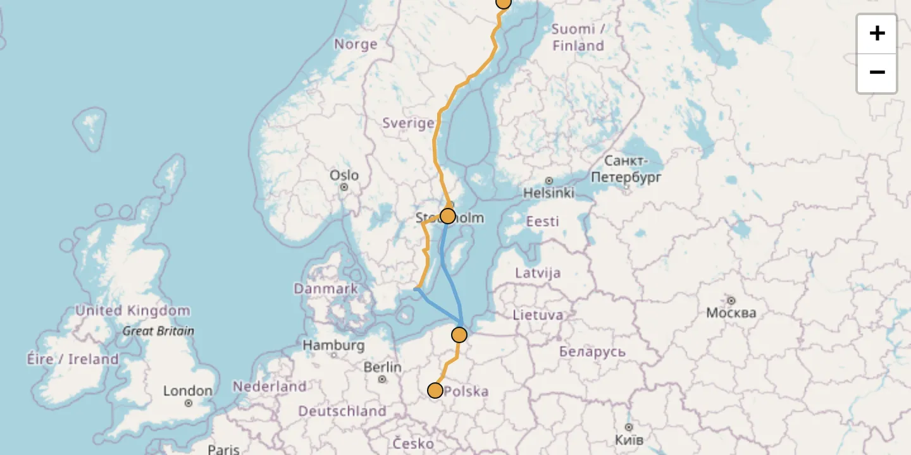
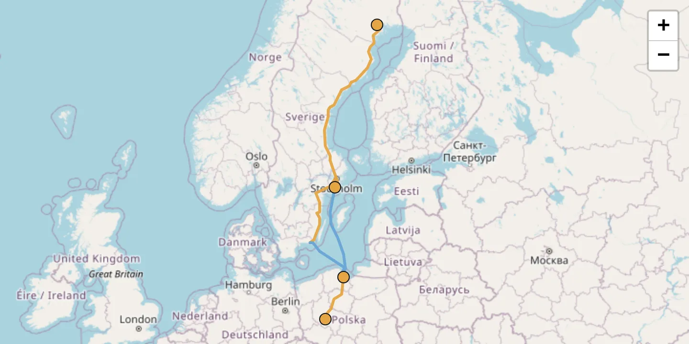
Kokpit na telefonie
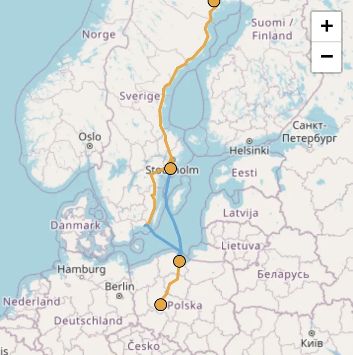
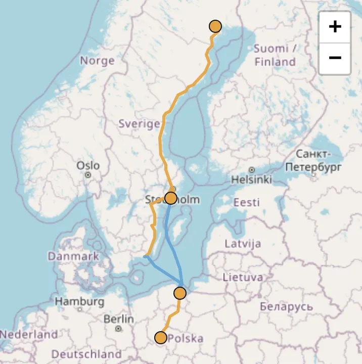
Przegląd w podglądzie transportu
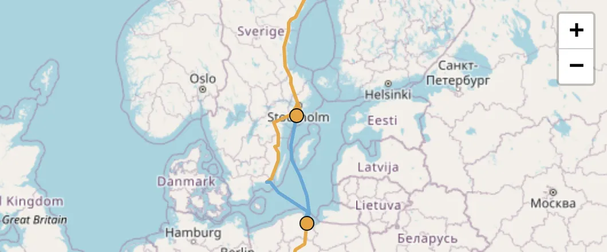
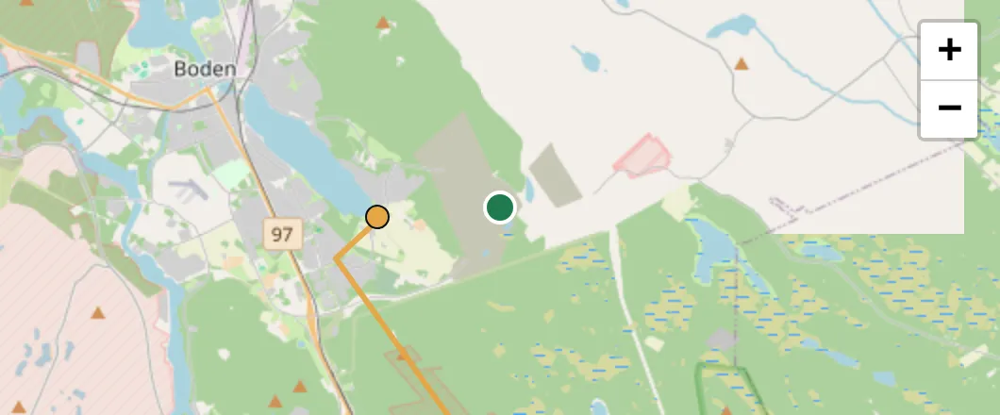
Podkład na podglądach to OpenStreetMap, w aplikacji będzie HERE. Trasa to prawdziwa geometria HERE z bazy (here_road_geometry, 06.10), uproszczona do podglądu. Zielona kropka to ostatnia pozycja naczepy z emtrack.
Propozycja
- 1a · 1b Kokpit i Mapa przy każdym wejściu i po zmianie rozmiaru okna ustawiają kadr na całą trasę: odcinki drogowe PL i SE, obie przeprawy promowe i cztery punkty (Śrem, Gdańsk, Nynäshamn, Boden), z marginesem 24 px. Przybliżenie z krokiem 0,25 zamiast 1, żeby trasa wypełniała kadr, a nie wisiała w środku pustej mapy.
- 1a · 1b Ręczne przesunięcie działa do wyjścia z widoku. Przy następnym wejściu kadr wraca do całej trasy.
- 1c Przegląd ustawia środek na ostatniej pozycji GPS pojazdu, przybliżenie 11. Przy nowej pozycji (co 60 s) środek przesuwa się za pojazdem, chyba że użytkownik sam przesunął mapę.
- 1c Gdy transport nie ma jeszcze pozycji GPS, Przegląd pokazuje całą trasę i napis „Brak pozycji GPS”.
- Przybliżenie w Przeglądzie: 11.
- Przycisk „Cała trasa”: nie dodajemy.
Sytuacje drogowe w Polsce z HERE
Pozycja H-2-PL jest w planie oznaczona ✅, ale na produkcji nie działa. Kod jest gotowy i wdrożony, tylko nikt go nie uruchamia, a w aplikacji nie ma panelu, który by te dane pokazał.
Fakty
- FaktFunkcja
road-plz obsługą HERE Traffic jest wdrożona (wersja 13, 05.10, 12:35). Supabase: lista funkcji Edge. - Nie działaW bazie jest 41 zadań cyklicznych i żadne nie uruchamia
road-pl. Dla Szwecji jesttower-road-seco 15 minut. Supabase:cron.job; migracja0171_h2pl_here_traffic.sqlnie zakłada harmonogramu. - Nie działaDziennik integracji nie ma ani jednego uruchomienia
road-pl. Licznik HERE za październik: Traffic 0 zapytań. Supabase:integration_runs,here_usage. - FaktW bazie są 3 ryzyka typu „droga PL”, ale to zakazy czasowe ruchu ciężarówek (25.10 i 22.11), nie sytuacje z HERE. Supabase:
risk_signals, kluczeTIME_BAN:PL:…, 05.10. - Nie działaW kodzie aplikacji nie ma panelu „Warunki drogowe PL”. Jest tylko „Warunki drogowe SE · E4 i E22”. Ryzyka drogowe PL trafiają do kategorii operacyjnej, między pozostałe ryzyka. Kod:
src/i18n/d19Extra.tslinia 229;src/data/mappers.tslinia 379.
| Źródło | Harmonogram | Uruchomienia (3 dni) | Zapytania HERE w październiku |
|---|---|---|---|
| Drogi SE (Trafikverket) | co 15 min | 283 | — |
| Drogi PL (HERE Traffic) | brak | 0 | 0 |
| Podkład mapy HERE | na żądanie | — | 5 894 z 30 000 |
Propozycja
- Uruchomienie Dodać zadanie cykliczne
tower-road-plco 15 minut, jak dla Szwecji. To 4 × 24 × 31 = 2 976 zapytań w miesiącu, poniżej darmowej puli 5 000, czyli 0 USD. - Widok Na stronie Ryzyka panel „Warunki drogowe PL” obok panelu SE, w tym samym układzie. Makietę pokażę w etapie E7 (grupowanie ryzyk), żeby nie projektować tej strony dwa razy.
- Kategoria Sytuacje z HERE dla Polski trafiają do kategorii drogowej, nie operacyjnej.
- Sprawdzenie Po wdrożeniu w dzienniku integracji pojawiają się uruchomienia
road-pl, a licznik HERE Traffic rośnie. Sprawdzę to sam w bazie.
- Drogi PL z HERE: odświeżanie co 15 minut (ok. 3 000 zapytań w miesiącu, 0 USD).
Opłata paliwowa, ceny paliwa i źródło prawdy cen
Baza liczy opłatę paliwową spójnie. Mylące są podpowiedzi w aplikacji, a pobieranie cen nie ma ponowień ani alarmu. Dlatego w Opcjach i w podglądzie transportu widać inne liczby niż na transportach.
Fakty
- Nie działa06.10 o 07:15 pobieranie cen nie powiodło się: Orlen zerwał połączenie. Funkcja przerywa pracę na pierwszym błędzie, więc nie zapisała też ceny OKQ8. Pobieranie jest raz dziennie, bez ponowienia. Nie powstało żadne ryzyko ani powiadomienie. Dziennik
integration_runsnr 7596; kodsupabase/functions/fuel-prices/index.tslinie 48–56 i 90–94;risk_signals: brak wpisu. - Brak danychOrlen opublikował 06.10 cenę 6 919 PLN/m³, czyli 6,919 PLN/l. Tej ceny nie ma w bazie. Wejdzie do średniej tygodnia 05–11.10, więc wpływa na opłatę dla załadunków 12–18.10. Cena OKQ8 z 06.10 (22,49 SEK/l) dotarła następnego dnia. API Orlen, historia ONEkodiesel 29.09–07.10, odczyt 07.10;
fuel_index_readings. - FaktTransporty w bazie: załadunek 29.09–03.10 ma mnożnik 1,14, załadunek 05–08.10 ma 1,13. Koszt przewoźnika i przychód KSH mają zawsze ten sam mnożnik. Przeliczyłem tydzień 28.09–04.10 ręcznie: OKQ8 średnio 22,63 SEK/l z 4 publikacji daje 1,13, Orlen 7,22 PLN/l z 5 publikacji daje 1,15, niższy to 1,13. Wynik się zgadza. Opłata to stawka × 13 %, np. 6 900 EUR → 897 EUR. Funkcja
sefs_week_calc;load_cost,load_revenue. - MyląceOpcje pokazują dwie inne liczby niż transporty: „Okres 2026-10-07: mnożnik SEK 1.120, PLN 1.110 → stosowany min = 1.110” — mnożnik z ceny jednego dnia, nieużywany w rozliczeniach.
„Średnia SEK 22.94, PLN 7.21 → mnożnik 1.140 dla załadunków w tym tygodniu” — a transporty w tym tygodniu mają 1,13. Przyczyna: podgląd liczy we własnym kodzie, z pierwotnych odczytów z 05.10 rano (inny produkt OKQ8, Q8Trucks) z pominięciem późniejszych korekt, i ze średniej dni zamiast publikacji. Potwierdzone uruchomieniem funkcji aplikacji na danych z bazy. Kod:src/lib/sefsWeek.tslinie 39–41,src/auth/BafForm.tsxlinie 89–101. - MylącePodgląd transportu pisze „Mnożnik paliwowy ×1.1300 · z dnia 2026-10-07”. To data załadunku, a mnożnik pochodzi ze średniej z tygodnia 28.09–04.10. Kod:
LoadDrawer.tsxlinie 73–74. - FaktEkran BAF w Opcjach to formularz z 15 polami. Tabela mnożników jest wpisywana jako tekst „18.50;1.00” w polu tekstowym, a pod nim jest lista do 60 odczytów z korektami. W bazie są 3 wersje parametrów z tą samą datą 28.09, wersja 1 oznaczona jako nieuzgodniona.
- Brak ceny8 transportów kratownic (KR-08 … KR-15) nie ma ani kosztu, ani przychodu. Nie mają daty załadunku, a cena kratownic zależy od liczby aut w konwoju tego dnia (1, 2 albo 3). Pozostałe 4 transporty bez daty mają cenę oznaczoną jako prognoza.
loadsbezload_cost: 8 z 94; cennik przychodu KR: 13 382 / 12 905 / 11 949 EUR. - FaktŹródła cen są dziś w trzech miejscach Opcji: Cennik (koszt wersja 1, przychód wersja 2 z 06.10), Opłata paliwowa (wersja 3) i Progi (postój 75 EUR/h i 750 EUR/doba, oznaczone „WSTĘPNE”). Katalogu innych dopłat nie ma. W kodzie aplikacji są jeszcze wbudowane kopie cennika SCX i tabel SEFS z tygodni 36–38, pozostałe po makiecie. Kwoty transportów na produkcji pochodzą z bazy, nie z tych kopii.
rate_cards,sefs_parameters,ops_thresholds;src/lib/sefs.tslinie 85–89,src/data/scx-rates-base.json.
Opcje → Opłata paliwowa po zmianie
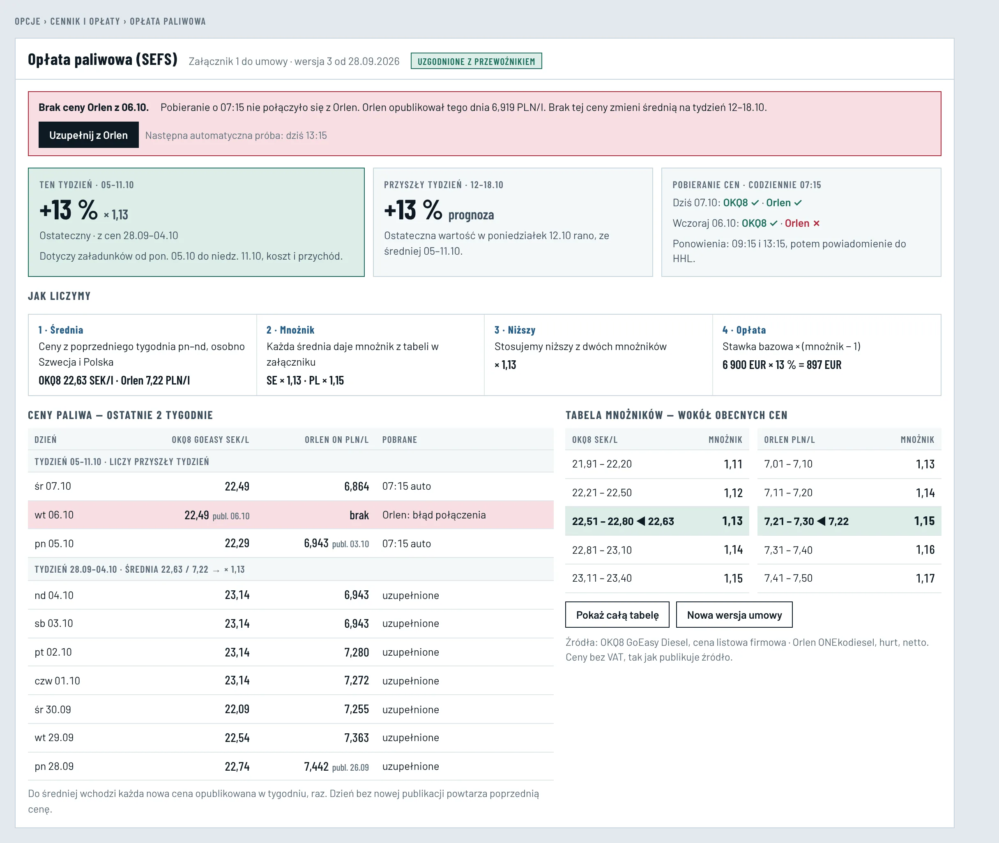
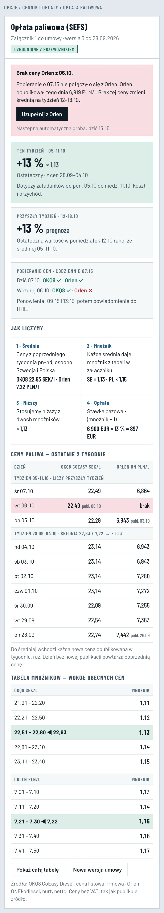
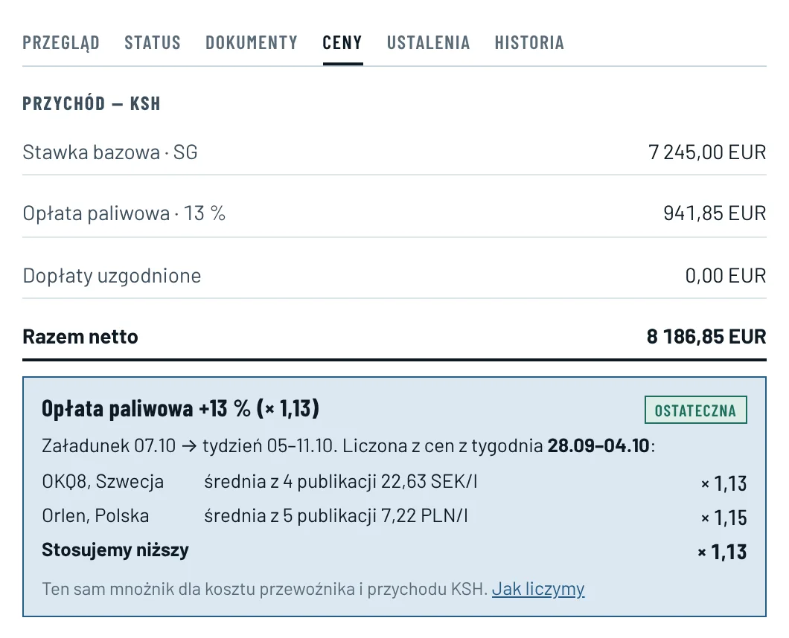
Propozycja
- Pobieranie Każde źródło pobierane osobno, więc awaria Orlen nie blokuje OKQ8. Trzy próby dziennie: 07:15, 09:15 i 13:15. Przy każdej próbie system dociąga brakujące publikacje z ostatnich 7 dni z historii źródła (Orlen ma historię w API, sprawdziłem). Po ostatniej nieudanej próbie: ryzyko dla HHL i dzwonek „Brak ceny Orlen z 06.10”. W Opcjach przycisk „Uzupełnij”.
- Od razu Uzupełnić cenę Orlen z 06.10: 6,919 PLN/l, publikacja 06.10.
- Jedna liczba Opcje, podgląd transportu, Finanse i e-maile biorą mnożnik z tej samej funkcji w bazie co transporty. Własne liczenie w aplikacji i mnożnik „z jednego dnia” znikają.
- Czytelność Ekran Opłaty paliwowej jak na makiecie: ten tydzień, prognoza na przyszły, stan pobierania, „Jak liczymy” z prawdziwymi liczbami, ceny z 2 tygodni z zaznaczonymi lukami i tabela mnożników jako tabela. Zmiana tabeli tylko przez „Nowa wersja umowy”.
- Źródło prawdy W Opcjach HHL jedno miejsce „Cennik i opłaty” z czterema zakładkami: Cennik przewoźnika (koszt), Cennik KSH (przychód), Opłata paliwowa i Dopłaty. Każda ma wersję i datę obowiązywania. Stawki postoju przechodzą z Progów do Dopłat. Wbudowane kopie cennika znikają z kodu aplikacji.
- Transporty bez daty załadunku: cena jako prognoza.
- Dopłaty poza postojem: tylko % frachtu przy anulowaniu, z importowanego cennika Excel.
- Stawki postoju: ostateczne.
- Uzupełnienie ceny Orlen z 06.10: zgoda.
Cennik Excel a baza: cztery rozbieżności
Sprawdziłem cennik przewoźnika zaimportowany z Excela (SCX_CENNIK.xlsx, w kodzie aplikacji jako src/data/scx-rates-base.json, sekcja warunków handlowych) i porównałem z tym, czym liczy baza.
| Warunek | Cennik Excel | Baza dziś | Stan |
|---|---|---|---|
| Opłata za anulowanie | bezpłatnie do 5 dni przed; do 4 dni 15 %, do 3 dni 25 %, do 1 dnia 50 %, w dniu załadunku 100 % frachtu | brak w bazie | brakuje |
| Postój za dobę | kratownice 750 EUR, pozostałe 500 EUR | 750 EUR dla wszystkich | różnica |
| Czas wolny na załadunku i rozładunku | „4h + 2h, potem 75 EUR za każdą następną godzinę” | załadunek 6 h, rozładunek 4 h, 75 EUR/h | do wyjaśnienia |
| Potwierdzenie daty załadunku | 7 dni przed | 5 dni przed (próg „Wyprzedzenie dat KSH”) | do wyjaśnienia |
Cennik Excel to strona kosztowa (przewoźnik). Nie wiem, czy KSH ma te same warunki anulowania. Baza: ops_thresholds; opłat za anulowanie nie ma w żadnej migracji.
- Postój za dobę: 750 EUR dla wszystkich (baza bez zmian).
- Czas wolny od dopłat: 6 h na załadunku, 4 h na rozładunku (baza bez zmian).
- Potwierdzenie daty załadunku: 5 dni (baza bez zmian).
- Anulowanie: KSH płaci HHL te same procenty co HHL przewoźnikowi. Do dodania w zakładce Dopłaty, po stronie kosztu i przychodu.
Faktury: widoczność, akceptacja i obieg
Na stronie Faktury działają dwa systemy naraz. Górny panel to pozostałość makiety, której przyciski niczego nie zapisują. Prawdziwy moduł jest niżej, ma w bazie gotowy obieg, ale nie liczy VAT i nie prowadzi użytkownika krok po kroku.
Fakty
- Nie działaDla HHL i SCX górny panel strony to makieta: „Porównanie trójstronne”, domyślnie tydzień 2026-W38, ostatnie 6 zrealizowanych transportów z kwotą „zafakturowano” równą cennikowi, przyciski „Złóż fakturę”, „Zatwierdź”, „Sporna” i panel faktoringu. Te przyciski zmieniają tylko stan w przeglądarce. Nic nie trafia do bazy, a po odświeżeniu strony wszystko znika. Kod:
src/views/InvoicesView.tsxlinie 64–236;useTowerStore.tssubmitInvoiceiresolveInvoice(około linii 1430–1475) bez zapisu do bazy. - BrakujeSystem nie liczy VAT. Przy dodawaniu faktury trzeba przepisać netto, VAT i brutto z dokumentu. Funkcja
register_invoice: komunikat „Netto, VAT i brutto przepisz z dokumentu (system nie liczy VAT)”; pole VAT wBillsPanel.tsxlinia 447. - FaktBaza ma gotowy obieg: rejestracja faktury z PDF i transportami, automatyczne sprawdzenia (transport niedostarczony, zły tydzień, kurs NBP, kwota poza tolerancją 1 EUR i 0,2 %), weryfikacja przez odbiorcę (akceptacja albo spór z powodem), odpowiedź na spór, oznaczenie opłacenia przez HHL, codzienne przypomnienia i statusy terminów. Funkcje
register_invoice,invoice_dispute_reply,mark_invoice_paid,send_payment_reminders(00:15),refresh_payment_status(00:05). - FaktW bazie jest tylko 1 faktura: testowa
WT-TEST-P6-20261005od Scandinavian Express na 100 EUR netto, zaakceptowana i opłacona. Faktur HHL → KSH nie ma. - FaktWidoczność faktur w bazie jest ustawiona poprawnie: HHL widzi wszystkie, każda inna firma tylko te, które wystawiła albo otrzymała. KSH z plików widzi tylko PDF faktury, CMR, POD i korektę. Reguły dostępu
invoices_read,invoice_documents_ksh_scope. - Prawdopodobna przyczynaPrzełącznik „Rola: HHL / KSH / SCX” w górnym pasku zmienia tylko wygląd. Dane zostają wczytane z uprawnieniami HHL, więc w podglądzie „KSH” mogą być widoczne rzeczy, których prawdziwe konto KSH nie zobaczy. Prawdziwy widok firmy daje „Działaj jako” w Użytkownikach, bo wtedy dane ogranicza baza. Bez logowania nie mogę sprawdzić, czy to właśnie widziałeś. Kod:
Topbar.tsxlinie 115–129,AuthGate.tsxlinie 408–414; w baziecurrent_org_iduwzględnia tylko „Działaj jako”. - Luka w bazieOdbiorca faktury (np. KSH) i wystawca przed akceptacją (np. SCX) mogą z pominięciem aplikacji zmienić status płatności swojej faktury. Strażnik w bazie pilnuje treści faktury i weryfikacji, ale nie pól płatności. Według ustaleń opłacenie oznacza tylko HHL. W aplikacji takiego przycisku nie ma, luka jest po stronie bazy. Wynika to z kodu funkcji, zapisu nie testowałem. Funkcja
guard_invoice_update; regułyinvoices_update_recipient,invoices_update_issuer. - FaktFaktura ma trzy osobne kolumny statusu: stary
status,verification_statusipayment_status. W ustaleniach projektu, które mam zapisane, nie ma faktoringu.
Faktury po zmianie
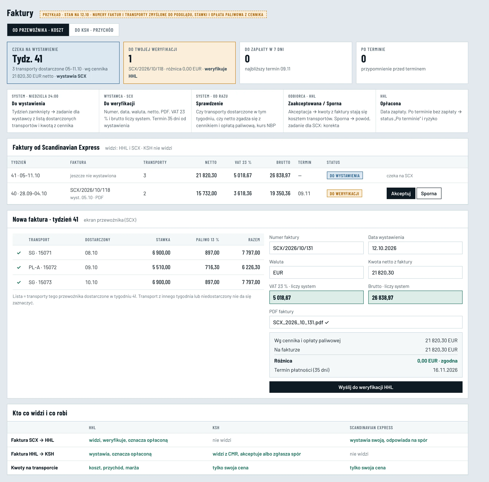
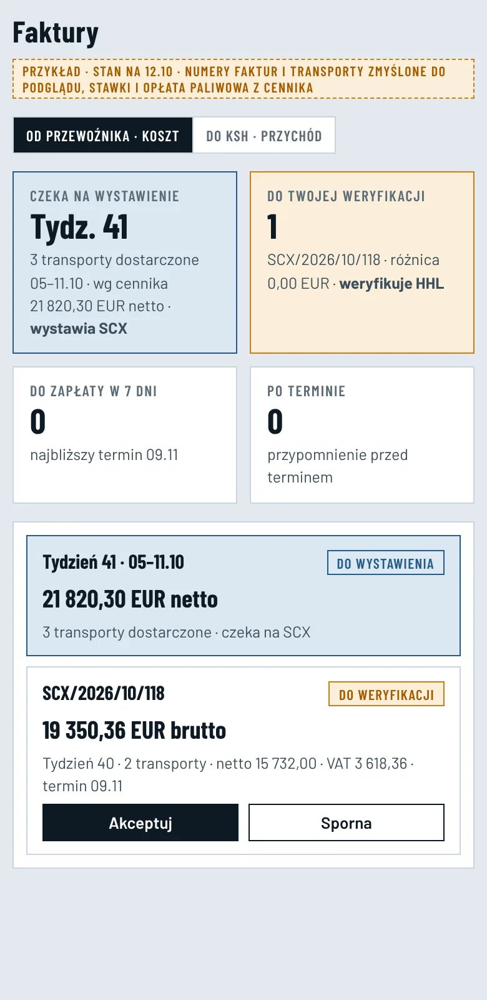
Propozycja
- Jedna strona Usunąć panel makiety: porównanie trójstronne z tygodniem 38 i lokalne przyciski. Faktoring zostaje, ale przeniesiony do bazy (E4 · faktoring). Zostaje moduł zapisujący w bazie. HHL ma dwie zakładki (od przewoźnika i do KSH), KSH widzi tylko faktury od HHL, SCX tylko swoje.
- Przyczyna → skutek Zamknięcie tygodnia (niedziela 24:00) tworzy pozycję „Do wystawienia” z listą dostarczonych transportów i kwotą z cennika. Wystawca dostaje zadanie i powiadomienie w dzwonku.
- VAT Wystawca wpisuje netto z faktury, system liczy VAT 23 % i brutto. Do zaznaczenia są tylko transporty dostarczone w tym tygodniu.
- Weryfikacja Odbiorca akceptuje albo zgłasza spór z powodem. Akceptacja zapisuje kwoty z faktury na transportach jako obowiązujące. Spór daje wystawcy zadanie: korekta albo odpowiedź.
- Płatność Tylko HHL oznacza fakturę jako opłaconą, z datą. Po terminie bez zapłaty: status „Po terminie” i ryzyko dla HHL. Baza blokuje zmianę płatności wszystkim poza HHL.
- Porządek Jeden status faktury zamiast trzech: Do wystawienia, Do weryfikacji, Sporna, Zaakceptowana, Opłacona, Po terminie.
- Faktoring zostaje: przewoźnik musi móc z niego skorzystać. Szczegóły niżej, w E4 · faktoring.
- Przełącznik roli w górnym pasku: podgląd z prawdziwymi uprawnieniami firmy (jak „Działaj jako”).
- Zgodność faktury z wyliczeniem: co do grosza (tolerancja 1 EUR i 0,2 % znika).
Faktoring dla przewoźnika
Na produkcji faktoring nie zapisuje się nigdzie. Oferta HHL na stronie Faktury wraca do 2,5 % i 48 h po każdym odświeżeniu strony, a wybór przewoźnika znika razem z nią. Ani HHL, ani przewoźnik nie widzą ustawień drugiej strony.
Fakty
- Nie działaW wersji produkcyjnej oferta faktoringu nie trafia do bazy ani do pamięci przeglądarki. Żyje tylko do odświeżenia strony. Wartości z kodu: włączony, prowizja 2,5 %, wypłata po 48 godzinach, nazwa „SCX Factoring”. Kod:
useTowerStore.tslinie 144–151 (wartości), 1889–1897 (w trybie produkcyjnym zapisywane są tylko język, waluta, motyw i 3 przełączniki powiadomień). Żadna migracja nie zawiera faktoringu. - KorektaW poprzedniej wersji raportu napisałem „zapis w pamięci przeglądarki”. To dotyczy tylko wersji demonstracyjnej. Na produkcji jest gorzej: brak jakiegokolwiek zapisu.
- FaktW Opcjach oferta faktoringu jest na produkcji ukryta z opisem „zapis wyłącznie w przeglądarce, bez tabeli w bazie”. Na stronie Faktury ten sam formularz jest widoczny dla HHL, a wybór „Faktoring” dla przewoźnika. Kod:
src/lib/prodFacade.tslinia 22;InvoicesView.tsxlinie 238–400. - PisowniaAngielskie „factoring” w 12 miejscach polskich tekstów i „net” zamiast „netto” w jednym. Kod:
src/i18n/messages.tslinie 168, 222–245;src/i18n/ui6.tslinie 437, 541, 554;src/i18n/d19Extra.tslinia 174.
- Wypłaca HHL, wcześniej niż termin płatności, z potrąceniem prowizji.
- Prowizja 1 % od kwoty netto faktury.
- Wypłata 48 h po akceptacji faktury przez HHL.
Jak to będzie działać
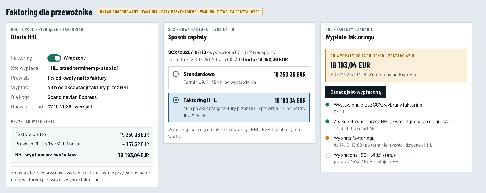
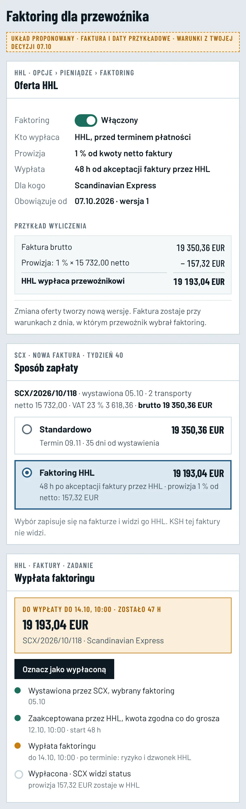
Do zbudowania
- Od razu Pisownia „faktoring” i „netto” we wszystkich polskich tekstach.
- Baza Oferta faktoringu w Opcjach HHL › Pieniądze › Faktoring, zapisywana w bazie z wersją i datą obowiązywania. Faktura zapamiętuje wersję oferty z dnia wyboru.
- Przewoźnik Przy dodawaniu faktury wybiera „Standardowo (35 dni)” albo „Faktoring HHL”. Widzi prowizję i kwotę wypłaty liczoną przez system: brutto − 1 % netto.
- Przyczyna → skutek Akceptacja faktury z faktoringiem uruchamia 48 h, zadanie i dzwonek dla administratora HHL „Wypłać faktoring”. Po terminie bez wypłaty: ryzyko dla HHL. HHL oznacza wypłatę, przewoźnik widzi status i kwotę.
- Usunąć Formularz oferty ze strony Faktury i wartości 2,5 % / „SCX Factoring” z kodu.
Powiadomienia na telefonie, dzwonek i e-maile
Powiadomienia na telefon nie mogą się pojawić na żadnym telefonie. Serwer je wysyła, ale plik aplikacji, który odbiera je w telefonie, nie ma kodu do ich wyświetlenia. Dzwonek jest zalany komunikatami promowymi i drogowymi, a większość z nich po kliknięciu prowadzi donikąd.
Fakty · powiadomienia na telefonie
- PrzyczynaPlik
sw.jsna produkcji (ten sam co w repozytorium) nie ma obsługi zdarzenia „push” ani kliknięcia powiadomienia. W całym kodzie nie ma wywołania, które wyświetla powiadomienie. Telefon dostaje wiadomość, ale aplikacja jej nie pokazuje. Dotyczy iPhone’a i Androida. Pobranehttps://tower.log-mar.pl/sw.js07.10 =public/sw.js; brakshowNotificationwsrc,public,supabase. - FaktSerwer wysyła: 284 powiadomienia na telefon ze statusem „wysłane”, 0 błędów, zadanie co 5 minut.
notificationskanał WEB_PUSH;integration_runsweb-push-send. - FaktZapisane jest tylko 1 urządzenie: Android, Chrome, od 05.10. Żaden iPhone nie został nigdy zapisany. Na iPhonie powiadomienia działają tylko w aplikacji dodanej do ekranu początkowego i włączone z jej wnętrza.
push_subscriptions: 1 wiersz. - MylącePrzełącznik „Powiadomienia na telefon” w Preferencjach zawsze pokazuje „Włączone”, także gdy telefon nie jest zapisany. Nie sprawdza stanu urządzenia. Żeby się zapisać, trzeba go wyłączyć i włączyć ponownie. To tłumaczy, dlaczego zapisane jest tylko 1 urządzenie. Kod:
src/components/settings/UiPrefsPanel.tsxlinia 22:useState(true); zapis tylko po zmianie przełącznika, linia 54. - Nie działaKażde powiadomienie na telefon ma ustawione otwarcie strony głównej, a nie miejsca, w którym trzeba coś zrobić. Funkcja
web-push-send, linia 74:url: '/'.
Fakty · dzwonek
- ZalewW ostatniej dobie każde konto HHL dostało 152 wpisy w dzwonku. 1 109 wpisów z doby to otwarcie i zamknięcie komunikatów promowych (36 otwartych, 22 zamknięte) i drogowych w Szwecji (38 i 35), wysłane do wszystkich firm, także KSH i przewoźnika. Najwięcej nieprzeczytanych na jednym koncie: 678.
notificationskanał IN_APP, szablony RISK_OPEN i RISK_RESOLVED. - Prowadzi donikąd1 464 z 1 985 wpisów „ryzyko otwarte” i 1 005 z 1 141 „ryzyko zamknięte” nie jest powiązanych z transportem. Kliknięcie takiego wpisu prowadzi do adresu
/transport/brak, czyli do transportu, którego nie ma. Kod:supabase/functions/_shared/clickTargets.ts(RISK_OPEN → karta transportu),useTowerStore.tsopenNotificationlinie 546–580. - FaktTabela celów kliknięć jest zaplanowana dla około 60 rodzajów zdarzeń (decyzje, formularze awizacji, numery zleceń, faktury, ustalenia) i dla nich działa poprawnie. Ustawienia, kto dostaje dzwonek i e-mail, to 5 grup zdarzeń dla 3 rodzajów firm, bez podziału na role i bez rozróżnienia „wymaga działania” i „informacja”.
notification_matrix: dzwonek włączony prawie wszędzie, e-mail wyłączony wszędzie. - FaktDecyzje nie mają przypisanej osoby, a w tytule zamiast numeru zlecenia bywa początek identyfikatora, np. „d900af86: brak awizacji przed załadunkiem”. Powiadomienia dostają też 3 konta testów bezpieczeństwa założone 05.10 (KSH, adresy sebastian+tower-sec…@log-mar.pl). KSH nie ma dziś żadnego prawdziwego konta: wszystkie 4 konta KSH to konta testowe.
decisions.assignee_idpuste;app_users.
Fakty · e-maile i „Stan systemu”
- E-maile działająRaport dzienny z 06.10 i 07.10 został doręczony. Od 05.10, 10:10 UTC (12:10 w Polsce) nie wyszedł żaden e-mail o zdarzeniu. W tej samej minucie z konta sebastian@log-mar.pl wyłączono e-mail „System” dla HHL (włączony 01.10). 01.10 z tego konta ustawiono też e-mail „Decyzje” dla HHL na wyłączony. Dla pozostałych pól historia nie ma wpisów zmian. Dziś e-mail jest wyłączony we wszystkich 15 polach ustawień. Resend: lista wysłanych, status „delivered”;
audit_logNOTIFICATION_MATRIX_SET: 4 zmiany (01.10 ×3, 05.10 ×1);notification_matrix. - Przyczyna czerwonego kafelkaKafelek „Integracje” w Stanie systemu jest czerwony z powodu zadania „Limit poczty”. Jedyny wpis tego zadania jest z 04.10, 16:00, gdy aplikacja chciała wysłać 267 e-maili przy limicie Resend 100 na dobę. Nic później tego wpisu nie zastępuje, więc kafelek świeci na czerwono do dziś.
integration_runsemail-budget;SystemStatusPanel.tsxlinie 178–180, 206. - Fakt04.10 Resend odrzucił 58 e-maili z powodu dziennego limitu, 05.10 było 8 błędów klucza. E-maile o ryzyku z 05.10 miały temat „RISK_SEVERITY”, czyli kod zamiast zdania.
- Dwa przełącznikiE-mail o decyzji wychodzi tylko, gdy włączone są jednocześnie ukryty przełącznik „e-mail decyzji automatycznych” (włączony od 04.10) i pole „Decyzje” w ustawieniach powiadomień (wyłączone). Stan systemu pokazuje napis „Decyzje automatyczne: e-mail włączony”, a e-maile nie wychodzą.
security_flagsAUTOMATIC_DECISION_EMAIL = true; funkcjal13_decision_email(migracja 0149, linie 425 i 451) sprawdza oba; tekstopt_acc_email_budget. - FaktOpis bramki SMS w Opcjach mówi, że „e-maile wychodzą tylko na adresy log-mar.pl”. Baza od migracji 0133 wysyła też na adresy kont w aplikacji i aktywnych zaproszeń. SMS do kierowców są zablokowane, dopóki HHL nie włączy wysyłki zewnętrznej. Tekst
i3_note;security_flagsEXTERNAL_MESSAGING = false, notatka z 02.10.
Dzwonek i powiadomienie na telefonie po zmianie
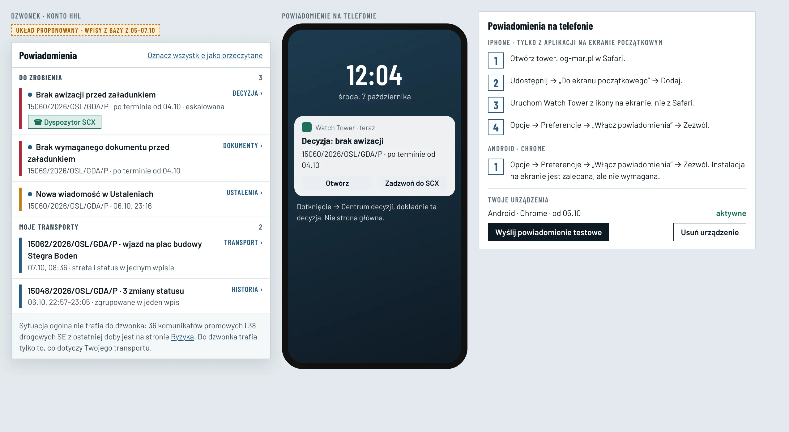
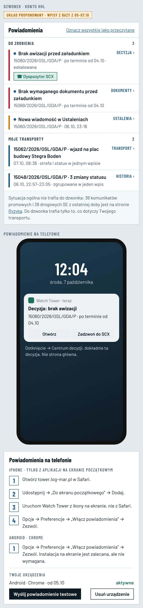
Propozycja
- Telefon Dodać do
sw.jswyświetlanie powiadomienia (tytuł, treść, ikona, grupowanie podobnych) i obsługę kliknięcia: aplikacja otwiera się dokładnie w miejscu z tabeli celów kliknięć, nigdy na stronie głównej. - iPhone W Preferencjach instrukcja krok po kroku. Przycisk „Włącz powiadomienia” na iPhonie aktywny tylko w aplikacji uruchomionej z ekranu początkowego.
- Test Lista Twoich urządzeń i przycisk „Wyślij powiadomienie testowe”, żeby każdy mógł sprawdzić swój telefon w 10 sekund.
- Dzwonek Trzy grupy. „Do zrobienia”: decyzje, braki i wiadomości, które dotyczą Twojej firmy lub roli. „Moje transporty”: strefy i statusy, zgrupowane na transport. „Sytuacja ogólna” (promy, drogi, pogoda bez przypisanego transportu) nie trafia do dzwonka, tylko na stronę Ryzyka. Zamknięcie ryzyka nie tworzy nowego wpisu, tylko oznacza stary jako rozwiązany.
- Telefon tylko pilne Na telefon trafia tylko „Do zrobienia” z poziomem krytycznym. Reszta czeka w dzwonku.
- Kliknięcie Wpis bez miejsca docelowego nie może powstać. Ryzyko bez transportu prowadzi do tego ryzyka na stronie Ryzyka.
- Ustawienia W Opcjach HHL tabela: zdarzenie × rola × kanał (dzwonek, telefon, e-mail), zamiast 5 grup na rodzaj firmy.
- Stan systemu Kafelek poczty liczy dzisiejsze wysyłki i sam wraca do zielonego następnego dnia. Tematy e-maili po polsku, nie kody.
- E-maile włączane i wyłączane w aplikacji. Administrator HHL decyduje, kto co dostaje. Jeden przełącznik na zdarzenie, rolę i kanał; ukryty przełącznik decyzji znika. Makieta: E11 · Opcje › Kto co dostaje.
- Promy i drogi bez przypisanego transportu: tylko strona Ryzyka, bez dzwonka.
- Przy transporcie pokazujemy tylko prom i ryzyko drogowe, które są jeszcze przed pojazdem. Gdy pojazd zjechał z promu albo minął odcinek z ryzykiem, ryzyko znika z transportu i z dzwonka. Zostaje tylko na stronie Ryzyka.
- 3 konta testów bezpieczeństwa KSH z 05.10: wyłączyć. Ja mam do produkcji tylko odczyt. Najszybciej: Opcje › Użytkownicy i sesje › „Wyłącz” przy adresach sebastian+tower-sec-pkce-1791212426729, sebastian+tower-sec-debug-1791212464030 i sebastian+tower-sec-pkce-1791212492938 (@log-mar.pl). Inaczej trafia do listy dla Cursora.
Opcje: co dziś robi każda zakładka i nowy układ
Opcje to 14 zwijanych zakładek na jednej długiej stronie. Opisy mają kody robocze (I-30, I-27, DEC-6, ONE-MECH, „WSTĘPNE”). Część przełączników działa tylko w jednej przeglądarce, a 9 z 13 przełączników bezpieczeństwa w bazie nie ma żadnego miejsca w aplikacji.
Fakty · zakładka po zakładce
| Zakładka dziś | Co robi, gdzie zapisuje | Problem (sprawdzony) | Po zmianie |
|---|---|---|---|
| Powiadomienia i decyzje | 5 grup zdarzeń × 3 rodzaje firm, dzwonek i e-mail, w bazie. Do tego 3 przełączniki zapisywane tylko w tej przeglądarce. | Brak ról i kanału „telefon”. E-mail wyłączony we wszystkich 15 polach. Licznik przy nazwie to nieprzeczytane wpisy dzwonka, nie stan ustawień. | Powiadomienia › Kto co dostaje |
| Odbiorcy SMS i strefy | 2 listy po 2 osoby (Śrem, Boden) wpisywane ręcznie: nazwa i numer. 2 wyzwalacze, bramka SMS, przełączniki stref. | Wpisana 1 osoba (Śrem). Lista Boden pusta. Numerów nie da się wybrać z kont. Opis bramki odsyła do pliku w repozytorium. | Powiadomienia › SMS przy strefach; bramka → Stan systemu |
| Progi i terminy | 10 wartości w bazie, zapis po wyjściu z pola. | Etykiety z kodami („D-39 potwierdzone”), bez zdania o skutku. „Wyprzedzenie dat KSH” to w rzeczywistości potwierdzenie daty załadunku 5 dni. | Zasady transportu › Progi alarmów, Terminy |
| Czas wolny i przestój | 7 wartości w bazie. | Każda etykieta ma dopisek „(WSTĘPNE)”, choć stawki są ostateczne. Wybory zakodowane liczbami: „1 = cała godzina, 2 = ułamek”. | Pieniądze › Dopłaty (postój + anulowanie) |
| Stan systemu | Kopie, integracje, bramka SMS, poczta, HERE, DeepL, CSP. | Czerwony przez wpis z 04.10 (E5). Nazwy techniczne: „CSP (Report-Only)”, „II-10-E1”. | System › Stan systemu |
| Użytkownicy i sesje | Zaproszenia, rola, wyłączenie, wylogowanie, „Działaj jako”, moje 2FA, moje urządzenia. | Lista pokazuje tylko e-mail i kod firmy. Baza ma kolumny imię i nazwisko oraz telefon, ale aplikacja ich nie pokazuje i nie ma funkcji zapisu. 0 z 14 kont ma telefon, 7 ma nazwisko. | Ludzie i dostęp › Użytkownicy (E6) |
| Dziennik logowań | Ostatnie 50 udanych logowań. | Nieudanych prób baza nie zapisuje. | Ludzie i dostęp › Logowania |
| Komunikat dla wszystkich | Baner z terminem i wyborem firm, w bazie. | Działa: 2 komunikaty testowe z 01.10. | Powiadomienia › Komunikat dla wszystkich |
| Historia zmian | 2 371 wpisów, filtry wpisywane ręcznie nazwą tabeli („loads”) i kodem („ROW_UPDATE”). | 2 191 wpisów (92 %) to techniczne zmiany wierszy. „Było” i „jest” jako surowy zapis danych. Przy zmianach ustawień powiadomień „było” jest puste. | System › Historia zmian |
| Eksport danych | Transporty (XLSX/CSV), historia, decyzje. | Historia i decyzje z nazwami kolumn z bazy (created_at, user_id) i identyfikatorami zamiast nazw. Do 2 000 wierszy, bez zakresu dat. Brak faktur i finansów. | System › Eksport danych |
| Cennik | Wersje w bazie: KSH 1 i 2, SCX 1; po 12 pozycji, 10 symboli. Formularz w tabeli 10 kolumn. | Opis z kodem „(I-30)”. Tabela nie mieści się na telefonie. Dopłat w cenniku nie ma. | Pieniądze › Cennik |
| SEFS / BAF | Opisane w E3. | Opisane w E3. | Pieniądze › Opłata paliwowa |
| Wymóg zezwoleń | Jeden przełącznik w bazie (dziś wyłączony, 6 zmian w 7 dni). | Opis z kodem „(I-27)”. Wymagane dokumenty ustawia się w innym miejscu, na stronie Dokumenty. | Zasady transportu › Zezwolenia i dokumenty |
| Preferencje i pozostałe | Waluta, motyw, telefon, ocena przewoźnika, instrukcja. Faktoring ukryty na produkcji. | Przełącznik telefonu zawsze „Włączone” (E5). Ocena przewoźnika to raport, nie ustawienie. | Dla mnie; ocena przewoźnika → Kokpit (E9) |
- UkryteW bazie jest 13 przełączników bezpieczeństwa. W aplikacji da się zmienić 4 (2 wyzwalacze SMS, wymóg zezwoleń, 2FA dla administratorów). Pozostałe 9, m.in. wysyłka SMS do kierowców, e-mail decyzji, stary link kierowcy, pobieranie cen paliwa, odczyt emtrack, kontrola trasy HERE, zmienia się tylko poleceniem w bazie.
security_flags: 13 wierszy z notatkami; komponenty Opcji:SmsZoneRecipients,PermitRequirement,Mfa. - FaktOpcje widzi tylko HHL. KSH i SCX mają „Ustawienia”: waluta, motyw, telefon, podgląd opłaty paliwowej, instrukcja (SCX także ocena). Nie mają tam 2FA ani listy swoich urządzeń: te panele są tylko w Opcjach HHL. Opis Ustawień obiecuje wybór języka, którego w aplikacji nie ma. Kod:
OptionsView.tsxlinie 133 i 386;SettingsView.tsx; tekstsettings_subtitle;UiPrefsPanel.tsxkomentarz „P8 — brak wyboru języka”. - FaktKonto „HHL Operacje” widzi te same Opcje co administrator. Zapisy idą przez funkcje administratora w bazie, więc powinny zostać odrzucone. Nie sprawdziłem tego w działaniu, bo nie mam logowania.
Nowy układ
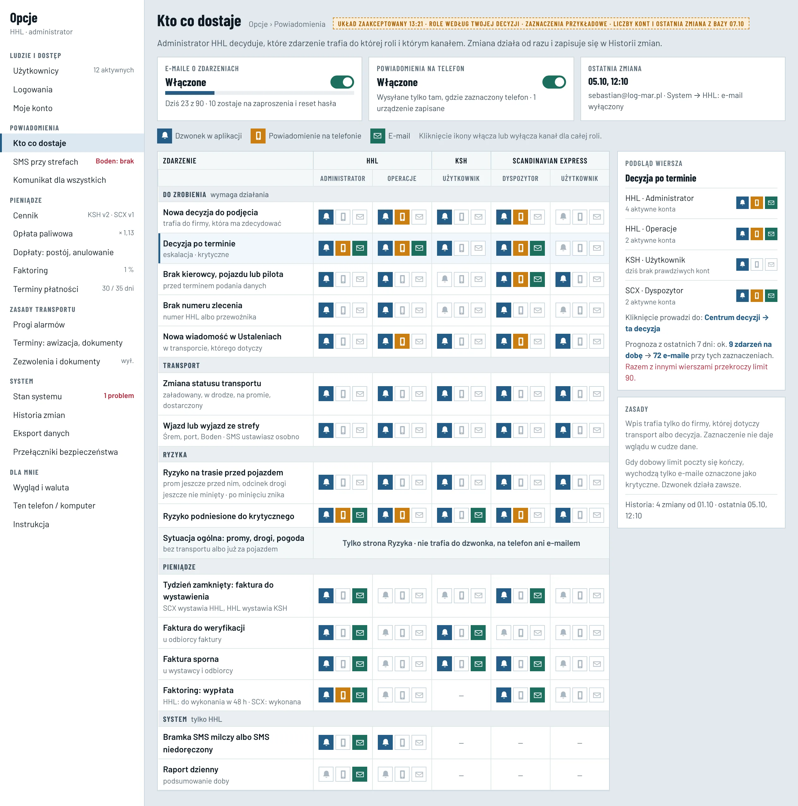
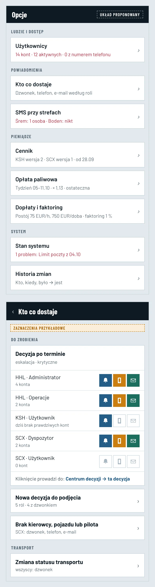
Propozycja
- Układ Menu boczne w 6 grupach zamiast 14 zwijanych zakładek: Ludzie i dostęp, Powiadomienia, Pieniądze, Zasady transportu, System, Dla mnie. Na telefonie lista kafelków, a po dotknięciu osobny ekran. Tabele na telefonie jako kafle.
- Język Zero kodów roboczych w opisach. Przy każdej wartości jedno zdanie: co się stanie, gdy próg zostanie przekroczony. Wybory jako przyciski, nie liczby 1 i 2.
- Źródło prawdy Każde ustawienie w bazie, z wersją albo historią „kto, kiedy, było → jest”. W przeglądarce zostaje tylko wygląd: motyw i waluta wyświetlania.
- Kto co dostaje Zdarzenie × rola × kanał (dzwonek, telefon, e-mail). Podgląd wiersza: ile kont dostanie, dokąd prowadzi kliknięcie, ile e-maili na dobę wyjdzie przy tych ustawieniach. Jeden przełącznik na sprawę: ukryty przełącznik e-maila decyzji znika.
- Przełączniki bezpieczeństwa Wszystkie 13 w System › Przełączniki bezpieczeństwa, opisane po polsku, ze stanem, autorem i datą zmiany. Zmienia tylko administrator HHL, z potwierdzeniem.
- Dla mnie Dla każdego konta we wszystkich firmach: moje dane (imię, nazwisko, telefon), 2FA, moje urządzenia, powiadomienia na tym telefonie z prawdziwym stanem, wygląd, instrukcja.
- Układ 6 grup z menu bocznym: zaakceptowany.
- Rodzaje kont, tylko te: HHL Administrator, HHL Operacje, KSH Użytkownik, SCX Dyspozytor, SCX Użytkownik. Znikają: KSH Administrator i „Plac budowy — podgląd”.
Skutek decyzji o rolach
- FaktRola KSH Administrator ma dziś 1 aktywne konto, testowe (sebastian+tower-test-ksh). Przed zablokowaniem roli trzeba je przestawić na KSH Użytkownik. „Plac budowy — podgląd” nie ma kont.
app_users; typuser_rolema 7 wartości. - FaktW bazie obie role występują tylko w 2 funkcjach (
role_matches_org,system_broadcast_current), w żadnej regule dostępu. W aplikacji: lista ról wsrc/auth/config.tslinie 30 i 48. Zmiana jest mała.
Co jest zrobione, a co czeka
W E11 jest spis wszystkich 14 zakładek z faktami, nowy układ 6 grup i jeden pełny ekran: Powiadomienia › Kto co dostaje (oraz Faktoring w E4b). Pozostałe 13 ekranów (SMS przy strefach, Progi i terminy, Czas wolny i przestój jako Dopłaty, Terminy płatności, Stan systemu, Użytkownicy i Logowania, Komunikat, Historia zmian, Eksport, Cennik, Wymóg zezwoleń, Dla mnie, Przełączniki bezpieczeństwa) nie mają jeszcze makiet. Idą jako osobny etap E12, ostatni w kolejce. Z Użytkowników w E6 robię tylko to, czego wymaga punkt 7: imię, nazwisko, telefon i dzwonienie.
Stan trzech audytów z 05 i 06.10
Sprawdziłem każdy punkt z plików „Audyt pełny 06.10”, „Propozycje ulepszeń 06.10” i „Audyt koordynatora 05.10” na produkcji 07.10 między 14:20 a 14:55. Sprawdzałem na koncie testowym Operacje HHL na komputerze i telefonie, w bazie (tylko odczyt) i w kodzie. Ostatnie wdrożenie produkcyjne jest z 07.10, 01:31, ostatnia migracja to 0192. Od tego czasu nic nowego nie weszło.
37 punktów: 8 zrobionych, 7 częściowo, 20 niezrobionych, 2 niesprawdzonych. Każdy częściowy i niezrobiony punkt ma teraz swój etap w kolejce.
| Punkt | Czego dotyczy | Stan | Dowód 07.10 | Etap |
|---|---|---|---|---|
| A1 Audyt pełny 06.10 | Mapa ładuje się 20–30 s | zrobione | Zrobione przez Groka 06.10 (AUD-01, AUD-01c–e): jedna mapa na sesję, kafelki HERE wprost z przeglądarki. Czasu dziś nie mierzyłem. | — |
| A2 Audyt pełny 06.10 | Dzwonek pokazuje kody | zrobione | Wpisy po polsku, np. „SG-03 · Czat: …”, „Nowe ryzyko: Warunki drogowe E4 …”, „2 min temu”. | E5: zalew i cele kliknięć |
| A3 Audyt pełny 06.10 | Panel zlecenia KSH bez zakładek | zrobione | W widoku KSH panel ma wszystkie zakładki. „Zmień ciągnik” u KSH nie sprawdziłem. | E10 |
| A4 Audyt pełny 06.10 | Drogi w Szwecji po szwedzku | częściowo | Nowe tytuły po polsku („przy węźle Stora Essingen, w kierunku Södertälje, region Stockholm”). Starsze nadal „från … till … båda riktningarna i … län”. | E7 |
| A5 Audyt pełny 06.10 | Stare ETA przed załadunkiem | nie zrobione | 91 z 92 transportów przed załadunkiem ma ETA w bazie. Harmonogram: SG-01 „ETA 06.10 21:05”. Kokpit: „6 poza oknem”. | E15 |
| A6 Audyt pełny 06.10 | Finanse: trzy prawdy | nie zrobione | Kokpit „4,4%”, z bazy marża to 4,77% przychodu. W zakładce Ceny nadal „Kurs NBP · 0.0000 ·”. | E16 |
| A7 Audyt pełny 06.10 | Waluta domyślnie EUR | nie zrobione | Twoje nowe konto z 07.10 od razu pokazuje PLN. | E16 |
| B1 Audyt pełny 06.10 | Ustalenia = tylko czat | nie zrobione | Nadal „Link dla kierowcy · Wygeneruj nowy link · Wyślij link SMS-em · Odwołaj link” i „Przypisz SCX · Oznacz jako gotowy · Wyjazd · Oznacz rozładowany”. | E17 |
| B2 Audyt pełny 06.10 | Status = Historia | nie zrobione | Obie zakładki identyczne: „GEOFENCE_EXIT”, „Zmiana automatyczna READY → READY”, autor „— // HHL”. | E17 |
| B3 Audyt pełny 06.10 | Centrum decyzji: kody i liczniki | nie zrobione | „15048/2026/OSL/GDA/P: brak awizacji”, „NO_AWIZACJA · 9/28/2026, 12:00:00 PM” (format zależy od przeglądarki, w polskiej „28.09.2026, 12:00:00”). Liczniki: kokpit 203, Centrum 30, baner +135. | E7 |
| B4 Audyt pełny 06.10 | Przełączniki SMS: błąd 403 | nie zrobione | Błąd 403 przy każdym wejściu w Opcje. Zalogowani nie mają prawa odczytu tabeli przełączników. | E12 |
| B5 Audyt pełny 06.10 | Opcje bez danych przed „Odśwież” | nie zrobione | Stan systemu: „Bramka SMS Brak”, „Integracje Brak wpisów”, „HERE 0 / 100 · podkład zapas”, „DeepL 0”. | E12 |
| B6 Audyt pełny 06.10 | Czas wykrycia odchylenia | nie zrobione | „5 min · mediana n = 2”. | E9 |
| B7 Audyt pełny 06.10 | Kokpit przewoźnika | nie zrobione | „Pogoda i stan morza: brak źródła danych.”, „Przychód tygodnia 0,00 PLN”. | E9 |
| B8 Audyt pełny 06.10 | Profil trasy | nie zrobione | SG-03: „Nie udało się pobrać profilu”. | E17 |
| B9 Audyt pełny 06.10 | Rejsy: domyślnie przyszłe | nie sprawdzone | Grok zgłosił 05.10 jako zrobione. Dziś nie sprawdzałem. | E10 |
| B10 Audyt pełny 06.10 | Dane testowe | częściowo | Bramka SMS: 1 aktywne urządzenie (było 3). Zostały polisa „Test OCP” i faktura WT-TEST-P6. | E18 |
| B11 Audyt pełny 06.10 | Błąd JavaScript appendChild | zrobione | Nie wystąpił w 18 wejściach (9 widoków × 2 szerokości). Nowy błąd: „Failed to fetch dynamically imported module” (webPush, corridorConditionsDb). | E22 |
| B12 Audyt pełny 06.10 | Bezpieczeństwo bazy | nie zrobione | 3 widoki finansowe SECURITY DEFINER (poziom ERROR), 12 funkcji wywoływalnych bez logowania (m.in. driver_post_event, driver_get_instructions), ochrona przed wyciekniętymi hasłami wyłączona. | E19 |
| C1 Audyt pełny 06.10 | Telefon | częściowo | Strona nie wychodzi poza 390 px w 9 widokach. Za małe przyciski: Opcje 142, Harmonogram 24. Kafle Kokpitu łamią „0 / 94” na dwie linie. | E8 |
| C2 Audyt pełny 06.10 | Komputer | częściowo | Logo w jednej linii. Przy 1366 px Marża nadal zasłania Status w Harmonogramie. Pasek etapów nadal bez liczb. | E20 |
| C3 Audyt pełny 06.10 | Teksty | częściowo | „Pobierz paczkę ZIP” i „Wgraj dokument” rozdzielone. Zostały „×1.1400”, „4.8%”, „1 pojazdów w ruchu”, daty formatowane przez przeglądarkę, z sekundami, nagłówek „Centrum decyzji” przy menu „Ryzyka”. | E21 |
| F1–F9 Audyt pełny 06.10 | Propozycje ulepszeń | nie zrobione | Zrobione tylko grupowanie w dzwonku (×liczba). Nagłówek, karty na telefonie, grupowanie Centrum, czcionka 12 px i format liczb czekają. | E7, E8, E21 |
| 1 Propozycje 06.10 | Kontrast trybu jasnego i ciemnego | nie sprawdzone | Dziś nie mierzyłem. | E10 |
| 2 Propozycje 06.10 | Aplikacja odświeża się po powrocie | częściowo | Nowa wersja ładuje się już tylko po kliknięciu komunikatu. Nadal każde ponowne „zalogowano” tego samego konta ładuje całą aplikację od nowa (AuthGate.tsx l. 386–387). Nowa przyczyna: po wdrożeniu strona sama się przeładowuje, gdy brakuje starego pliku (lazyRetry.ts l. 12). | E22 |
| 3 Propozycje 06.10 | Status jako oś czasu | nie zrobione | Jak B2. | E17 |
| 4 Propozycje 06.10 | Logika, używalność, teksty | nie zrobione | Różne liczby tej samej rzeczy (203 / 30 / +135), kody w interfejsie, ryzyka bez transportu w dzwonku. | E5, E7, E9, E21 |
| 5 Propozycje 06.10 | Integracje się nie wysypują | częściowo | Zadania cykliczne: 0 nieudanych startów w 24 h, reguły 1440 z 1440. Brak tabeli zdrowia integracji, nadal 41 osobnych zadań, Stan systemu wymaga „Odśwież”. | E23 |
| 1 Audyt koordynatora 05.10 | E-maile do osób spoza właściciela | zrobione | Dziś nie wychodzi żaden e-mail o zdarzeniu (wyłączone w ustawieniach). Docelowo: Twoja decyzja 12:52, przełączniki w aplikacji. | E5, E11 |
| 2 Audyt koordynatora 05.10 | Zalew powiadomień | nie zrobione | 152 wpisy na dobę na konto HHL. | E5 |
| 3 Audyt koordynatora 05.10 | Zadania cykliczne gubią przebiegi | zrobione | 0 nieudanych startów w 24 h, tower-reguly 1440 z 1440. | — |
| 4 Audyt koordynatora 05.10 | Stare ETA w bazie | nie zrobione | Jak A5. | E15 |
| 5 Audyt koordynatora 05.10 | SMS do KSH | nie zrobione | 1 z 4 odbiorców (Boden pusty). Nadal niewyjaśnione, kiedy dokładnie idzie SMS „przy zbliżaniu”. | E12 + Twoje numery |
| 6 Audyt koordynatora 05.10 | Panel KSH | zrobione | Jak A3. | — |
| 7 Audyt koordynatora 05.10 | Bezpieczeństwo | nie zrobione | Jak B12. | E19 |
| 8 Audyt koordynatora 05.10 | Pozycje promów Stena | nie zrobione | Stena: pozycje sprzed 42 i 49 min. Pozostałe promy (AIS): 1–3 min. | E23 |
| 9 Audyt koordynatora 05.10 | Prognoza BAF, „zestaw 18,21 m” | zrobione | Prognoza 1,13. Tekst: „Ładunek ma 18,21 m długości (wymiary zestawu jeszcze nieznane)”. | — |
Grok zapisał punkty z „Audytu pełnego” w swoim planie jako AUD-01 do AUD-18. AUD-01 do AUD-03 są oznaczone jako zrobione, AUD-04 do AUD-18 jako do zrobienia. Punktów z audytu koordynatora 05.10 nie ma w jego planie jako osobnej listy. Część pokrywa się z AUD-03 i AUD-05.
Dzwonek na telefonie: lista znika poza widokiem
Na telefonie lista dzwonka otwiera się, ale jej nie widać. Ucina ją górny pasek aplikacji, który ma 52 px wysokości. Na komputerze lista działa.
Fakty
- PrzyczynaNa ekranach do 430 px górny pasek ma ustawione ucinanie wszystkiego, co z niego wystaje. Reguła miała pilnować, żeby pasek nie wychodził poza ekran w poziomie, ale ucina też w pionie. Lista dzwonka jest częścią paska, więc znika w całości.
src/index.csslinie 941–946:@media (max-width:430px) .topbar{overflow-x:clip;overflow-y:hidden}; lista.bell-popmaposition:absolutewewnątrz paska. - PomiarTelefon 390 px: lista ma 359 px szerokości, ale w jej środku przeglądarka widzi kokpit, nie listę. To samo przy 360 px. Komputer 1366 px: lista widoczna. Playwright, konto testowe, emulacja telefonu z dotykiem.
Przed i po
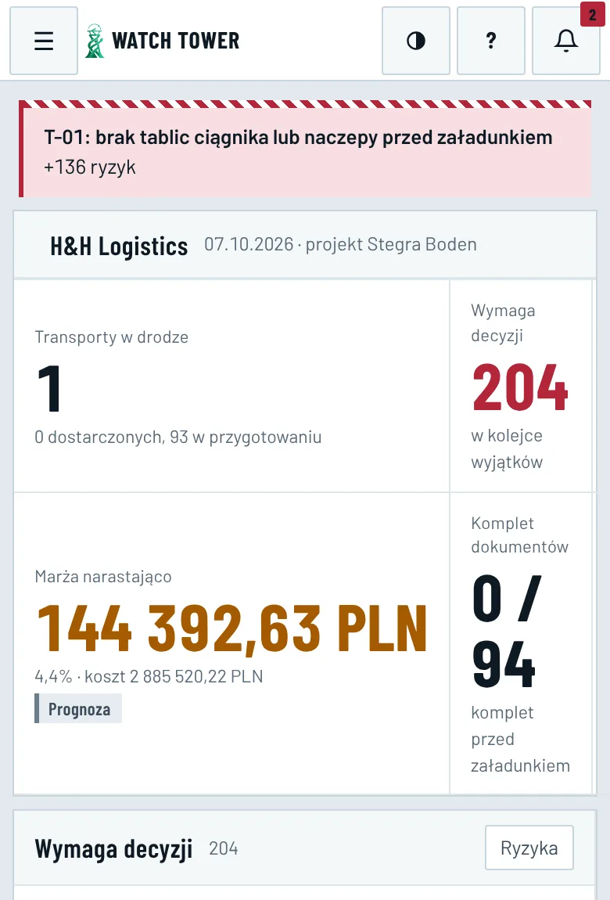
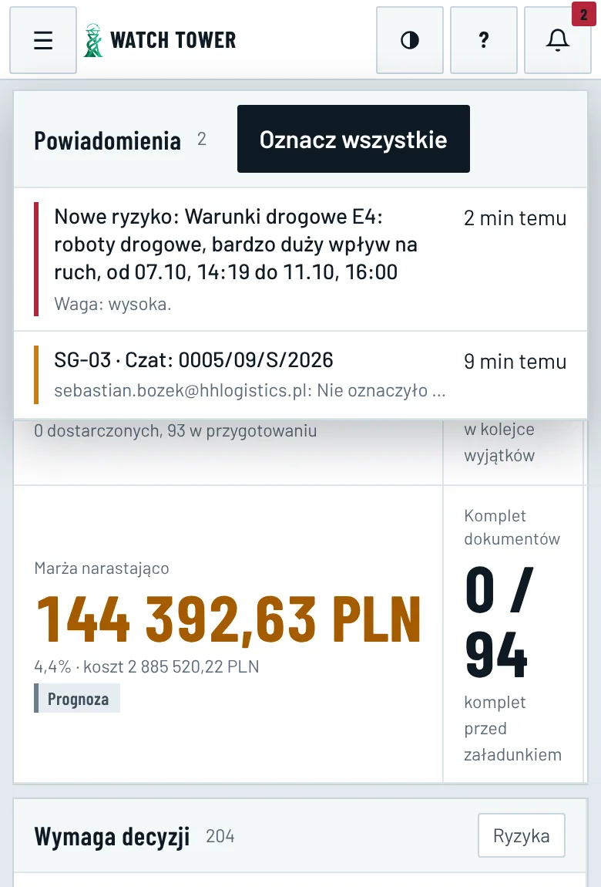
Na zrzucie „po zmianie” widać wpis „Nowe ryzyko: Warunki drogowe E4…” bez transportu. Po wdrożeniu E5 taki wpis nie trafi do dzwonka, tylko na stronę Ryzyka, zgodnie z Twoją decyzją z 13:21.
Rozwiązanie
- Telefon Lista otwiera się jako panel pod paskiem, na całą szerokość z marginesem 8 px, do dołu ekranu. Przewija się w środku. Dotknięcie obok albo „✕” zamyka panel.
- Pasek Pasek nadal nie wychodzi poza ekran w poziomie. Ucinanie w pionie znika.
- Test 360, 390 i 430 px: środek listy jest widoczny i klikalny. Sprawdzenie na prawdziwym iPhonie i Androidzie robisz Ty.
Zmiana rodzaju konta z listy nie działa
Lista w Opcje › Użytkownicy i sesje zapisuje rodzaj konta, który konto już ma, a nie ten, który wybierasz. Od 02.10 żadna zmiana z listy nie zadziałała, choć aplikacja pokazywała, że się udało.
- DowódWszystkie 17 wpisów zmiany rodzaju konta od 02.10 mają „było” = „jest”. Twoje dwie próby z 13:46: KSH Administrator → KSH Administrator.
audit_logUSER_ROLE_SET. - PrzyczynaAplikacja odczytuje wybraną pozycję dopiero po połączeniu z bazą. W tym czasie lista wraca już do starej wartości. Odtworzyłem to na tej samej wersji React (19.2.8): obecny kod wysyła starą wartość, poprawiony nową.
src/auth/UsersAdmin.tsxlinia 84.
Rozwiązanie
- Kod Odczytać wybór od razu w chwili zmiany, a dopiero potem zapisać go w bazie. Wygląd się nie zmienia, więc nie ma makiety.
- Po Twojej decyzji z 13:21 Lista proponuje tylko 5 rodzajów kont. Konto testowe KSH Administrator przestawiamy na KSH Użytkownik, a role KSH Administrator i „Plac budowy — podgląd” przestają być nadawane.
- Test Zmiana z listy → po odświeżeniu strony nowy rodzaj zostaje → w Historii zmian „było X → jest Y”.
Na Twoje polecenie z 14:19 w bazie nic teraz nie zmieniamy. Konto testowe KSH zostaje jako KSH Administrator do czasu wdrożenia poprawki.
Imię, nazwisko i telefon przy każdej sprawie
Przy żadnej decyzji nie widać, kto ma ją podjąć ani pod jaki numer zadzwonić. Baza ma miejsce na imię, nazwisko i telefon każdego konta, ale aplikacja nie pozwala ich wpisać ani nigdzie ich nie pokazuje.
Fakty · konta
- Brak zapisuTabela kont ma kolumny „imię i nazwisko” i „telefon”. Nie ma funkcji, która pozwala je zapisać, ani pola w aplikacji. 0 z 14 kont ma telefon, 7 ma imię i nazwisko.
app_users.full_name,app_users.phone; wsupabase/migrationsbrak funkcji zapisu tych pól. - NiewidoczneOpcje › Użytkownicy i sesje pobiera imię i nazwisko z bazy, ale wyświetla tylko e-mail i kod firmy. Telefonu w ogóle nie pobiera.
src/auth/UsersAdmin.tsxlinia 30 (pobierafull_name), linia 83 (pokazujeu.emaili kod). - ZaproszenieFormularz zaproszenia pyta tylko o e-mail, firmę i rodzaj konta. Tabela zaproszeń ma pole na imię i nazwisko: wypełnione w 4 z 11 zaproszeń, czyli spoza aplikacji.
UsersAdmin.tsxlinie 70–74;user_invites.full_name. - HistoriaW historii transportu autorem jest początek adresu e-mail albo kreska, np. „p.duks // Scandinavian Express” przy rozładunku SG-01 06.10, 21:05 (poprawka 08.10, 01:57: te zmiany zrobił Administrator HHL, który działał jako konto przewoźnika — „Działaj jako”, E37) i „— // HHL” przy zmianach automatycznych.
load_events.payload.actor.
Fakty · decyzje i telefon do kierowcy
- Nikt nie przypisanyŻadna z 55 decyzji nie ma przypisanej osoby. Otwartych jest 30: 18 „brak awizacji przed załadunkiem” (decyduje przewoźnik) i 12 jednakowych „SEFS: brak źródła indeksu” (decyduje HHL). Wszystkie 18 decyzji przewoźnika powstało 04–06.10. 10 z nich powstało już po terminie (najstarszy termin 28.09) i 3 minuty później przeszło wyżej do HHL. Pozostałe 8 przeszło do HHL w chwili terminu.
decisions.assignee_idpuste w 55 z 55;decision_types.decider_role;created_at,escalated_at. - Otwiera się poza ekranemCentrum decyzji pokazuje tylko tytuł, kod rodzaju i termin. Bez osoby, firmy i telefonu. Kliknięcie decyzji otwiera okno pod całą listą 30 decyzji, a strona sama nie przewija: na komputerze 1366 × 860 przyciski okna są 1 961 px od góry, na telefonie 2 075 px. Wygląda, jakby nic się nie stało (wcześniej napisałem „niczego nie otworzyło” — poprawka po sprawdzeniu kodu 07.10, 15:40). Dla Operacji HHL okno pokazuje „Tę decyzję rozstrzyga inna firma.” 10 z 18 tytułów zaczyna się od początku identyfikatora (np. „5c77d4d7”) zamiast numeru zlecenia. Playwright na Twoim koncie testowym, 07.10;
src/components/DecisionCentre.tsx. - NieaktualnaDecyzja „brak awizacji” dla SG-01 (15048/2026/OSL/GDA/P) jest nadal otwarta, choć transport oznaczono jako rozładowany 06.10, 21:05 kontem przewoźnika. (poprawka 08.10, 01:57: te zmiany zrobił Administrator HHL, który działał jako konto przewoźnika — „Działaj jako”, E37)
decisions.statusNEW;loads.statusUNLOADED;load_eventsSTATUS_UNLOADING. - Jeden numerPrzy przepięciu naczepy oba numery stoją w jednym linku „…313|…013”, a dotknięcie dzwoni zawsze pod pierwszy. Dziś dotyczy to 1 transportu: SG-03 (15062/2026/OSL/GDA/P, na placu w Boden), więc dzwoni się do kierowcy odcinka PL, choć ładunek jest w Szwecji. Przy jednym kierowcy obok numeru stoi „/ …”, jakby brakowało drugiego (SG-01, SG-02). Panel transportu na żywo 07.10;
LoadDrawer.tsxlinie 450 i 780:driverPhone || driverDeliveryPhone;ScheduleView.tsxlinia 934;src/lib/cSep.tsformatTowerPair. Baza: 94 transporty, 4 z telefonem kierowcy, 1 z przepięciem. - FormularzW awizacji pola drugiego kierowcy pokazują się także bez zaznaczenia „Przepięcie naczepy”, jeśli ktoś je kiedyś wypełnił. Nazwy pól („Kierowca dostarczający”) nie mówią, który odcinek.
AwizacjaModal.tsxlinia 213:trailerSwap || driverDeliveryName || driverDeliveryPhone || tractorDeliveryPlate. - Data zależy od przeglądarkiTermin decyzji jest formatowany ustawieniami przeglądarki, z sekundami. W mojej przeglądarce testowej (angielskiej): „9/28/2026, 12:00:00 PM”, w polskiej będzie „28.09.2026, 12:00:00”. Aplikacja powinna zawsze pokazywać „28.09, 12:00”.
DecisionCentre.tsxlinia 152:new Date(r.due_at).toLocaleString()bez języka.
Dziś
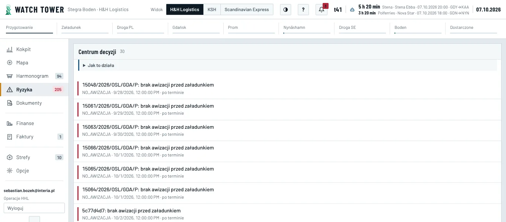
Po zmianie
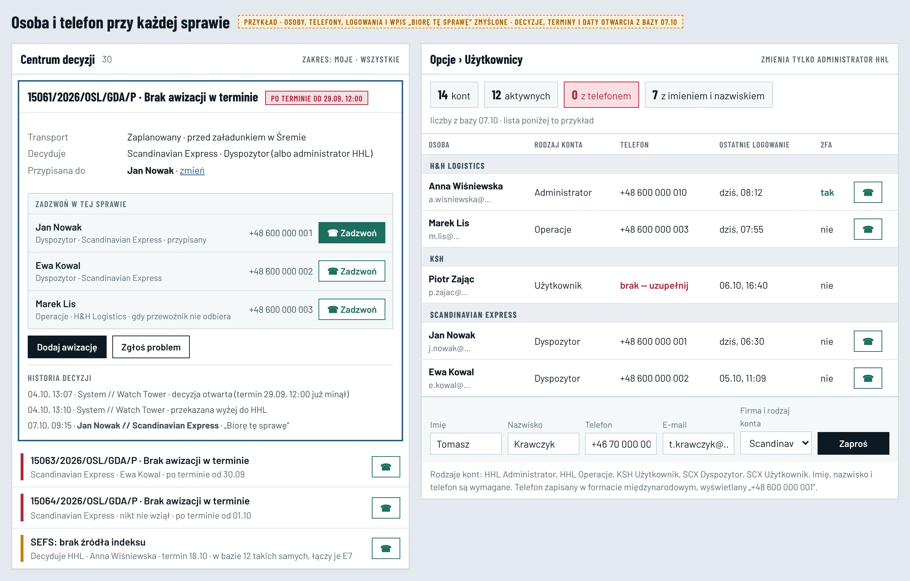
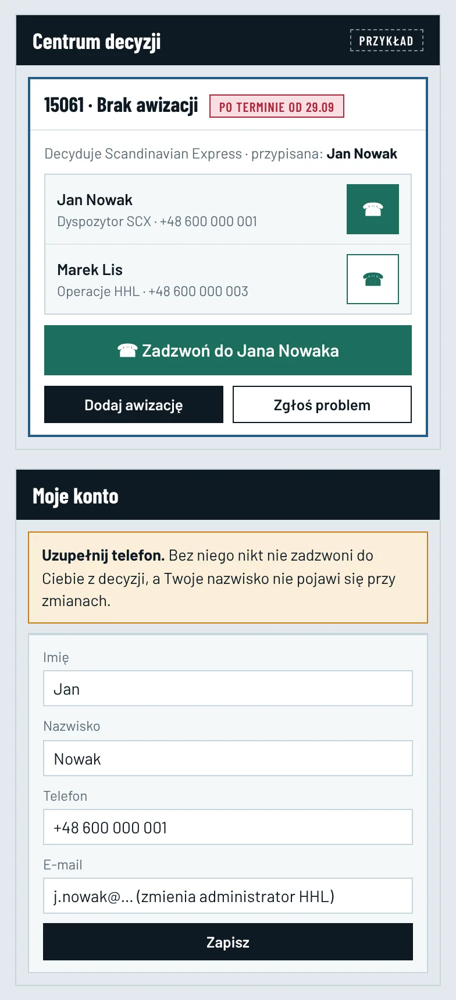
Kierowcy przy przepięciu naczepy
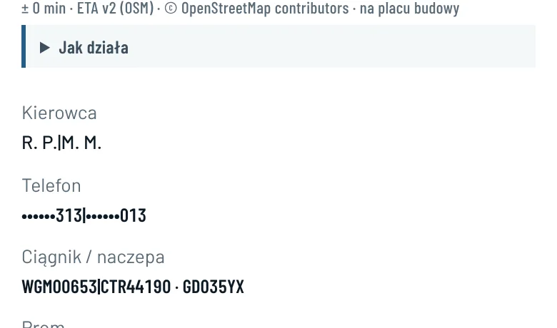
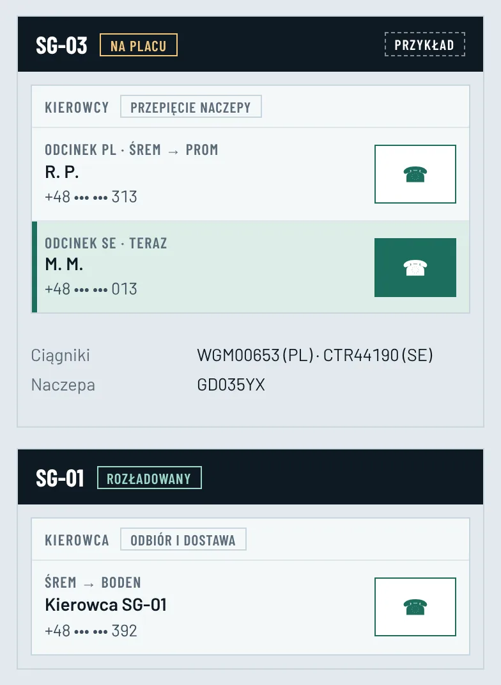
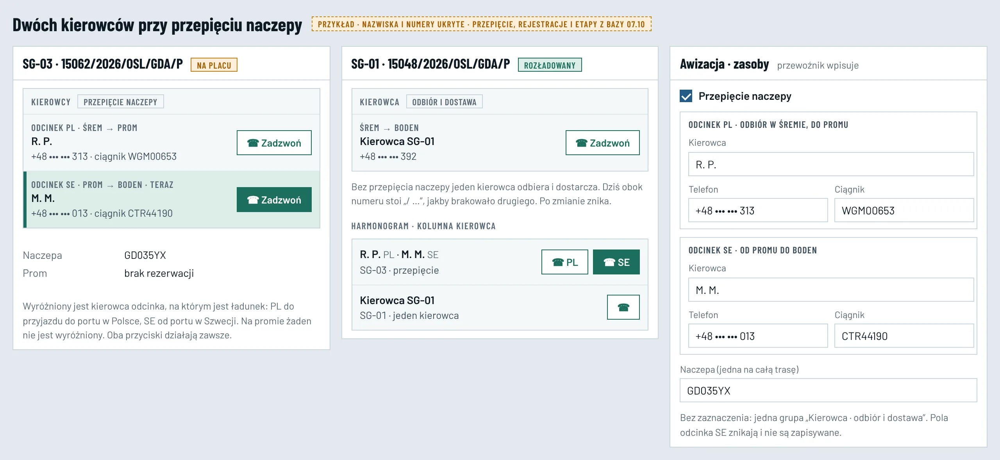
Propozycja
- Konto Imię, nazwisko i telefon są wymagane dla każdego konta, także w zaproszeniu. Telefon zapisany w formacie międzynarodowym (+48…, +46…), wyświetlany z odstępami.
- Kto zmienia Każdy zmienia swoje dane w „Moje konto”. Administrator HHL zmienia dane wszystkich. E-mail zmienia tylko administrator HHL.
- Brakujące dane Kto nie ma telefonu, po zalogowaniu widzi pasek „Uzupełnij telefon”. Lista użytkowników pokazuje brak na czerwono.
- Wszędzie nazwisko W historii, czacie, dokumentach i dzwonku: „Jan Nowak // Scandinavian Express” zamiast początku adresu e-mail. Zmiany automatyczne: „System // Watch Tower”.
- Karta decyzji Kliknięcie decyzji otwiera kartę: transport, kto decyduje (firma i rola), osoba przypisana, przyciski „Zadzwoń” do osób z firmy decydującej i do Operacji HHL, przyciski działania, historia z nazwiskami.
- Zakres Przełącznik „Moje · Wszystkie”. „Moje” to decyzje przypisane do mnie i nieprzypisane decyzje mojej roli.
- Kierowca Bez „Przepięcia naczepy”: jeden kierowca „odbiór i dostawa”, jeden przycisk, bez „/ …”. Z przepięciem: „Odcinek PL · Śrem → prom” (pierwszy numer) i „Odcinek SE · prom → Boden” (drugi numer), każdy z osobnym przyciskiem w panelu transportu i w Harmonogramie. Wyróżniony kierowca odcinka, na którym jest ładunek: PL do przyjazdu do portu w Polsce, SE od portu w Szwecji, na promie żaden.
- Awizacja Pola odcinka SE widać i zapisuje się je tylko przy zaznaczonym przepięciu. Nazwy pól mówią, który to odcinek. Naczepa jedna na całą trasę.
- Porządek Decyzja „brak awizacji” zamyka się sama, gdy transport ruszył z załadunku. Termin zawsze „28.09, 12:00”.
- Decyzję widzą wszyscy dyspozytorzy firmy, która decyduje. Jedna osoba bierze ją jednym kliknięciem „Biorę tę sprawę”.
- Pierwszy numer = kierowca odbierający ładunek, odcinek drogowy PL. Drugi numer = kierowca dostarczający do miejsca rozładunku, odcinek drogowy SE. Bez zaznaczonego „Przepięcia naczepy” ten sam kierowca odbiera i dostarcza.
Ryzyka: jedna lista „Do zrobienia”, osobno sytuacja na trasie
Strona Ryzyka ma dwie listy tych samych spraw: 30 decyzji i 202 ryzyka. Ta sama sprawa jest wpisana nawet 7 razy, a promy i drogi są na samym dole: na komputerze 13 455 px od góry, na telefonie 16 973 px, czyli około 20 ekranów przewijania.
Fakty · dwie listy i liczniki
- Dwie listyNa górze „Centrum decyzji 30”, pod nim „Wymaga decyzji 202 otwartych”. Menu pokazuje „Ryzyka 202”, czyli wszystkie otwarte wpisy, także te bez transportu. Dzwonek w tej samej chwili: 8. Na żywo 07.10, 15:3x, konto Operacje HHL;
RisksView.tsxlinie 150–182;Nav.tsxlinia 110:risks.length. - Ta sama sprawa kilka razy122 wpisy z transportem dotyczą 24 transportów. 20 transportów ma 4 lub więcej wpisów, najwięcej 7. SG-05: brak kierowcy, brak tablic, brak numeru SCX, brak numeru HHL, brak awizacji i 2 razy „Decyzja po terminie”. Brak awizacji jest jednocześnie decyzją w Centrum, ryzykiem i „Decyzją po terminie”.
risk_signalsotwarte,decisionsNEW. - Nie znikająBraki kierowcy i tablic przy SG-01 (rozładowany) i SG-03 (na placu, kierowcy i tablice wpisane) są nadal otwarte. 12 „Decyzja po terminie: brak wymaganego dokumentu” wskazuje decyzje, które wygasły 04.10. Blokada zmiany statusu SG-03 z 05.10 wisi, choć transport jest już na placu. 4 testowe SMS z 01.10 wiszą jako ryzyko. Ostrzeżenia promowe: 8 wpisów dla 5 statków, stare z 06.10 obok nowych z 07.10. 12 jednakowych decyzji „SEFS: brak źródła indeksu” z jednej minuty.
risk_signals,decisions(DOC_MISSING: 15 × EXPIRED),loads.status. - Bez transportu80 z 202 wpisów nie ma przypisanego transportu: 46 dróg SE, 26 promów, 3 zakazy ruchu PL, 5 systemowych. 9 zakazów ruchu w dniu przejazdu (3 PL, 6 SE) ma transport zapisany w środku wpisu, ale nie w polu transportu, więc nie pokazuje się przy transporcie. 18 wpisów promowych to informacja „statek w porcie”, nie ryzyko.
risk_signals.load_idpuste;detail.loadIdwypełnione w 9 wpisach. - Kategoria„Decyzja po terminie” jest zapisana jako błąd zadania (34 wpisy), razem z błędami SMS i przeglądarki.
risk_signals.kind= JOB_FAILURE,title_key= rk_decision_overdue. - A4 częściowoNowe drogi SE są po polsku z miejscem („od węzła Åryd (54) do węzła Bräkne Hoby (55), oba kierunki, region Blekinge”). 18 z 46 wpisów z 04–05.10 nadal po szwedzku, np. „zamknięcie drogi, från Trafikplats Gävle N (200) till Axmartavlan (202) båda riktningarna i Gävleborgs län”. Część nowych nie ma miejsca: „roboty drogowe, bardzo duży wpływ na ruch, od 07.10, 14:19 do 11.10, 16:00”.
risk_signalsROAD_SE. - B3Kody i identyfikatory: „NO_AWIZACJA”, „SG-16 · Decyzja po terminie: d900af86: brak awizacji”, „Transport 963e19dd-… bez numeru zlecenia przewoźnika”. Termin z sekundami: „28.09.2026, 12:00:00”.
- DziśŻaden transport nie jest w drodze: 91 zaplanowanych, 1 gotowy, 1 na placu, 1 rozładowany. Według Twojej zasady z 13:21 dziś żaden prom ani droga nie trafia do karty transportu ani do dzwonka.
loads.status.
Dziś
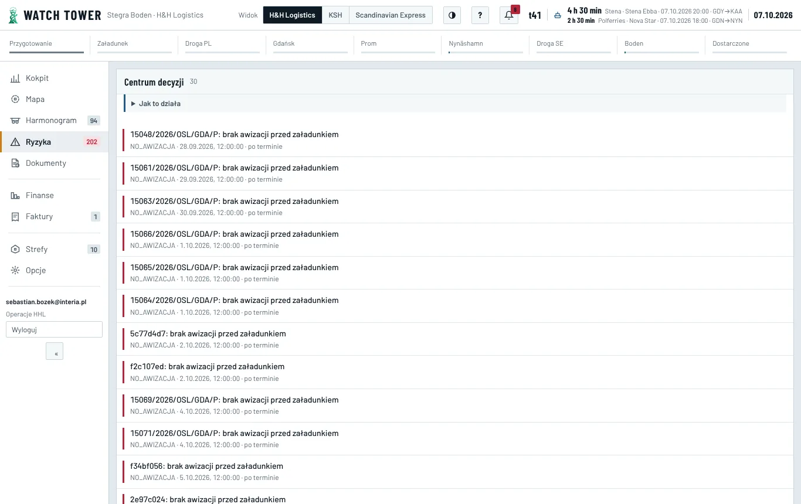
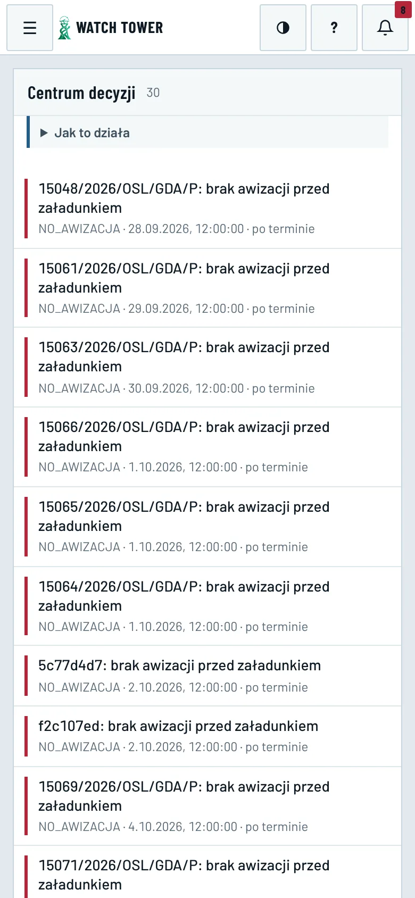
Po zmianie
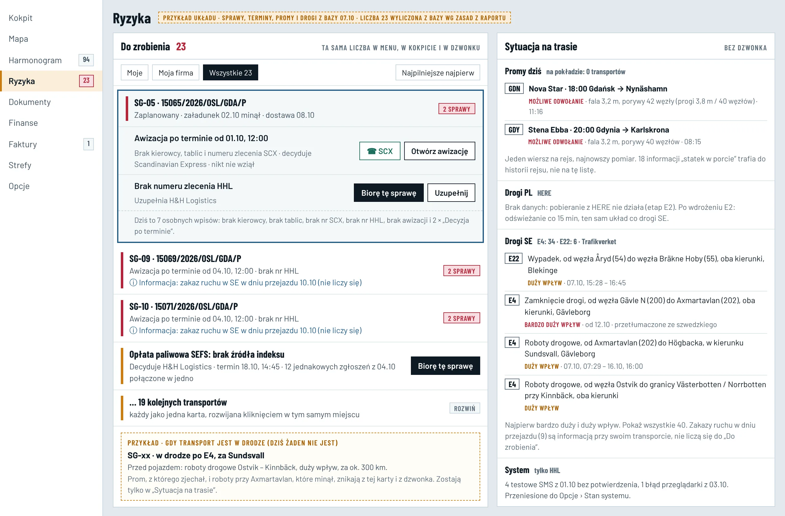
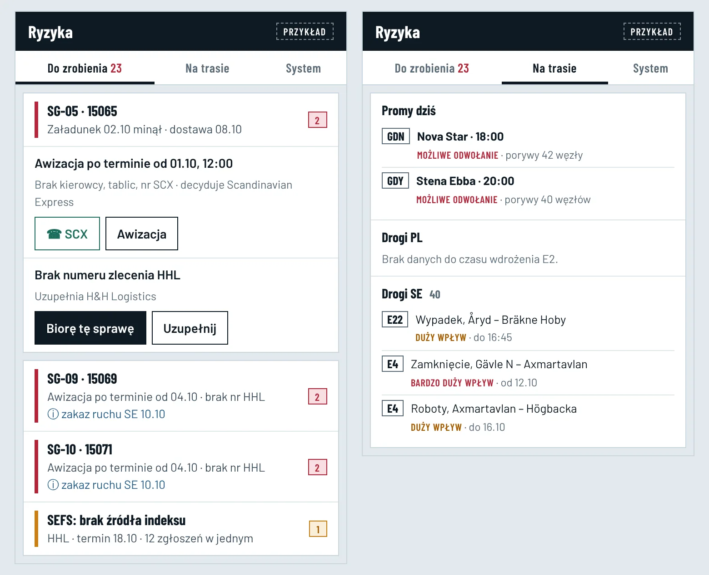
Propozycja
- Jedna lista „Do zrobienia”: jedna karta na transport, w środku sprawy z firmą, osobą (E6) i przyciskami. Decyzja i jej „po terminie” to jedna sprawa. Centrum decyzji i „Wymaga decyzji” łączą się w tę listę.
- Jedna liczba Liczba kart jest ta sama w menu, w Kokpicie i w dzwonku. Dziś byłoby to 23: 22 transporty i 1 sprawa HHL bez transportu (SEFS).
- Same się zamykają Brak znika, gdy pole jest wypełnione albo transport minął załadunek. Wygasła albo rozstrzygnięta decyzja zamyka swoje wpisy. Blokada statusu znika, gdy status poszedł dalej. Jednakowe zgłoszenia łączą się w jedno (12 SEFS → 1).
- Sytuacja na trasie Osobna kolumna, na telefonie osobna zakładka, bez dzwonka. Promy: jeden wiersz na rejs, najnowszy pomiar, ile transportów na pokładzie. Drogi PL z HERE (E2) i drogi SE: najpierw bardzo duży i duży wpływ, zawsze po polsku i z miejscem. „Statek w porcie” idzie do historii rejsu.
- 13:21 Przy transporcie tylko prom i drogi przed pojazdem. Minięte znikają z karty i z dzwonka, zostają w „Sytuacja na trasie”.
- Zakazy ruchu 9 zakazów w dniu przejazdu przypisane do swoich transportów jako informacja przy transporcie. Nie liczą się do „Do zrobienia” (Twoja decyzja 15:55).
- System SMS bez potwierdzenia i błędy przeglądarki idą do Opcje › Stan systemu, tylko dla HHL.
- Teksty Numer SG i numer zlecenia, nigdy identyfikator. Bez kodów rodzaju. Termin „01.10, 12:00”. Stare wpisy po szwedzku tłumaczone jeszcze raz.
- Kliknięcie Karta rozwija się w miejscu kliknięcia, na komputerze i na telefonie.
- Zakaz ruchu w dniu przejazdu (np. przejazd w PL w niedzielę 25.10) to tylko informacja przy transporcie, nie liczy się do „Do zrobienia”. Po tej zmianie liczba spadła z 30 do 23.
Telefon: nic uciętego, karty zamiast tabel, przyciski 44 px
Strona nigdzie nie wychodzi poza ekran, ale część treści jest po cichu ucięta. Na telefonie nie widać kolumny Marża w Finansach ani przycisku „Pobierz paczkę tygodnia” w Dokumentach i nie da się do nich dojść. W Harmonogramie pierwsza karta transportu zaczyna się na samym dole pierwszego ekranu.
Fakty · telefon 390 × 844, 9 widoków, 07.10
- Bez wyjeżdżaniaŻaden z 9 widoków nie jest szerszy niż ekran (szerokość strony 390 px). Playwright, emulacja telefonu z dotykiem, konto Operacje HHL.
- UcięteGłówny obszar strony ma ustawione ucinanie wszystkiego, co jest szersze od ekranu. Finanse › „Marża według typu elementu”: tabela ma 736 px, widać Typ, Szt., Przychód i początek Kosztu, a kolumn Marża i ostatniej nie da się przewinąć. Dokumenty: przycisk „Pobierz paczkę tygodnia” leży na 424–491 px, poza ekranem, a pole tygodnia „2026-W41” jest ucięte na krawędzi.
src/index.csslinie 116 i 451:main{overflow-x:hidden}; tabela Finansów nie jest w przewijanym pojemniku. - Tabele bokiem6 widoków ma tabele szersze od ekranu, przewijane w bok w okienku 364 px: lista na Mapie 822 px (7 kolumn, 95 wierszy), Dokumenty 787 px, Strefy 664 px, Faktury 500 i 745 px (10 kolumn), Opcje 756 px (10 kolumn). Tekst urywa się na krawędzi, np. „24 h przed załadunkie”, bez znaku, że można przewinąć.
.tablewrap{overflow-x:auto},index.csslinia 925. - Małe cele dotykuNa telefonie 44 px dostają tylko główne przyciski, pola i menu. Przyciski‑etykiety mają 28 px wysokości, pola wyboru 13 × 13 px. Poniżej 44 px: Opcje 151 z 351 elementów, Harmonogram 21 ze 135, Mapa 14 z 30, Kokpit 3.
index.csslinie 896–931 (44 px dla.btn, pól, menu, zakładek);.chipbtnlinia 199:padding:4px 9px. Uwaga: w tabeli „Stan trzech audytów” liczby „Opcje 142, Harmonogram 24” liczyły elementy poniżej 32 px, nie 44 px. - Drobny tekstElementy tekstu poniżej 12 px: Harmonogram 106, Mapa 100, Finanse 98, Ryzyka 52, Kokpit 18.
- HarmonogramPrzed pierwszą kartą jest 25 elementów: 2 zakładki, 5 przycisków narzędzi, wyszukiwarka, 4 pola dat i 13 filtrów. Pierwsza karta zaczyna się na 687 px z 844. 94 karty to 12,4 ekranu przewijania.
- Kokpit„0 / 94” łamie się na dwie linie. Nad kafelkami pasek „T-01: brak numeru zlecenia przewoźnika +136 ryzyk”. Kafelek „Wymaga decyzji 201”.
- KomputerE8 nie zmienia widoku na komputerze: tam tabele zostają tabelami.
Dziś
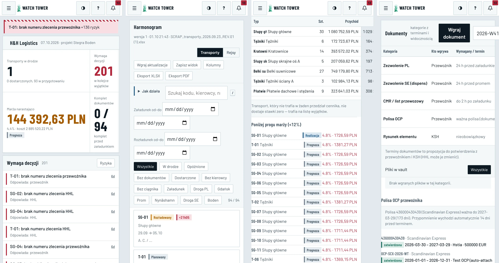
Po zmianie
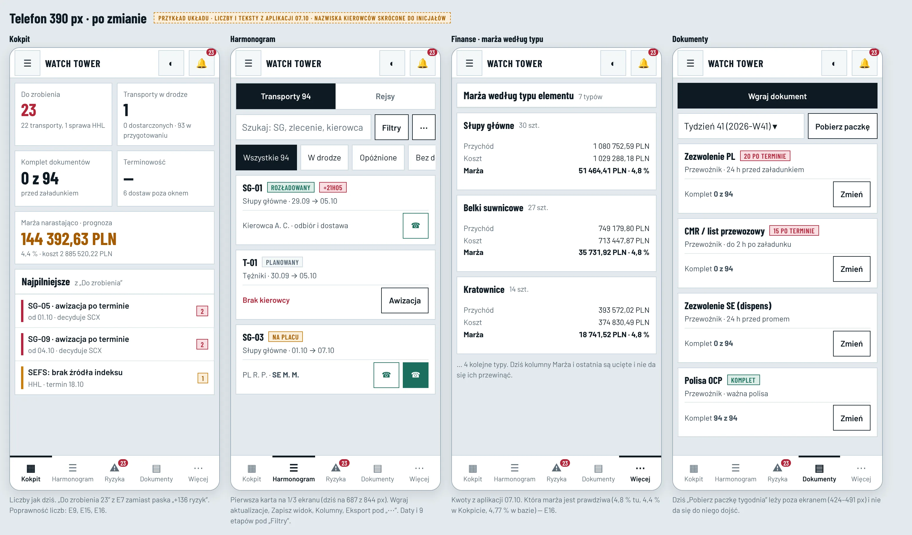
Propozycja
- Nic uciętego Na telefonie żaden element nie leży poza ekranem, chyba że w pasku przewijanym w bok. Nagłówki paneli zawijają się do nowej linii. Bramka wizualna liczy elementy poza 390 px i musi mieć 0.
- Karty Na telefonie tabele stają się kartami: Finanse, Dokumenty, Strefy, Faktury, lista na Mapie, tabele w Opcjach. Harmonogram już ma karty.
- 44 px Każdy przycisk, filtr i pole wyboru ma co najmniej 44 × 44 px. Przy polu wyboru klikalny jest cały wiersz.
- 12 px Na telefonie żaden tekst poniżej 12 px.
- Harmonogram U góry: zakładki, wyszukiwarka, „Filtry” i „⋯”. Daty i 9 etapów pod „Filtry”, narzędzia (Wgraj aktualizacje, Zapisz widok, Kolumny, Eksport) pod „⋯”. Filtry stanu w jednym pasku przewijanym w bok. Pierwsza karta w górnej 1/3 ekranu. Na karcie kierowca z przyciskiem „Zadzwoń” (E6).
- Kokpit Kafelki 2 × 2, liczba nigdy się nie łamie („0 z 94”). Zamiast paska „+136 ryzyk” kafelek „Do zrobienia 23” (E7) i 3 najpilniejsze sprawy. Treść kafelków ustala E9.
- Test 360, 390 i 430 px w każdym widoku: 0 elementów poza ekranem, 0 celów dotyku poniżej 44 px, 0 tekstu poniżej 12 px. Ty sprawdzasz na swoim iPhonie i Androidzie.
- Dolny pasek na telefonie: 5 przycisków zawsze pod kciukiem (Kokpit, Harmonogram, Ryzyka z liczbą, Dokumenty, Więcej) zamiast menu ☰. Reszta menu pod „Więcej”.
Mapa bez podkładu: to był adres zapasowy tower-hhl.pages.dev
Na tower.log-mar.pl mapa działa (Twoje potwierdzenie 16:48). Szara mapa była na adresie zapasowym tower-hhl.pages.dev i tam podkład nie wczyta się nigdy, u nikogo. Sprawdziłem to po Twojej odpowiedzi: ten adres działa i pokazuje tę samą aplikację, ale bez dostępu do kafelków mapy. Trasa i pojazdy są, bo przychodzą z bazy, a nie z HERE.
Fakty · tower-hhl.pages.dev, 07.10 16:5x
- Adres działaOdpowiada 200, logowanie i dane z produkcji. To hosting zapasowy z rejestru decyzji (27.09: „Domena tower.log-mar.pl, zapas tower-hhl.pages.dev”).
curl→ 200, serwer cloudflare;docs/handover/wzorzec/03_REJESTR_DECYZJI.mdl. 18;04_KONEKTORY.md: Cloudflare Pages, hosting zapasowy. - Ten sam kodKod aplikacji jest ten sam co na tower.log-mar.pl. Różnią się tylko nazwy plików i jedno ustawienie: w wersji zapasowej nie ma klucza HERE dla przeglądarki. Porównanie głównego pliku:
index-c3jjoZ0f.js(zapas) iindex-CN40vLYn.js(produkcja), 626 533 i 626 576 B; różnice tylko w nazwach plików; w zapasie stała klucza HERE pusta, w produkcji ustawiona. - Droga 2 zamkniętaBez klucza aplikacja bierze kafelki przez serwer aplikacji (
/tiles). Na adresie zapasowym takiej ścieżki nie ma: odpowiedź 404.tower-hhl.pages.dev/tiles/logistics.day/6/34/18.png→ 404 text/html; na tower.log-mar.pl → 200 image/png. - Droga 3 zamkniętaPo 404 aplikacja idzie wprost do funkcji kafelków w Supabase. Ta funkcja wpuszcza tylko tower.log-mar.pl i watch-tower-makieta.vercel.app, więc adresowi zapasowemu odmawia. Funkcja
here-raster,tilePolicy.tsl. 21ALLOWED_HOSTS; zapytanie z adresem zapasowym → 403{"error":"domena"}(odmowa przed pobraniem z HERE, bez kosztu); z tower.log-mar.pl → 200 image/png. - Wcześniej wykluczoneBudżet HERE (5 936 kafelków z 30 000, 0 USD, podkład otwarty) i obie domeny produkcji: na nich podkład wczytuje się za każdym razem.
- Osobno, 06.10Na Twoim koncie 06.10, 17:22 był też inny błąd mapy: karta otwarta przed wdrożeniem nie mogła pobrać pliku podkładu i mapa zostawała szara do odświeżenia. Dzisiejszego zgłoszenia nie wyjaśnia, ale może się powtórzyć po każdym wdrożeniu (E22).
client_errors06.10 17:22 „Failed to fetch dynamically imported module … applyBasemap”;mapPool.tsl. 158–186. - Przy okazjiPasek „Brak dostępu · OK” na Twoim zrzucie to link do decyzji, która wygasła 06.10 (8b9fcd6f, „Brak pozycji pojazdu WGM00653”). To nie jest brak dostępu. Idzie do E37.
Twój zrzut i ta sama mapa na tower.log-mar.pl
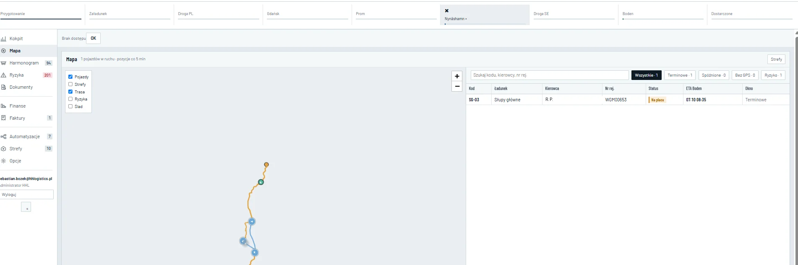
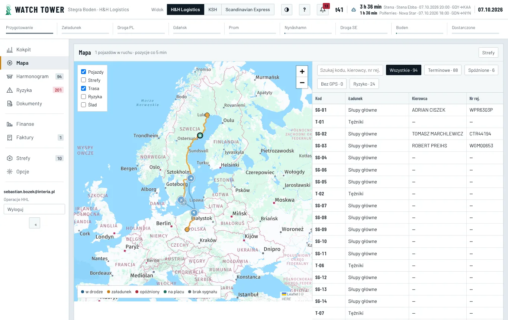
Propozycja
- Przekierowanie Każdy adres na tower-hhl.pages.dev przekierowuje na stałe (301) na tower.log-mar.pl z tą samą ścieżką, więc link do transportu albo decyzji otwiera się od razu na właściwym adresie. Przekierowanie działa tylko na Cloudflare Pages, Vercel go nie dostaje.
- Rejestr decyzji Wpis z 27.09 „zapas tower-hhl.pages.dev” zmienia się na „tower-hhl.pages.dev przekierowuje na tower.log-mar.pl (07.10)”. Hostingu zapasowego nie ma: gdy Vercel nie odpowiada, aplikacja jest niedostępna do jego powrotu. Przełączenie hostingu (
PRZELACZENIE_HOSTINGU.md) zaczyna się wtedy od zdjęcia przekierowania. - Sprawdzenie po wdrożeniu Procedura wdrożenia sprawdza dziś oba adresy (kod 200). Po zmianie: tower.log-mar.pl → 200, tower-hhl.pages.dev → 301 na tower.log-mar.pl, plus jeden kafelek mapy na produkcji. Adres zapasowy znika z listy adresów logowania Supabase.
08_SKILLE/tower-wdrozenie/SKILL.mdkrok 5;PRZELACZENIE_HOSTINGU.mdkrok 5 (Redirect URLs). - Bez szarej mapy Gdy podkład mimo to się nie wczyta, zamiast szarego tła komunikat z przyciskiem „Spróbuj ponownie” (makieta niżej). Obejmuje też błąd z 06.10 (E22).
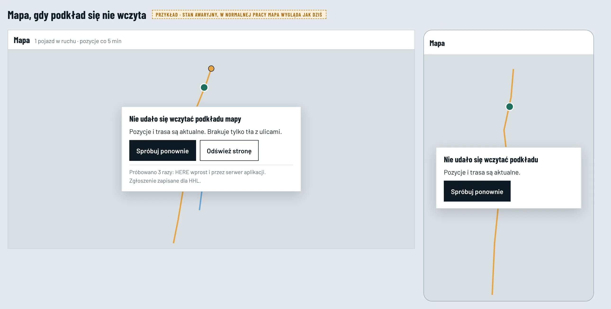
- „Już wszystko działa, pomyliłem adresy. Na tower.log-mar.pl wszystko działa z mapą.” Adres z problemem: tower-hhl.pages.dev.
- Adres zapasowy zawsze przekierowuje na tower.log-mar.pl.
SG-03: wyjazd z placu nie zmienia statusu
Automat działa, ale nie ma w nim reguły na wyjazd z placu budowy. Wjazd 08:35 zmienił status na „Na placu”. Wyjazd 12:19, po 3 h 44 min, został zapisany, ale żadna reguła go nie obsługuje, więc SG-03 nadal jest „Na placu”, choć naczepa odjechała już ponad 50 km od Boden.
Fakty · SG-03 (15062/2026/OSL/GDA/P), pozycje naczepy GD035YX z emtrack
- 07.10, 08:35Wjazd w strefę „Plac budowy Stegra Boden” → status automatycznie „Droga SE” → „Na placu” („wjazd na plac budowy”).
- 07.10, 08:49Postój w strefie ponad 10 min (próg strefy 600 s). Bez zmiany statusu.
- 07.10, 12:19Wyjazd ze strefy placu. Bez zmiany statusu.
- 07.10, 13:34Wyjazd ze strefy „Bufor 50 km przed Boden”. Bez zmiany statusu. Naczepa jedzie dalej, a w aplikacji stoi „Na placu”.
load_eventsGEOFENCE_ENTER / DWELL / EXIT, STATUS_AUTO;geofences: plac 3,14 km², postój 600 s, histereza 300 m. - PrzyczynaFunkcja, która zmienia status po wjeździe i wyjeździe ze stref, przy wyjeździe obsługuje tylko strefę załadunku i port w Szwecji. Dla placu budowy obsługuje tylko wjazd. Baza: funkcja wyzwalacza
apply_geofence_status(), gałąźGEOFENCE_EXIT: tylkoLOADINGiPORT_IN. - W HistoriiTe zdarzenia wyglądają dziś tak: „GEOFENCE_EXIT · System // Watch Tower — 07.10.2026, 12:19”. Bez nazwy strefy i bez czasu na placu (E17).
- Przy okazji (E28)Status „Na placu” jest liczony w kafelku „Nynäshamn” paska etapów, a „W porcie Nynäshamn” w kafelku „Droga SE”. Stąd SG-03 w kafelku Nynäshamn na Twoim zrzucie.
src/data/mappers.ts: AT_SITE → APPROACHING_SITE, AT_PORT_NYNASHAMN → IN_TRANSIT_SE;src/lib/status.ts: APPROACHING_SITE → etap APPROACH = „Nynäshamn”.
Reguły automatyczne dziś
| Strefa | Wjazd | Wyjazd |
|---|---|---|
| Załadunek KSH Śrem | Gotowy → Załadunek; gdy transport niegotowy: ryzyko | Załadunek → Droga PL, gdy załadunek potwierdzony; inaczej ryzyko |
| Port PL (Gdańsk, Gdynia) | → Port Gdańsk | nic (celowo, statek odpływa) |
| Port SE (Nynäshamn, Karlskrona) | Prom → Port Nynäshamn | Port Nynäshamn → Droga SE |
| Plac budowy Boden | → Na placu | brak reguły |
| Bufory i punkty w SE | awaryjnie Prom / Port → Droga SE | nic |
Statusy portów nazywają się „Gdańsk” i „Nynäshamn” także dla trasy Gdynia–Karlskrona. Nazwy i pełną listę porządkuje E25.
Dziś i po zmianie
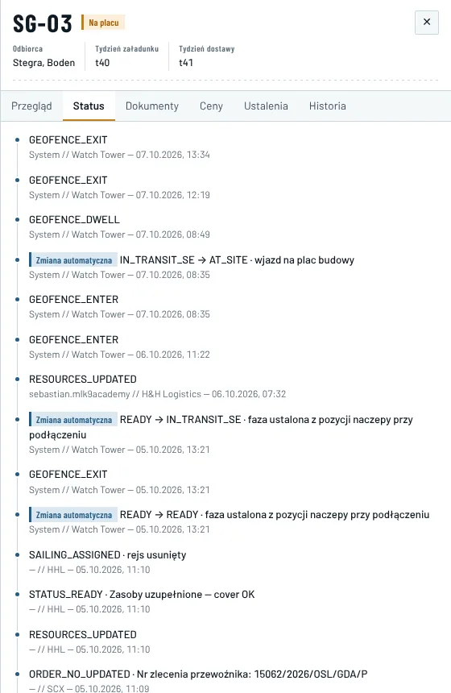
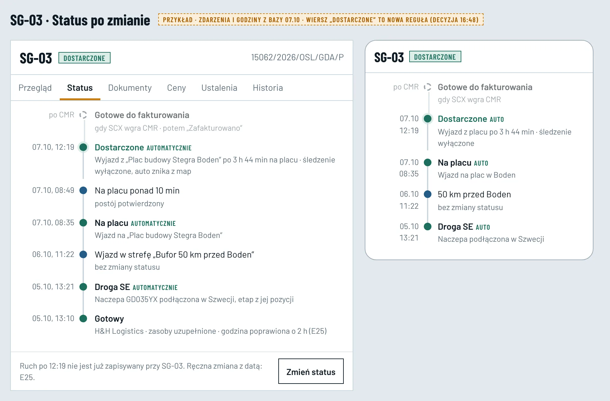
Propozycja (po Twojej decyzji 16:48)
- Nowa reguła Wyjazd z placu po co najmniej 10 min postoju → automatycznie „Dostarczone” z godziną wyjazdu. Nazwa i miejsce tego statusu na liście ustala E25. W Historii: „Wyjazd z placu po 3 h 44 min”.
- Koniec śledzenia W tej samej chwili śledzenie się wyłącza: auto znika z map, a jego dalszy ruch nie jest zapisywany przy transporcie (E27).
- Dalej bez automatu z pozycji „Gotowe do fakturowania”, gdy SCX wgra CMR; „Zafakturowano” po zafakturowaniu (E25, Finanse i Faktury).
- Krótki pobyt Wyjazd przed upływem 10 min → status bez zmian i sprawa dla przewoźnika „Wyjazd z placu po X min — czy dostarczono?” z przyciskami „Tak, dostarczono” i „Nie”.
- Każda reguła widoczna Lista reguł (strefa, wjazd, wyjazd) w Opcjach, po polsku, z ostatnim użyciem. Zmienia ją tylko administrator HHL (E34, E35).
- SG-03 teraz W bazie nic nie zmieniam. Do wdrożenia status SG-03 można ustawić ręcznie w zakładce Ustalenia („Oznacz rozładowany”, HHL i SCX). Ręczne nadawanie każdego statusu z datą przebudowuje E25.
- Test Przejazd SG-03 z zapisanych pozycji puszczony jeszcze raz w bazie TEST: po 12:19 status „Dostarczone”, brak nowych pozycji przy transporcie.
- Po wyjeździe z placu status zmienia się automatycznie na „Dostarczone” albo na inny status ustalony w spisie statusów.
- „Dostarczone” to ostatni status śledzenia. Śledzenie wyłącza się od razu, bez czekania na dokumenty.
- Wgranie CMR przez SCX → „Gotowe do fakturowania”, transport idzie do zafakturowania. Po zafakturowaniu → „Zafakturowano”.
- Do uzgodnienia całość: jakie są statusy, kiedy przełączają się same, co powodują i co zmieniają w reszcie aplikacji, a potem przebudowa aplikacji pod to → etap E25, następny w kolejce.
Statusy: jeden spis, automaty, skutki w całej aplikacji, ręcznie z datą
Dziś statusy mają cztery różne słowniki, a żaden transport nigdy nie dochodzi do „Dostarczone”. Każda ręczna zmiana zapisuje się z godziną o 2 h wcześniejszą, a automat z pozycji może dać „Na promie”, zanim auto dojedzie do portu. Proponuję jeden spis: 14 statusów w trzech grupach plus „Anulowany” poza ciągiem. Każdy automat ma jedno zdarzenie, a mapa, pasek, Kokpit, Finanse i Faktury liczą z tych samych grup.
Fakty
- 4 słownikiBaza ma 14 kodów, aplikacja 14 innych (z „Opóźniony” i „Cichy”), pasek etapów 9 kafelków, powiadomienia własne nazwy. „Na placu” liczy się w kafelku „Nynäshamn”, a „Port Nynäshamn” w kafelku „Droga SE”.
0001_core.sqll. 35–40;mappers.tsl. 24–39;status.tsl. 4–19 i 105–115;notifyTemplates.tsl. 63–69;docs/handover/LOGIKA_SYSTEMU.mdl. 182–206 opisuje te cztery słowniki. - „Dostarczone” nigdyŻaden automat ani przycisk nie ustawia „Dostarczone”. W bazie 0 takich transportów. Dlatego Finanse pokazują 0 zrealizowanych, filtr „Dostarczone” w Harmonogramie jest pusty, a Kokpit pokazuje „0 dostarczonych” i Terminowość „—”. W innym miejscu Finanse liczą „Marża zrealizowana” z daty rozładunku, więc są dwie definicje „zrealizowanego”. Kod: brak zapisu
DELIVEREDwsupabase/isrc/(tylko porównania);FinanceView.tsxl. 29 liczy tylkostatus === 'DELIVERED';fx_snapshot_load(0155) ustawia poziom REALIZACJA zactual_delivery_at. Baza 07.10: 91 Zaplanowany, 1 Gotowy, 1 Na placu, 1 Rozładowany. - Godziny −2 hKażda zmiana zrobiona w aplikacji zapisuje się z godziną o 2 h wcześniejszą niż kliknięcie. Dotyczy to 71 ze 177 zdarzeń z 01–06.10: „gotowy”, „wyjazd”, „rozładowany”, awizacji, numerów zleceń i rejsów. SG-01 kliknięto jako rozładowany 06.10 o 23:05, a zapisano 21:05. Od tej daty liczą się kurs NBP, opłata paliwowa i tydzień faktury. Przesunięcie jest zawsze 2 h, także po zmianie czasu 25.10.
useTowerStore.tsl. 95–97:new Date().toISOString().replace('Z', '+02:00');load_events: czas zdarzenia o 120 min wcześniejszy niż czas zapisu (71 wpisów); SG-01actual_delivery_at06.10 21:05:02, zapis 23:05:05. Zdarzenia z automatów mają godziny zgodne (106 wpisów). - Ręcznie dziśSą tylko 3 przyciski: „Oznacz jako gotowy”, „Wyjazd” i „Oznacz rozładowany”. Siedzą w zakładce Ustalenia, nie w Status, i nie pozwalają wybrać daty. Innych statusów nie da się ustawić ręcznie. Przyciski widzi HHL (obie role) i SCX. „Ręczne statusy w Status” to punkt AUD-08 w planie i punkt 8 polecenia z 06.10, oba „do zrobienia”.
LoadDrawer.tsxl. 933–990;permissions.tsl. 69–71;docs/handover/PLAN.mdl. 74 (AUD-08);STATUSY_AUTOMATYCZNE.md: „rozładowany razem z datą rozładunku”. - Wyjazd ze ŚremuPo wyjeździe ze strefy załadunku status zmienia się na „Droga PL” tylko z potwierdzeniem załadunku. To potwierdzenie wysyłała aplikacja kierowcy, którą wyłączyliśmy, a w aplikacji nie ma na nie przycisku. Dziś po wyjeździe ze Śremu status zostaje „Załadunek” i pojawia się ryzyko wysokie. Funkcja
apply_geofence_status(0049): wyjazd z LOADING wymagaloaded_confirmed(0004 l. 97–101); zdarzenieMILESTONE_LOADEDwysyła tylkodriverApi.ts. - „Na promie” za wcześniePrzy każdej pozycji naczepy działa automat „faza z pozycji”. Gdy naczepa jest między 54,2° a 55° szerokości i 17° a 20,5° długości, ustawia „Na promie”. Ten prostokąt zaczyna się na wysokości Pruszcza Gdańskiego, ok. 15–20 km przed terminalem (54,39° N). Transport jadący normalnie ze Śremu dostałby „Na promie” jeszcze na drodze. Potem automat portu i automat odejścia rejsu by go pominęły, bo działają tylko z innych statusów. Jeszcze się to nie zdarzyło, bo żaden transport nie jechał z GPS przez Polskę. Wniosek z kodu i współrzędnych.
telm_infer_phase_from_position(0188 l. 46–55; ta sama treść na produkcji); wywołanie przy każdej pozycji:jobs.tsl. 1247–1250; wjazd do portu tylko z Gotowy / Załadunek / Droga PL;promote_ferry_departurestylko z Port Gdańsk (0160). - Wyjazd z placuBrak reguły (E26).
- PowiadomieniaKażda zmiana statusu wysyła powiadomienie w aplikacji do HHL, SCX i KSH. Wyzwalacz
trg_loads_status_matrix_notify(0126, 0148);notification_matrixLOAD_STATUS na produkcji: w aplikacji dla HHL, SCX i KSH, e-mail wyłączony. - AnulowaneAnulowanych transportów nie widać nigdzie w aplikacji, także u HHL.
supabaseProvider.tsl. 69:.neq('status', 'CANCELLED'). - FakturyKreator faktury bierze transporty z datą rozładunku w danym tygodniu, bez warunku statusu i bez CMR.
invoices3.tsl. 108–115.
Proponowany spis statusów
| # | Status | Zmienia się sam, gdy | Kafelek paska (E28) |
|---|---|---|---|
| Przygotowanie · bez śledzenia (w dniu załadunku od 03:00 — E27) | |||
| 1 | Zaplanowany | transport przyszedł z harmonogramu KSH | Przygotowanie |
| 2 | Brak zasobów | SCX przypisany, w awizacji brakuje kierowcy, ciągnika albo naczepy | |
| 3 | Brak dokumentów | awizacja pełna, brakuje zezwolenia PL lub SE albo polisy | |
| 4 | Gotowy | awizacja, numery zleceń HHL i SCX, zezwolenia i polisa są komplet | |
| W trasie · śledzenie włączone, auto na mapach | |||
| 5 | Załadunek | wjazd w strefę KSH Śrem | Załadunek |
| 6 | Droga PL | wyjazd ze strefy Śrem po co najmniej 5 min postoju; godzina wyjazdu = data załadunku | Droga PL |
| 7 | Port PL | wjazd w strefę portu Gdańsk albo Gdynia (nazwa portu przy statusie) | Port PL |
| 8 | Na promie | odejście przypisanego rejsu, gdy auto jest w strefie portu (działa dziś) | Prom |
| 9 | Port SE | wjazd w strefę portu Nynäshamn albo Karlskrona | Port SE |
| 10 | Droga SE | wyjazd ze strefy portu SE | Droga SE |
| 11 | Na placu | wjazd na plac budowy w Boden | Plac Boden |
| 12 | Dostarczone | wyjazd z placu po co najmniej 10 min postoju; data dostawy = data realizacji usługi; śledzenie wyłączone | Dostarczone |
| Rozliczenie · bez śledzenia | |||
| 13 | Gotowe do fakturowania | SCX wgra CMR z podpisem odbiorcy po „Dostarczone” (CMR z załadunku statusu nie zmienia) | Rozliczenie |
| 14 | Zafakturowano | transport jest na obu fakturach: SCX → HHL i HHL → KSH; w panelu widać, której brakuje | |
| — | Anulowany | nigdy sam; tylko HHL, z powodem. Widoczny w Harmonogramie pod filtrem „Anulowane”, poza mapą i poza liczbami | — |
- Zasady automatuAutomat zmienia status tylko do przodu i nigdy po „Dostarczone”. Statusy można przeskoczyć: gdy GPS zaczyna działać w trakcie trasy, oś pokazuje „pominięte”. „Faza z pozycji” działa raz, przy pierwszej pozycji, i daje tylko „Droga PL” albo „Droga SE”, nigdy „Na promie”. „Na promie” ustawia wyłącznie odejście rejsu.
- Bez kodów zastępczych„Opóźniony”, „Brak GPS” i „Brak dokumentów” to oznaczenia obok statusu, a nie statusy. Nie zasłaniają, gdzie jest auto.
- Rozładowany„Rozładowany” łączy się z „Dostarczone”. Dziś dotyczy to tylko SG-01: przechodzi na „Dostarczone”, a datę dostawy potwierdza HHL w nowym oknie (dziś zapisana 21:05, kliknięcie było o 23:05).
Co każda grupa powoduje w aplikacji
| Miejsce | Przygotowanie (1–4) | W trasie (5–11) | Dostarczone (12) | Rozliczenie (13–14) |
|---|---|---|---|---|
| Mapa i pozycje | auto niewidoczne; w dniu załadunku od 03:00 widoczne (E27) | widoczne, pozycje zapisywane przy transporcie | auto znika z map, ruch nie jest zapisywany | |
| Pasek etapów | Przygotowanie | jeden kafelek na status, z liczbą | Dostarczone | Rozliczenie |
| Kokpit, Harmonogram, liczby | „w przygotowaniu” | „w trasie”, tak samo w każdym miejscu | „dostarczone”, wchodzi do terminowości | „do fakturowania” / „zafakturowane” |
| Ryzyka, Do zrobienia | awizacja, numery, zezwolenia, daty KSH | ETA, brak GPS, prom, drogi; sprawy przygotowania zamykają się same | sprawy trasy zamykają się same; zostaje „Wgraj CMR” dla SCX | po CMR nic; po fakturze nic |
| Dokumenty | zezwolenia, polisa | CMR z załadunku (jeśli jest wymóg) | zadanie „Wgraj CMR” z terminem z Opcji | CMR dołączony do faktury (bez POD, 19:51) |
| Finanse | prognoza | zrealizowane: cena zamrożona z datą dostawy (kurs NBP, opłata paliwowa); po fakturze „zafakturowane” | ||
| Faktury | — | w kreatorze szare „czeka na CMR” | 13 w kreatorze według tygodnia dostawy; 14 po rejestracji | |
| Powiadomienia | HHL i SCX | KSH: wyjazd ze Śremu, prom, plac; reszta tylko w zakładce Status | KSH, HHL, SCX (z zadaniem CMR) | HHL i SCX |
| Prawy panel › Status | pełna oś 14 statusów dla wszystkich firm: godzina zdarzenia, „auto” albo „ręcznie”, autor „Imię Nazwisko // Firma” albo „System // Watch Tower”, przyczyna (strefa, rejs, dokument, faktura) | |||
Domyślne powiadomienia zmienia administrator HHL w Opcjach (decyzje z E5 i E11). Kafelki Kokpitu i liczniki menu dopracowuje E9, pasek E28, a Finanse E16.
Ręczna zmiana statusu z datą
- Gdzie Prawy panel › Status, przycisk „Zmień status”. Z zakładki Ustalenia znikają przyciski statusów (AUD-08).
- Kto SCX (Dyspozytor i Użytkownik) oraz administrator HHL. KSH i Operacje HHL tylko widzą; Operacje HHL tracą dzisiejsze przyciski (decyzja 17:46).
- Okno Status z listy, data i godzina (czas polski, domyślnie teraz) i notatka. Gdy GPS zna zdarzenie, okno podpowiada godzinę, np. „Z GPS: wyjazd z placu 12:19 · Użyj”.
- Pilnuje Data nie może być późniejsza niż teraz ani wcześniejsza niż poprzedni status. SCX może zmieniać status tylko do przodu. Cofnięcie robi tylko administrator HHL, z powodem. Numery zleceń i zezwolenia sprawdza baza jak dziś.
- Dostarczone Wybrana godzina to data realizacji usługi. Od niej liczą się kurs NBP, opłata paliwowa i tydzień faktury. Śledzenie wyłącza się od tej chwili.
- Rozliczenie „Gotowe do fakturowania” ustawione ręcznie od razu prosi o plik CMR. „Zafakturowano” wymaga wskazania faktury. Status rozliczenia nigdy nie istnieje bez dokumentu.
- Zapis Jedna funkcja w bazie zapisuje status, godzinę zdarzenia, autora i notatkę. Automat jedzie dalej od statusu ustawionego ręcznie. Godzina jest zawsze prawdziwa: poprawka przesunięcia o 2 h obejmuje wszystkie zapisy z aplikacji.
Dziś i po zmianie
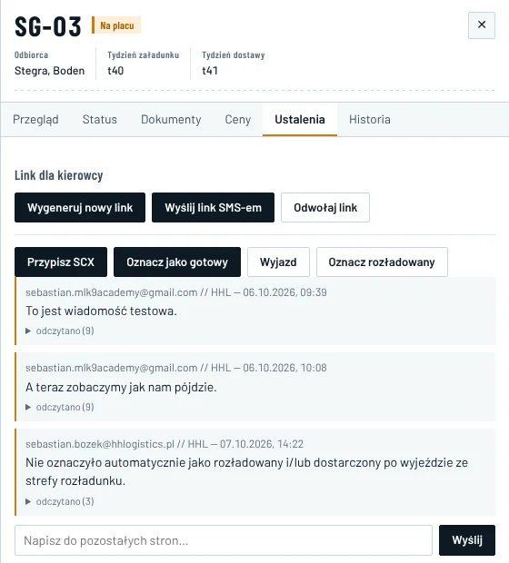
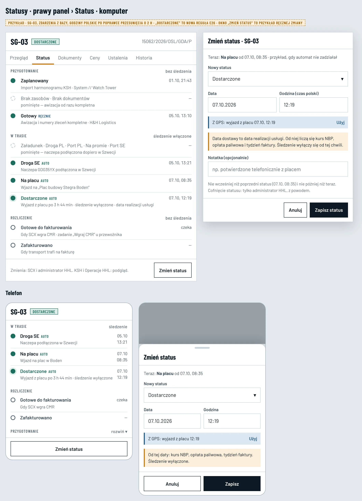
Co przebudować (później prompt dla Cursora)
- Baza Nowe statusy „Gotowe do fakturowania” i „Zafakturowano”. „Rozładowany” łączy się z „Dostarczone”. Nowe reguły automatu: wyjazd ze Śremu, wyjazd z placu, CMR, faktura. „Faza z pozycji” działa tylko raz. Jedna funkcja ręcznej zmiany z datą.
- Aplikacja Jeden słownik nazw dla bazy, panelu, paska i powiadomień. Zakładka Status z osią i oknem. Poprawka godzin. Anulowane w Harmonogramie dla HHL.
- Zależne etapy E27 śledzenie, E28 pasek, E9 Kokpit i liczniki, E16 Finanse, E31 Dokumenty (zadanie CMR), Faktury (kreator), E17 Historia.
- Test W bazie TEST dwa przejazdy z zapisanych lub symulowanych pozycji: SG-03 (Szwecja → plac → „Dostarczone” 12:19) i pełna trasa Śrem → Gdańsk → prom → Nynäshamn → Boden. Każdy status pojawia się raz, we właściwym kafelku, z prawdziwą godziną. Do tego ręczna zmiana z datą dla każdej roli.
- CMR: status „Gotowe do fakturowania” zmienia CMR wgrany przez SCX po „Dostarczone”, z podpisem odbiorcy.
- „Zafakturowano”: gdy są obie faktury (SCX → HHL i HHL → KSH); w panelu widać, której jeszcze brakuje.
- Ręczna zmiana: SCX (Dyspozytor i Użytkownik) i administrator HHL. Operacje HHL tracą przyciski, które mają dziś.
Kto co widzi i co robi: firma × rodzaj konta × miejsce, workflow, Kokpit, liczniki
Dziś aplikacja rozróżnia tylko firmę, a baza rozróżnia rodzaj konta. Dlatego Operacje HHL widzą formularze, których baza nie zapisze, a SCX Użytkownik widzi ceny z zerami. Część przekazań między firmami (przypisanie przewoźnika, faktoring) zostaje tylko w przeglądarce. Kafelki Kokpitu liczą co innego, niż mówią ich tytuły. Proponuję jedną tabelę uprawnień dla 5 rodzajów kont, z której korzystają i aplikacja, i baza. Do tego jeden workflow trzech firm oparty na statusach z E25, nowe kafelki dla każdej firmy i liczby w menu tylko tam, gdzie trzeba coś zrobić.
Fakty
- Dwie warstwyAplikacja sprawdza firmę (HHL, KSH, SCX), a baza rodzaj konta. Operacje HHL widzą edycję Stref i w Opcjach: odbiorców powiadomień, SMS przy strefach, progi, czas wolny, komunikat, historię zmian, logowania i wymóg zezwoleń. Baza każdą z tych zmian odrzuca, bo wymaga administratora HHL. Działa to też odwrotnie: zmiany rejsów baza Operacjom pozwala, a aplikacja je ukrywa.
permissions.tsl. 33–71 (firma);geofences_write= HHL_ADMIN (0001 l. 781–782); funkcjeadmin_*wymagają HHL_ADMIN (0105, 0106, 0147, 0110, 0118, 0164, 0084);SailingsPanel.tsxl. 31–33 vssailings_write_hhl= HHL (0004). - SCX UżytkownikWidzi te same pola cen co Dyspozytor, ale z zerami, bo baza daje koszty tylko Dyspozytorowi. Dziś nie ma żadnego konta SCX Użytkownik. Widok
v_load_price_carrier(0187):current_app_role() = 'CARRIER_DISPATCH'. Konta 07.10: HHL Administrator 4 aktywne, HHL Operacje 3, KSH 4 (wszystkie testowe, E11; jedno ze starą rolą „KSH — administrator”), SCX Dyspozytor 2 aktywne, SCX Użytkownik 0. - Stare role„KSH — administrator” jest nadal na liście zaproszeń. „Plac budowy” jest w bazie, ale nie da się z nim wejść do aplikacji. Twoja decyzja 13:21: tylko 5 rodzajów kont.
src/auth/config.tsl. 46–50;UsersAdmin.tsxl. 72–85; enumuser_role(0001 l. 25–33). - Przełącznik „Widok”Zmienia tylko wygląd. Dane i zapisy zostają kontem HHL. W widoku KSH Kokpit pokazuje sprawy „Odpowiada: HHL”, których prawdziwe konto KSH nie widzi. Twoja decyzja z 12:35: podgląd z prawdziwymi uprawnieniami firmy.
useTowerStore.tsl. 435–442;supabaseProvider.tsl. 68–94; zrzuty 07.10 18:0x. - Kokpit HHLKafelki dziś:
- „Wymaga decyzji 204” liczy wszystkie ryzyka, a nie listę „Do zrobienia” z E7 (23).
- „Terminowość —” liczy tylko „Dostarczone”, a ten status nie występuje (E25).
- „Marża 4,4 %” to średnia z procentów; ważona przychodem wychodzi 4,77 %.
- „Komplet dokumentów 0/94” liczy tylko zezwolenie PL, a kliknięcie nie filtruje Dokumentów.
- „Czas wykrycia 5 min, n = 2” nie ma progu 5 zdarzeń (B6).
cockpitTiles.tsl. 25–27;corridorKpis.tsl. 65–98;prodDash.tsl. 35–42;detectLag.tsl. 9–13;DocsViewnie czytadocsFilter. - Kokpit KSHKafelki dziś:
- „Elementy dostarczone 0/94” liczy transporty, nie elementy.
- „Najbliższa dostawa 06.10 21:05 SG-01” pokazuje przeszłość, i to z godziną −2 h (E25). Nie ma okna 72 h, choć podpis o nim mówi.
- „Wymaga decyzji 157”, a KSH nie ma w bazie żadnych decyzji.
DashboardView.tsxl. 140–185;decisions_read(0103): KSH nie widzi decyzji. - Kokpit SCX (B7)Kafelki dziś:
- „Do uzupełnienia 0”, a „Moje zadania” pokazuje 1 (SG-24): dwie różne definicje.
- „Przychód tygodnia 0,00 PLN” sumuje ostatnie 6 dostarczonych, bez tygodnia.
- „Ryzyko promowe 8 · brak źródła danych”, a baza ma pomiar morza z 16:15: fala do 1,33 m, porywy 23,3 kn, ryzyko niskie. Strona Ryzyka z niego korzysta.
DashboardView.tsxl. 186–236;Nav.tsxl. 113–117;marine_conditionsBALTIC_GDN_NYN 07.10 16:15. - Liczby w menuLiczby w menu dziś:
- Harmonogram 94 to wszystkie transporty.
- Ryzyka 204 to wszystkie ryzyka. Lista KSH i SCX jest krótsza niż ta liczba.
- Faktury pokazują 1 zawsze, gdy nic nie czeka (HHL, SCX).
- Strefy 10 to liczba stref.
- Moje zadania liczą także transporty „Gotowy”, a lista pokazuje najwyżej 9.
Nav.tsxl. 108–139. - Nie zapisuje sięTe działania nie trafiają do bazy:
- „Przypisz SCX”: działa tylko w przeglądarce, przewoźnik bierze się z importu.
- Faktoring: nie ma go w bazie, mimo decyzji 12:35 i 12:52.
- „Złóż fakturę” w starym panelu.
- „Zadanie POD 24h”.
useTowerStore.tsl. 1078–1113, 1414–1417, 1419–1454, 783–792; brak tabeli faktoringu wsupabase/migrations;register_invoice(0049 l. 305–313) powiadamia tylko przy PRZYCHÓD. - DokumentyProblemy z wgrywaniem:
- Strona Dokumenty wgrywa każdy plik jako CMR do pierwszego transportu na liście.
- KSH ma „Wgraj dokument” w panelu transportu, ale nie na stronie. Wymagania mówią, że rysunek wgrywa KSH 72 h przed załadunkiem.
- Polisy przyjmuje się tylko od przewoźnika. Na polisę HHL jako spedytora nie ma miejsca, choć opis projektu jej wymaga.
DocsView.tsxl. 134–145;LoadDrawer.tsxl. 650–663;docRequirements.tsl. 30 (DRAWING, CLIENT, 72 h);InsurancePolicyForm.tsxl. 59. - Panel transportuProblemy w panelu:
- Formularz wymiarów zestawu i pilotów ma tylko SCX, a HHL ich nie ma. Decyzja D-83: wymiary podajesz Ty.
- „Edytuj daty” u KSH blokuje transporty „Brak dokumentów”, przez błąd nazwy statusu.
LoadDrawer.tsxl. 836–926;KshDatesModal.tsxl. 13, 27–29. - Plan a wykonanie13 transportów ma datę załadunku w przeszłości i nadal stoi w przygotowaniu. Wszystkie 94 mają daty potwierdzone. Kokpit tego nie pokazuje.
loads07.10 18:00:plan_load_date < dziśi status przed załadunkiem = 13;plan_dates_statusPOTWIERDZONA = 94.
Zasady
- Jedna tabela Uprawnienia zapisane raz: 5 rodzajów kont × działanie. Z tej tabeli aplikacja wie, co pokazać, a baza, co przepuścić. Przycisk widać tylko wtedy, gdy baza na to pozwala. Test przechodzi przez każdą rolę i każde działanie.
- Tylko 5 kont HHL Administrator, HHL Operacje, KSH Użytkownik, SCX Dyspozytor, SCX Użytkownik. „KSH — administrator” i „Plac budowy” znikają; konto testowe KSH przechodzi na „KSH Użytkownik”.
- Podgląd firmy Przełącznik „Widok” (HHL) pokazuje dokładnie to, co widzi prawdziwe konto wybranej firmy: dane według jej uprawnień, tylko do odczytu, z paskiem „Podgląd jako KSH · bez zapisu”. Tak brzmi decyzja z 12:35.
- Każde przekazanie w bazie Każde przekazanie między firmami zapisuje się w bazie i daje odbiorcy pozycję w „Do zrobienia”: przypisanie przewoźnika, faktura SCX → HHL, faktoring, CMR.
Kto co widzi i robi (propozycja)
„zmienia” = widzi i może zmienić; „widzi” = tylko podgląd; „—” = nie widzi. Tabela z Twoimi decyzjami z 19:11.
| Miejsce · działanie | HHL Admin. | HHL Oper. | KSH | SCX Dysp. | SCX Użytk. |
|---|---|---|---|---|---|
| Menu | |||||
| Kokpit (własne kafelki) | widzi | widzi | widzi | widzi | widzi |
| Mapa | widzi | widzi | widzi | widzi | widzi |
| Harmonogram · aktualizacja z KSH | automatycznie z pliku Excel na SharePoint, w obie strony (E38) | ||||
| Harmonogram · kolumny cen | koszt, przychód, marża | koszt, przychód, marża | Twoja cena | Moja stawka | Moja stawka |
| Rejsy · dane automatycznie; ręczne zmiany | zmienia | widzi | widzi | widzi + komunikat armatora | widzi + komunikat armatora |
| Ryzyka › Do zrobienia · „Biorę tę sprawę” | wszystkie | sprawy HHL | — (tylko sytuacja na trasie) | sprawy SCX | sprawy SCX |
| Dokumenty · wgrywanie | wszystko | wszystko | — | zezwolenia, polisa, CMR | zezwolenia, polisa, CMR |
| Dokumenty · terminy wymagań, zatwierdzenie polisy, polisa HHL | zmienia | zatwierdza polisę | — | — | — |
| Finanse | całość z marżą | całość z marżą | przychód (Twoja cena) | koszt (Moje stawki) | koszt (Moje stawki) |
| Faktury · HHL → KSH: wystawienie | zmienia | zmienia | sprawdza | — | — |
| Faktury · SCX → HHL: wystawienie i sprawdzenie | sprawdza | sprawdza | — | wystawia | wystawia |
| Faktury · „Opłacona”, faktoring | zmienia | zmienia | — | wybiera faktoring | wybiera faktoring |
| Strefy | zmienia | widzi | — | — | — |
| Automatyzacje | zmienia | — | — | — | — |
| Opcje (6 grup z E11) | zmienia | widzi | — | — | — |
| Opcje › Dla mnie (zamiast „Ustawienia”) | zmienia | zmienia | zmienia | zmienia | zmienia |
| „Moje zadania” SCX | wchodzi do „Do zrobienia”; znika z menu SCX (decyzja 19:11, E36 zamknięty) | ||||
| Prawy panel transportu | |||||
| Przegląd · trasa, kierowcy, telefony, rejs | widzi | widzi | widzi | widzi | widzi |
| Przegląd · numer zlecenia HHL | zmienia | zmienia | widzi | widzi | widzi |
| Przegląd · numer zlecenia SCX | widzi | widzi | widzi | zmienia | zmienia |
| Przegląd · przewoźnik | automatycznie przy imporcie (jeden przewoźnik); przycisk „Przypisz SCX” znika | ||||
| Przegląd · daty planu (przed załadunkiem) | widzi | widzi | zmienia | widzi | widzi |
| Przegląd · awizacja: kierowcy, ciągnik, naczepa, rejs | widzi (rejs zmienia) | widzi (rejs zmienia) | widzi | zmienia | zmienia |
| Przegląd · wymiary zestawu (D-83) | zmienia | zmienia | widzi | widzi | widzi |
| Przegląd · piloci (tylko „PL + SE”; zmiana 09.10, 12:33) | poprawia | widzi | widzi | zmienia (w awizacji) | zmienia (w awizacji) |
| Status · „Zmień status” z datą (E25) | zmienia, też wstecz | widzi | widzi | zmienia do przodu | zmienia do przodu |
| Dokumenty | jak strona Dokumenty | ||||
| Ceny · koszt / przychód / marża | wszystko | wszystko | przychód | koszt | koszt |
| Ceny · dopłaty | akceptuje koszt, proponuje przychód | tak samo | akceptuje przychód | proponuje koszt | proponuje koszt |
| Ustalenia (czat) · Historia | pisze · widzi | pisze · widzi | pisze · widzi | pisze · widzi | pisze · widzi |
| Pasek górny | |||||
| Przełącznik „Widok” (podgląd bez zapisu) | tak | tak | — | — | — |
| Dzwonek, licznik promów | widzi | widzi | widzi | widzi | widzi |
Workflow trzech firm
| # | Krok | Kto | Gdzie | Co dostaje następny |
|---|---|---|---|---|
| 1 | Aktualizacja harmonogramu KSH | automat | plik Excel na SharePoint, w obie strony (E38) | SCX: „Awizacja do …” w Do zrobienia; status „Zaplanowany” |
| 2 | Potwierdzenie dat (5 dni przed załadunkiem, 12:35) | KSH | Panel › Przegląd › Daty | HHL, SCX: zmiana dat poniżej 5 dni jako sprawa |
| 3 | Przypisanie przewoźnika | automat przy imporcie | — | SCX: nowy transport w Harmonogramie (jeden przewoźnik) |
| 4 | Awizacja i numer zlecenia SCX | SCX | Panel › Przegląd › Awizacja | Status sam: „Brak dokumentów” albo „Gotowy” |
| 5 | Numer zlecenia HHL, wymiary zestawu | HHL | Panel › Przegląd | — |
| 6 | Zezwolenia PL i SE, polisa | SCX (polisę zatwierdza HHL) | Dokumenty | Status sam: „Gotowy” |
| 8 | Trasa: Załadunek → … → Dostarczone | automaty (E25); ręcznie SCX i HHL Admin. | Panel › Status | KSH: wyjazd, prom, plac, dostawa; SCX: „Wgraj podpisany CMR” |
| 9 | Decyzje w trasie (prom, ETA, brak pozycji) | firma decydująca (15:13) | Ryzyka › Do zrobienia | „Biorę tę sprawę”, historia z nazwiskiem |
| 10 | Podpisany CMR | SCX | Panel › Status / Dokumenty | „Gotowe do fakturowania”; HHL i SCX w Fakturach |
| 11 | Faktura tygodniowa SCX → HHL | SCX | Faktury | HHL: „Faktura do sprawdzenia” (dziś brak powiadomienia) |
| 12 | Sprawdzenie, płatność, faktoring 1 % / 48 h | HHL (Administrator i Operacje) | Faktury | SCX: status faktury i wypłaty |
| 13 | Faktura tygodniowa HHL → KSH | HHL | Faktury | KSH: „Faktura do sprawdzenia” (działa) |
| 14 | Sprawdzenie przez KSH, wpłata | KSH, potem HHL oznacza | Faktury | Po obu fakturach transport „Zafakturowano” |
| 15 | Dopłaty: postój, anulowanie | SCX → HHL; HHL → KSH | Panel › Ceny | Akceptujący dostaje sprawę w Do zrobienia |
Kokpit każdej firmy i liczby w menu
- HHLW trasie · Do zrobienia (ta sama liczba co menu i dzwonek, E7) · Załadunki w 7 dni (w tym po terminie) · Zezwolenia na 7 dni (PL i SE) · Dostarczone i rozliczenie (czeka na CMR, gotowe do faktury) · Marża ważona przychodem (E16). Pod kafelkami czas wykrycia: poniżej 5 zdarzeń napis „za mało danych” (B6).
- KSHDostarczone (transporty, elementy, tony) · W trasie · Plan dostaw w 72 h (ile już wyjechało) · Terminowość (dostawa w dniu planu) · Najbliższy prom · Faktury do sprawdzenia. Bez listy „Do zrobienia”, bez kosztów i marży.
- SCXDo zrobienia · W trasie · Załadunki w 7 dni (zezwolenia) · Do zafakturowania (status „Gotowe do fakturowania” w tygodniu dostawy, liczone jak tabela Faktur, B7) · Najbliższy prom z prognozą morza (B7) · Terminowość. SCX Użytkownik ma to samo co Dyspozytor.
- Liczby w menuLiczba stoi tylko przy działaniu do wykonania. Ryzyka = „Do zrobienia” danego konta (ta sama w Kokpicie, dzwonku i dolnym pasku telefonu). Faktury = faktury czekające na moje działanie plus transporty gotowe do mojej faktury. Bez liczb przy Harmonogramie, Strefach i Automatyzacjach.
Dziś i po zmianie
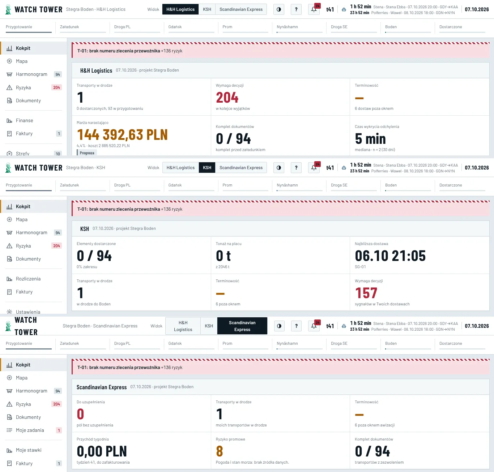
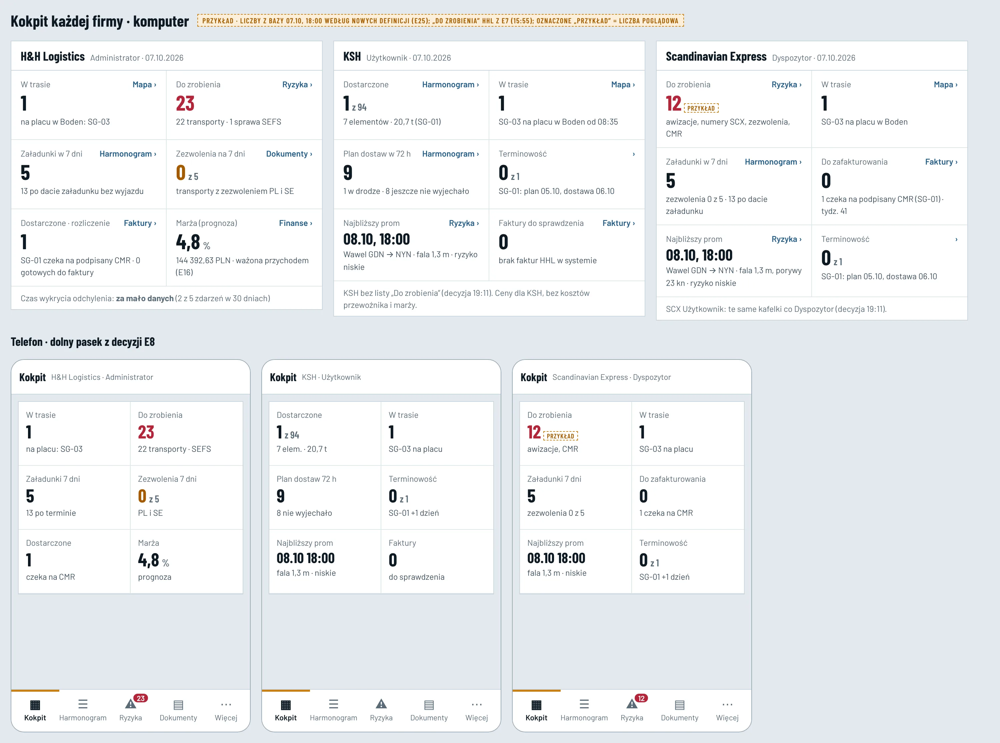
Co przebudować (później prompt dla Cursora)
- Uprawnienia Tabela 5 kont × działanie, używana przez aplikację i bazę. Test każdej roli: przycisk widać tylko wtedy, gdy baza przepuszcza zapis. Stare role usunięte z listy zaproszeń.
- Podgląd „Widok” = podgląd z prawdziwymi uprawnieniami, bez zapisu.
- Przekazania Do bazy trafiają faktoring (1 %, 48 h) i powiadomienie HHL o fakturze SCX. Przewoźnik przypisuje się przy imporcie, więc przycisk „Przypisz SCX” znika. „Moje zadania” wchodzą do „Do zrobienia”.
- Role w bazie SCX Użytkownik dostaje w bazie te same ceny co Dyspozytor. Ręczne zmiany rejsów tylko administrator HHL, także w bazie. Operacje HHL: „Opłacona” i faktoring dozwolone.
- Dokumenty Wgrywanie z wyborem transportu i rodzaju dokumentu. Rysunek nie jest wymagany od KSH (KSH nic nie wgrywa); jeśli jest potrzebny, dołącza go HHL. Polisa HHL jako spedytora. Wymiary zestawu i piloci także dla HHL. [09.10, 12:33: piloci — wpisuje SCX w awizacji; HHL Administrator może poprawić]
- Kokpit i menu Kafelki i liczby jak wyżej, B6 i B7. Błąd „Edytuj daty” u KSH.
- Operacje HHL: numery zleceń HHL, sprawy HHL, dokumenty, faktury dla KSH, sprawdzanie faktur SCX, „Opłacona” i faktoring. Widzą marżę. Opcje tylko w podglądzie. Rejsy: ręczne zmiany tylko administrator. Przypisanie przewoźnika (jest jeden) i import (z pliku Excel na SharePoint, w obie strony) mają działać automatycznie.
- SCX Użytkownik: ta sama praca co Dyspozytor (awizacja, numer SCX, dokumenty, CMR, statusy), z cenami, Finansami i Fakturami.
- KSH: nie wgrywa rysunków i specyfikacji, nie ma własnej listy „Do zrobienia”.
- „Moje zadania” SCX: łączymy z „Do zrobienia”; pozycja znika z menu SCX, E36 zamknięty.
- Pola do zapisu w Excelu zmapujemy, gdy będzie dostęp do pliku na SharePoint.
- Ręczne wgranie pliku zostaje jako zapas.
- Piloci: wpisuje SCX w awizacji; Administrator HHL może poprawić; Operacje HHL i KSH tylko oglądają (12:33). Daty i godziny załadunku i rozładunku zmienia i potwierdza tylko KSH i plik KSH; HHL i SCX tylko oglądają; „Działaj jako” konto KSH — Administrator HHL może zmienić daty jako KSH, w dzienniku widać prawdziwego wykonawcę (konstytucja VI.5; pytanie W30). Dopłaty: każda firma decyduje po swojej stronie, dopłatę SCX akceptuje HHL. Polisy dodaje się raz.
Pasek etapów: każdy status w jednym kafelku, liczby, jeden filtr
Pasek liczy według starego przypisania, a liczb nie pokazuje wcale. „Na placu” trafia do kafelka „Nynäshamn”, a postój w porcie Nynäshamn do „Drogi SE”. Harmonogram ma przy tym drugi, osobny filtr etapów. Proponuję 10 kafelków dokładnie według spisu statusów z E25. Na każdym jest liczba transportów, a filtr jest jeden dla paska, Harmonogramu i Mapy, także na telefonie.
- 10 kafelków według statusów z E25 — tylko liczba, bez linii podpowiedzi.
- Kliknięcie kafelka w Harmonogramie filtruje Harmonogram na miejscu. Z każdej innej strony prowadzi na Mapę i filtruje mapę i tabelę pod nią.
Fakty
- Bez liczbPasek ma 9 kafelków: Przygotowanie, Załadunek, Droga PL, Gdańsk, Prom, Nynäshamn, Droga SE, Boden, Dostarczone. Pokazuje tylko szerokość paska, bez liczby. Tak ustalono 05.10 w wariancie C (B-9), po Twoim wcześniejszym „usunąć cyfry”. Polecenie z 16:20 („dodaj cyfry … ile transportów jest na danym etapie”) to zmienia.
CorridorSpine.tsxl. 66–71 (komentarz „B-9.2: bez cyfr”);docs/handover/PROPOZYCJE_B_05_10.mdl. 71–82;PLAN.mdl. 452 (B-9 wariant C, zrobione 05.10). - Złe przypisanie„Na placu” liczy się w kafelku „Nynäshamn”, „Port Nynäshamn” w „Drodze SE”, a „Rozładowany” w „Boden”. „Dostarczone” nie występuje nigdy (E25). Gdynia i Karlskrona wpadają pod nazwy „Gdańsk” i „Nynäshamn”. Na zrzucie poniżej filtr „Nynäshamn” pokazuje SG-03, które stoi na placu w Boden.
mappers.tsl. 24–39;status.tsl. 4–19 i 105–115; zrzut Harmonogramu 07.10 20:0x. - Liczby dziśPasek ich nie pokazuje, ale liczy: Przygotowanie 92, Nynäshamn 1 (SG-03), Boden 1 (SG-01), pozostałe kafelki 0. Z tych 92: 13 transportów jest już po dacie załadunku, a 5 ma załadunek w ciągu 7 dni.
countLoadsByStage(corridorKpis.tsl. 27–33); baza 07.10 20:00: PLANNED 91, READY 1, AT_SITE 1, UNLOADED 1. - Dwa filtryHarmonogram ma pod paskiem siedem własnych przycisków etapów (Załadunek … Boden). To osobny filtr. Włączony kafelek nie podświetla przycisku, a oba naraz mogą dać pustą listę. Przyciski „W drodze” i „Dostarczone” liczą według jeszcze innych definicji (E9).
ScheduleView.tsxl. 129–162 (quick) i l. 287–302; filtr paska:stageFilter,selectors.tsl. 7–11. - KliknięcieKliknięcie kafelka z Kokpitu albo innej strony przenosi na Mapę; w Harmonogramie lista zostaje na miejscu. Drugie kliknięcie albo Escape zdejmuje filtr. Kafelek Prom pokazuje w podpowiedzi dwa najbliższe rejsy.
CorridorSpine.tsxl. 55–63 i 36–45;App.tsxl. 70–73. - TelefonNa telefonie (do 430 px) pasek jest ukryty. Zostają tylko przyciski w Harmonogramie.
index.cssl. 941 i 954:@media (max-width:430px) … .corridor{display:none}.
Przypisanie statusów do kafelków (według E25)
| Kafelek | Statusy | Pod liczbą (wycofane 20:57) |
|---|---|---|
| Przygotowanie | Zaplanowany, Brak zasobów, Brak dokumentów, Gotowy | na czerwono: po dacie załadunku bez wyjazdu; ile ma załadunek w 7 dni |
| Załadunek | Załadunek | KSH Śrem |
| Droga PL | Droga PL | na czerwono: opóźnione (E15) |
| Port PL | Port PL | Gdańsk / Gdynia z liczbą przy każdym |
| Prom | Na promie | najbliższy rejs (jak dziś w podpowiedzi) |
| Port SE | Port SE | Nynäshamn / Karlskrona z liczbą przy każdym |
| Droga SE | Droga SE | na czerwono: opóźnione (E15) |
| Plac Boden | Na placu | kod i godzina wjazdu, gdy jeden; czas na placu |
| Dostarczone | Dostarczone | ile czeka na podpisany CMR |
| Rozliczenie | Gotowe do fakturowania, Zafakturowano | do faktury · zafakturowane |
Nad kafelkami trzy grupy z E25: Przygotowanie · W trasie (śledzenie) · Po dostawie. Suma kafelków „W trasie” to ta sama liczba co „W trasie” w Kokpicie (E9). Anulowane poza paskiem.
Propozycja
- 10 kafelków z liczbami Każdy status jest w dokładnie jednym kafelku. Liczba widoczna zawsze, kafelek z zerem wyszarzony. Bez linii podpowiedzi (20:57).
- Jeden filtr Kafelek filtruje Harmonogram i Mapę. Na liście widać chip „Etap: Plac Boden ✕”. Siedem przycisków etapów w Harmonogramie znika, a „W drodze” i „Dostarczone” razem z nimi. Zostają filtry stanu: Opóźnione, Bez dokumentów, Bez kierowcy, Bez ciągnika.
- Kliknięcie W Harmonogramie i na Mapie filtr działa na miejscu. Z każdej innej strony prowadzi na Mapę i filtruje mapę i tabelę pod nią (20:57). Mapa pokazuje znaczniki aut w oknie śledzenia (E27), a tabela pod nią wszystkie transporty z etapu. Drugie kliknięcie, „✕” albo Escape zdejmuje filtr.
- Telefon Ten sam pasek nad listą Harmonogramu i nad Mapą, przewijany w bok: liczba i nazwa, kafelki co najmniej 44 px.
- Każda firma Liczy tylko transporty, które dana firma widzi. Dziś to dla wszystkich te same 94, bo jest jeden klient i jeden przewoźnik.
- Test Każdy z 14 statusów trafia do właściwego kafelka. Suma kafelków równa się liczbie transportów bez anulowanych. Filtr paska i lista dają tę samą liczbę.
Dziś i po zmianie
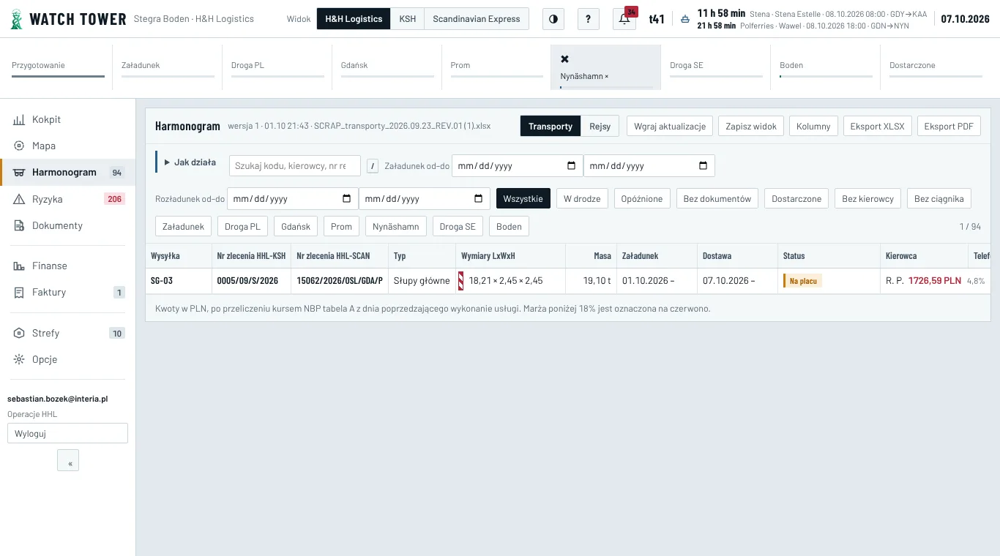
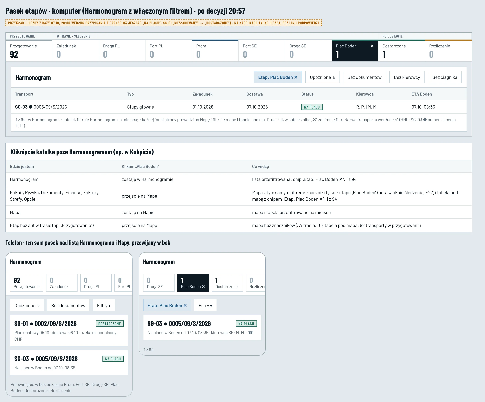
Panel transportu: Status jako oś, Historia po polsku, Czat (dawniej Ustalenia), profil trasy ukryty
Zakładki Status i Historia pokazują tę samą listę, w większości w kodach. W Ustaleniach obok czatu są przyciski, które powinny być gdzie indziej albo nic nie robią. Profil trasy nie zadziałał ani razu, bo funkcja szuka kolumny, której nie ma w bazie. Proponuję trzy różne zakładki. Status pokazuje oś 14 statusów z E25 z planem, źródłem i autorem. Historia to dziennik zmian „było → jest”, zapisywany przez bazę. Ustalenia zostają samym czatem.
Fakty
- Status = HistoriaObie zakładki rysuje ten sam kod z tych samych zdarzeń. Różnią się tylko pogrubieniem. SG-03 ma w każdej po 19 wpisów, najnowsze na górze.
LoadDrawer.tsxl. 549–580 (Status) i 582–613 (Historia); zrzut SG-03 07.10 20:1x. - KodyW bazie jest 15 rodzajów zdarzeń. Aplikacja ma polską nazwę tylko dla importu harmonogramu i zmiany automatycznej. Pozostałe widać jako kod: „GEOFENCE_EXIT”, „RESOURCES_UPDATED”, „ORDER_NO_UPDATED”, „SAILING_ASSIGNED · rejs usunięty”, „READY_BLOCKED”, „STATUS_READY · … cover OK”. Tak wygląda 80 ze 177 wpisów. Wjazd i wyjazd ze strefy nie mówią, o którą strefę chodzi.
enumLabels.tsl. 50–67 (16 nazw, z czego w bazie występuje 1); baza 07.10: 177 zdarzeń, 94 importy, 3 zmiany automatyczne. - Autor20 wpisów ma zamiast osoby sam skrót firmy („— // HHL”, „— // SCX”). 51 wpisów ma login z adresu e-mail („sebastian.mlk9academy // H&H Logistics”), bo konta nie mają imienia i nazwiska (E6). 106 wpisów z automatów pokazuje „System // Watch Tower”.
historyActor.tsl. 26–36;load_events.payload->actor07.10. - Wpisy bez zmianyHistorię zapisuje przeglądarka przy każdym zapisie, także gdy nic się nie zmieniło. W SG-03 5 z 19 wpisów nic nie zmienia. Są tam 2 × „rejs usunięty”, chociaż rejsu nie było, i powtórzony ten sam numer zlecenia SCX. Do tego zasoby zapisane 06.10 z identycznymi danymi i „Zmiana automatyczna READY → READY”. Godziny tych wpisów są o 2 h za wcześnie (E25).
useTowerStore.tsl. 821–824, 870–876, 1537–1540;load_eventsSG-03 id 229–243. - Każdy może dopisaćKażde zalogowane konto, które widzi transport, może dopisać do jego historii wpis z listy 35 rodzajów, w tym „STATUS_DELIVERED”. Może to zrobić także KSH, z dowolną godziną. Wpis nie zmienia statusu, ale w Historii wygląda jak prawdziwy. Zasada
events_insertnaload_events(produkcja 07.10). - Tylko 500 zdarzeńAplikacja pobiera 500 najnowszych zdarzeń wszystkich transportów naraz. Dziś jest ich 177. SG-03 ma 19, więc przy 94 transportach na trasie byłoby ich ok. 1 800. Wtedy starsze wpisy znikną z panelu.
supabaseProvider.tsl. 70 (limit(opts.eventLimit ?? 500)). - UstaleniaKonto HHL widzi nad czatem „Link dla kierowcy · Wygeneruj nowy link · Wyślij link SMS-em · Odwołaj link”. Link jest wyłączony od 03.10 i każde wydanie kończy się odmową. Są też przyciski „Przypisz SCX · Oznacz jako gotowy · Wyjazd · Oznacz rozładowany”. SCX widzi dodatkowo formularz „Wymiary zestawu” i awizację, a KSH kopię danych zasobów z Przeglądu.
LoadDrawer.tsxl. 765–990;issue_driver_tokensprawdzaDRIVER_LINK_ACCEPT= false (0142, 0156). - CzatCzat działa: 6 wiadomości, wszystkie od HHL, w tym 4 próbne („wiadomość testowa”, „WT-TEST-10g3” …). Pozostałe dwie to zgłoszenia błędów: SG-02 „Nie można dodać numeru zlecenia HHL” i SG-03 o braku „Dostarczone”. Autor jest pokazany jako adres e-mail. Wiadomości HHL są zawsze wyróżnione jak „moje” (pomarańczowa kreska), także wtedy, gdy czyta SCX albo KSH. „Odczytano (9)” nie znaczy, że ktoś przeczytał: każde otwarcie aplikacji oznacza 40 ostatnich wiadomości wszystkich transportów jako przeczytane. Moja sesja kontem testowym zapisała tak 6 odczytów 07.10 o 20:11.
LoadDrawer.tsxl. 993 iindex.cssl. 263;supabaseProvider.tsl. 131–139;load_message_reads07.10. - Profil trasy„Nie udało się pobrać profilu” przy każdym transporcie. Funkcja
route-profileczyta kolumnęloads.route, a takiej kolumny nie ma, więc odpowiada 404. Funkcjaroute-checkbierze trasę poprawnie z rejsu. Tabela profili jest pusta, czyli profil nie został policzony ani razu. Po naprawie pokaże wysokości na odcinkach korytarza dla zwykłej ciężarówki, ten sam wynik dla każdego transportu na tej samej trasie. Wymiary zestawu dojdą po D-83. Logi funkcji 07.10: każde wywołanie POST kończy się 404;route-profile/index.tsl. 42–47 (wersja 3 = repozytorium);route-checkl. 28sailings(route);load_route_profiles0 wierszy.
- „Ustalenia” zmieniają nazwę na „Czat”.
- Rozmowa tylko HHL ↔ SCX jest potrzebna. HHL i SCX przy wysyłce wybierają „HHL, SCX, KSH” albo „tylko HHL i SCX”. KSH pisze zawsze do wszystkich i nie widzi rozmów HHL ↔ SCX.
- Profil trasy ukrywamy i nie rozwijamy.
Propozycja
- Status Oś 14 statusów z E25 w trzech grupach. Każdy status jest oznaczony jako zrobiony, aktualny, pominięty albo przyszły. Przy każdym widać godzinę po polsku, plan z różnicą („plan 07.10 · w terminie”), źródło (GPS, AIS, ręcznie, import), autora i przyczynę. Pod statusem są kamienie milowe, np. strefa 50 km przed Boden czy postój na placu. Oznaczenia Opóźniony, Brak GPS i Brak dokumentów są przy aktualnym statusie. Przycisk „Zmień status” jest z E25: mają go SCX i administrator HHL. Oś jest taka sama dla wszystkich firm.
- Historia Dziennik wszystkich zmian: statusy i trasa, zasoby i awizacja, numery, dokumenty, ceny i dopłaty, daty planu i decyzje. Każdy wpis jest po polsku i mówi „było → jest”. Wpisy są pogrupowane po dniach, z filtrami i z nazwą strefy przy GPS. Autor: „Imię Nazwisko // Firma” (E6), „System // Watch Tower”, „GPS emtrack”. Każda firma widzi tylko to, co może: KSH nie widzi ceny SCX ani marży, SCX nie widzi ceny dla KSH ani marży.
- Zapis w bazie Historię zapisuje baza przy samej zmianie, a nie przeglądarka. Autor jest brany z logowania, godzina jest prawdziwa (koniec przesunięcia o −2 h z E25), a wpis powstaje tylko wtedy, gdy wartość się zmieniła. Nikt nie może dopisać wpisu ręcznie, więc zasada
events_insertzostaje zamknięta. Panel pobiera historię jednego transportu, bez limitu 500. 5 dawnych pustych wpisów SG-03 zostaje ukrytych. - Czat Zakładka „Ustalenia” nazywa się „Czat” (20:57). Tylko czat (zeszyt 10g.1). HHL i SCX wybierają przy wysyłce „HHL, SCX, KSH” albo „tylko HHL i SCX”; KSH pisze zawsze do wszystkich i nie widzi rozmów HHL ↔ SCX (w bazie: widoczność wiadomości dla firm,
visible_to). Moje wiadomości są po prawej, cudze po lewej. Autor ma imię i nazwisko z firmą, przy wiadomościach są godzina i dzień. „Przeczytali: …” liczy się dopiero po otwarciu zakładki przez daną osobę. Na zakładce widać liczbę nieprzeczytanych. Enter wysyła wiadomość, a pozostałe firmy dostają powiadomienie w aplikacji, jak dziś. Znika link dla kierowcy (sama aplikacja kierowcy zostaje bez zmian, decyzja 16:48). „Przypisz SCX” robi automat (E9). Przyciski statusów przechodzą do zakładki Status (E25). Formularz wymiarów zestawu u SCX znika (wymiary podaje HHL, D-83). Zasoby i awizacja są w Przeglądzie (E32). - Profil trasy Ukryty u wszystkich firm, bez rozwijania (20:57). Panel przestaje wywoływać funkcję
route-profile. Funkcja i tabela zostają w bazie bez użycia; ich usunięcie trafi na listę porządków (E18). - Telefon Panel otwiera się na cały ekran ze strzałką wstecz. Zakładki przewijają się w bok. Oś statusów jest pionowa, a grupa „Przygotowanie” zwinięta. W Historii filtry też przewijają się w bok. W Ustaleniach pole pisania jest przyklejone na dole. Przyciski mają co najmniej 44 px (E8).
- Test Zmiana numeru na ten sam nie robi wpisu, a zmiana na inny robi jeden wpis z „było → jest” i autorem. KSH nie może dopisać zdarzenia. Każdy z 15 rodzajów zdarzeń ma polską nazwę. Czat nie ma żadnego przycisku poza wysyłką. KSH nie widzi wiadomości „tylko HHL i SCX” (także przez API). Profil trasy nie pojawia się nigdzie.
Dziś i po zmianie
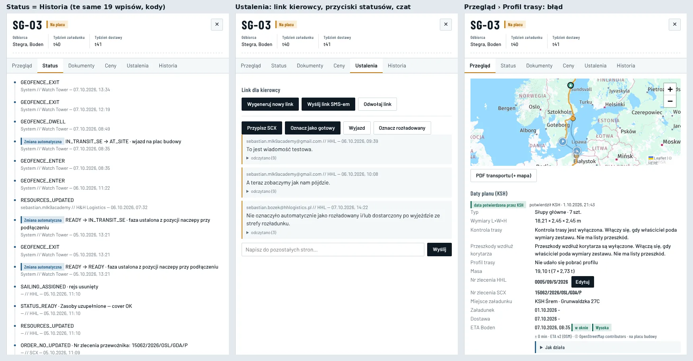
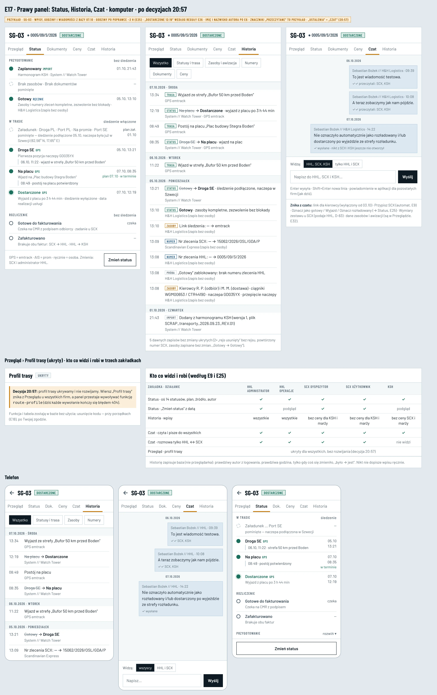
Śledzenie: od 03:00 w dniu załadunku do „Dostarczone”, potem auto znika
Dziś śledzenie nie ma okna czasu. Pozycje naczepy trafiają do transportu, dopóki nie ma statusu „Rozładowany” albo „Dostarczone”. SG-03 wyjechało z placu o 12:19, ale nadal ma status „Na placu”. Dlatego do 20:2x dostało 93 kolejne pozycje. Mapa pokazuje je jako „SG-03 · na placu” ok. 420 km od placu, w rejonie Sundsvall. Proponuję okno dla każdego transportu: od 03:00 w dniu załadunku do „Dostarczone”. Poza oknem pozycja nie trafia do transportu, a auto nie pojawia się na żadnej mapie.
- Link śledzenia zostaje i SCX wpisuje go zawsze, przy każdym transporcie. Dostawców lokalizatorów może być kilku, nie tylko emtrack. Bez przydziału automatycznego po rejestracji naczepy. Zmienia to punkty 2 i 9 propozycji; szczegóły w nowym etapie E44.
- Spóźnione auto (poza oknem KSH na załadunek albo rozładunek) jest śledzone aż do „Dostarczone”. Okno KSH nie kończy śledzenia, transport dostaje „Opóźniony”.
- Lokalizator jest w naczepie albo w ciągniku. W naczepie traci zasilanie po wyłączeniu zapłonu i wtedy nie ma pozycji.
- Start śledzenia: wariant A — 03:00 w dniu załadunku.
- Dwa linki (odcinek PL / odcinek SE) zawieszone. Najpierw dowiesz się od SCX, jak to wygląda w praktyce.
- SCX używa tylko emtrack, tylko w naczepach, przez dostęp, który udostępniłeś. Podwykonawcy SCX mogą mieć innych dostawców. Ich linki dostarczysz, gdy je dostaniesz (E44).
- 21:51: dopasowanie zostaje jak dziś. Bez wyboru naczepy z listy emtrack. Pozycja z dostępu emtrack trafia do transportu, w którym wpisano jej identyfikator w polu „Link śledzenia” albo jej rejestrację w polu naczepy. Zmienia się tylko czas: dopasowanie działa wyłącznie w oknie śledzenia.
- Pozycje w nocy z „zapłon: tak” — Twoje wyjaśnienie: kierowca mógł mieć włączony zapłon do ogrzewania albo elektroniki, żeby nie rozładować akumulatora; albo lokalizator wysyłał sygnał „żyję” i wracał do uśpienia. Z danych nie da się rozróżnić tych dwóch przypadków.
Fakty
- Bez oknaPobieranie pozycji z emtrack działa co 2 min, całą dobę. Bierze wszystkie transporty poza „Anulowany”, „Rozładowany” i „Dostarczone”. Nigdzie nie ma godziny startu ani daty. Zaplanowany transport z wpisaną naczepą też dostaje pozycje. Cron
tower-emtrack-web*/2 * * * *(aktywny);store.tsl. 197–199; przełącznikTELM_EMTRACK_WEB= włączony. - Po dostawieSG-03 ma 280 pozycji z przewozu (05.10 13:21 – 07.10 12:19) i 93 po wyjeździe z placu (stan 20:2x, liczba rośnie). Ostatnia pozycja jest z 07.10 20:23, przy 62,52° N, 17,39° E, ok. 420 km od placu w Boden. Na Mapie znacznik ma kolor „na placu” i opis „SG-03 · R. P. · WGM00653”.
positionsSG-03 07.10 20:2x; zrzut Mapy 07.10 20:2x. - Mapy bez filtraMapa, Kokpit, panel i PDF biorą ostatnią pozycję każdego transportu bez warunku statusu i wieku pozycji. Transport dostarczony wisiałby na mapie z ostatnią pozycją aż do usunięcia danych po 30 dniach.
latest_vehicle_fixes(0190 l. 8–20);MapView.tsxl. 110–132;DashboardView.tsxl. 365;LoadDrawer.tsxl. 290. - Wspólna naczepaPozycja trafia do pierwszego transportu, który pasuje rejestracją naczepy. Kolejność zwraca baza bez sortowania. Gdy ta sama naczepa ma też kolejny transport, pozycje mogą wpaść do przyszłego transportu. Mogą też zmienić jego status, bo odgadywanie fazy z pozycji działa również dla „Zaplanowany” i „Gotowy” (E25). Dziś żadna naczepa nie jest w dwóch transportach naraz, ale przy 94 transportach na kilku naczepach to tylko kwestia czasu.
matchTrailer.tsl. 14–28;store.tsl. 198 (bezorder); 0188 l. 46. - Co jest śledzoneŚledzone są tylko naczepy z konta emtrack. Ciągniki są pomijane. Dopasowanie idzie po rejestracji naczepy. Pole „Link śledzenia” w SG-03 zawiera adres strony „https://emtrack.eu/app/”, a nie identyfikator, więc dopasowanie po nim nie działa. Pozycja przychodzi co 2 min w ruchu i co 15 min na postoju (mediana SG-03: 3,2 min). Nagłówek Mapy mówi „pozycje co 5 min”.
jobs.tsl. 1198;emtrackWeb.tsl. 72–81;loads.telematics_vehicle_id. - Link dziśLink śledzenia jest wpisany w 1 z 94 transportów (SG-03) i brzmi „https://emtrack.eu/app/”. To adres strony emtrack, a nie pojazdu. Pozycje SG-03 przychodzą więc wyłącznie z dopasowania po rejestracji naczepy. System czyta dziś jedno konto emtrack i tylko obiekty typu naczepa. Linku innego dostawcy nie odczyta, a lokalizatory w ciągnikach pomija.
loads.telematics_vehicle_id: 93 puste, 1 adres (07.10 21:0x);matchTrailer.tsl. 13–28; jedyny adapter:_shared/telematics/emtrackWeb.ts. - Dostęp emtrackWatch Tower loguje się do emtrack loginem i hasłem, a nie linkiem do pojazdu. Ten dostęp widzi dziś 1 obiekt: naczepę GD035YX (SG-03). Innych naczep SCX system więc nie widzi. Nazwa źródła „link podwykonawcy” jest w bazie od migracji 0173, ale nie ma kodu, który by z niego czytał.
integration_runsemtrack-web 07.10 21:44: objects 1, trailers 1, matched 1, orphans 0;jobs.tsl. 1127–1128 (EMTRACK_LOGIN,EMTRACK_PASSWORD);position_sourceSUBCONTRACTOR_LINK (0173 l. 5). - Zapłon a sygnałSG-03 w nocy 05/06.10 stało 14 h. Przyszło wtedy 56 pozycji, co 15 min, wszystkie z „zapłon: tak”. Przy placu ostatnia pozycja jest z 06.10 12:35 z „zapłon: nie”, a potem przez 20 h nie ma żadnej, co zgadza się z Twoją informacją o zasilaniu. Po wyjeździe z placu przyszło 99 pozycji „zapłon: nie”, z czego 98 w ruchu (stan 20:58). Znacznik zapłonu z tego lokalizatora nie mówi więc, czy auto jedzie. Mówi o tym tylko prędkość. Twoje wyjaśnienie (21:43): ogrzewanie albo elektronika przy włączonym zapłonie, albo sygnał „żyję” z lokalizatora przed uśpieniem.
positions.ignition,speed_kmhSG-03, odczyt 07.10 21:0x. - „Brak GPS”Alarm braku pozycji (próg 15 min) uznaje transport za podłączony tylko wtedy, gdy wpisano „Link śledzenia” albo przyszły pozycje z innego źródła niż emtrack. Transport śledzony samą rejestracją naczepy nigdy nie dostanie „Brak GPS”. Alarm podaje przy tym rejestrację ciągnika, choć pozycja jest z naczepy.
detect_silent_vehicles(0147 l. 366–420);SILENT_MIN= 15. - Najbliższe dniZaładunek 08.10 mają SG-15 i SG-16, a 16.10 SG-17, SG-18 i SG-19. Żaden z nich nie ma naczepy. SG-24 (21.10) ma naczepę TGGG1111. Żaden transport nie ma jeszcze okna załadunku z awizacji, więc dzień bierze się dziś z harmonogramu KSH.
loads.plan_load_date,trailer_plate,plan_load_from07.10.
Propozycja
- Okno Start o 03:00 czasu polskiego w dniu załadunku (wariant A, Twoja decyzja 21:43). Dzień bierze się z awizacji (okno załadunku od SCX), a gdy jej nie ma, z harmonogramu KSH. Zmiana daty przed startem przesuwa start. Raz włączone śledzenie trwa do „Dostarczone”, automatycznego (E26) albo ręcznego z godziną (E25). Spóźnienie wobec okna KSH go nie kończy (20:57).
- Przypisanie (21:51: jak dziś) Dopasowanie bez zmian: najpierw identyfikator z pola „Link śledzenia”, potem rejestracja naczepy. Nowe jest tylko to, że działa wyłącznie dla transportów w oknie. Gdy ta sama naczepa ma dwa transporty, a ich okna się nakładają, pozycja trafia do wcześniejszego niedostarczonego. Poza oknem pozycja nie jest zapisywana przy żadnym transporcie. Odgadywanie fazy z pozycji działa tylko w oknie i tylko raz (E25).
- Mapy Mapa, Kokpit, panel i PDF pokazują wyłącznie transporty w oknie. Filtr działa w bazie, więc dostarczony transport nie oddaje już pozycji. Przy pustej mapie widać „W trasie: 0” i najbliższe włączenia śledzenia. Nagłówek podaje prawdziwy rytm: co 2 min w ruchu, co 15 min na postoju.
- Po dostawie Od chwili „Dostarczone” pozycje nie są zapisywane, a znacznik znika ze wszystkich map. Ślad z przewozu zostaje przy transporcie jako dowód postoju i do kalibracji ETA (E15). Jest usuwany 30 dni po dostawie, jak dziś. Jednorazowo trzeba usunąć pozycje zapisane po dostawie: dla SG-03 po 07.10 12:19, to dziś 93 i ich przybywa. To zmiana danych, więc Cursor zrobi ją dopiero po Twojej akceptacji.
- Pasek w panelu Nad zakładkami panelu jeden z trzech stanów. Przed oknem: „Śledzenie włączy się 21.10 o 03:00 · naczepa TGGG1111”. W oknie: „Śledzenie trwa od 03:00 · ostatnia pozycja 2 min temu”. Po dostawie: „Śledzenie zakończone 07.10, 12:19”. Ten sam stan widać w Kokpicie, przy znaczniku na mapie i w PDF.
- „Brak GPS” w oknie Alarm działa dla każdego transportu w oknie. O tym, czy auto stało, decyduje prędkość z ostatnich pozycji, a nie znacznik zapłonu. Cisza po jeździe daje „Brak GPS” po 30 min (E15). Cisza po postoju daje tylko informację „postój, brak sygnału od 12:35”, bez alarmu, bo lokalizator w naczepie traci zasilanie po wyłączeniu zapłonu (20:57). Brak naczepy o 03:00 to „Brak zasobów” (E25) i sprawa w „Do zrobienia” SCX (E7), a nie „Brak GPS”. W alarmie jest rejestracja pojazdu z lokalizatorem.
- Bezpiecznik Gdy 24 h po planowanej dostawie nie ma „Dostarczone”, w „Do zrobienia” SCX i HHL pojawia się sprawa „Potwierdź dostawę SG-xx” z ostatnią pozycją. Śledzenie trwa do potwierdzenia.
- Wcześniejszy przyjazd Gdy auto stoi w Śremie już o 03:00, status brzmi „Załadunek 03:00 · auto było w strefie przy włączeniu śledzenia”. Prawdziwej godziny przyjazdu nie znamy. SMS z wyprzedzeniem dla Śremu i Boden opracuję w E42.
- Link śledzenia (20:57, 21:43, 21:51) Pole zostaje, a SCX zawsze je wypełnia. Dopasowanie jak dziś, bez wyboru z listy. SCX: emtrack, tylko naczepy. Podwykonawcy mogą mieć innych dostawców: ich linki dostarczysz, a odczyt dla nich to etap E44. Dwa linki na odcinki PL i SE zawieszone do Twojej rozmowy z SCX.
- Test Pozycja o 02:59 w dniu załadunku nie jest zapisana, a o 03:00 jest. Po „Dostarczone” 12:19 pozycja z 12:21 nie jest zapisana i znacznik znika. Dwa kolejne transporty na tej samej naczepie mają osobne ślady. Dopasowanie poza oknem nie zapisuje pozycji. Transport bez naczepy o 03:00 daje „Brak zasobów”, nie „Brak GPS”. Postój naczepy bez sygnału daje informację, nie alarm. Spóźniony załadunek nie kończy śledzenia. SG-03 odtworzone z zapisanych pozycji kończy się o 12:19.
Dziś i po zmianie
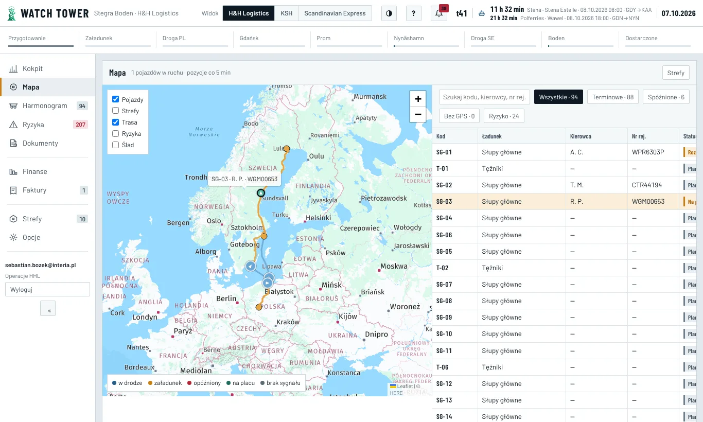
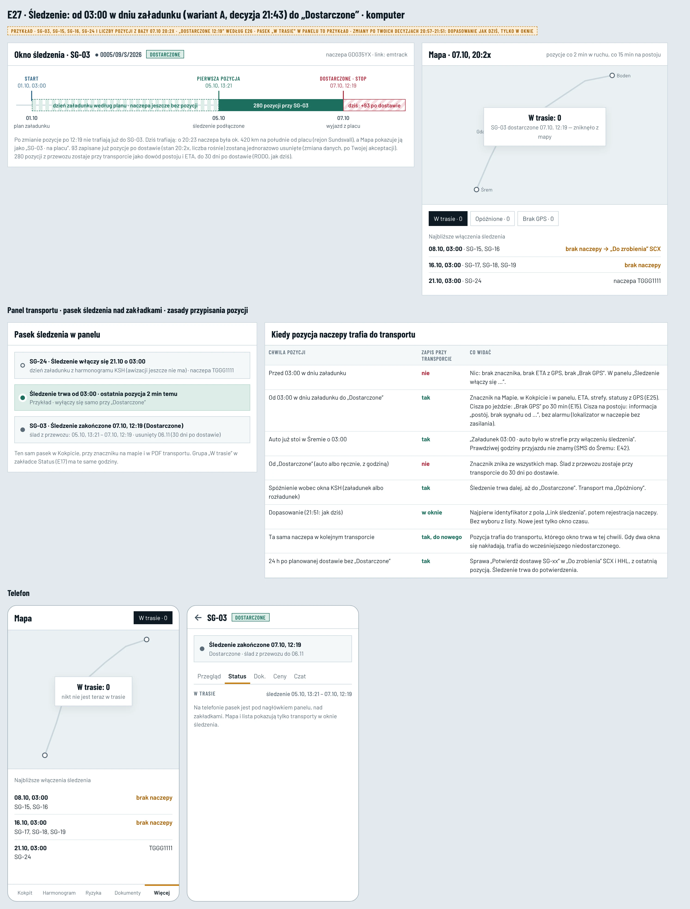
- Link RIO od podwykonawcy SCX jest (10:34). Odczyt automatyczny według E44 (sekcja niżej), w tym samym oknie śledzenia. Zmiana daty załadunku przez KSH albo plik dalej przesuwa start śledzenia.
Link RIO: pozycje auta podwykonawcy SCX w Watch Tower
Podwykonawca SCX nie ma emtrack. Daje link do strony RIO z ostatnią pozycją pojazdu. Watch Tower ma ten link czytać sam i traktować pozycje tak jak pozycje z emtrack.
Co pokazał Twój odczyt (DevTools, 09.10, 11:14)
- Twój odczytLink ma postać
public.position-sharing.rio.cloud/?id=<UUID>&secret=<SECRET>. Strona co kilkadziesiąt sekund pytaapi.position-sharing.rio.cloud/trackings/<UUID>/position?secret=<SECRET>i dostaje ok. 0,6 kB bez logowania. - Twój odczytOdpowiedź ma tylko ostatnią pozycję (czas, szerokość, długość), nazwę wpisaną przez podwykonawcę, rejestrację pojazdu z lokalizatorem i okres ważności linku (
start,end). Nie ma historii, prędkości, kierunku ani zapłonu. - Twój odczytRIO nie mówi, czy lokalizator jest w ciągniku, czy w naczepie. Przykład: rejestracja „WPR 8220T”, ostatnia pozycja 09.10, 05:21 w rejonie placu w Boden.
- RyzykoStrona publiczna RIO w pliku robots.txt zakazuje automatów, a API nie ma publicznej dokumentacji, więc format może się zmienić bez zapowiedzi. Zgodę SCX i podwykonawcy na automatyczny odczyt masz na piśmie (11:19).
- 10:34: od podwykonawcy SCX jest link RIO; innych linków ani dostępów nie będzie.
- 10:54: dane z linku mają trafiać do Watch Tower automatycznie.
- 11:19: zgoda SCX i podwykonawcy na automatyczny odczyt jest, na piśmie; na każdy przejazd nowy link; system sam rozpoznaje, gdzie jest lokalizator.
Rozwiązanie (paczka P4, po E27)
- Najpierw Cursor czyta regulamin RIO. Jeśli warunki wykluczają automatyczny odczyt, zatrzymuje tę część, wpisuje pytanie do Ciebie i robi resztę paczki.
- Link SCX wkleja link w polu „Link śledzenia” w awizacji. System rozpoznaje RIO, zapisuje identyfikator, a klucz linku tylko po stronie serwera, i od razu sprawdza link: „Link RIO działa · WPR 8220T · ważny do 09.10 06:00” albo błąd.
- Odczyt Co 2 minuty, tylko gdy transport jest w oknie śledzenia (03:00 w dniu załadunku → „Dostarczone”) i link jest ważny. Poza tym zero zapytań.
- Pozycje Zapis do tej samej tabeli co emtrack, bez powtórek; prędkość liczona z odległości i czasu. Dalej wszystko jak dla emtrack: mapa, statusy ze stref, ETA, „Brak GPS”, a od paczki SMS także SMS.
- Ważność 12 h przed końcem linku sprawa dla SCX „Link RIO wygasa — podaj nowy”. Nowy link zastępuje stary, ślad zostaje. Ten sam link w dwóch transportach → ostrzeżenie.
- Lokalizator Rejestracja z RIO porównana z awizacją: naczepa, ciągnik PL albo ciągnik SE. Brak zgodności → ostrzeżenie i sprawa dla SCX; pozycje zapisywane mimo to. W panelu: „Lokalizator: ciągnik WPR 8220T (RIO)”.
- Błędy Zły link → „Link RIO nieprawidłowy”, sprawa dla SCX. 3 błędy pod rząd albo zmieniony format → sprawa „Źródło danych nie działa · RIO” dla HHL; e-mail i push do Administratorów HHL od paczki P10a (stan źródeł E23).
- Bezpieczeństwo Klucz linku nigdy w logach, PDF, eksportach, e-mailach ani SMS. W aplikacji link widać jako „RIO · WPR 8220T · ••••” z przyciskiem „Otwórz w RIO”.
- Twoje „SCX zawsze musi dodać link śledzenia” (07.10) i E44 pkt 5 („pole wymagane przy każdej awizacji transportu podwykonawcy”) a kompletna awizacja w E32 pkt 6 bez linku: czy brak linku ma blokować awizację i „Gotowy”, a jeśli tylko u podwykonawcy — po czym go rozpoznać? Do Twojej odpowiedzi: jak w E32 pkt 6 — nie blokuje; SCX ma sprawę „Dodaj link śledzenia” otwartą do wklejenia linku (u podwykonawcy bez linku nie ma pozycji).
Bez nowej makiety: pole „Link śledzenia” jest w oknie Awizacja z makiety E32, a opis lokalizatora to jedna linia w panelu transportu. Bez zmian: naczepy SCX w emtrack; dwa linki PL i SE zawieszone (21:43).
ETA: co poszło źle przy SG-03, poprawka i kalibracja
Przez ostatnią dobę ETA SG-03 była najpierw o 12–13 h za późna, potem skoczyła o 12,5 h w 2 minuty, a na koniec przez 20 h stała w przeszłości. Główny błąd jest w liczeniu odpoczynku kierowcy. Nocny postój 14 h nie został rozpoznany, bo licznik postoju zeruje się co 45 min. Dlatego model do końca planował jeszcze 11 h odpoczynku. Na koniec naczepa stała na skraju strefy placu, ok. 9 m od jej granicy (poprawka 08.10, 01:28: odległość od strefy narysowanej 06.10 o 15:55; w chwili parkowania auto stało 756 m poza ówczesną strefą — E34), i nie wysyłała pozycji, a ETA bez nowej pozycji się nie przelicza. Z tą samą poprawką odpoczynku ETA o 08:31 wyniosłaby 12:20, przy prawdziwym przyjeździe 12:11.
Co się działo (odtworzenie z zapisanych pozycji)
- PrzebiegŚledzenie podłączono 05.10 o 13:21, gdy naczepa była już w Szwecji (62,56° N). Jazda trwała do 18:05. Potem był postój od 18:20 do 06.10 08:14, czyli 14 h, ok. 183 km w linii prostej przed placem. Kolejna jazda trwała od 08:27, a o 12:11 naczepa była 2,2 km od strefy placu. Od 12:25 stała na skraju strefy placu, ok. 9 m od jej granicy (poprawka 08.10, 01:28: odległość od strefy narysowanej 06.10 o 15:55; w chwili parkowania auto stało 756 m poza ówczesną strefą — E34), i czekała na dzień dostawy (07.10). Do strefy nie wjechała, więc status się nie zmienił. Wjazd na plac nastąpił 07.10 o 08:35.
positionsSG-03,load_events, strefa „Plac budowy Stegra Boden”; odstęp pozycji: 2 min w ruchu, 15 min na postoju. - Jak odtworzyłemDla każdej zapisanej pozycji policzyłem ETA tymi samymi funkcjami bazy, które działają na produkcji: postęp na korytarzu, stan kierowcy z GPS i harmonogram jazdy według UE. To odczyt, bez zapisu. Funkcje w wersji 0186 działają od 05.10, ok. 20:46. Przy każdej nowej pozycji baza przelicza ETA właśnie w ten sposób.
corridor_progress,h4_driver_state_from_gps(load, czas),h4_schedule_remaining(0122, 0185, 0186); spowolnienie SE ×1,00 (dziś). - A · nocPostój 14 h nie został uznany za odpoczynek. Dlatego ETA przesuwała się o godzinę co godzinę: 05.10 20:49 → 06.10 12:30, 06.10 04:04 → 19:45, 08:14 → 23:55. Przyczyna: przy postoju dłuższym niż 45 min funkcja liczy „przerwę” i zeruje licznik postoju. Licznik nie dochodzi więc nigdy do 9 ani 11 h. Przy pozycjach co 15 min odpoczynek dobowy jest nie do rozpoznania, a tryb ostrożny („może zaraz musi odpocząć 11 h”) trwa cały czas.
h4_driver_state_from_gps, 0186 l. 85–101 (elsif stop_h >= 0.75 … stop_h := 0); wynik:last_rest_endpusty w każdym punkcie. - B · jazda06.10 od 09:01 do 11:53 ETA wynosiła 07.10 00:07–00:59. To 12–13 h za późno, bo model nadal wstawiał 11 h odpoczynku.
- C · skokO 11:55 ETA spadła z 07.10 00:09 na 06.10 12:21. Gdy do placu zostało mniej niż 0,5 h jazdy, tryb ostrożny przestał wstawiać odpoczynek.
- D · koniecOstatnia pozycja przyszła 06.10 o 12:35, następna dopiero 07.10 o 08:33. Postojowa naczepa nie wysyła nowych pozycji. ETA liczy się tylko przy nowej pozycji, bo nie ma zadania cyklicznego. Przez 20 h stała więc na 06.10 12:37, czyli w przeszłości. W tym czasie wisiał alarm „Brak pozycji pojazdu WGM00653 od 15 min” (06.10 13:00 – 07.10 08:45). Alarm podaje ciągnik z odcinka PL, a GPS jest w naczepie. Po wjeździe ETA = 08:35, „w oknie · ± 0 min”. Twoja informacja 20:57: lokalizator w naczepie traci zasilanie po wyłączeniu zapłonu. Ostatnia pozycja 12:35 ma „zapłon: nie”, więc 20 h ciszy to postój, a nie awaria.
risk_signalsSILENT_VEHICLE;positions.ignition; brak crona dlarefresh_load_eta(triggery tylko w 0051 l. 233–275). - Fałszywe alarmyW nocy alarm ciszy odpalił się też przy pozycjach co 15 min (06.10 06:45), bo próg ciszy wynosi 15 min, czyli tyle, co odstęp pozycji na postoju. Pojawiły się też trzy „zjazdy z trasy z zezwolenia”: 4,5 km, 21,8 km i 3,6 km, choć auto jechało E4. Korytarz SE_E4 to 13 punktów połączonych liniami prostymi (… Umeå → Skellefteå → Piteå → Luleå → Boden). Odległość od niego w trasie dochodziła do 27,8 km.
corridor_polylinesSE_E4: 13 punktów, 871 km;SILENT_MIN= 15. - KalibracjaSG-03 przejechało 514 km korytarza w 7 h 26 min jazdy. Model liczył na to 10 h 2 min (17 h na 871 km). To jedna próbka, za mało, żeby zmienić parametr. Pomiar zapisuje się dopiero przy dacie dostawy, a SG-03 jej nie ma (status „Na placu”, E26). Dlatego dla SG-03 nie ma też pomiaru do kalibracji.
eta_segment_paramsSE_ROAD = 17 h ±20 %;eta_segment_observations(0123) — 0 wierszy dla SG-03. - Przed wyjazdem (A5)91 z 92 transportów przed wyjazdem ma ETA wyliczone z planu (02.10, przed regułą D-80). 5 z nich ma „opóźnienie”, a 4 alarmy „Opóźnienie 3960 min” / „5400 min” są otwarte. Mapa i Harmonogram pokazują przy „Planowany” ETA, np. „04.10 18:00”, a licznik „Spóźnione · 6” wlicza te transporty.
loads.eta_site,delay_minutes,eta_basis(kluczpre_loadtylko w 1);ScheduleView.tsxl. 970–971;mappers.tsl. 216–217.
Propozycja
- Odpoczynek Przerwa nie zeruje długości postoju. Postój dłuższy niż 45 min liczy się jako trwający odpoczynek: jego koniec = początek postoju + 11 h (9 h dla skróconego), a nie „teraz + 11 h”. Symulacja na SG-03: w nocy ETA stoi na 06.10 ok. 09:16, a o 08:31 wynosi 12:20 przy prawdziwym przyjeździe 12:11. Tryb ostrożny zostaje tylko do pierwszego rozpoznanego odpoczynku albo promu (D-9).
- Czeka przed placem Nowy stan przy transporcie, a nie status: postój ≥ 30 min w strefie 50 km przed placem albo na skraju strefy placu (także przed Śremem), zanim zacznie się okno dostawy. Zamiast ETA widać „Na miejscu od 12:25 · czeka na skraju placu · okno 07.10”. To łączy się z SMS w E42.
- Przeliczanie Co 5 min dla transportów w oknie śledzenia (E27), także bez nowej pozycji. Gdy pozycji brak, ETA pokazuje wiek: „ostatnia pozycja 12:35 · naczepa stoi”. Ponowne przeliczenie także po zmianie okna dostawy i po pozycji AIS promu.
- Cisza GPS W ruchu alarm po 30 min, czyli powyżej odstępu pozycji. Na postoju tylko informacja po 3 h: „postój, brak sygnału od 12:35”. To normalne przy lokalizatorze w naczepie, który po wyłączeniu zapłonu traci zasilanie (20:57). Ruch i postój rozpoznaje się po prędkości, nie po znaczniku zapłonu (E27). Alarm podaje rejestrację pojazdu z lokalizatorem. Progi są w Opcjach (E12).
- Korytarz Prawdziwy przebieg dróg E4 i E22: jednorazowo z OSM albo HERE, zapisany w bazie. Postęp i „zjazd z trasy” liczone od drogi, a nie od linii prostych. Na SG-03 nie powinno być żadnego fałszywego zjazdu.
- Przed wyjazdem Wszędzie „–” do wyjazdu ze strefy w Śremie (D-80), także w Harmonogramie, na Mapie i w Kokpicie. Obok widać „plan dostawy 07.10 (KSH)”. „Opóźnione” liczą tylko transporty po wyjeździe. Jednorazowo trzeba wyczyścić ETA i opóźnienie 91 transportów i zamknąć 4 alarmy. To zmiana danych, więc Cursor zrobi ją po Twojej akceptacji.
- Kalibracja Każda dostawa z GPS zapisuje pomiar: czas jazdy na odcinku, odpoczynki i błąd ETA w 3 punktach (24 h, 6 h i 1 h przed przyjazdem). Po 5 dostawach Opcje pokazują administratorowi HHL propozycję nowych godzin z rozrzutem, do zatwierdzenia jednym przyciskiem. Bez zatwierdzenia nic się nie zmienia.
- Wygląd ETA z pasmem i słowem: „06.10, 12:20 · ± 46 min · Średnia”. Pod „Dlaczego tyle” jedna linia: jazda, odpoczynek (rozpoznany albo zakładany) i przerwy. Prom: „czeka na pozycję AIS” albo ETA z promu. Na telefonie w liście jest jedna linia, szczegóły po stuknięciu.
- Test SG-03 odtworzone po poprawce: brak skoku większego niż 1 h między pozycjami w jeździe, błąd w chwili wyjazdu ≤ 30 min, 0 fałszywych zjazdów, 0 alarmów ciszy w nocy, od 12:25 stan „czeka przed placem” (ok. 9 m od strefy). Transporty przed wyjazdem: „–” wszędzie.
Dziś i po zmianie
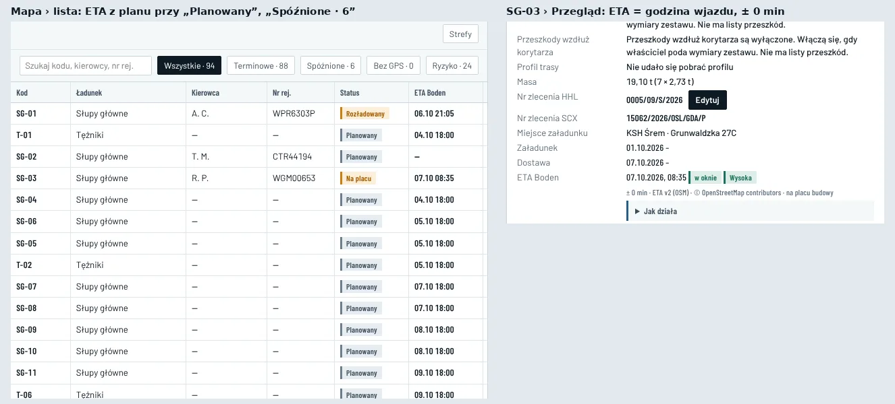
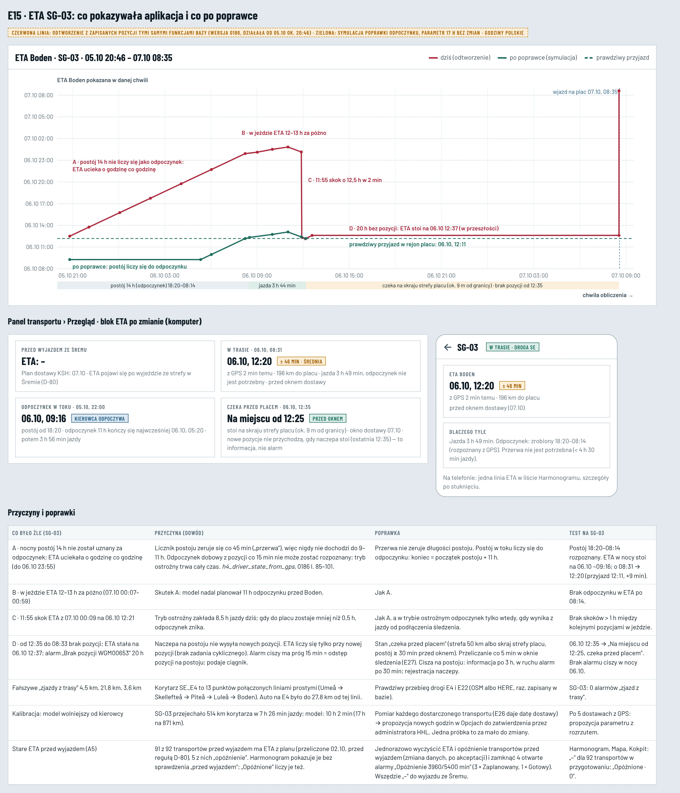
Mapa aplikacji: każde menu, sekcja i prawy panel
Spis z kodu (src/lib/permissions.ts, prodFacade.ts, LoadDrawer.tsx): co każda firma widzi dziś i który etap to przebudowuje. Co która rola ma móc robić w każdym miejscu, ustala E9 i każdy kolejny etap się do tego stosuje.
| Miejsce | HHL Adm. | HHL Oper. | KSH | SCX | Etapy |
|---|---|---|---|---|---|
| Kokpit | ✓ | ✓ | ✓ | ✓ | E1, E8, E9 |
| Mapa | ✓ | ✓ | ✓ | ✓ | E1, E24, E27, E29 |
| Harmonogram · Transporty | ✓ | ✓ | ✓ | ✓ | E8, E20, E28, E30 |
| Harmonogram · Rejsy | ✓ | ✓ | do sprawdzenia | do sprawdzenia | E30 |
| Ryzyka | ✓ | ✓ | ✓ | ✓ | E7 |
| Dokumenty | ✓ | ✓ | ✓ | ✓ | E8, E31 |
| Finanse | marża | marża | przychód | koszt | E3, E16, E27 |
| Faktury | ✓ | ✓ | ✓ | ✓ | E4, E4b |
| Automatyzacje | ✓ | — | — | — | E35 |
| Strefy | ✓ | ✓ | — | — | E34 |
| Opcje | ✓ | ✓ (z nagłówkiem „HHL · ADMIN”) | — | — | E11, E12 |
| Ustawienia | — | — | ✓ | ✓ | E12 („Dla mnie”) |
| Zadania | — | — | — | ✓ | E36 |
| Prawy panel · Przegląd | ✓ | ✓ | ✓ | ✓ | E1, E6, E15, E32 |
| Prawy panel · Status | ✓ | ✓ | ✓ | ✓ | E17, E25, E26 |
| Prawy panel · Dokumenty | ✓ | ✓ | ✓ | ✓ | E31 |
| Prawy panel · Ceny | wszystko | wszystko | przychód | koszt | E3, E33 |
| Prawy panel · Ustalenia | ✓ | ✓ | ✓ | ✓ | E17 |
| Prawy panel · Historia | ✓ | ✓ | ✓ | ✓ | E6, E17 |
| Pasek etapów u góry | ✓ | ✓ | ✓ | ✓ | E28 |
| Pasek górny: dzwonek, prom, widok firmy, pomoc | ✓ | ✓ | ✓ | ✓ | E5, E13, E37 |
| Aplikacja kierowcy (link) | wyłączona z użycia wcześniejszymi decyzjami | nie zmieniamy (16:48) | |||
| Logowanie, zaproszenie, Moje konto | ✓ | ✓ | ✓ | ✓ | E6, E22, E37 |
„✓” = widać dziś według kodu. Liczniki w menu też trafiają do E9: Faktury pokazują „1”, gdy nie ma żadnej faktury do sprawdzenia (Nav.tsx: return n ? { n } : { n: 1 }).
SMS przed załadunkiem i rozładunkiem: 4 rodzaje, bez fałszywych
Dziś SMS do Śremu i Boden nie działają w praktyce, a gdyby działały, przy SG-03 wprowadziłyby w błąd. Wpisana jest 1 osoba z 4 (Twój numer w Śremie). Lista Boden jest pusta, więc SG-03 nie dostało żadnego SMS. Wysyłka poza numery testowe jest wyłączona. Gdyby Boden miał odbiorców, o 11:45 06.10 przyszedłby „przyjazd 12:45”, bez słowa o tym, że dostawa jest dopiero 07.10. Potem auto stało 20 h przy wjeździe i nikt by o tym nie wiedział. Proponuję 4 rodzaje SMS: przyjazd za ok. 60 min, wcześniejszy przyjazd, auto czeka i wjazd. Każdy ma warunki, które wykluczają fałszywe wiadomości.
- Zostają wszystkie 4 rodzaje SMS (A–D). B tylko dla Boden.
- Cisza nocna 20:00–06:00 w obu miejscach. SMS z tych godzin wychodzi o 06:00, jeśli nadal jest aktualny.
- Wysyłka do odbiorców: najpierw 3 transporty w trybie testowym (wszystko na Twój numer), potem włączasz sam w Opcjach. Odbiorców wpisujesz w Opcjach.
Fakty
- OdbiorcyWpisana jest 1 osoba z 4: Śrem, osoba 1, Twój numer kończący się na 907. Boden ma 0 osób. Przy każdej osobie jest wybór języka PL / SE. Konto Operacje HHL widzi tę sekcję z polami i przyciskami „Zapisz”, a nad Opcjami ma napis „HHL · ADMIN”. Według decyzji z 19:11 Operacje mają tylko podgląd Opcji.
sms_zone_recipients; Opcje › Odbiorcy SMS i strefy, zrzut 07.10 21:57 (konto testowe Operacje HHL). - Wysyłka wyłączonaPrzełącznik wysyłki zewnętrznej jest wyłączony, więc SMS wychodzą tylko na numery testowe (dziś 1: …907). Dla SG-03 działa przekierowanie wszystkiego na Twój numer i e-mail (od 05.10). Kiedykolwiek wyszły tylko SMS testowe z 01.10. Jedyne SMS „przy zbliżaniu” to 2 próby z 05.10 13:17 i 13:22 o treści „TEST, rej. GD035YX, przyjazd —”, czyli bez godziny. Obie wygasły bez wysłania.
EXTERNAL_MESSAGING= wyłączony;pilot_notify_redirectSG-03;sms_outboxZONE_APPROACH ×2 EXPIRED (PILOT_DRY_SMS). - Co dziś wysyłaDo miejsc idą 2 rodzaje SMS. Pierwszy to „przy zbliżaniu”, gdy do miejsca zostało ≤ 60 min jazdy. Liczy go uproszczony wzór, w Boden 17 h × pozostała część korytarza, a w Śremie odległość w linii prostej. Wzór nie sprawdza wieku pozycji, statusu, daty planu ani okna dostawy. Drugi to „wjazd w strefę” załadunku w Polsce albo placu w Szwecji. Wjazd w bufor 50 km nie wysyła SMS. Jedna wiadomość przypada na transport × miejsce × pole osoby, a nie na numer. Limit to 150 dziennie. 0158 l. 124–154 (
sms_zone_on_geofence_enter), l. 156–292 (yard_drive_quote,sms_ksh_1h_consider); szablon 0161: „{kto}, rej. {rej}, przyjazd {eta}”, bez nazwy miejsca. - SG-03 w Boden06.10 o 11:45 do placu zostało 60 min według wzoru, więc SMS miałby treść „przyjazd 12:45”. O 12:25 naczepa była 26 m od strefy placu, a o 12:35 8,7 m (poprawka 08.10, 01:28: odległość od strefy narysowanej 06.10 o 15:55; w chwili parkowania auto stało 756 m poza ówczesną strefą — E34), z prędkością 0 i „zapłon: nie”. To ostatnia pozycja aż do 07.10 08:33. Wjazd na plac nastąpił 07.10 o 08:35. Plan dostawy to 07.10, bez godzin. Wiadomość z 11:45 nie mówiłaby, że to dzień przed planem, a o 20 h oczekiwania nie wiedziałby nikt.
positionsSG-03 06–07.10;corridor_progress('SE_E4')11:45: pozostało 0,0588 × 871 km; strefa „Plac budowy Stegra Boden”;loads.plan_delivery_date= 07.10. - Postój bez sygnałuLokalizator w naczepie po wyłączeniu zapłonu nie ma zasilania (Twoja informacja z 20:57). SMS o czekającym aucie nie może więc wymagać nowych pozycji. Musi wynikać z ostatniej pozycji z prędkością 0 i ciszy po niej.
- ŚremŚledzenie startuje o 03:00 w dniu załadunku (E27, 21:43). Auto, które przyjedzie wieczorem dzień wcześniej, system zobaczy dopiero o 03:00, od razu w strefie. Danych z przyjazdów do Śremu nie ma, bo SG-03 podłączono w Szwecji.
- Awaria SMSGdy SMS nie wyjdzie w ciągu 10 min, idzie e-mail zastępczy o treści dla kierowcy („Zadzwoń do kierowcy”), także przy SMS do Śremu i Boden. Bramka działa: 1 aktywny telefon, ostatni sygnał 21:57, dziś 0 / 150.
sms_outbox.fallback_at;sms_devices; zrzut 21:57.
Propozycja
- A · przyjazd „Auto będzie ok. 12:45 (za ok. 60 min)”. Wychodzi, gdy ETA z E15 do miejsca wynosi ≤ 60 min w dniu planu. Ostatnia pozycja musi mieć ≤ 10 min, a auto musi jechać. Śrem: tylko przed „Załadunek”. Boden: tylko po promie. Gdy ETA przesunie się o ponad 30 min później, wychodzi jedna korekta.
- B · wcześniej „…ok. 12:45, dzień przed planem (dostawa 07.10)”. Te same warunki, ale ETA wypada przed dniem planu dostawy. Tylko Boden. W Śremie przed 03:00 śledzenie jest wyłączone.
- C · czeka „Auto stoi przy placu od 12:35. Plan dostawy: 07.10”. Wychodzi po 30 min bez ruchu w promieniu 2 km od strefy, przed wjazdem. W Śremie także wtedy, gdy auto jest w strefie przy starcie śledzenia o 03:00. W dniu planu o 06:00 wychodzi jedno przypomnienie, jeśli auto nadal czeka. Łączy się ze stanem „czeka przed placem” z E15.
- D · wjazd „Auto wjechało na plac o 08:35”. Wychodzi jak dziś, ale tylko przy statusie zgodnym z miejscem.
- Wspólne Tylko w oknie śledzenia (E27). Każdy SMS raz na transport × miejsce × rodzaj × numer, więc zmiana osoby w Opcjach nie powtarza wysyłki. Cisza nocna 20:00–06:00 (22:15). Po „Dostarczone” i „Anulowany” nic nie wychodzi. W treści jest kod „SG-03” (jak dla KSH, E41) i nazwa miejsca. Treść bez polskich znaków, do 160 znaków. Teksty zmienia administrator w E43.
- Odbiorcy Opcje › Powiadomienia › SMS przy miejscach: 2 osoby w Śremie i 2 w Boden (decyzja 29.09). Osobę wybiera się z użytkowników (imię i telefon z E6) albo wpisuje ręcznie. Treść tylko po polsku, także dla Boden (E43, 22:42), więc wybór języka przy osobie znika. Przy każdej osobie zaznacza się rodzaje A–D. Pusta lista daje ostrzeżenie „SMS dla Boden nie wyjdą”. Zmienia tylko Administrator HHL.
- Włączenie Przełącznik „Wysyłka do odbiorców” jest widoczny w Opcjach. W trybie testowym wszystko idzie na Twój numer. Włącza go tylko Administrator HHL, po Twojej decyzji. Wysyłka do ludzi to Twoja decyzja według listy STOP.
- Ślad i awaria Każdy SMS ma wpis w Historii transportu (E17) z treścią i stanem doręczenia. Gdy SMS nie wyjdzie w 10 min, Operacje HHL dostają e-mail „SMS do Boden (2 osoby) niewysłany: [treść]”, a w Stanie systemu pojawia się wpis.
- Test SG-03 odtworzone z zapisanych pozycji daje: 11:45 B, 13:05 C, 07.10 06:00 C (przypomnienie), 08:35 D, a po 12:19 nic. Pozycja starsza niż 10 min nie daje A. Transport poza oknem nic nie dostaje. Druga osoba wpisana później nie dostaje starych SMS. W trybie testowym wszystko idzie tylko na …907.
Dziś i po zmianie
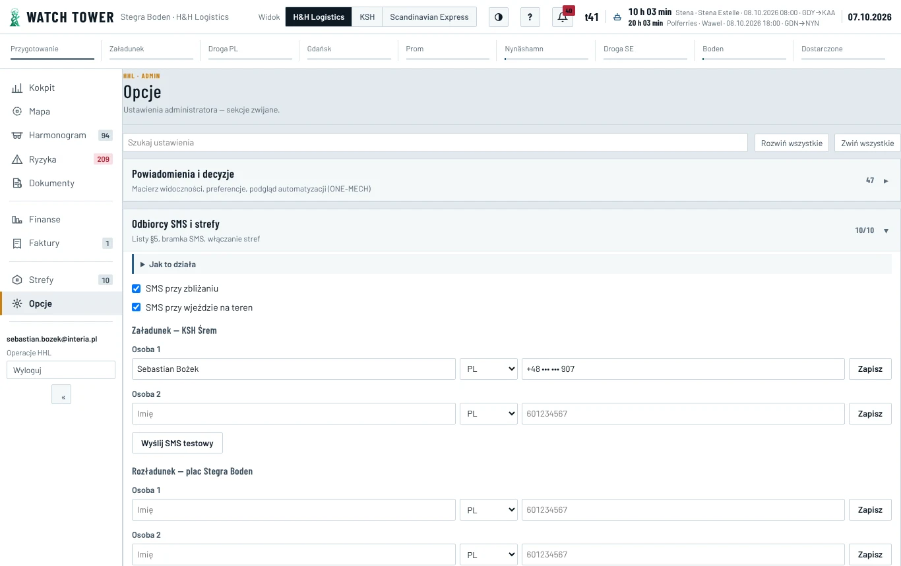
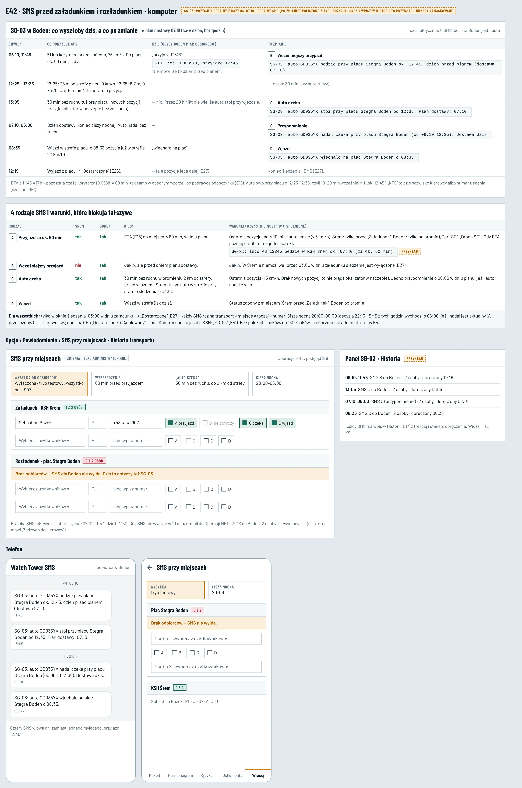
Treści SMS i e-maili: administrator zmienia je sam, dane wstawia przyciskami
Dziś żadnej treści nie da się zmienić bez programisty. SMS są zapisane w bazie, a e-maile i wpisy w dzwonku w kodzie aplikacji. W Opcjach nie ma ekranu z treściami. Do tego część tekstów jest nieczytelna. Przykładowy e-mail z 05.10 miał temat „Zmiana wagi ryzyka (krytyczna): f34bf056: brak awizacji przed załadunkiem”, a „f34bf056” to wewnętrzny numer SG-11. Proponuję w Opcjach jeden ekran „Treści wiadomości”. Tekst pisze się normalnie, a dane z transportu wstawia przyciskami jako klocki, bez znaczników. Podgląd od razu pokazuje wiadomość na prawdziwym transporcie.
- Języki: tylko po polsku. Każda wiadomość ma jedną, polską treść. Dostaje ją każdy odbiorca, także w Boden. Wybór PL / SE przy odbiorcach SMS (E42) znika.
- E-maile logowania mają być edytowalne na tym samym ekranie: zaproszenie, reset hasła, link logowania, potwierdzenie adresu i zmiana e-maila.
Fakty
- SMS w bazie11 rodzajów SMS, każdy po polsku, angielsku i szwedzku, zapisanych na stałe w funkcji bazy. Polskie litery są zamieniane, a tekst dłuższy niż 160 znaków jest obcinany bez ostrzeżenia. Pusta dana daje puste miejsce. Stąd „przyjazd —” w próbach z 05.10. 7 z 11 rodzajów to SMS do kierowców, które nie działają (link kierowcy wyłączony, decyzja 16:48).
sms_render(0161 l. 5–56:left(t, 160),sms_strip_pl). - E-maile w kodzie28 rodzajów e-maili i wpisów w dzwonku, w trzech językach, zapisanych w jednym pliku kodu. Ta sama treść trafia do e-maila i do dzwonka. Stopka to „— Tower · H&H Logistics” i link. Część wiadomości nie ma treści, tylko temat (np. „Wjazd do strefy …”, „Status: … → …”).
supabase/functions/_shared/notifyTemplates.ts(renderNoticel. 99–380,renderEmaill. 392–405); dzwonek:src/data/mappers.tsl. 628. - Numer zamiast koduE-mail z 05.10 12:07 miał temat „Zmiana wagi ryzyka (krytyczna): f34bf056: brak awizacji przed załadunkiem” i treść „Waga: krytyczna.”. Gdy transport nie ma numeru zlecenia, ryzyko dostaje pierwsze 8 znaków wewnętrznego numeru, a f34bf056 to SG-11. Łączy się to z E41.
notificationsEMAIL RISK_SEVERITY 05.10 12:07; 0143 l. 401:coalesce(r.order_no, left(r.id::text, 8)). - Co wychodziłoWysłane e-maile zapisane w tabeli powiadomień:
- nowe ryzyko — 297;
- zmiana wagi — 52;
- SMS niedoręczony — 20;
- SMS do kierowcy niewysłany — 11;
- bramka milczy — 7;
- ryzyko zamknięte — 5;
- do decyzji — 1;
- krytyczna data — 1.
notificationschannel EMAIL, status SENT, 07.10 22:1x. - Brak ekranuW Opcjach nie ma sekcji z treściami wiadomości. Słowo „szablon” w aplikacji dotyczy tylko układu kolumn przy imporcie harmonogramu.
OptionsView.tsx;import_column_templates(0077). - E-maile logowaniaWysyła je system logowania Supabase przez Resend (od 26.09). Tematy i treści 5 e-maili ustawia skrypt przez API Supabase: zaproszenie „Watch Tower — zaproszenie” z treścią „Zaproszenie do systemu: Dołącz”, reset hasła „Watch Tower — reset hasła” z treścią „Reset hasła: Ustaw hasło”, a do tego link logowania, potwierdzenie adresu i zmiana e-maila. Skrypt wymaga klucza dostępu do konta Supabase, więc administrator nie zmieni tych treści w aplikacji. Co jest dziś ustawione na produkcji, nie sprawdziłem, bo nie mam tego klucza.
scripts/set-auth-mailer-watchtower.mjsl. 30–47;docs/handover/POSTEP.mdW-BK2-1, PR3;supabase/config.tomll. 245–254 (zakomentowane).
Propozycja
- Jeden ekran Opcje › Powiadomienia › Treści wiadomości. Na liście są 4 SMS z E42, 28 rodzajów e-maili i wpisów w dzwonku oraz 5 e-maili logowania, w grupach: Ryzyka i decyzje, Transport, Faktury, System, Logowanie. Przy każdej pozycji widać „domyślna” albo „zmieniono [data] · [osoba]”. Kto co dostaje i jakim kanałem, ustala się w „Kto co dostaje” (E11).
- Bez znaczników Tekst wpisuje się normalnie. Dane z transportu dodaje się przyciskiem „Wstaw dane”, np. Kod transportu, Rejestracja naczepy, Miejsce, Godzina, Data planu, Link do transportu. Każda dana to klocek, którego nie da się popsuć, a Backspace usuwa cały klocek. Przyciski zależą od wiadomości, np. przy fakturze są Numer faktury, Kwota i Termin. E-mail ma Temat i Treść, a temat jest też tytułem w dzwonku.
- Podgląd Pod edytorem jest wiadomość wygenerowana na wybranym prawdziwym transporcie, z danymi z bazy. Kod transportu wygląda tak, jak widzi go odbiorca w swojej firmie (E41).
- SMS Licznik „79 / 160 znaków”. Polskie litery zamieniają się automatycznie, jak dziś. Powyżej 160 znaków zapisu nie ma, bo inaczej SMS zostałby obcięty bez ostrzeżenia.
- Brak danej W miejscu brakującej danej pojawia się „—”, a wiadomość i tak wychodzi. Podgląd od razu to pokazuje.
- Tylko po polsku Jedna treść każdej wiadomości, bez zakładek języków. Wersje angielskie i szwedzkie z kodu przestają być używane. Język aplikacji (menu, ekrany) zostaje bez zmian.
- E-maile logowania Zaproszenie, reset hasła, link logowania, potwierdzenie adresu i zmiana e-maila są w grupie „Logowanie”. Klocki: Imię i nazwisko, Firma, Rodzaj konta, Kto zaprasza, Ważność linku. Przycisk z linkiem jest zawsze w treści i nie da się go usunąć. Bez niego zapis jest zablokowany. Klocki wstawiają dane bez odmiany, np. „Anna Nowak”, więc tekst wokół pisze się tak, żeby pasował.
- Bezpiecznie Do dyspozycji są przyciski „Wyślij próbny SMS na mój numer” lub „… e-mail na mój adres” oraz „Przywróć domyślną treść”. Każdy zapis trafia do Historii zmian (kto, kiedy, było → jest). Zmienia tylko Administrator HHL, Operacje HHL mają podgląd, a KSH i SCX nie widzą tego ekranu.
- Nowe domyślne Zamiast wewnętrznego numeru jest kod transportu (E41), w SMS jest nazwa miejsca (E42), a e-mail o niewysłanym SMS do Śremu lub Boden nie mówi „Zadzwoń do kierowcy”. E-maile mają w treści konkret (data planu, waga, kwota) i link do transportu.
- Dla Cursora Treści trafiają do tabeli w bazie: rodzaj, kanał, temat, treść, kto i kiedy. SMS, e-maile i dzwonek czytają z niej, a gdy nic tam nie ma, biorą treść domyślną z kodu. Klocki są zapisane jako znaczniki, których administrator nie widzi. E-maile logowania: hak wysyłki e-maili Supabase Auth („Send Email Hook”) wywołuje funkcję, która bierze treść z tej tabeli i wysyła przez Resend. Link logowania budowany jest tak jak dziś, żeby logowanie działało bez zmian. Gdy treści brak albo jest błąd, wychodzi treść domyślna. Włączenie haka wymaga klucza dostępu do konta Supabase, tak jak dzisiejszy skrypt.
- Test Zmiana treści C widoczna w następnym SMS bez wdrożenia. 161 znaków nie da się zapisać. Brak naczepy daje „—”. Próbny SMS dochodzi tylko na numer administratora. Operacje HHL nie mogą zapisać. „Przywróć domyślną” wraca do tekstu z kodu. Każda zmiana ma wpis w Historii zmian. Na bazie TEST: zaproszenie, reset hasła, link logowania i zmiana e-maila dochodzą ze zmienioną treścią i link działa. Treści bez przycisku z linkiem nie da się zapisać.
Dziś i po zmianie
Mapa: promy po liniach HERE, bez kropek, ostatni odcinek jak SG-03, auta na promie razem
Linie promów w Watch Tower są rysowane ręcznie i biegną obok linii promów na podkładzie HERE. Nie da się ich ukryć, podobnie jak 4 pomarańczowych kropek, bo w kodzie nie mają checkboxa. Trasa w Szwecji kończy się na kropce „Stalverket 20”. To 591 m przed strefą placu, w strefie przemysłowej, którą SG-03 w ogóle nie jechało. SG-03 pojechało przez centrum Boden, drogami 356 i 383, i dojechało do placu od północy. Na promie każde auto ma osobny znacznik w miejscu swojej ostatniej pozycji.
Fakty
- CheckboxyMapa ma checkboxy Pojazdy, Strefy, Trasa, Ryzyka i Ślad. Linie promów i kropki są zawsze włączone, bez checkboxa. Po odznaczeniu „Trasa” znika tylko trasa drogowa, co widać na zrzucie z 22:2x. Statki z AIS też są widoczne zawsze.
MapView.tsxl. 16–22;useTowerStore.tsl. 396–404 (ferry: true,poi: true);CorridorMap.tsxl. 248–254. - Linie promówLinie promów są wpisane ręcznie: Gdańsk–Nynäshamn ma 9 punktów, Gdynia–Karlskrona 7. Rysuje je każda mapa. Na podkładzie HERE od przybliżenia ok. 9 widać przerywane linie promów, a linie Watch Tower biegną obok nich, np. przy Helu i przy wyjściu z Nynäshamn.
supabase/functions/_shared/map/draw.tsl. 366–386;mapPool.tsl. 70–73; podkład HERElogistics.day07.10. - KropkiNa każdej mapie są 4 kropki: KSH Śrem, Polferries Gdańsk, Terminal Nynäshamn oraz „Stegra · Stalverket 20, Boden”.
mapPool.tsl. 53, 79–83;status.tsl. 39–63 (SITES). - Ostatni odcinekTrasa drogowa z HERE (Nynäshamn–Boden i Karlskrona–Boden, pobrana 06.10 o 09:40) kończy się w punkcie „Stalverket 20” (65,80539 / 21,75914). To 591 m od strefy placu, która jest kołem o promieniu ok. 1 km. Od Luleåvägen trasa skręca w strefę przemysłową, a ten odcinek ma ok. 3,6 km. W tym samym punkcie kończy się korytarz, z którego liczona jest ETA.
here_road_geometrySE-NYN (12 547 pkt), SE-KAA (18 545 pkt);here-roads/index.tsl. 13–15;corridor_polylinesSE_E4, SE_E22. - SG-03 w BodenPrzejazd 06.10 według pozycji co 2 min:
- 12:09 — Luleåvägen;
- 12:15 — centrum Boden;
- dalej Moråsleden, a o 12:20 droga 356;
- 12:21 — droga 383 przy Mjösjön;
- 12:25–12:35 — na południe, do północnego skraju strefy.
positionsSG-03; odległości liczone wzorem na odległość po kuli ziemskiej. - Na promieKażdy znacznik stoi na ostatniej pozycji GPS swojego transportu, bez łączenia. Statki z AIS są osobną warstwą. Transport ma przypisany rejs. Jeśli na promie zapłon jest wyłączony, lokalizator w naczepie nie wysyła pozycji (Twoja informacja z 20:57), więc znacznik zostaje w porcie. Danych z rejsu z autem nie ma, bo SG-03 podłączono dopiero w Szwecji.
vehicleMarkers.tsl. 31–42;loads.sailing_id; warstwa AISCorridorMap.tsxl. 362–381.
Propozycja
- Promy z HERE Linie promów Gdańsk → Nynäshamn i Gdynia → Karlskrona brane z HERE Routing jako odcinek „prom”, czyli z tego samego źródła co podkład. Zapisane obok tras drogowych i odświeżane razem z nimi. Ręczne linie znikają. Jeśli HERE nie zwróci odcinka promowego, wracam do Ciebie przed budową.
- Checkbox „Trasa” ukrywa drogę i prom razem, tak samo. Statki z AIS idą pod „Pojazdy” (potwierdzone 22:42).
- Bez kropek 4 kropki znikają ze wszystkich map w aplikacji. Miejsca widać jako strefy pod checkboxem „Strefy”.
- Ostatni odcinek Koniec trasy w miejscu rozładunku SG-03 (65,80638 / 21,80238). Dojazd jak SG-03: HERE z punktem pośrednim na drodze 383 (Mjösjön) i wjazdem od północy (65,82178 / 21,78812). Ostatnie 2–3 km, których HERE może nie znać (na podkładzie jest tam tylko cienka linia), rysowane z zapisanych pozycji SG-03. Ten sam koniec dla trasy przez Nynäshamn i przez Karlskronę oraz dla korytarza ETA (E15).
- Auta na promie Przy statusie „Na promie” auta tego samego rejsu są jednym znacznikiem na pozycji statku z AIS, z liczbą aut. Po najechaniu widać rejs i kody (E41), a po kliknięciu listę transportów, na telefonie od dołu ekranu. Bez AIS znacznik stoi na ostatniej pozycji z dopiskiem „brak AIS”. Po zejściu z promu znów są osobne znaczniki. Tak samo w Kokpicie.
- Test Linia promu nie odchodzi od linii HERE o więcej niż 100 m przy obu portach. Odznaczenie „Trasa” chowa drogę i prom. Na mapie nie ma kropek. Każda pozycja SG-03 z 12:09–12:35 i 08:33–08:35 leży nie dalej niż 100 m od trasy. Trzy transporty jednego rejsu dają jeden znacznik „3”.
Dziś i po zmianie
- Grupowanie (13:09): więcej niż 1 auto w jednym miejscu (strefa załadunku, portu PL, portu SE, placu) → jeden znacznik z liczbą, jak na promie, na Mapie i w Kokpicie. Opis dopisany w makiecie; rysunki map bez zmian. Pytanie W28.
Finanse: jedna marża wszędzie, EUR domyślnie, kurs NBP z bazy, każda firma widzi swoją stronę
Ta sama marża ma dziś sześć różnych wartości. W bazie, dla 86 transportów z ceną, marża wynosi 32 891,26 EUR, czyli 4,77% przychodu. Kokpit pokazuje 144 392,63 PLN i 4,4%. Finanse pokazują 0,00 PLN u góry i 1724,82 PLN niżej. Panel SG-01 pokazuje 1726,59 PLN. Przyczyny są trzy. Kwoty w PLN przelicza stały kurs 4,39 z makiety. Górna część Finansów liczy tylko status, którego nie ma żaden transport. Kokpit liczy średnią procentów. Do tego 13 z 15 kont widzi PLN, choć ustalenie z 24.09 mówi EUR. Kurs NBP jest pobierany poprawnie, ale żaden ekran z kwotami go nie używa.
- Flaga marży: wariant B — próg liczbowy ustawiany w Opcjach. Jeden próg dla listy i koloru. Do czasu wpisania progu flaga jest wyłączona. Wartości progu jeszcze nie podałeś — wpiszesz ją w Opcjach albo podasz mnie.
- PLN przed rozładunkiem: wariant A — ostatnia tabela NBP z dopiskiem „kurs bieżący”, po rozładunku kurs z dnia roboczego przed rozładunkiem na stałe.
- 08.10, 12:58 — próg marży: 4 %. Marża poniżej 4 % trafia na listę „Poniżej progu marży” i jest czerwona. Dziś (sprawdzone 12:59): 86 transportów z ceną, marża 4,76–4,77 %, poniżej progu 0.
Fakty
- Baza94 transporty. 86 ma cenę, a 8 jej nie ma (KR-08 – KR-15, bez daty, decyzja 12:23). Przychód 690 185,16 EUR, koszt 657 293,90 EUR, marża 32 891,26 EUR, czyli 4,77% przychodu (5,00% kosztu). Każdy transport ma 4,76–4,77%. Etap rozliczenia: 85 to prognoza, 1 to realizacja (SG-01), faktur 0. Wszystkie ceny są w EUR.
load_cost,load_revenue(pricing_tier, total_amount); 07.10 22:3x. - Kurs stałyKażda kwota w PLN, w Kokpicie, Harmonogramie, Finansach, Fakturach i panelu, jest liczona stałym kursem 4,39 (tabela 186/A z 24.09). To kurs demonstracyjny z makiety, a w produkcji jest używany do dziś. Kokpit: 32 891,26 × 4,39 = 144 392,63 PLN.
src/lib/money/demoFx.ts(DEMO_FX,formatAppMoney); użycia:DashboardView.tsxl. 212, 262–269,FinanceView.tsxl. 23,ScheduleView.tsxl. 984–996,InvoicesView.tsxl. 48,LoadDrawer.tsxl. 696–747. - Finanse u góry 0Sekcja „Od przychodu do marży” i nagłówek „0 zrealizowanych” liczą tylko transporty ze statusem „DELIVERED” w aplikacji. Takiego nie ma żaden: SG-01 ma „Rozładowany”. To samo dotyczy KSH („Do zapłaty narastająco” = 0) i SCX („Należność narastająco” = 0).
FinanceView.tsxl. 29–36; mapowanie UNLOADED → UNLOADING:src/data/mappers.tsl. 36. - Prognoza = 0 PLN„Marża prognozowana · 85” to 0,00 PLN, a „Marża łączna · 86” to 1724,82 PLN, czyli sam SG-01. W PLN suma bierze kurs NBP transportu, a prognozy go nie mają. W EUR ta sama suma dałaby 32 891,26.
loadMoney.tsl. 268–280 (marginSplit);engine.tsl. 488–500. - Kokpit 4,4%Kokpit liczy średnią procentów ze wszystkich 94 transportów, a 8 bez ceny liczy jako 0%. Wychodzi 4,36%, a powinno być 4,77%.
corridorKpis.tsl. 79–80. - Flaga marżyLista „Poniżej progu marży (<12%)” obejmuje wszystkie 86 transportów. Tabela według rodzaju i panel „Ceny” barwią marżę na czerwono poniżej 18%. Próg 12% jest w dokumentacji opisany jako „reguła makiety, potwierdzić z biznesem”. Rejestr decyzji go nie zawiera.
FinanceView.tsxl. 265 i 284 (lista);LoadDrawer.tsxl. 746;mappers.tsl. 536;docs/handover/03_PARAMETRY_BIZNESOWE.mdl. 157, 196. - WalutaTylko 2 z 15 kont (oba HHL Administrator) mają zapisane ustawienia, oba z EUR. Gdy wpisu brak, aplikacja przyjmuje PLN (domyślna wartość w aplikacji), choć baza ma domyślnie EUR. Konto testowe widzi PLN.
user_preferences(2 wiersze);useTowerStore.tsl. 373 (displayCurrency: 'PLN');supabaseProvider.tsl. 185–195; 0003 l. 323 (default 'EUR'); ustalenie 24.09 „EUR wszędzie, PLN tylko w ustawieniach użytkownika”. - Kurs NBP działaZadanie pobiera kurs 2× dziennie, o 12:30 i 16:30, i ostatnio działało bez błędów. W bazie jest 25 tabel, ostatnia to 195/A z 07.10, 4,3797. SG-01 ma kurs 193/A z 05.10 (4,3855): rozładunek był 06.10, więc to dzień roboczy przed nim. Reguła działa i potwierdziłeś ją 07.10. W rejestrze decyzji D-14 ma jednak nadal status „czeka na księgową”.
cron.jobtower-kurs-nbp (fx_sync_nbp,fx_apply_pending);fx_rates; 0011 l. 92–118, 0155 l. 178–215 (fx_snapshot_load, dzień lokalny Warszawa);docs/handover/wzorzec/03_REJESTR_DECYZJI.mdD-14. - Panel „Ceny”Panel SG-01 przelicza kwoty kursem 4,39, a w wierszu „Kurs NBP” pokazuje 4,3855. Marża ma tam 1726,59 PLN, a w Finansach 1724,82 PLN. Przy transporcie bez rozładunku wiersz pokazuje „Kurs NBP · · 0.0000 ·” (audyt 06.10, A7). Liczby mają kropkę: „×1.1400”, „4.3855”, „4.8%”.
LoadDrawer.tsxl. 64–90 (MoneySideMeta), 696–747; zrzut 07.10 22:3x. - Nieaktualny tekstKarta „Dodatek paliwowy” w Finansach mówi: „Bez zatwierdzonych parametrów i odczytów — brak dopłaty”. Tymczasem dopłata jest liczona: SG-01 ma ×1,14, SG-15 ma ×1,13.
FinanceView.tsxl. 215;i2.tsl. 118. - Godzina rozładunkuKurs zależy od dnia rozładunku. Ręczne statusy są dziś zapisywane 2 h za wcześnie (E25). Rozładunek kliknięty między 00:00 a 02:00 dostałby więc kurs o dzień za wcześnie. SG-01 tego nie dotyczy (zapis 21:05, klik 23:05, ten sam dzień).
loads.actual_delivery_atSG-01 06.10 19:05 UTC; E25.
Propozycja
- Jedno źródło Kokpit, Finanse, Harmonogram, panel „Ceny” i Faktury biorą kwoty z cen transportów w bazie (EUR) i liczą je tym samym kodem. Marża % = marża ÷ przychód. Kokpit: suma marż ÷ suma przychodów (4,77%), z liczbą transportów z ceną i bez ceny.
- Finanse HHL Tabela „Od przychodu do marży” według etapu rozliczenia: Zafakturowane, Dostarczone (do zafakturowania) i Prognoza, plus razem. Kolumny: transporty, przychód, koszt, marża, %. Etap według statusów z E25, czyli od „Dostarczone”. Kwota z faktury zastępuje wyliczenie (24.09). Pod tabelą: marża według rodzaju elementu, z liczbą „z ceną / wszystkie” (np. Kratownice 6 / 14).
- Każda firma KSH („Rozliczenia”) widzi tylko swoją cenę: do zapłaty, według tych samych etapów. SCX („Moje stawki”, Dyspozytor i Użytkownik) widzi tylko swoją należność. Ani jedni, ani drudzy nie widzą marży ani ceny drugiej strony. SCX Użytkownik dostaje koszty z bazy (dziś 0, E9).
- EUR domyślnie Każde konto bez wpisu widzi EUR. Wpis z EUR powstaje przy pierwszym logowaniu. PLN pojawia się tylko po przełączeniu w „Moje konto” (E12). Stały kurs 4,39 znika z aplikacji.
- PLN z NBP Transport dostarczony jest przeliczany swoim kursem z bazy (dzień roboczy przed rozładunkiem). Ten sam kurs widać w wierszu „Kurs NBP”, więc liczby się zgadzają, np. SG-01: 1 724,82 PLN wszędzie. Transport przed rozładunkiem: ostatnia tabela NBP z dopiskiem „kurs bieżący” (23:12). Sumy w PLN to suma przeliczeń poszczególnych transportów.
- Flaga marży Próg marży w Opcjach › Cennik i opłaty (23:12). Jeden próg dla listy „Poniżej progu marży” i koloru, ustawia tylko Administrator HHL z wpisem w Historii zmian. Do wpisania progu flaga jest wyłączona. Progi 12% i 18% z kodu znikają.
- Porządek Usunąć tekst „brak dopłaty”. Karta opłaty paliwowej prowadzi do ekranu z E39. Liczby po polsku: „×1,14”, „4,3855”, „4,8%” (E21). Wiersz „Kurs NBP” przy transporcie bez rozładunku: kurs bieżący z numerem tabeli i datą. W rejestrze decyzji D-14 zamienić na „potwierdzone 07.10”.
- Telefon Finanse jako karty (E8): Marża razem, potem po jednej karcie na etap, kurs NBP i rodzaje elementów. Wejście przez „Więcej”.
- Test Kokpit = Finanse = suma paneli „Ceny” (EUR, co do grosza). Konto bez wpisu widzi EUR. Po przełączeniu na PLN SG-01 pokazuje 1 724,82 PLN w Kokpicie, Finansach i panelu. Brak kursu 4,39 w paczce produkcyjnej. SG-15 w PLN kursem 195/A z dopiskiem „kurs bieżący”. Bez wpisanego progu lista „Poniżej progu” jest pusta; po wpisaniu np. 5% — wszystkie 86 na liście. KSH nie widzi kosztu ani marży, a SCX nie widzi ceny KSH ani marży (sprawdzić w bazie, nie tylko w interfejsie). Rozładunek kliknięty o 00:30 dostaje kurs liczony od dnia rozładunku, nie od dnia poprzedniego (po poprawce godzin z E25).
Dziś i po zmianie
Opłata paliwowa: zawsze tydzień, w którym obowiązuje, i tydzień wskaźników
Baza liczy już dokładnie tak, jak napisałeś: tydzień załadunku od poniedziałku do niedzieli, średnie cen z tygodnia poprzedniego i niższy z dwóch mnożników, tak samo dla kosztu i przychodu. Przy każdym transporcie zapisane są oba tygodnie, obie średnie i wszystkie publikacje cen. Ekrany tego nie pokazują. Panel ma tylko „×1.1400 · z dnia 2026-09-29”, a to data załadunku, nie tydzień. Finanse piszą „brak dopłaty”, choć opłata jest liczona. Ta sama opłata ma w aplikacji pięć nazw. Do tego żaden transport nie ma rzeczywistej daty załadunku, więc tydzień liczy się z planu.
- KSH i SCX widzą to samo co HHL: wariant A. Tydzień obowiązywania, tydzień wskaźników, średnie cen OKQ8 i Orlen, oba mnożniki i stosowany. Mechanizm jest jeden dla wszystkich stron. Każda firma widzi swoją stronę kwoty: KSH przychód, SCX koszt, HHL obie.
- Całość E39 przyjęta: karta w panelu, tabela według tygodnia, pozycja faktury, jedna nazwa „Opłata paliwowa”, rzeczywista data załadunku (GPS albo ręczny status SCX) i e-mail o braku ceny.
Fakty
- Reguła w bazieData załadunku jest rzeczywista (dzień w Warszawie), a gdy jej brak, z planu. Z niej wychodzi tydzień poniedziałek–niedziela i tydzień poprzedni. Liczona jest średnia z publikacji cen w tym poprzednim tygodniu, każda publikacja raz: OKQ8 GoEasy Diesel (SEK) i Orlen Ekodiesel (PLN). Każda średnia daje mnożnik z tabeli, a stosowany jest niższy z nich. Przy każdym transporcie zapisany jest komplet: tydzień załadunku, tydzień wskaźników, średnie, liczba i lista publikacji, oba mnożniki i stan (ostateczna albo prognoza). Koszt i przychód zawsze mają ten sam mnożnik (86 z 86). 0155 (
fuel_load_date,sefs_week_calc), 0187 (publikacje), 0189 (prognoza);load_cost.fuel_basis,load_revenue.fuel_basis. - Tygodnie dziś
- t40 (28.09–04.10): wskaźniki z t39 — OKQ8 23,04 SEK/l (4 publikacje) → ×1,14, Orlen 7,41 PLN/l (5) → ×1,17; stosowany ×1,14, ostateczny, 10 transportów (m.in. SG-01, SG-03).
- t41 (05–11.10): wskaźniki z t40 — 22,63 SEK/l (4) → ×1,13, 7,22 PLN/l (5) → ×1,15; ×1,13, ostateczny, 10 transportów (m.in. SG-15, SG-16).
- t42–t51: prognoza ×1,13 (ostatni ostateczny), 66 transportów. Każdy tydzień staje się ostateczny w poniedziałek po zamknięciu tygodnia wskaźników, np. t42 od 12.10.
- 8 transportów (KR-08 – KR-15) bez daty i bez ceny.
fuel_basispogrupowane wedługload_week_start, 07.10 22:5x. - PanelWiersz „Mnożnik paliwowy ×1.1400 · z dnia 2026-09-29” pokazuje datę załadunku. Tygodnia, w którym opłata obowiązuje, ani tygodnia wskaźników nie ma, średnich ani cen też nie. Przy prognozie jest tylko dopisek „prognoza”.
LoadDrawer.tsxl. 71–77 (MoneySideMeta). - FinanseKarta mówi „Bez zatwierdzonych parametrów i odczytów — brak dopłaty”, a opłata jest liczona przy wszystkich 86 transportach z ceną (to samo w E16).
FinanceView.tsxl. 215;i2.tsl. 118. - Pięć nazw„Dodatek paliwowy” (panel, Finanse), „Przychód — dodatek paliwowy”, „Dopłata paliwowa” (Finanse, pomoc, Moje stawki SCX), „BAF / SEFS · paliwo” (Opcje), „Mnożnik paliwowy” (panel). Ty piszesz „opłata paliwowa”.
ui6.tsl. 221, 311;d19Extra.tsl. 70, 78, 177;i2.tsl. 65, 118;etap4.tsl. 89. - Data załadunku0 z 94 transportów ma rzeczywistą datę załadunku, więc tydzień opłaty liczy się z planu KSH. Rzeczywista data powstaje tylko przy wyjeździe ze strefy załadunku z GPS albo po ręcznym wpisie dyspozytora. Podłączenie śledzenia w trasie jej nie ustawia: SG-03 podłączono w Szwecji. Jeśli załadunek przesunie się na inny tydzień, a pozycji ze Śremu nie ma, opłata zostanie z planu.
loads.actual_load_at= null (94); 0188 l. 1–12. - Ceny w t41Na razie są 2 publikacje OKQ8 (05.10 i 06.10) i 1 publikacja Orlen (07.10). Nie ma ceny Orlen z 06.10: Twoja zgoda z 12:23, wpisze ją Cursor (E3). Ten tydzień decyduje o opłacie dla 8 transportów z załadunkiem 12–18.10. Ceny pobierane są raz dziennie o 07:15; trzy próby to decyzja z E3.
fuel_index_readings02–07.10; crontower-fuel-prices„15 5 * * *” UTC.
Propozycja
- Panel › Ceny Wiersz kwoty brzmi np. „Opłata paliwowa t41 · ×1,13”. Pod sumą jest karta „Opłata paliwowa” z polami: obowiązuje w tygodniu (t41 · 05.10–11.10, tydzień załadunku), wskaźniki z tygodnia (t40 · 28.09–04.10), OKQ8 i Orlen ze średnią, liczbą publikacji i mnożnikiem, stosowany oraz stan „ostateczna” albo „prognoza”. Lista publikacji z datami jest do rozwinięcia. Przy prognozie: „wskaźniki t42 jeszcze nie zamknięte, do tego czasu ostatnia ostateczna ×1,13 (wskaźniki t40), ostateczna od 19.10”. Te same dane widzą HHL (obie strony), KSH (przychód) i SCX (koszt).
- Finanse W Finansach HHL, Rozliczeniach KSH i Moich stawkach SCX jest tabela „Opłata paliwowa według tygodnia załadunku”. Kolumny: tydzień (obowiązuje), tydzień wskaźników, OKQ8, Orlen, stosowany mnożnik, stan, liczba transportów. Kliknięcie wiersza otwiera listę transportów i publikacje. Nieaktualny tekst „brak dopłaty” znika.
- Faktury Przy pozycji transportu na fakturze: „Opłata paliwowa t41 · ×1,13” i kwota z wyliczenia. Przy weryfikacji faktury widać, z którego tygodnia jest opłata.
- Jedna nazwa „Opłata paliwowa” wszędzie. Znikają „dodatek”, „dopłata paliwowa”, „BAF / SEFS” i „mnożnik paliwowy” w nazwach. „Dopłata” zostaje tylko dla postoju i anulowania.
- Data załadunku Rzeczywisty dzień załadunku zapisuje wyjazd ze strefy Śrem z GPS (śledzenie od 03:00, E27) albo ręczny status SCX z datą (E25). Opłata przelicza się wtedy sama, o ile strona nie jest zafakturowana. W karcie widać: „z rzeczywistego załadunku” albo „z planu KSH”.
- E-mail o braku ceny W treści: którego dnia i którego źródła brakuje, którego tygodnia wskaźników to dotyczy i ilu transportów w którym tygodniu załadunku (np. „Brak ceny Orlen z 06.10 — tydzień t41, wpływa na załadunki t42, 8 transportów”), tylko po polsku (E43).
- Bez zmian w bazie Liczenie zostaje jak jest. Zmienia się tylko to, co widać, oraz zapis rzeczywistej daty załadunku (E25, E27). Ekran w Opcjach z parametrami, tabelą mnożników i pobieraniem jest w E3.
- Test SG-01 pokazuje t40 i wskaźniki t39 (23,04 → ×1,14; 7,41 → ×1,17). SG-15: t41 i t40 (22,63 → ×1,13; 7,22 → ×1,15). SG-30: prognoza, „ostateczna od 19.10”. W poniedziałek 12.10 transporty t42 zmieniają stan z „prognoza” na „ostateczna” z wskaźnikami t41. Zmiana daty załadunku z t41 na t42 przelicza opłatę. Tabela w Finansach sumuje 86 transportów i 8 bez ceny. Na żadnym ekranie nie ma słów „dodatek paliwowy”, „BAF”, „SEFS”.
Dziś i po zmianie
Paczka tygodnia dla księgowości: faktura + CMR, e-mailem albo do pobrania
Dziś takiej paczki nie ma. Na stronie Dokumenty jest „Pobierz paczkę tygodnia”: to ZIP ze wszystkimi dokumentami transportów z danego tygodnia, bez faktury, z folderami nazwanymi wewnętrznym numerem transportu, dostępny dla każdej firmy. Aplikacja nie wysyła e-maili z załącznikami i nie ma adresów księgowości. W bazie nie ma jeszcze żadnego CMR ani żadnego PDF faktury (jest jedna faktura testowa bez pliku). Proponuję w Finansach HHL sekcję z dwiema paczkami na tydzień faktury: dla księgowości KSH (faktura HHL) i dla księgowości HHL (faktura SCX).
- Obie paczki zawierają faktury (23:29). Paczka KSH: faktura HHL → KSH. Paczka HHL: tylko faktura kosztowa SCX → HHL (1A).
- Paczkę HHL można wysłać dopiero po akceptacji faktury SCX przez HHL (2A).
- Brak CMR z podpisem przy którymkolwiek transporcie blokuje wysyłkę do czasu uzupełnienia (3A).
- Każdy plik osobno w załącznikach: faktura, CMR każdego transportu i zestawienie (4A).
- Zestawienie dla księgowości HHL bez przychodu: kod, nr zlecenia HHL, nr zlecenia SCX, rozładunek i koszt. Numery zleceń HHL muszą w nim być (5B).
- Całość E40 przyjęta (6): Finanse tylko dla HHL, tydzień faktury, „Wyślij” i „Pobierz (ZIP)”, ślad w Historii zmian, adresy w Opcjach (zmienia Administrator HHL) i treść e-maila w E43.
Zestawienie dla księgowości KSH zostaje jak w projekcie: kod, rozładunek, netto. Jeśli ma mieć też numer zlecenia HHL, napisz.
Fakty
- Paczka dziśStrona Dokumenty ma listę tygodni („2026-W41” … „2026-W51”) i przycisk „Pobierz paczkę tygodnia”. Paczka to ZIP robiony w przeglądarce: wszystkie wgrane dokumenty transportów z tygodnia. Tydzień liczy się od rozładunku, a przed rozładunkiem od planowanej dostawy albo planowanego załadunku. Folder ma nazwę wewnętrznego numeru transportu, nie „SG-01”. Faktury w paczce nie ma, wysyłki e-mailem też nie. Przycisk widzą wszystkie firmy.
DocsView.tsxl. 123–166;src/lib/docWeek.tsl. 12–36;src/lib/zipDocs.tsl. 26–60; zrzut 07.10 23:1x. - Faktury w bazieFaktura ma tydzień (
week_key), kierunek (KOSZT: SCX → HHL, PRZYCHOD: HHL → KSH), plik PDF i pozycje: jeden transport na pozycję. Ten sam transport nie może być na dwóch fakturach jednego kierunku. Dziś jest 1 faktura testowa (WT-TEST-P6-20261005, KOSZT, t41) z 1 pozycją, bez PDF. Faktur HHL → KSH nie ma.invoices,invoice_lines,invoice_documents(pusta); 0014 l. 132–138. - CMRW bazie nie ma żadnego CMR (jedyny dokument to polisa). Na stronie Dokumenty CMR to 0/94, z czego 18 po terminie. Strona Faktury ma sekcję „Załączniki CMR” z wierszem „SG-01 · CMR brak”.
documents(1 wiersz, INSURANCE); zrzuty 07.10 23:1x. - E-mailE-maile wysyła jedna funkcja przez Resend: sam tekst, bez załączników. Adresów księgowości nie ma nigdzie w Opcjach. Plan darmowy Resend to 100 e-maili na dobę.
supabase/functions/send-notifications/index.tsl. 37;email_budget_day; E5, E43. - Powiązane decyzje
- Faktury tygodniowe, realizacja = rozładunek (24.09).
- VAT 23% (07.10).
- „Gotowe do fakturowania” dopiero po wgraniu przez SCX CMR z podpisem (E25), więc każdy zafakturowany transport powinien mieć CMR.
- Operacje HHL wystawiają faktury dla KSH i sprawdzają faktury SCX (E9).
- Nazwa transportu: KSH widzi „SG-03”, HHL „SG-03 · nr HHL” (E41).
- Treści e-maili tylko po polsku, do zmiany przez administratora (E43).
Propozycja
- Gdzie Finanse › „Paczka tygodnia dla księgowości”. Widzą ją i wysyłają tylko HHL Administrator i HHL Operacje. Lista tygodni to tygodnie faktur, np. „t41 · 05.10–11.10.2026”.
- Dwie paczki Księgowość KSH: faktura HHL → KSH z tygodnia (PDF), CMR z podpisem każdego transportu z tej faktury i zestawienie (kod, rozładunek, netto), bez danych SCX. Księgowość HHL: faktura SCX → HHL z tygodnia (PDF), te same CMR i zestawienie bez przychodu (kod, nr zlecenia HHL, nr zlecenia SCX, rozładunek, koszt). Gdy w tygodniu jest kilka faktur jednego kierunku (np. korekta), trafiają wszystkie.
- Przyciski „Wyślij do księgowości KSH” i „Wyślij do księgowości HHL” wysyłają e-mail z załącznikami. „Pobierz paczkę (ZIP)” daje tę samą zawartość na dysk. Pliki nazwane kodem: „SG-01_CMR.pdf”.
- Kiedy można Wysyłka jest możliwa, gdy faktura ma PDF, każdy transport z faktury ma CMR z podpisem i jest adres w Opcjach. Faktura SCX musi być też zaakceptowana przez HHL (E4). W innym wypadku przycisk jest szary z powodem i osobą, która ma uzupełnić, np. „Brak CMR z podpisem: SG-21 — Do zrobienia SCX”.
- Ślad Każda wysyłka trafia do Historii zmian: kto, kiedy, do kogo, jakie pliki i stan doręczenia z Resend. Przy paczce widać np. „Wysłano 12.10, 09:14 · doręczono”. Ponowna wysyłka wymaga potwierdzenia.
- Adresy Opcje › Adresy księgowości. Osobno lista dla KSH i dla HHL, z przyciskiem „Wyślij próbny e-mail”. Zmienia tylko Administrator HHL, z wpisem w Historii zmian (E12).
- E-mail Temat i treść po polsku, z klockami (tydzień, numer faktury, kwota brutto, liczba i kody transportów), do zmiany w „Treściach wiadomości” (E43, grupa Faktury). Załączniki powyżej 25 MB są dzielone na kilka e-maili („część 1 z 2”). Wysyłka zużywa 2 e-maile na tydzień z limitu 100 na dobę.
- Dla Cursora Wysyłka po stronie serwera: funkcja bierze pliki z magazynu i wysyła przez Resend z załącznikami. Dziennik wysyłek jest w bazie. Uprawnienie sprawdza baza (tylko HHL). Paczka na stronie Dokumenty (wszystkie firmy) zostaje do decyzji w E31.
- Test Na bazie TEST z 2 transportami, PDF obu faktur i 2 CMR:
- e-mail dochodzi z 4 załącznikami, a ZIP ma te same pliki;
- KSH nie dostaje numerów ani kwot SCX;
- zestawienie HHL ma numery zleceń HHL i SCX, a nie ma przychodu;
- brak jednego CMR blokuje wysyłkę i podaje powód;
- faktura SCX przed akceptacją blokuje paczkę HHL;
- KSH i SCX nie widzą sekcji, a baza odrzuca wysyłkę z ich konta;
- każda wysyłka ma wpis w Historii zmian.
Dziś i po zmianie
Nazwa transportu: kod · numer zlecenia własnej firmy, w każdym miejscu
Dziś nazwa transportu nie zależy od firmy. Ekrany pokazują kod, np. SG-03, który ma każdy z 94 transportów. Numery zleceń HHL i SCX stoją w osobnych kolumnach i polach, które widzi każda firma, także KSH. Teksty zapisywane przez bazę (sprawy, ryzyka, e-maile, SMS) nazywają transport na pięć sposobów, np. numerem z pliku KSH („15048/2026/OSL/GDA/P”) albo początkiem numeru wewnętrznego („5c77d4d7”). Numer HHL mają dziś 3 transporty z 94, numer SCX też 3. Proponuję jedną zasadę, liczoną w jednym miejscu: kod · numer zlecenia firmy, która patrzy. KSH widzi sam kod.
- 1 (A). KSH widzi tylko kod, bez pól z numerami. Baza nie wysyła KSH żadnego numeru zlecenia.
- 2 (B). SCX widzi numer zlecenia HHL jako pole tylko do odczytu w panelu.
- 3. Wstrzymane do mapowania; rozstrzyga je Twoje mapowanie z 12:14 (E38): „Nr zlecenia HHL-Scan” = numer SCX, „Nr zlecenia HHL-KSH” = numer HHL. Stara kolumna „Nr zlecenia” zawierała numery SCX (10 z 10).
- Całość zaakceptowana ze zmianą: między kodem a numerem zwykła kropka wyśrodkowana „·” zamiast „●”, np. „SG-03 · 0005/09/S/2026”. Makieta poprawiona; tytuł sprawy oddziela teraz „—”.
Fakty
- KodKażdy transport ma kod z pliku KSH (kolumna „Wysyłka”): 94 z 94, każdy inny. Grupy: SG 30, BS 27, KR 14, PL 9, T 6, SS 5, TS 3. Aplikacja bierze kod. Gdy go brak, bierze numer z pliku KSH, a potem 8 znaków numeru wewnętrznego.
shipment_items.shipment_code(94 / 94 różnych);src/data/mappers.tsl. 191; 08.10 00:0x. - Numery zleceń
- Numer HHL mają 3 transporty: SG-01 (0002/09/S/2026), SG-03 (0005/09/S/2026) i SG-24 („Tx/1/2026”, wpisany 01.10 razem z tablicami GGH666 / TGGG1111 — do sprawdzenia w E18).
- Numer SCX mają 3 transporty: SG-01, SG-02 i SG-03.
- Baza nie pozwala na dwa takie same numery jednego rodzaju. Każdy numer wpisuje tylko jego właściciel: HHL przed „Gotowy”, SCX przed załadunkiem.
loads.hhl_order_no,loads.carrier_order_no; 0003 l. 28–30 (indeksy unikalne);src/lib/orderNumbers.tsl. 28–42;load_eventsSG-24 01.10. - Numer z pliku KSH
- Kolumna „Nr zlecenia” z pliku KSH trafia do osobnego pola. Był jeden import, 01.10, z pliku „SCRAP_transporty_2026.09.23_REV.01 (1).xlsx”.
- Numer ma 10 transportów: SG-01 – SG-06, SG-09, SG-10, T-01 i T-02. Przy SG-01, SG-02 i SG-03 jest taki sam jak numer SCX wpisany przez SCX 06.10.
- Opis pola w bazie mówi „numer zlecenia KSH”, a reguła importu porównuje go z numerem HHL. Przy różnicy otwiera sprawę „Numer HHL w Watch Tower różni się od pliku KSH”.
- Jeśli następny plik ma te same numery co 01.10, sprawa otworzy się dla SG-01 i SG-03. Dziś takich spraw jest 0.
0145_l1b_decisions.sqll. 46–70, 382–386;importColumnMap.tsl. 13;decisionsTOWER_KSH_CONFLICT = 0. - Ekrany
- Harmonogram ma kolumnę „Wysyłka” (kod) i dwie kolumny „Nr zlecenia HHL-KSH” i „Nr zlecenia HHL-SCAN”. W kodzie jest dopisek: „widoczne dla wszystkich ról”.
- Panel ma w nagłówku sam kod. W Przeglądzie oba numery widzi każda firma.
- Mapa, Kokpit, Dokumenty, Faktury, Finanse, Zadania, PDF i eksport pokazują sam kod. Ryzyka i dzwonek doklejają kod przed tytułem z bazy.
- Wyjątki:
- folder w ZIP ma pełny numer wewnętrzny;
- Historia zmian pokazuje „#” i 12 znaków numeru wewnętrznego;
- karta przewoźnika w zapasie pokazuje 8 znaków.
- Nie ma funkcji, która składa nazwę zależnie od firmy.
scheduleColumns.tsl. 32–34;ScheduleView.tsxl. 861–871;LoadDrawer.tsxl. 234, 350–366;zipDocs.tsl. 43;ChangeHistoryPanel.tsxl. 228;CarrierScorecard.tsxl. 42, 79; zrzuty 08.10 00:0x. - Teksty z bazy
- Sprawy i ryzyka:
- kod przy braku numeru zlecenia i terminach zasobów;
- numer z pliku KSH, a bez niego 8 znaków przy braku awizacji, dokumentu, dat KSH, przypomnieniach i akcjach automatyzacji;
- pełny numer wewnętrzny przy automatycznej zmianie statusu.
- Powiadomienie o czacie: numer HHL, a bez niego numer z pliku.
- SMS: numer z pliku, a bez niego „—” albo 8 znaków.
- E-mail o sprawie: lista numerów z pliku.
- Push: bez transportu („Watch Tower — RISK_OPEN”).
- Gdzie się poprawia: dzwonek dokleja kod i usuwa 8 znaków. Centrum decyzji, e-maile i SMS pokazują tekst bez zmian.
- Linki w e-mailach z numerem z pliku prowadzą pod adres z tym numerem, a aplikacja szuka transportu po kodzie, więc go nie otworzy. Wynika to z kodu, nie sprawdzałem tego na żywo.
notifyTemplates.tsl. 395;clickTargets.tsl. 45–47;useRouteSync.tsl. 42;web-push-send/index.tsl. 63–68;decisions,risk_signals,notifications08.10. - Sprawy i ryzyka:
Propozycja
- Zasada Nazwa = kod + „ · ” + numer zlecenia firmy, która patrzy:
- HHL: „SG-03 · 0005/09/S/2026”;
- SCX: „SG-03 · 15062/2026/OSL/GDA/P”;
- KSH: „SG-03”.
- Brak numeru Bez numeru jest sam kod. W Harmonogramie i nagłówku panelu jest dopisek „brak nr HHL” albo „brak nr SCX”, tylko dla firmy, która ma go wpisać. KSH nie ma dopisku.
- Ekrany Nazwę dostają:
- Harmonogram: jedna kolumna „Transport” zamiast „Wysyłka” i dwóch kolumn numerów, także karty na telefonie;
- Mapa: lista, podpis znacznika, przebieg;
- nagłówek panelu oraz okna Awizacja i Daty KSH;
- Kokpit, Do zrobienia, Ryzyka, Centrum decyzji i dzwonek;
- Dokumenty, Faktury, Finanse;
- Historia zmian i karta przewoźnika.
- Teksty z bazy Sprawa, ryzyko i powiadomienie zapisują odnośnik do transportu, nie nazwę. Tytuł brzmi np. „brak awizacji przed załadunkiem”, a nazwę przed nim wstawia ekran albo wysyłka, według firmy odbiorcy. Tak działają e-mail, push i dzwonek. Push dostaje tytuł jak dzwonek, a nie nazwę szablonu. Klocek „Kod transportu” w treściach (E43) wstawia nazwę według odbiorcy.
- SMS Do Śremu i Boden (E42) idzie zawsze sam kod, bez „·”. Ten znak jest spoza alfabetu GSM, więc zmniejszyłby SMS do 70 znaków.
- Pliki i adres
- Pliki, foldery w ZIP i załączniki mają nazwy z kodem: „SG-03_CMR.pdf”, folder „SG-03”.
- W środku PDF i w kolumnie „Transport” w eksporcie jest nazwa jak na ekranie firmy.
- Zestawienie HHL w E40 ma numery HHL i SCX (23:41).
- Adres strony to „#/transport/SG-03” dla wszystkich. Linki w e-mailach zawsze z kodem.
- Stare teksty 30 otwartych spraw ma w tytule „15048/…” albo „5c77d4d7”. Ekran pokaże nazwę z odnośnika. Poprawienie zapisanych tytułów w bazie idzie na listę porządków E18, za Twoją zgodą.
- Dla Cursora
- Jedna funkcja w aplikacji i jedna w bazie składa nazwę z kodu i numeru firmy.
- Baza nie wysyła KSH numeru SCX, a numer HHL według pytania 1. To ochrona w bazie, nie tylko ukrycie na ekranie.
- Test w kodzie sprawdza, czy żaden ekran nie pokazuje kodu poza tą funkcją.
- Test
- SG-03 w Harmonogramie, panelu, dzwonku i e-mailu: HHL „SG-03 · 0005/09/S/2026”, SCX „SG-03 · 15062/2026/OSL/GDA/P”, KSH „SG-03”.
- SG-07: HHL „SG-07 brak nr HHL”, SCX „SG-07 brak nr SCX”, KSH „SG-07”.
- Na żadnym ekranie i w żadnym e-mailu nie ma 8 znaków ani pełnego numeru wewnętrznego.
- Odpowiedź bazy dla konta KSH nie zawiera numeru SCX.
- Link z e-maila otwiera transport.
- SMS ma kod.
- Podgląd „Widok KSH” pokazuje „SG-03”.
Dziś i po zmianie
Mapa: warstwy, lista, filtry i legenda zgodne ze statusami i oknem śledzenia
Mapa pokazuje dziś jedno auto, a lista 94 transporty. Jedyny znacznik to SG-03. Jest opisany „Na placu”, a stoi w okolicach Hudiksvall, 496 km od placu, bo auto wraca po dostawie (to naprawiają E26 i E27). Lista pod mapą ma wszystkie 94 transporty, w tym 91 planowanych, i na komputerze 1366 px jest ucięta. Nagłówek, filtry i legenda podają liczby i kolory, które nie zgadzają się z bazą: „pozycje co 5 min”, „Bez GPS · 0”, kolory statusów, których baza nie ma, warstwa „Ryzyka” z utrudnieniami drogowymi. Proponuję, żeby mapa i tabela pokazywały to samo: transporty w oknie śledzenia, z etapami z E25 i powodem, gdy auta nie ma na mapie.
- 1 (A). Tabela pod mapą pokazuje tylko transporty w oknie śledzenia, czyli to samo co mapa; kafelek z paska zmienia zakres.
- Całość zaakceptowana.
Fakty
- ZnacznikiW produkcji znacznik powstaje tylko z prawdziwej pozycji GPS, a bez pozycji go nie ma. To jest dobrze. Dziś ostatnią pozycję ma 1 transport: SG-03, 07.10 o 21:23, 61,84° N 17,19° E (E4 koło Hudiksvall). To 496 km od strefy placu. Po 07.10 10:00 przybyło 114 pozycji, a status nadal brzmi „Na placu”.
vehicleMarkers.tsl. 31–42;latest_vehicle_fixes(0190);positions08.10 00:1x; geofence „Plac budowy Stegra Boden”. - Nagłówek„1 pojazdów w ruchu · pozycje co 5 min”. Liczba to transporty z jakąkolwiek ostatnią pozycją, także na placu, a forma jest niegramatyczna. Pozycje SG-03 przychodziły co 2,4 min w ruchu (mediana z 307) i co 15 min na postoju (76).
MapView.tsxl. 131–153, 194–196;d19Extra.tsl. 152;positionsSG-03 05–07.10. - Lista i filtry
- Lista ma 94 transporty, a 91 z nich jest planowanych i bez pozycji.
- Przy „Planowany” stoi ETA z planu, np. „04.10 18:00” (E15: „–” przed wyjazdem).
- „Spóźnione · 6” liczy opóźnienie także przed wyjazdem.
- „Bez GPS · 0” jest zawsze 0, bo czas ciszy GPS nie jest wypełniany.
- „Ryzyko · 24” liczy transporty z dowolnym ryzykiem.
- Kolumny: Kod, Ładunek, Kierowca, Nr rej., Status, ETA, Okno. Przy 1366 px widać 4,5 z nich.
MapView.tsxl. 122–135, 158–163, 216–314;mappers.tsl. 213 (silentMinutes: null), l. 216 (delay_minutes > 0); zrzut 08.10 00:1x. - Warstwy i legenda
- Warstwy: Pojazdy, Strefy, Trasa, Ryzyka, Ślad. „Ryzyka” to utrudnienia drogowe z Trafikverket na E4. „Ślad” to przebieg ostatnio wybranego transportu.
- Legenda: w drodze, załadunek, opóźniony, na placu, brak sygnału. Kolory „opóźniony” i „brak sygnału” są przypisane do statusów DELAYED i SILENT, których baza nie ma (E25), więc nigdy się nie pojawią.
- „Gotowy” ma kolor załadunku.
MapView.tsxl. 16–22;CorridorMap.tsxl. 26–50, 408–428;d19Extra.tsl. 139–151. - Podpis i dopisek
- Podpis znacznika to „kod · kierowca · ciągnik”. Bierze ciągnik z odcinka PL (SG-03: WGM00653), choć po przepięciu naczepy w Szwecji jechał ciągnik CTR44190 (E6).
- Pod mapą jest dopisek: „Schemat korytarza, nie mapa nawigacyjna. Trasa lądowa w Szwecji odwzorowuje przebieg z zezwolenia, nie wynik routera” oraz „Trafikverket E4: Trafikverket · E4”. Po E45 trasa jest z HERE.
CorridorMap.tsxl. 309–312;MapView.tsxl. 356–370;d19Extra.tsl. 148. - TelefonMenu ☰. Pięć checkboxów i legenda zajmują dwa rzędy. Tabela ma 7 kolumn przewijanych w bok. Strona nie wychodzi poza 390 px. zrzut 390 px 08.10 00:1x.
- Już ustalone
- E25: mapa pokazuje statusy 5–11, a statusy 1–4 w dniu załadunku od 03:00. Po „Dostarczone” auto znika.
- E27: śledzenie tylko w oknie. Postój bez sygnału to informacja.
- E28: kafelek filtruje mapę i tabelę.
- E45: „Trasa” to droga i prom, a statki z AIS są pod „Pojazdy”. Kropki portów znikają. Auta jednego rejsu tworzą jeden znacznik na statku.
- E8: dolny pasek i karty na telefonie.
- E15: ETA dopiero po wyjeździe. Cisza GPS to 30 min w ruchu i 3 h na postoju.
- E41: nazwa transportu zależy od firmy.
Propozycja
- Zakres Mapa i tabela pokazują te same transporty: w oknie śledzenia (od 03:00 w dniu załadunku do „Dostarczone”, E25 i E27). Kafelek z paska (E28) zmienia zakres. Zakres bez kafelka zależy od pytania 1.
- Nagłówek Na przykład: „W oknie śledzenia 6 · z pozycją 4 · bez pozycji 2”, z poprawną odmianą. Częstotliwość pozycji nie jest podawana w nagłówku. W tabeli jest godzina ostatniej pozycji przy każdym aucie. Przycisk „Strefy” widzi tylko HHL.
- Warstwy
- „Pojazdy i statki” (auta i statki z AIS, E45);
- „Trasa (droga i prom)”;
- „Strefy”;
- „Utrudnienia drogowe” (Trafikverket w SE, HERE w PL — E2) zamiast „Ryzyka”;
- „Przebieg wybranego transportu” zamiast „Ślad”.
- Kolory Znacznik ma kolor etapu z E28:
- załadunek — pomarańczowy;
- w drodze (Droga PL, port, prom, Droga SE) — niebieski;
- na placu — zielony.
- Filtry „W oknie · n”, „Opóźnione · n” (tylko po wyjeździe, E15), „Brak GPS · n” (progi z E15) i „Bez pozycji · n” (w oknie, ale bez sygnału, np. brak linku śledzenia, E44). Do tego wyszukiwanie po kodzie, numerze zlecenia (E41) i tablicach. „Terminowe” i „Ryzyko” znikają. Sprawy są w Do zrobienia (E7).
- Tabela Kolumny: Transport (nazwa z E41), Etap (E25), Pozycja i ETA Boden.
- Pozycja to godzina ostatniej pozycji. Na promie: „statek (AIS)”. Bez GPS: „brak GPS od 22:40”. Bez pozycji: powód i kto ma uzupełnić, np. „brak linku śledzenia · Do zrobienia SCX”.
- ETA ma „–” przed wyjazdem i opóźnienie względem okna KSH.
- Znacznik Podpis zawiera nazwę (E41), etap, ETA, opóźnienie i godzinę ostatniej pozycji. Kierowca i zestaw są z odcinka, na którym auto jest teraz: PL do przepięcia naczepy, potem SE (E6). Kliknięcie otwiera panel transportu.
- Widok i dopisek Na start mapa pokazuje cały korytarz Śrem – Boden, a nie pół Europy. Po wybraniu kafelka pokazuje auta z tego etapu. Dopisek pod mapą podaje tylko źródła: HERE, Trafikverket i AIS (z wymaganym podpisem Fintraffic, CC BY 4.0) oraz godzinę ostatniego odczytu statków.
- Telefon
- Dolny pasek (E8), a mapa jest pod „Więcej”.
- Pasek kafelków przewijany w bok.
- Mapa na pół ekranu, przycisk „Warstwy” otwiera arkusz z checkboxami i legendą.
- Lista jako karty.
- Dotknięcie znacznika otwiera arkusz z etapem, ETA i przyciskami „Otwórz panel transportu” i „Pokaż przebieg”.
- Każda firma Ta sama mapa i lista, każda firma ze swoimi transportami. Nazwy według E41. „Bez pozycji” trafia do Do zrobienia firmy, która ma to uzupełnić (E7).
- Test
- Transport w statusie „Planowany” w dniu załadunku pojawia się w tabeli od 03:00, a na mapie dopiero z pozycją.
- Po „Dostarczone” znika z mapy i tabeli (SG-03).
- Brak pozycji przez 31 min w ruchu daje „Brak GPS · 1” i wyszarzony znacznik.
- Opóźnienie przed wyjazdem nie trafia do „Opóźnione”.
- Kafelek „Prom” pokazuje auta na statku.
- Przy 1366 px tabela nie przewija się w bok.
- Na telefonie 390 px nic nie wychodzi poza ekran.
- KSH widzi „SG-13”.
Dziś i po zmianie
Harmonogram: kolumny bez przewijania, filtry po E28, eksport tego, co widać, i Rejsy do Szwecji
Harmonogram ma dziś 17 kolumn (2013 px). Na komputerze 1366 px tabela przewija się w bok. Nad nią jest 5 przycisków i 14 filtrów, a na telefonie pierwsza karta jest dopiero pod nimi. Eksport zawsze daje wszystkie 94 transporty, bez filtrów i bez wyboru kolumn. XLSX ma statusy po angielsku. Układ kolumn zostaje tylko w tej przeglądarce. W Rejsach widać też rejsy powrotne i nieprzetłumaczony napis „sail_src_STENA”. Rejs ma przypisany tylko 1 transport, i to wpis próbny. Proponuję 8 kolumn, które mieszczą się bez przewijania, filtry z E28 i tygodnie, eksport tego, co widać, układ zapisany na koncie i Rejsy domyślnie tylko w stronę Szwecji, z kodami transportów.
- Całość zaakceptowana.
- Ta sama wiadomość (decyzja 24 przy E20): widok Harmonogramu ma układ tabeli z pliku na SharePoint. Jak pogodzić to z 8 kolumnami — pytanie 1 w E38.
Fakty
- Tabela
- 17 kolumn: Wysyłka, Nr zlecenia HHL-KSH, Nr zlecenia HHL-SCAN, Typ, Wymiary, Masa, Załadunek, Dostawa, Status, Kierowca, Telefon, Nr rej., ETA Boden, Dok., Koszt, Przychód, Marża.
- Szerokość 2013 px przy 1154 px miejsca, więc tabela przewija się w bok.
- W każdym wierszu jest przycisk „Zmień ciągnik”, który otwiera okno przeglądarki z polem tekstowym.
- „Dok.” pokazuje tylko „Z” (zezwolenie PL) i „C” (CMR). Nie ma zezwolenia SE ani polisy.
- Marża poniżej 18% jest czerwona, a mają ją wszystkie transporty (4,8%).
- Dopisek mówi „po przeliczeniu kursem NBP”, a kwoty liczy stały kurs 4,39 (E16).
scheduleColumns.tsl. 30–49;ScheduleView.tsxl. 304–311, 943–967 (window.promptl. 960), 976–977, 995;d19Extra.tsl. 262; zrzut 1366 px 08.10 00:2x (scrollWidth2013,clientWidth1154). - FiltryJest 14 przycisków: Wszystkie, W drodze, Opóźnione, Bez dokumentów, Dostarczone, Bez kierowcy, Bez ciągnika i 7 etapów (Załadunek … Boden). Do tego cztery pola dat: załadunek od–do i rozładunek od–do. E28 zdecydował: przyciski etapów, „W drodze” i „Dostarczone” znikają, bo filtruje pasek kafelków. Zostają Opóźnione, Bez dokumentów, Bez kierowcy, Bez ciągnika. E25 dodał filtr „Anulowane”.
ScheduleView.tsxl. 131–162, 287–302, 710–745. - Widok i eksport
- Układ kolumn zapisuje się w przeglądarce (localStorage) przy każdej zmianie. Przycisk „Zapisz widok” robi to samo jeszcze raz. Na innym komputerze i na telefonie wraca układ domyślny.
- Eksport XLSX i PDF bierze wszystkie transporty (
loads), a nie listę po filtrach. Nie uwzględnia też wybranych kolumn. - XLSX ma kolumny „Status” i „Etap” z kodami („PLANNED”, „UNLOADING”) i nagłówki „L_m”, „Masa_t”, „ETA_Boden”.
- PDF pokazuje telefon kierowcy bez reguł widoczności, a XLSX je stosuje.
- Plik ma nazwę „WATCH_TOWER_HHL_harmonogram.xlsx”.
scheduleColumns.tsl. 1, 57, 73, 95;ScheduleView.tsxl. 313–316, 365–377, 417, 436;xlsxExport.tsl. 80–108;pdfExport.tsl. 21–37. - Rejsy
- Nagłówek mówi „Rozkład Gdańsk ⇄ Nynäshamn”, a lista ma też Gdynię i Karlskronę, w obu kierunkach.
- Źródło Stena wyświetla się jako „sail_src_STENA”, bo brakuje tłumaczenia.
- W bazie jest 250 rejsów: Polferries do 09.01.2027 (168), Stena do 18.10 (81), 1 odwołany ręcznie.
- Rejs przypisany ma 1 transport: SG-24, wpis próbny z 01.10 (E41). SG-01 i SG-03 przypłynęły bez przypisanego rejsu.
- Domyślnie widać przyszłe rejsy (B9 zrobione).
- Zmiany robi tylko Administrator HHL (zgodnie z 19:11).
SailingsPanel.tsxl. 18, 31–45, 196;etap4.tsl. 10–15;sailings,loads.sailing_id08.10. - TelefonStrona nie wychodzi poza 390 px, a lista to 94 karty. Nad pierwszą kartą jest wersja pliku, 5 przycisków, wyszukiwarka, 4 pola dat i 14 filtrów, czyli ok. 650 px. zrzut 390 px 08.10 00:2x.
- Już ustalone
- E28: kafelki filtrują Harmonogram na miejscu.
- E41: kolumna „Transport” z nazwą według firmy.
- E25: nazwy statusów i oznaczenia.
- E15: ETA „–” przed wyjazdem.
- E16: kwoty w EUR i próg marży w Opcjach.
- E6: dwóch kierowców i dzwonienie.
- E9: awizację i zasoby wpisuje SCX.
- E38: import automatyczny z SharePoint, ręczne wgranie jako zapas.
- E8: karty i 44 px na telefonie.
Propozycja
- Kolumny Domyślnie 8 kolumn, bez przewijania w bok przy 1366 px:
- Transport (E41);
- Ładunek (typ, sztuki, wymiary, masa);
- Załadunek → dostawa;
- Status (E25, z datą dostawy);
- Kierowca i zestaw (odcinek PL → SE, tablice, ☎ — E6);
- ETA Boden („–” przed wyjazdem, „dostarczono” po);
- Dokumenty (czego brakuje i kto wgrywa: „brak: zezwolenie PL, zezwolenie SE”, „brak CMR z podpisem · wgrywa SCX”);
- kwota według firmy: HHL przychód i marża, KSH „Twoja cena”, SCX „Moja stawka”.
- Układ Kolumny zapisują się na koncie użytkownika, więc ten sam układ jest na każdym komputerze. „Zapisz widok” znika. W menu „Więcej ▾” jest „Przywróć kolumny domyślne”.
- Filtry
- Pasek kafelków (E28).
- Wyszukiwanie po kodzie, numerze zlecenia (E41), kierowcy i tablicach.
- „Załadunek” i „Dostawa” wybierane tygodniem (t40, t41…, poniedziałek–niedziela jak w E39) albo własnym zakresem.
- Stan: Opóźnione (tylko po wyjeździe, E15), Bez dokumentów, Bez kierowcy, Bez ciągnika, Anulowane — każdy z liczbą.
- Eksport „Więcej ▾ › Eksport XLSX / PDF” eksportuje to, co widać: wiersze po filtrach i wybrane kolumny.
- Nazwy według firmy (E41), statusy po polsku, daty w formacie DD.MM.RRRR, nagłówki słowami.
- Telefon i kwoty według tych samych reguł w XLSX i PDF.
- Nazwa pliku np. „Harmonogram_HHL_t40-t41_2026-10-08.xlsx”.
- Wiersz Bez przycisku „Zmień ciągnik” i bez okna przeglądarki. Kierowcę i zestaw zmienia się w oknie Awizacja w panelu (E32), według uprawnień z E9. Kliknięcie wiersza otwiera panel.
- Plik KSH Nad tabelą jest linia „Plik KSH: wersja 1 z 01.10, 21:43”, a po E38 dodatkowo „SharePoint: zsynchronizowano …”. Ręczne wgranie jest w menu „Więcej ▾” jako zapas (E38), tylko dla HHL.
- Rejsy
- Nagłówek: „Gdańsk → Nynäshamn i Gdynia → Karlskrona”.
- Domyślnie tylko rejsy do Szwecji, a powroty pod przyciskiem „Pokaż powroty”.
- Źródło „Stena Line” zamiast klucza.
- W kolumnie „Transporty” są kody, np. „SG-15, SG-16”. Kliknięcie filtruje Harmonogram.
- Pod tabelą jest zasięg rozkładów, np. „Stena do 18.10, Polferries do 09.01.2027”.
- Edycja zostaje tylko dla Administratora HHL.
- Telefon Dolny pasek (E8), kafelki przewijane w bok, wyszukiwarka i przycisk „Filtry · n”. Filtry otwierają się w arkuszu z tygodniami i stanami oraz przyciskiem „Pokaż 20”. Karty mają nazwę (E41), status z oznaczeniami, daty i kierowcę. Pierwsza karta jest widoczna od razu.
- Test
- Przy 1366 px brak przewijania w bok.
- Eksport po filtrze „t40–t41” ma 20 wierszy i tylko widoczne kolumny, a status „Brak zasobów” jest po polsku.
- PDF dla KSH nie ma telefonu, gdy reguła E6 go ukrywa.
- Układ kolumn zrobiony na komputerze jest taki sam po zalogowaniu na drugim.
- Rejsy nie pokazują „sail_src_”.
- Na telefonie 390 px pierwsza karta jest na pierwszym ekranie.
- KSH i SCX widzą swoją kwotę i nazwę.
Dziś i po zmianie
Dokumenty: braki z terminami, zezwolenia „Firma” i „Trasa”, dwie polisy, wgrywanie z wyborem transportu
Strona Dokumenty pokazuje dziś „0 / 94” przy każdym wymaganiu. Liczy się w tym też 62 transporty z załadunkiem po 15.10. Przycisk „Wgraj dokument” zawsze zapisuje plik jako CMR do pierwszego transportu z listy. W panelu transportu nie ma listy wymaganych dokumentów ani braków. W bazie jest jeden plik (certyfikat polisy SCX), 0 zezwoleń i 0 CMR. Twoja tabela z 07.10 (zezwolenia „Firma” podpinane same i „Trasa” dodawane przy transporcie) nie jest w aplikacji. Polisy HHL jako spedytora nie ma. Proponuję jedną listę wymagań z brakami po terminie i w ciągu 7 dni, zezwolenia firmowe podpinane według rodzaju ładunku, dwie polisy, osobny CMR z podpisem odbiorcy oraz wgrywanie z wyborem transportu i rodzaju.
- 1 (B). Tylko CMR z rozładunku, z podpisem odbiorcy. Twoje słowa: „nie chcemy i nie będziemy wprowadzać CMR z załadunku”. Dzisiejszy wymóg CMR do 2 h po załadunku znika.
- 2 (A). Paczka tygodnia na stronie Dokumenty zostaje dla każdej firmy, tylko z dokumentami, które ta firma widzi, z tygodniem „t41 · 05.10–11.10” i folderami nazwanymi kodem.
- 3 (B). KSH widzi tylko polisę HHL, SCX tylko swoją, HHL obie.
- Całość zaakceptowana z doprecyzowaniem zezwoleń: zezwolenie na SE jest obowiązkowe tylko wtedy, gdy wydawane jest na trasę. Gdy wymagane jest zezwolenie na firmę, podpina się samo do każdego transportu i nie ma już dalszych wymagań co do zezwoleń w dokumentach.
Fakty
- Wymagania
- W bazie: zezwolenie PL 24 h przed załadunkiem, zezwolenie SE 24 h przed promem, CMR do 2 h po załadunku (wszystkie wgrywa przewoźnik) i polisa przewoźnika (dokument firmy).
- POD, zdjęcia mocowania i „Specyfikacja” KSH są nieobowiązkowe. Strona pokazuje zamiast tego „Rysunek elementu” z kodu.
- Dopisek „Terminy dokumentów to propozycja do potwierdzenia z przewoźnikiem i KSH”.
- Przycisk „Zmień” przy terminach widzi każde konto HHL, także Operacje.
doc_requirements08.10;docRequirements.tsl. 21–29;DocsView.tsxl. 22–28, 178, 248. - Liczby„0 / 94” to wszystkie transporty: 20 z załadunkiem do 08.10, 0 w 09–15.10, 62 później i 12 bez daty. Po terminie są: zezwolenie PL 20 i CMR 18. Zezwolenie SE ma termin tylko przy przypisanym rejsie (1 z 94), więc pokazuje 0.
loads.plan_load_date; zrzut 08.10 00:35. - Wgrywanie
- Na stronie „Wgraj dokument” zawsze ustawia transport = pierwszy z listy i rodzaj = CMR, bez wyboru.
- W panelu przycisk „Wgraj dokument” widzi każda firma (warunek ustawiony na stałe). Rodzaj to pierwszy brakujący albo CMR.
- Panel SG-03 nie pokazuje listy wymaganych dokumentów ani braków. Jest w nim polisa „(auto)”, „Pobierz paczkę ZIP”, „Wgraj dokument” i „Zezwolenia transportu: brak”.
DocsView.tsxl. 122, 140;LoadDrawer.tsxl. 615–680 ({true ? …}l. 650, l. 657); zrzut panelu 08.10 00:35. - Pliki i polisy
- W bazie jest 1 plik: „Certyfikat-OCPD.pdf” Scandinavian Express (07.10, 12:54), bez transportu, widoczny dla HHL, KSH i SCX. Zezwoleń 0, CMR 0. Lista „Pliki w vault” pokazuje „brak”.
- Polisy: 2, obie SCX. Pierwsza to 436000430439, ubezpieczyciel wpisany jako „Hstia”, 500 000 EUR, 30.03.2026–29.03.2027, z plikiem. Druga to testowa „OCP-SCX-2026-WT” (5 mln EUR, bez pliku) — do E18.
- Polisy HHL jako spedytora nie ma. W opisie projektu jest „agregacja ubezpieczenia przewoźnika i H&H Logistics jako spedycji”.
documents,insurance_policies,permits= 0,load_permits= 0 (08.10). - Zezwolenia
- W panelu jest formularz „Dodaj zezwolenie”: kraj, numer, organ, ważność, limity D/S/W/masy, pilot, trasa. Jedno zezwolenie można podpiąć do wielu transportów. Niezgodny wymiar blokuje „Gotowy”.
- Nie ma podpinania „samo z siebie” według rodzaju ładunku.
- Twoja tabela z 07.10: „Firma” — zezwolenie podpina się samo pod transport, jak ubezpieczenie (SG, SS, T, TS, BS, PL); „Trasa” — SCX dodaje je ręcznie (Kratownice, pilot PL + SE). PL-B ma pilota PL + SE i zezwolenie „Firma”.
src/auth/PermitForm.tsx;permits,load_permits; projektclaude/WYMIARY_PILOT_ZEZWOLENIA.md. - Paczka i telefon
- „Pobierz paczkę tygodnia” to ZIP wszystkich dokumentów transportów z tygodnia ISO („2026-W41”), z folderami nazwanymi pełnym numerem wewnętrznym. Mają go wszystkie firmy.
- Na telefonie tabela wymagań jest ucięta (widać 3 z 6 kolumn), a wybór tygodnia wychodzi poza ekran.
DocsView.tsxl. 159;zipDocs.tsl. 43; zrzut 390 px 08.10 00:35. - Już ustalone
- 19:11: KSH nie wgrywa rysunków i specyfikacji.
- 19:51: bez POD, zostaje tylko CMR.
- 17:46 (E25): CMR z podpisem odbiorcy po „Dostarczone” daje „Gotowe do fakturowania”.
- E9: Operacje HHL robią dokumenty, a ustawienia zmienia Administrator.
- E40: paczki dla księgowości są w Finansach.
- E41: pliki i foldery nazwane kodem.
- E8: karty na telefonie.
Propozycja
- Wymagania Na górze strony jest jedna tabela: dokument, kto wgrywa, termin, „po terminie”, „w ciągu 7 dni”, uwagi. Liczą się tylko transporty, którym termin minął albo mija w ciągu 7 dni, a kliknięcie liczby pokazuje te transporty. Rysunku, POD i zdjęć mocowania nie ma na liście. Terminy są tylko do odczytu, a zmienia je Administrator HHL w Opcjach › Zezwolenia i dokumenty (E12). Dopisek „propozycja do potwierdzenia” znika po Twojej akceptacji.
- CMR Według pytania 1: „CMR z załadunku” (do 2 h) i „CMR z podpisem odbiorcy” (po „Dostarczone”, termin z Opcji). Podpisany CMR zmienia status na „Gotowe do fakturowania” (E25) i trafia do faktur oraz paczek (E40).
- Zezwolenia
- „Firma”: SCX wpisuje je raz — kraj, numer, ważność, limity zestawu i rodzaje ładunku (np. Słupy główne). Zezwolenie samo podpina się do każdego transportu tego rodzaju w okresie ważności.
- „Trasa”: SCX dodaje je przy transporcie (Kratownice). Rodzaj zezwolenia i pilot PL/SE wynikają z Twojej tabeli z 07.10.
- Polisy „Polisa OCP przewoźnika”: SCX wpisuje, HHL zatwierdza, podpina się sama (jak dziś). Nowa „Polisa OCS spedytora”: wgrywa HHL i podpina się sama. Kto widzi — pytanie 3. Przypomnienie 14 dni przed wygaśnięciem dla obu. Polisa testowa trafia do porządków E18.
- Panel › Dokumenty Lista wymaganych dokumentów tego transportu ze stanem: jest, brak albo po terminie (z datą), oraz kto wgrywa. „Wgraj” jest tylko przy tym, co ta firma może wgrać. Do tego „Inne pliki” z przyciskiem „+ Dodaj” i „Pobierz wszystkie (ZIP)” z nazwami kodem (E41).
- Wgraj dokument Okno z wyborem transportu (szukaj po kodzie lub numerze zlecenia), rodzaju (braki tego transportu na górze) i pliku (przeciągnij albo wybierz; na telefonie zdjęcie z aparatu). Przy zezwoleniu jest wybór „Firma” albo „Trasa”. Plik dostaje nazwę z kodem, np. „SG-15_Zezwolenie_PL.pdf”. Z panelu okno otwiera się z wybranym transportem.
- Pliki Lista wszystkich plików z filtrami: tydzień, transport, rodzaj. Pliki firmowe (polisy, zezwolenia „Firma”) pokazują „cała firma”. W kolumnie „Widzą” są firmy, które widzą plik.
- Paczka tygodnia Według pytania 2.
- Każda firma
- SCX wgrywa zezwolenia, CMR i swoją polisę i widzi swoje braki.
- HHL widzi wszystko. Operacje mogą wgrać dokument za SCX (E9), a polisę OCS wgrywa HHL.
- KSH widzi CMR i zezwolenia swoich transportów oraz polisy według pytania 3. KSH nic nie wgrywa (19:11).
- Telefon Duży przycisk „Wgraj dokument lub zrób zdjęcie”, a pod nim braki jako karty z liczbą i terminem, potem polisy. Dolny pasek (E8), elementy co najmniej 44 px.
- Test
- „Wgraj dokument” na stronie zapisuje do wybranego transportu i rodzaju.
- Zezwolenie „Firma” na Słupy główne podpina się do 30 transportów SG i zdejmuje im brak.
- Zezwolenie z wymiarem mniejszym niż zestaw blokuje „Gotowy”.
- Podpisany CMR po „Dostarczone” zmienia status na „Gotowe do fakturowania”.
- KSH nie widzi „Wgraj”, a baza odrzuca jego plik.
- Konto Operacje HHL nie zmienia terminów.
- Liczby „po terminie” zgadzają się z listą po kliknięciu.
- Na telefonie 390 px nic nie wychodzi poza ekran.
Dziś i po zmianie
- Polisy SCX i HHL dodaje się raz. Podpinają się same do dokumentów każdego transportu, przy którym polisa jest ważna w dniu transportu (polisa SCX od zatwierdzenia przez HHL). Kto widzi którą polisę — bez zmian.
Panel › Przegląd i awizacja: co trzeba zrobić i kto, mapa przy aucie, awizacja liczona tak samo jak w bazie, zestaw i piloci z Twojej tabeli
SG-15 ma załadunek dziś, a jego Przegląd tego nie mówi. Brakuje awizacji, numeru HHL i numeru SCX. Na ekranie to trzy czerwone „nie uzupełniono” w różnych miejscach, bez informacji, kto ma je uzupełnić. Czerwony baner „transport nie może ruszyć” jest przy wszystkich 94 transportach, także przy SG-03 na placu w Boden. „Potwierdził KSH” to w rzeczywistości godzina importu pliku. Okno awizacji przyjmuje mniej, niż wymaga alarm w bazie. Piloci i wymiary zestawu z Twojej tabeli nie są w aplikacji. Proponuję na górze Przeglądu listę „Do zrobienia przy tym transporcie” z firmą i terminem, mapę z E1, jedną definicję kompletnej awizacji oraz zestaw i pilotów z tabeli. Długie teksty „wyłączone” i baner znikają.
- 1 (B). Wysokość zestawu przy PL-1, PL-10.1 i PL-17.1: 3,75 m, jak w tabeli.
- Całość zaakceptowana.
Fakty
- KolejnośćKolejność dziś: mapa całego regionu, PDF, „Daty planu (KSH)”, typ i wymiary, „Kontrola trasy” i „Przeszkody wzdłuż korytarza”, „Profil trasy: Nie udało się pobrać profilu”, masa, numery, daty, ETA, kierowca, prom i baner. „Kontrola trasy” i „Przeszkody” to dwa długie teksty „wyłączone … gdy właściciel poda wymiary zestawu”. SG-03 ma 893 px treści przy 1366 px. Na telefonie jest to 1409 px, a zakładka „Historia” jest ucięta.
LoadDrawer.tsxl. 288–545; zrzuty 08.10, 00:42 (1366 px) i 00:48 (390 px), konto Operacje HHL. - Daty planu
- „data potwierdzona przez KSH · potwierdził KSH · 1.10.2026, 21:43” jest przy 94 z 94 transportów. To godzina importu, a osoby potwierdzającej nie ma w żadnym. Tak samo jest przy 12 transportach bez daty załadunku i 17 bez daty dostawy.
- Od DATY-67 źródłem dat jest plik KSH, a „Potwierdź daty” usunięto. KSH zmienia daty przyciskiem „Edytuj” do wjazdu na załadunek (E9: „jak dziś”). Zmiana dat, gdy do załadunku zostało 5 dni lub mniej, tworzy sprawę dla HHL.
- W pliku nie ma godzin (0 z 94), dlatego panel pokazuje „01.10.2026 –”.
- Daty do sprawdzenia: KR-01 22.10 → 22.11 i KR-02 25.10 → 25.11 (31 dni w drodze). KR-04, KR-05, KR-06 i KR-07 mają załadunek i dostawę tego samego dnia. 70 transportów ma 4–8 dni.
loads.plan_dates_status= POTWIERDZONA 94/94,plan_dates_confirmed_bypuste 94/94,plan_load_from/to0/94; migracja 0113 (DATY-67);KshDatesModal.tsx. - Baner zezwoleniaBaner „Brak zezwolenia. Ładunek ma 18,21 m … transport nie może ruszyć” jest przy wszystkich 94 transportach, bo zezwoleń PL w bazie jest 0. Pokazuje się też po wyjeździe: przy SG-03 („Na placu”) i SG-01 („Rozładowany”). Sprawdza tylko zezwolenie PL wgrane do transportu, bez SE i bez zezwoleń „Firma” z E31.
LoadDrawer.tsxl. 214, 515–545;prodDash.tsl. 61–64;documentsPERMIT_PL = 0. - SG-15 dziśSG-15 ma załadunek w czwartek 08.10. Otwarte jest: brak awizacji (pilne, poziom „krytyczny”), brak numeru HHL, brak numeru SCX i sprawa „Brak awizacji” ze statusem „nowa”. Przed wyjazdem pokazuje ETA „11.10.2026, 18:00 · przed terminem · Niska · ± 433 min”, a według E15 powinna być „–”. Na mapie jest napis „Brak danych — pozycji pojazdów”.
risk_signalsidecisionsSG-15, 08.10; zrzut 00:42. - Awizacja
- Przycisk ma tylko SCX. HHL go nie ma, także Administrator.
- Okno wymaga kierowcy i ciągnika. Telefon i naczepa są dobrowolne.
- Alarm w bazie (L3_AWIZ) wymaga kierowcy, telefonu, ciągnika i naczepy. Awizacja zapisana bez telefonu albo naczepy dalej liczy się więc jako brak. Odcinka SE przy przepięciu baza nie sprawdza.
- Termin: ostrzeżenie 48 h, pilne 12 h przed załadunkiem. Bez godziny w pliku baza liczy od 00:00 dnia załadunku.
- Okno nie ma pilotów.
LoadDrawer.tsxl. 199;AwizacjaModal.tsxl. 91–126; 0143 l. 385–419 (l3_anchorl. 31–43);ops_thresholdsAWIZ_EARLY_H 48, AWIZ_LATE_H 12. - Jeden brak, kilka alarmów20 transportów bez awizacji ma 48 otwartych sygnałów. 18 to L3_AWIZ, a 30 to starszy RESOURCE_DEADLINE: 15 dla kierowcy i 15 dla pojazdu. 13 transportów ma oba rodzaje naraz.
risk_signalsRESOURCE_MISSING otwarte, 08.10. - Piloci
- Baza ma tabelę pilotów: firma, rejestracja, odcinek PL / SE / PL + SE, kierowca i telefon. Zapisywać mogą HHL i SCX. Panel jest w „Ustaleniach”, a wpisów jest 0.
- Wymóg liczy się z zezwoleń, których jest 0, więc każdy transport ma „0 wymaganych”. Termin pilotów 48 h / 12 h jest opisany w bazie jako „propozycja — do potwierdzenia z SCX”.
- Twoja tabela wymaga pilota PL i SE dla Kratownic (14 transportów, pierwszy KR-01 22.10, 8 bez daty) i PL-B (3, od 22.11).
- Symbol „PL” w pliku nie odróżnia PL-A od PL-B. Różni je tylko szerokość: 2,45 albo 3,40 m. PL-1, PL-10.1 i PL-17.1 mają w pliku 2,60 m wysokości, a tabela dla PL-B podaje 2,45 m. Cenę liczy się jak przy 2,45 m (decyzja 30.09, wycena w bazie, 0100). Wysokość zestawu — pytanie 1.
load_escorts,load_escort_status,resource_deadlinesESCORT);EscortPanel.tsxl. 25;shipment_items08.10; projektclaude/WYMIARY_PILOT_ZEZWOLENIA.md. - ZestawWymiary zestawu ma 1 z 94 transportów (SG-01). Twoja tabela podaje je dla każdego symbolu (SG: 21,69 × 2,45 × 3,75 m), ale aplikacja ich nie ma. W każdym wierszu tabeli zestaw jest o 1,30 m wyższy od ładunku. Od tych wymiarów zależą „Kontrola trasy” i „Przeszkody”, a listy przeszkód nie ma.
loads.combo_length_m1/94;mappers.tsl. 179. - Kierowcy, prom, mapa
- Kierowcy: „R. P.|M. M.”, oba telefony w jednym linku (dzwoni tylko pierwszy) i ciągnik „WGM00653|CTR44190”. Rozwiązanie jest w E6 (15:13).
- Prom: „brak rezerwacji”. Rejs ma 1 z 94 transportów (SG-24), a SG-03 przepłynął bez rejsu w systemie.
- Mapa jest w skali całego regionu, bo zoom 11 z E1 nie jest wdrożony.
- Ocenę przewoźnika HHL widzi dopiero po rozładunku. Ocen jest 0.
cSep.ts;LoadDrawer.tsxl. 440–475, 288–291;CarrierRating.tsx;carrier_ratings0. - Już ustalone
- E1: zoom 11 przy ostatniej pozycji, a bez pozycji cała trasa.
- E6: dwa odcinki przy przepięciu, „Zadzwoń” przy każdym.
- E9: SCX robi awizację i numer SCX, HHL numer HHL, wymiary i pilotów, a KSH zmienia daty w panelu jak dziś. [09.10: pilotów wpisuje SCX w awizacji (12:33); daty zmienia i potwierdza tylko KSH i plik (13:09)]
- E15: ETA „–” przed wyjazdem.
- E17: profil trasy ukryty, a zasoby i awizacja przechodzą z „Ustaleń” do Przeglądu.
- E27: pole linku śledzenia jak dziś, śledzenie od 03:00 w dniu załadunku.
- E31: zezwolenia „Firma” i „Trasa”.
- E41: nazwa transportu.
- Opłaty, 12:35: potwierdzenie daty 5 dni.
Propozycja
- Kolejność Kolejność Przeglądu dla wszystkich firm:
- nagłówek z nazwą (E41) i dniami załadunku i dostawy;
- „Do zrobienia przy tym transporcie”;
- mapa;
- plan i ETA;
- kierowcy i zestaw;
- ładunek i zestaw;
- numery zleceń;
- dokumenty w skrócie;
- PDF.
- Do zrobienia Na górze są sprawy tego transportu z tej samej listy co w E7. Każda ma firmę, która ją wykonuje, termin i przycisk tylko dla tej firmy: HHL ma „Dodaj” przy numerze HHL, SCX „Uzupełnij awizację”. Jeden brak daje jedną pozycję. Starszy mechanizm RESOURCE_DEADLINE (kierowca, pojazd) trzeba wyłączyć, a jego otwarte sygnały trafiają na listę porządków E18 i czekają na Twoją zgodę. KSH nie ma „Do zrobienia” (19:11), tylko linię stanu, np. „Awizacja: przewoźnik uzupełnia”.
- Mapa Zgodnie z E1 mapa ma zoom 11 przy ostatniej pozycji w oknie śledzenia i odświeża się co 60 s. Bez pozycji pokazuje całą trasę (droga i prom, E45) i powód, np. „Śledzenie od 08.10, 03:00” albo „Brak linku śledzenia — SCX”. Na placu pokazuje „Na placu od 07.10, 08:35” i strefę placu.
- Plan i ETA
- Daty mają dzień tygodnia. Przy braku godziny jest napis „godzina nie podana”.
- Pochodzenie dat: „z harmonogramu KSH · import 01.10, 21:43”. Po zmianie w panelu: „zmienił Imię Nazwisko // KSH, data”. Nie ma „potwierdził KSH” bez osoby.
- Dostawa w dniu załadunku albo ponad 14 dni po nim daje sprawę „Daty KSH do sprawdzenia” dla HHL. Dziś dotyczy to 6 Kratownic. To samo sprawdzenie będzie przy imporcie (E38).
- ETA ma „–” do wyjazdu ze Śremu (E15). Po przyjeździe pokazuje „Na placu od …”.
- Kierowcy Kierowcy jak w E6: bez przepięcia jeden wiersz, z przepięciem odcinki PL i SE. Każdy kierowca ma „Zadzwoń”, a wyróżniony jest odcinek, na którym jest ładunek. Pod spodem są naczepa, link śledzenia („wpisany” albo „brak”, bez pokazywania adresu) i rejs z rozkładu.
- Awizacja
- Kompletna awizacja to kierowca, telefon, ciągnik i naczepa. Przy przepięciu dochodzą kierowca, telefon i ciągnik odcinka SE. Gdy symbol wymaga pilotów, dochodzą piloci.
- Ta sama definicja działa w oknie, w bazie, w Do zrobienia i w Kokpicie.
- Można zapisać część. Okno pokazuje „Brakuje: …”, a sprawa znika dopiero przy komplecie.
- Pola: odcinki, naczepa, przepięcie, link śledzenia (jak dziś), armator i rejs (tylko do Szwecji, po dacie załadunku — E30) oraz numer SCX. Numer HHL jest tylko do odczytu (E41, pytanie 2).
- Awizację robi SCX. HHL Administrator może ją poprawić. HHL Operacje i KSH tylko ją oglądają. Każda zmiana trafia do Historii jako „było → jest” (E17).
- Zestaw i piloci
- Wymiary zestawu z ładunkiem, pilot i rodzaj zezwolenia biorą się z Twojej tabeli według symbolu. PL-B rozpoznaje się po szerokości 3,40 m.
- HHL może zmienić wymiary zestawu przy transporcie (E9, D-83). Od tych wymiarów zależą sprawdzenie zezwolenia (E31) i późniejsza kontrola trasy.
- Sekcja „Piloci” jest tylko przy KR i PL-B: pilot PL i pilot SE, każdy z firmą, rejestracją, kierowcą i telefonem. Wpisuje HHL (E9), a SCX i KSH widzą. [09.10, 12:33: zastąpione — wpisuje SCX w awizacji, pola tylko numer rejestracyjny oraz imię i nazwisko]
- Termin pilotów to 48 h i 12 h przed załadunkiem, jak w bazie. Wymóg liczy się z symbolu, nie z zezwoleń.
- Numery, dokumenty Numery zleceń są pokazane według E41. Edytuje je tylko firma, do której numer należy. Dokumenty w skrócie (E31) to braki z terminem i firmą oraz link do zakładki „Dokumenty”. Po wyjeździe nie ma „nie może ruszyć”. Brak przed wyjazdem jest pozycją w Do zrobienia SCX z terminem 24 h przed załadunkiem.
- Telefon Panel jest na cały ekran ze strzałką, a zakładki przewija się w bok (E17). Na górze jest Do zrobienia, potem mapa 150 px, a pod nią zwinięte sekcje z jedną linią stanu (np. „Awizacja · brak”). „Zadzwoń” ma 44 px.
- Test
- SG-15 ma 4 pozycje Do zrobienia z firmami, nie ma baneru, a ETA to „–”.
- SG-03 na placu nie ma „nie może ruszyć”, a mapa ma zoom 11 przy placu.
- Awizacja z kierowcą i ciągnikiem, ale bez telefonu, pokazuje „Brakuje: telefon, naczepa”, a sprawa zostaje otwarta. Po uzupełnieniu kompletu sprawa zamyka się w ciągu 5 min.
- Jeden brak awizacji daje jeden sygnał.
- KR-01 ma sekcję pilotów PL i SE.
- Przy 94 z 94 transportów jest „z harmonogramu KSH”, a „potwierdził” nie pojawia się bez osoby.
- KSH nie widzi Do zrobienia ani przycisku awizacji.
- Na telefonie (390 px) nic nie wychodzi poza ekran.
Dziś i po zmianie

- Piloci (12:33): wpisuje SCX w oknie Awizacja; pola tylko numer rejestracyjny oraz imię i nazwisko, osobno pilot PL i pilot SE; sekcja tylko przy „PL + SE” (KR, PL-B); przy „BRAK” pilotów nie ma w żadnej roli i na żadnym ekranie. Konwój KR (13:09): ci sami piloci dla całego konwoju, wpisani raz. Makieta wyżej odświeżona 09.10. Pytanie W26.
Panel › Ceny i dopłaty: każda firma widzi swoją kwotę, postój i anulowanie liczy system według cennika, a człowiek zatwierdza
Podpowiedzi cennika nie mają liczb i nie wypełniają okna dopłaty. Tak działa to dziś, a to dokładnie Twoja uwaga E3-2. Procenty anulowania są wpisane na stałe w funkcji bazy i nie ma wartości dla 2 dni. Jedna kwota „Obie strony” nie pozwala liczyć tego samego procentu od różnego frachtu KSH i SCX. Zostało „Inne”, a stawki postoju są oznaczone „WSTĘPNE”, choć 12:23 i 12:35 są ostateczne. KSH i SCX widzą napis o cenie, której nie mogą zobaczyć. Osiem Kratownic bez daty nie ma ceny. Proponuję: system liczy postój ze stref i anulowanie z cennika, podaje gotową kwotę po każdej stronie, a HHL ją zatwierdza, a KSH akceptuje swoją część. Każda firma widzi tylko swoją kolumnę, a zasady cennika są w panelu z liczbami. Kwoty, waluta, kurs i opłata paliwowa są już ustalone w E16 i E39.
- 1 (A). Anulowanie 2 dni przed załadunkiem: 25 % frachtu, jak 3 dni.
- 2 (A). Prognoza ceny Kratownic bez daty: stawka dla 1 auta (koszt 12 745, przychód 13 382 EUR); po wpisaniu daty liczy się prawdziwy konwój.
- Całość zaakceptowana.
Fakty
- KwotySG-03 w bazie (EUR): koszt 6 900,00 + 966,00 = 7 866,00, przychód 7 245,00 + 1 014,30 = 8 259,30, marża 393,30 (4,76 %). Na ekranie kwoty są w PLN stałym kursem 4,39, jest wiersz „Kurs NBP · 0.0000 ·” i marża na czerwono „4.8%”. Mnożnik pokazany jest jako „×1.1400 · z dnia 2026-10-01”. Rozwiązanie jest w E16 (EUR, NBP, próg marży) i w E39 (karta opłaty paliwowej).
load_cost,load_revenue08.10;LoadDrawer.tsxl. 64–90, 684–762; zrzut 01:02. - Inne firmy
- KSH widzi na górze „Ta cena nie jest widoczna w Twojej roli.”, a SCX ten sam napis w miejscu przychodu.
- Przycisk SCX ma napis „Zaproponuj dopłatę (HHL)”.
- SCX Użytkownik ma ceny 0, bo widok kosztów przepuszcza tylko Dyspozytora (E9, uwaga E3-13).
messages.tsl. 216;ui6.tsl. 210;v_load_price_carrier(CARRIER_DISPATCH); podgląd „Widok KSH/SCX” 01:11. - Podpowiedzi (E3-2)
- „Podpowiedzi cennika (nie automat)” widzi tylko HHL i są zwinięte.
- Pokazują same napisy, np. „Czas wolny załadunek: WSTĘPNE — z Opcji; dalsze godziny uzgodnić”, bez liczb 6 h, 4 h, 75 EUR i 750 EUR.
- Nie wypełniają okna dopłaty. Kwotę trzeba wpisać ręcznie (pole z podpowiedzią „75.00”).
- Zmierzony postój ekran pokazuje kodem, np. „SITE +x min”.
AgreedFeeForm.tsxl. 129–136, 207–215;fee_catalog_hints(0147 l. 86–133); zrzut 01:11. - Postój
- Zasady w bazie: czas wolny 6 h na załadunku i 4 h na rozładunku, liczony od późniejszego z: wjazd do strefy albo plan. Każda rozpoczęta godzina ponad czas wolny to 75 EUR, a powyżej 24 h 750 EUR za każdą rozpoczętą dobę.
- Wszystkie te zasady mają w bazie dopisek „(WSTĘPNE)”. Tymczasem 12:23 (pkt 6: „stawki postoju ostateczne”), 12:35 (pkt 1–2) i E3b („baza bez zmian”) są ostateczne.
- Wjazd i wyjazd ze strefy uruchamia pomiar. Przy przekroczeniu powstaje sprawa dla HHL z kwotą podpowiedzi, a kwotę HHL wpisuje ręcznie (OPL-8).
- SG-03 był w strefie placu Boden 07.10 08:35–12:19, czyli 3 h 44 min przy 4 h czasu wolnego, więc 0 EUR. Załadunku w Śremie nie zmierzono, bo śledzenie podłączono w Szwecji.
- Spraw o postój jest 0 i dopłat w bazie jest 0.
ops_thresholdsDWELL_*;dwell_measureSG-03 (odczyt 08.10); 0147 l. 295–365 (trg_dwell_zone);load_agreed_fees0. - Anulowanie
- Procenty (≥ 5 dni 0 %, 4 dni 15 %, 3 dni 25 %, 1 dzień 50 %, dzień załadunku 100 %) są wpisane na stałe w funkcji bazy, a nie w cenniku. Dla 2 dni nie ma wartości.
- 12:35 pkt 4: KSH płaci HHL ten sam procent co HHL przewoźnikowi. Fracht to cena z cennika bez opłaty paliwowej.
- Dopłata ma jedną kwotę i stronę „Koszt / Przychód / Obie strony”. Fracht SG to 6 900 (SCX) i 7 245 EUR (KSH), więc 15 % daje 1 035,00 i 1 086,75. Jednej kwoty „Obie strony” nie da się tu użyć.
- Status „Anulowany” niczego nie liczy.
load_agreed_fees.amount_eur,side);ZLECENIE_CENNIK_SEFS.mdI-32. - Rodzaje i akceptacja
- Rodzaje to Postojowe, Anulowanie i Inne. 12:23 pkt 5: poza postojem jest tylko procent frachtu przy anulowaniu.
- HHL wpisuje koszt, który od razu wchodzi do kosztu. Przychód wchodzi dopiero po akceptacji KSH.
- SCX proponuje tylko koszt, a HHL go przyjmuje. KSH nie widzi propozycji SCX.
- Okno nie ma wyglądu aplikacji (zwykłe pola) i pokazuje kod „OPL-8”.
AgreedFeeForm.tsxl. 33, 43, 73, 115, 170–203; 0178 l. 1–7;ui6.tsl. 170. - Bez ceny i wersje
- 8 Kratownic bez daty (KR-08…KR-15) nie ma ceny, bo wycena zwraca „NO_CONVOY”. Konwój to liczba KR z tą samą datą załadunku: dziś KR-04 i KR-06 (10.12) to 2 auta, pozostałe po 1.
- Stawki KR w EUR: koszt 12 745 / 12 290 / 11 380, przychód 13 382 / 12 905 / 11 949 (1 / 2 / 3 auta).
- Cennik KSH ma v1 (30.09) i v2 (06.10, „do pełnej liczby”). Obie wersje są ważne od 28.09 bez daty końca.
rate_cards,rate_rules08.10. - TelefonZakładka SG-03 ma 999 px treści. Koszt i przychód są pełnymi blokami jeden pod drugim, a do dopłat trzeba przewinąć 2 ekrany. zrzut 390 px, 01:02.
- Już ustalone
- 12:23: KR bez daty — cena jako prognoza; tylko postój i anulowanie; stawki postoju ostateczne.
- 12:35: postój 750 EUR za dobę dla wszystkich; czas wolny 6 h / 4 h; anulowanie: ten sam procent dla KSH i SCX; faktura co do grosza.
- E3b: baza bez zmian.
- E16: EUR domyślnie, kurs NBP, próg marży w Opcjach, etapy rozliczenia.
- E39: karta opłaty paliwowej, jedna nazwa „Opłata paliwowa”.
- E9: SCX Użytkownik widzi koszty.
- E25: status „Anulowany”.
Propozycja
- Układ
- HHL widzi tabelę z dwiema kolumnami: koszt SCX i przychód KSH. Wiersze to fracht z cennika (symbol i wersja), opłata paliwowa („t40 · ×1,14”, karta z E39), dopłaty i razem w EUR.
- Pod tabelą są marża w EUR i %, linia w PLN z kursem (E16) oraz etap (Prognoza, Dostarczone, Zafakturowane).
- KSH widzi tylko kolumnę „Twoja cena”, a SCX tylko „Twoja stawka”. Napisu o cudzej cenie nie ma. Ochrona zostaje w bazie, a SCX Użytkownik dostaje koszty (E9).
- Dwa rodzaje Dopłaty to tylko „Postój” i „Anulowanie” (12:23 pkt 5). Rodzaj „Inne” znika. Lista dopłat pokazuje kwotę po każdej stronie, stan (czeka na KSH, czeka na HHL, przyjęta, odrzucona), autora i datę. Każda zmiana trafia do Historii (E17).
- Postój
- Przy każdym miejscu jest pomiar ze strefy albo powód jego braku, np. „brak pomiaru — śledzenie od Szwecji”.
- Kwotę system liczy według zasad z bazy. Po obu stronach jest ta sama (12:35 pkt 1).
- Przy przekroczeniu czasu wolnego HHL dostaje pozycję w Do zrobienia z gotowym oknem „Dopłata”. Godziny, kwota i opis są już wypełnione. HHL zatwierdza: koszt wchodzi od razu, przychód po akceptacji KSH. [09.10, 13:09: zastąpione — podpowiedź dla HHL i SCX, każda firma decyduje po swojej stronie]
- SCX może zaproponować postój z tym samym wyliczeniem, a HHL go przyjmuje. [09.10: SCX sam decyduje „Dodaj”, dodaną dopłatę akceptuje HHL]
- Nic nie wchodzi do ceny bez zatwierdzenia przez człowieka (OPL-8 zostaje).
- Anulowanie
- Po statusie „Anulowany” z datą (E25) system liczy dni kalendarzowe do planowanego załadunku i bierze procent z cennika (2 dni według pytania 1).
- Procent mnoży osobno przez fracht SCX i fracht KSH, bez opłaty paliwowej. Przykład: 4 dni dają 1 035,00 / 1 086,75 EUR.
- HHL zatwierdza, a KSH akceptuje swoją część. [09.10, 13:09: zastąpione — jak przy postoju]
- W bazie dopłata ma osobną kwotę kosztu i przychodu zamiast jednej kwoty „Obie strony”.
- Zasady cennika
- W panelu, u każdej firmy, jest krótka tabela z liczbami: czas wolny, 75 EUR za godzinę, 750 EUR za dobę i procenty anulowania.
- Znikają napisy „WSTĘPNE” i „OPL-8”.
- Procenty anulowania są w cenniku w bazie, a nie w funkcji. Zmienia je Administrator HHL w Opcjach › Cennik i opłaty (E12), z historią zmian.
- Nowa wersja cennika kończy poprzednią, a przy cenie widać „cennik KSH v2”.
- KR bez daty Kratownice bez daty dostają prognozę według pytania 2 z dopiskiem „konwój nieznany — cena zmieni się po wpisaniu daty”. Po wpisaniu daty konwój liczy się z tej samej daty, jak dziś.
- Telefon Na telefonie są karty (E8): koszt, przychód i marża według firmy, a pod nimi zwinięte opłata paliwowa, dopłaty i zasady. Przycisk „+ Dopłata” ma 44 px.
- Test
- SG-03: HHL widzi 7 866,00 / 8 259,30 / 393,30 · 4,76 %. KSH widzi tylko 8 259,30, a SCX tylko 7 866,00, bez napisu o cudzej cenie, także przez API.
- Postój w Boden 3 h 44 min daje 0 EUR. Symulacja 8 h 10 min w Śremie daje 225,00 EUR po obu stronach.
- Anulowanie SG 4 dni przed załadunkiem daje 1 035,00 / 1 086,75. KSH widzi i akceptuje tylko 1 086,75.
- SCX Użytkownik widzi koszt. KR-08 ma prognozę.
- Nie ma „Inne”, „WSTĘPNE” ani „OPL-8”.
Dziś i po zmianie
- Dopłaty (13:09): system liczy i podpowiada, nic nie wchodzi samo. HHL decyduje po swojej stronie (potem akceptuje KSH), SCX po swojej (potem akceptuje HHL). Okno „Dopłata” z przyciskami „Dodaj” i „Nie dodaję”, pozycje w Do zrobienia obu firm. Makieta wyżej odświeżona 09.10.
Strefy: mapa i lista według trasy, co robi każda strefa, historia zmian z powodem, porty według rejsu
Strefa placu Boden została przesunięta i zmniejszona 06.10, 3 godziny po tym, jak SG-03 zaparkował przy placu. Strona nie pokazuje tej zmiany ani jej powodu. W chwili parkowania auto stało 756 m poza ówczesną strefą. Podane w E15 „ok. 9 m od granicy” liczy się od strefy narysowanej później (poprawka niżej). Strona Strefy to tabela 10 kół z technicznymi kolumnami, bez mapy wszystkich stref i bez informacji, co strefa uruchamia. Edytor otwiera się Operacjom HHL, choć baza zapisze tylko Administratora. ETA i statusy biorą „pierwszy” port z listy, a obie trasy (Gdańsk–Nynäshamn i Gdynia–Karlskrona) mają ten sam porządek. Proponuję mapę i listę według trasy, opis działania każdej strefy, historię zmian z powodem i podglądem wpływu, porty według rejsu transportu i edycję tylko dla Administratora.
- 1 (B). Po zapisie strefy aplikacja od razu sprawdza ostatnią pozycję transportów w oknie śledzenia i zapisuje wjazd albo wyjazd z dopiskiem „zmiana strefy”, bez SMS.
- Całość zaakceptowana.
Fakty
- Strefy
- Jest 10 stref i wszystkie są kołami: Śrem 600 m i bufor 50 km, terminal Gdańsk 600 m i bufor 20 km, terminal Gdynia 800 m i bufor 20 km, Nynäshamn 800 m, Karlskrona 800 m, plac Boden 1 000 m i bufor 50 km.
- Kolejność jest przypadkowa: 9 stref ma porządek 0, jedna 5.
- Nazwy z błędami: „Bufor 20 km przed Gdynia” i „Bufor przed Sremem” (bez „50 km”). Promień zapisany jest z kropką („0.8 km”).
geofences08.10;GeofenceView.tsxl. 106; zrzut 01:19. - Co uruchamiają
- Wjazd do Śremu daje „Załadunek” (z „Gotowy”), a wyjazd „Droga PL”, gdy załadunek potwierdzono.
- Wjazd do terminalu PL daje „Port Gdańsk”, także w Gdyni. Wjazd do terminalu SE daje „Port Nynäshamn”, także w Karlskronie, a wyjazd z niego „Droga SE”.
- Wjazd na plac daje „Na placu”.
- Bufor przed portem daje powiadomienie HHL (Automatyzacje). Bufory 50 km służą do SMS (E42) i do stanu „czeka przed placem” (E15).
- Strona Strefy tego nie pokazuje.
apply_geofence_status(0049 l. 1125–1185); 0094 START-2. - Port według trasyETA bierze terminal SE z zapytania „pierwszy według porządku”. Wszystkie terminale mają porządek 0, więc nie wiadomo, czy dla rejsu Stena liczy do Karlskrony, czy do Nynäshamn. Tak samo jest z terminalem PL. 0160 l. 331–334 (
order by sort_order limit 1). - Zmiany stref
- 05.10, 09:27: Administrator HHL zmniejszył terminal Polferries Gdańsk z 800 do 600 m.
- 06.10, 15:52: przesunął strefę placu Boden o 1 449 m i zmniejszył ją z 1 500 do 1 000 m.
- 06.10, 15:55: przesunął ją o kolejne 726 m, przesunął bufor 50 km Boden o 4 km i ustawił powiadomienia KSH, SCX, HHL.
- Strona nie pokazuje historii zmian, a powodu nie da się wpisać.
audit_logentitygeofences(ROW_UPDATE, rola HHL_ADMIN). - Poprawka do E15
- SG-03 zaparkował 06.10 o 12:35. Wtedy strefa placu była w innym miejscu i auto stało 756 m poza nią.
- Po zmianie z 15:52 było to 738 m, a po zmianie z 15:55 jest 9 m. „Ok. 9 m od granicy” z E15 to więc odległość od strefy narysowanej 3 godziny później.
- Nowej pozycji nie było do 07.10 08:33, więc zmiana niczego nie przeliczyła. Wjazd był o 08:35, a miejsce rozładunku jest 29 m w głąb strefy.
- Wniosek E15 („czeka przed placem”) zostaje bez zmian.
audit_log(przed 15:52, po 15:52, po 15:55). - ZdarzeniaW całej bazie jest 7 zdarzeń stref.
- 6 dotyczy SG-03: wyjazd ze Śremu ustalony przy podłączeniu śledzenia w Szwecji (05.10 13:21), wjazd do bufora Boden 06.10 11:22, wjazd na plac 07.10 08:35, pobyt 08:49, wyjazd 12:19 i wyjazd z bufora 13:34.
- 1 dotyczy SG-24: wjazd do bufora Gdańsk 01.10 z aplikacji kierowcy.
load_eventsGEOFENCE_* 08.10. - Uprawnienia, wygląd, telefon
- Edytor otwiera się każdemu kontu HHL, ale baza zapisze tylko Administratora (E9: Operacje — podgląd).
- Kolumny „Histereza”, „Próbki” i „Postój” nie są wyjaśnione, poza jednym zdaniem o histerezie.
- Edytor ma rodzaje „Punkt kontrolny” i „Postój” oraz kraje Litwa i Niemcy, których nie ma w żadnej strefie. Jest „Usuń strefę”.
- Powiadomienia ustawia się przy strefie (KSH, SCX, HHL), osobno od Opcji › „Kto co dostaje” (E11).
- Menu ma liczbę „10” (E9: bez liczby). Mapy wszystkich stref nie ma.
- Na telefonie widać 3 z 8 kolumn.
permissions.tsl. 45–47;geofences_write(0001);GeofenceView.tsxl. 21–33, 238–263; zrzuty 01:19. - Już ustalone
- E9: Strefy — Administrator zmienia, Operacje oglądają; menu bez liczby.
- E15: „czeka przed placem”.
- E25: statusy.
- E26: wyjazd z placu po ≥ 10 min daje „Dostarczone”.
- E27: okno śledzenia.
- E29: warstwa „Strefy” na Mapie, przycisk tylko dla HHL.
- E33: czas wolny 6 h / 4 h.
- E42: SMS A–D do Śremu i Boden.
- E11: „Kto co dostaje”.
- E35: Automatyzacje (bufor przed portem).
Propozycja
- Mapa i lista według trasy U góry jest mapa trasy z miejscami stref. Pod nią lista w grupach: Śrem, Gdańsk (Polferries → Nynäshamn), Gdynia (Stena → Karlskrona), porty w Szwecji i Boden. Przy każdej strefie: promień, co uruchamia (np. „wjazd → Na placu · wyjazd → Dostarczone · czas wolny 4 h”), ostatnie zdarzenie i liczba transportów w strefie teraz.
- Karta strefy
- Karta ma mapę z kołem i ostatnimi pozycjami transportów przy strefie.
- Parametry są opisane zwykłymi słowami: „Margines granicy 300 m” (dziś „Histereza”), „Potwierdzenie: 2 pozycje z rzędu” (dziś „Próbki”), „Pobyt: 10 min” (dziś „Postój”).
- Lista „Co robi ta strefa” odsyła do etapów E25, E26, E33 i E42.
- Historia zmian
- Przy strefie są wpisy: kto, kiedy, o ile przesunięto, jaki był promień przed i po oraz powód. Kliknięcie wpisu pokazuje poprzedni kształt na mapie.
- Zmiana wymaga powodu i pokazuje podgląd wpływu, np. „SG-03: przed zmianą 738 m poza strefą, po zmianie 9 m poza — status bez zmian”.
- Po zapisie strefa działa według pytania 1.
- Porty według rejsu Strefy portów mają przypisaną trasę: Polferries to Gdańsk i Nynäshamn, Stena to Gdynia i Karlskrona. Statusy, ETA i ustalanie etapu biorą porty z rejsu transportu, a nie „pierwszy z listy”. Bez rejsu biorą trasę domyślną Polferries.
- Porządek
- Zostaje 6 rodzajów, które działają. Rodzaje „Punkt kontrolny” i „Postój” znikają. Kraj to tylko Polska albo Szwecja.
- Strefy z zdarzeniami się wyłącza, a nie usuwa.
- Nazwy są poprawione („Bufor 20 km przed Gdynią”, „Bufor 50 km przed Śremem”), a liczby zapisane po polsku.
- Powiadomienia przechodzą do Opcji › „Kto co dostaje” (E11). Przy strefie zostaje tylko ich podgląd, a SMS działa według E42.
- Kto Administrator HHL dodaje, zmienia i wyłącza strefy. Operacje HHL tylko oglądają, bez przycisków (tak jak w bazie). KSH i SCX nie mają menu, a strefy widzą na Mapie (E29). Menu nie ma liczby (E9).
- Telefon U góry jest mapa, pod nią karty według miejsca. Stuknięcie otwiera kartę strefy na cały ekran. Administrator może tam zmienić środek i promień dużymi przyciskami.
- Test
- Lista ma kolejność trasy.
- Historia placu Boden ma 3 wpisy z liczbami jak w bazie.
- Konto Operacje nie ma edycji.
- Rejs Stena daje ETA do Karlskrony, a Polferries do Nynäshamn.
- Odtworzenie 06.10 15:55 według pytania 1 (B): SG-03 zostaje poza strefą, bez zmiany statusu i bez SMS.
- Na telefonie nic nie wychodzi poza ekran.
Dziś i po zmianie
Automatyzacje: co działa samo — opisane w jednym miejscu, własne reguły tylko ponad to, kreator bez kodów, sprawdzenie na ostatnich 30 dniach
Wszystkie 7 reguł startowych jest włączonych, a strona pisze, że są wyłączone. Migracja wyłączyła je 05.10 rano, bo dublowały wbudowane automaty. Wieczorem Administrator HHL włączył je z powrotem. Jedna każe wgrać POD, którego w systemie nie ma. Wbudowanych automatów (statusy ze stref, sprawy z terminem, cisza GPS, SMS, ceny) strona nie pokazuje wcale. Kreator wymaga wpisywania kodów i znaków („PRE_ARRIVAL”, „!=”). Może też wysyłać SMS i e-maile obok zasad z E11, E42 i E43. Operacje HHL nie widzą strony. Proponuję zakładkę „Działa samo” z opisem wszystkich automatów i odnośnikami do ustawień. Reguły startowe przechodzą do „Kto co dostaje” albo znikają. Kreator dostaje wybory zamiast kodów i sprawdzenie na ostatnich 30 dniach przed włączeniem.
- 1 (B). Kreator reguł wysyła SMS, ale z zasadami E42: cisza nocna, raz na numer, tryb testowy i limit dzienny.
- Całość zaakceptowana.
Fakty
- Reguły
- W bazie jest 7 reguł START. Wszystkie są włączone:
- „Dojazd na plac” — powiadomienie KSH i SCX przy wjeździe w bufor 50 km, także przed Śremem;
- „Wjazd przed port” — powiadomienie HHL;
- „Rozładunek — wgraj POD” — do SCX;
- „Opóźnienie transportu” — HHL i KSH;
- „Krytyczna zmiana daty” — SCX;
- „Cichy pojazd” — SCX;
- „Transport anulowany” — SCX oraz ryzyko „brak zasobów”.
- Historia: 05.10 10:09 migracja 0165 wyłączyła wszystkie („każda dubluje wbudowany alarm”). 05.10 19:42 Administrator HHL przełączał je 12 razy w minutę. 06.10 22:35 włączył ostatnią.
- Na stronie jest dopisek „START-1…7 wyłączone 05.10”.
workflows,audit_logentityworkflows08.10;b5.tsl. 97. - W bazie jest 7 reguł START. Wszystkie są włączone:
- PrzebiegiW bazie jest 6 przebiegów, w tym 1 wykonany: „Dojazd na plac” dla SG-03 06.10 o 11:22 (bufor 50 km Boden). Powiadomienie dostały 4 osoby KSH i 1 osoba SCX. Pozostałe: 3 razy „warunek niespełniony” (SG-03) i 2 razy „reguła wyłączona” (SG-24, 01.10). Silnik działa co minutę, a co godzinę sprawdza termin 06:00.
workflow_runs;cron.jobtower-reguly, tower-reguly-dzien. - Wbudowane automatyStatusy ze stref, sprawy w Do zrobienia (awizacja, dokumenty, numery, daty), cisza GPS, opóźnienie, status promu, SMS stref, potwierdzenie rozładunku i anulowanie z importu działają w funkcjach bazy. Lista jest tylko w funkcji
wf_builtin_alarms, a strona jej nie pokazuje. Silnik nie wysyła drugiego alarmu temu samemu odbiorcy, ale reguła i automat liczą się osobno w historii. 0165 l. 1–22, 242–278. - Kreator
- Tylko dla Administratora. Pola: nazwa, wyzwalacz (zdarzenie, status, ryzyko, termin), warunki i akcje.
- Warunki to pole z polską nazwą, znak („==”, „!=”, „<”, „in”) i wartość wpisywana ręcznie, np. kod rodzaju strefy. Jest też tryb JSON.
- Akcje: powiadomienie (HHL, KSH, przewoźnik), sprawa z listy kodów decyzji, e-mail (+ „krytyczny”) i SMS na listy stref.
- Jest ostrzeżenie o duplikacie i historia zmian.
WorkflowsView.tsx;workflowCreator.tsl. 11–55;b5.ts. - Dostęp i nakładanie
- Konto Operacje HHL jest przekierowane na Kokpit, bez podglądu (01:31). Dlatego nie ma zrzutu strony.
- Powiadomienia ustawia też macierz „Kto co dostaje” (E11), SMS — zasady E42, a treści — szablony E43.
- „Rozładunek — wgraj POD” jest sprzeczne z decyzją 19:51 (bez POD).
permissions.tsl. 30;prodFacade.tsl. 48–50. - Już ustalone
- B-5 (05.10): przycisk „Nowa automatyzacja” i kreator.
- E9: Automatyzacje ma Administrator.
- E11: „Kto co dostaje” oraz „Dla mnie” dla każdej firmy.
- E5: powiadomienia.
- E7: Do zrobienia.
- E42: SMS A–D.
- E43: szablony.
- E12: Opcje (progi).
- 19:51: bez POD.
Propozycja
- Działa samo Pierwsza zakładka to lista wszystkich wbudowanych automatów zwykłymi słowami, w grupach:
- statusy (E25, E26, E34);
- Do zrobienia (awizacja, dokumenty, numery, daty, postój);
- cisza GPS, ETA i prom (E15, E45);
- wiadomości (E11, E42, E43);
- pieniądze i dane (E3, E16, E39, E38).
- Reguły START
- „Dojazd na plac” i „Wjazd przed port” przechodzą do „Kto co dostaje” jako zdarzenia „Auto 50 km przed placem / przed Śremem” i „Auto 20 km przed portem”, z tymi samymi odbiorcami co dziś.
- „POD” znika (19:51).
- „Opóźnienie”, „Zmiana daty” i „Cichy pojazd” znikają, bo robią to wbudowane automaty.
- „Anulowanie” znika. Anulowanie liczy dopłatę (E33) i wysyła powiadomienie z macierzy, bez ryzyka „brak zasobów”.
- Kreator
- Zdania „Gdy … wtedy …” z wyborami: strefa z listy, „dłużej niż 3 h”, status z listy, rodzaj sprawy po polsku. Nie ma znaków „==” ani trybu JSON.
- Akcje: powiadomienie (firma i rola), sprawa w Do zrobienia, e-mail z szablonu (E43) oraz SMS według pytania 1.
- Przed zapisem przycisk „Sprawdź na ostatnich 30 dniach” pokazuje, kiedy reguła by zadziałała i czy coś wbudowanego robi już to samo. Przykład: „pobyt na placu > 3 h” → SG-03 07.10 o 11:35.
- Przebiegi i historia Przebiegi są opisane zdaniami, np. „powiadomienie: KSH 4 osoby, SCX 1 osoba”, „nie pasuje: wjazd na plac, a reguła dotyczy strefy 50 km”. Kliknięcie otwiera transport. Historia zmian reguł podaje, kto i kiedy (już jest w bazie) oraz powód.
- Kto Administrator HHL zmienia. Operacje HHL mają podgląd wszystkich zakładek, bez zmian. KSH i SCX nie mają strony, a swoje powiadomienia ustawiają w „Moje konto” (E11 „Dla mnie”).
- Telefon Zakładki są przewijane w bok, a grupy to karty. Kreator otwiera się na cały ekran, a wybory to przyciski.
- Test
- W bazie nie ma reguł START, a dopisek o wyłączeniu zniknął.
- Zdarzenie „Auto 50 km przed placem” w macierzy daje te same powiadomienia co START-1 dla SG-03 (KSH, SCX).
- Konto Operacje widzi stronę bez przycisków.
- Sprawdzenie na 30 dniach dla „pobyt na placu > 3 h” zwraca SG-03 07.10 11:35.
- Według pytania 1 kreator albo nie ma SMS, albo trzyma ciszę nocną.
Dziś i po zmianie
Pasek górny, pomoc, komunikaty, logowanie, zaproszenie, pierwsze wejście: konto i pomoc w pasku, komunikaty zdaniami, zaproszenie, które da się dokończyć
Przycisk „?” pokazuje skróty klawiszowe, także na telefonie. Instrukcja jest schowana na końcu Opcji i jest sprzeczna z decyzjami (POD, „Moje zadania”, ręczny import). Zaproszenie wysyła link logowania zamiast e-maila „zaproszenie”. Nie ma imienia, nazwiska ani telefonu. Lista nie pokazuje daty ani ważności i nie ma „Wyślij ponownie”. Jedyne konto SCX z domeny przewoźnika od 29.09 nie ma ustawionego hasła. Zmiany SG-01 i SG-02 z 06.10 pod nazwą dyspozytora SCX zrobił Administrator HHL przez „Działaj jako”, a historia tego nie mówi. Po ustawieniu hasła aplikacja od razu otwiera Kokpit: bez powitania, telefonu i powiadomień. Proponuję:
- konto, „Moje konto” i „Wyloguj” po prawej w pasku;
- „?” jako Pomoc dla każdej firmy i rodzaju konta;
- komunikat HHL widoczny w ciągu minuty, z „Zamknij”;
- komunikaty błędów zdaniami;
- zaproszenie z danymi osoby i stanem na liście;
- 4 krótkie ekrany przy pierwszym wejściu.
- 1 (C). Weryfikacja dwuetapowa dobrowolna, jak dziś.
- 2 (A). Komunikat HHL do firm tylko jako baner w aplikacji.
- Całość zaakceptowana.
Fakty
- Pasek górny
- Komputer: logo i „Stegra Boden · H&H Logistics”, przełącznik „Widok” (konto HHL), motyw, „?”, dzwonek, tydzień t41, dwa najbliższe rejsy z odliczaniem (Stena Estelle 08:00 Gdynia → Karlskrona, Wawel 18:00 Gdańsk → Nynäshamn) i data.
- E-mail, rodzaj konta i „Wyloguj” są na dole lewego menu. Nie ma imienia ani „Moje konto”.
- Telefon: ☰, logo, motyw, „?”, dzwonek. Nie ma tygodnia, rejsów, daty, firmy ani „Widoku” (zrzut 01:47).
Topbar.tsxl. 94–177;Nav.tsxl. 169–196;index.cssl. 897–898, 953. - Pomoc
- „?” otwiera listę 10 skrótów klawiszowych, także na telefonie. Lista ma „Zmień rolę Shift + R” dla każdego, choć przełącza tylko HHL.
- „Instrukcja” to zwinięty panel na końcu Opcji › „Preferencje i pozostałe” (HHL) i Ustawień (KSH, SCX). Treść jest sprzeczna z decyzjami:
- „CMR i POD” — decyzja 19:51 mówi „bez POD”;
- „Moje zadania” — po decyzji 19:11 to „Do zrobienia”;
- „Decyzje” — zmienione w E7;
- „Importuj XLSX” — import ma być automatyczny (E38);
- „utwórz link i wyślij go kierowcy” — link kierowcy jest wyłączony w bazie od 03.10 (DRIVER_LINK_ACCEPT).
KeyboardHelp.tsxl. 6–17;Guide.tsx;OptionsView.tsxl. 374;SettingsView.tsxl. 34;i2.tsl. 45–66;security_flags. - Komunikaty
- Komunikat HHL to baner nad treścią strony. Aplikacja czyta go tylko przy wejściu, więc zalogowani zobaczą go dopiero po przeładowaniu. Nie da się go zamknąć. W bazie są 2 próbne z 01.10 (22:03 i 22:04), dziś nie ma aktywnego.
- „Brak dostępu · OK” pojawia się też przy linku do sprawy, która wygasła.
- Przy każdym błędzie wysyłki aplikacja pisze „Wysyłka e-maili nie jest jeszcze skonfigurowana (SMTP Resend — krok właściciela)”, choć poczta działa od 26.09.
- Po końcu sesji aplikacja pisze „zaloguj się ponownie linkiem z e-maila”, choć logowanie jest hasłem.
SystemBroadcastBanner.tsxl. 12–30;system_broadcast;DecisionCentre.tsxl. 61–71;config.tsl. 75–76;ui6.tsl. 505–506. - Logowanie
- Logowanie wymaga e-maila i hasła (min. 12 znaków).
- „Nie pamiętam hasła” najpierw sprawdza adres. Gdy adresu nie ma w systemie, pisze „Brak zaproszenia — skontaktuj się z HHL”, więc zdradza, czy adres istnieje. Po wysłaniu pisze „Otwórz go w tej przeglądarce”, choć link działa w każdej.
- Wymaganie weryfikacji dwuetapowej dla administratorów jest wyłączone od 27.09. Żadne z 15 kont nie ma zapisanego kodu.
- Sesja trwa 365 dni.
AuthGate.tsxl. 159–180;sendAuthEmail.tsl. 38–44;security_flagsMFA_HHL_ADMIN;auth.mfa_factors. - Zaproszenie
- Formularz ma tylko e-mail, firmę i rodzaj konta (z „KSH — administrator”). Nie ma imienia, nazwiska ani telefonu, choć funkcja bazy przyjmuje imię i nazwisko.
- Aplikacja wysyła link logowania, nie e-mail „zaproszenie”. Znacznik zaproszenia nie ma żadne z 15 kont. 3 konta z 29.09 dostały e-mail „potwierdź adres”.
- Zaproszenie w bazie jest ważne 7 dni. Link w e-mailu działa najwyżej 24 h — taki jest limit Supabase.
- Na liście jest tylko „zaproszenie oczekuje” i „Cofnij”, bez daty i bez „Wyślij ponownie”. Wiszą tam 2 zaproszenia testowe z 05.10, choć te konta już istnieją.
- Próba 07.10 na koncie testowym przeszła w 49 s: zaproszenie 14:10:11, link 14:10:34, hasło 14:11:00.
UsersAdmin.tsxl. 52–75, 104–109;admin_invite_user(p_full_name);invite_valid_days= 7;handle_new_auth_user;auth.usersinvited_at, confirmation_sent_at;audit_log. - Konta
- 15 kont, w tym 13 aktywnych. 8 nie ma ustawionego hasła. 0 ma telefon, 7 ma imię i nazwisko.
- Konto dyspozytora SCX z domeny przewoźnika: link otwarty 29.09, hasła nie ustawił, dziś 0 sesji.
- Konta KSH są tylko testowe, a 3 z nich nie mają konta logowania. Pierwsze wejście prawdziwych osób KSH jest więc jeszcze przed nami.
app_users,auth.users,auth.sessions, 08.10 01:4x. - Działaj jakoZmiany SG-01 i SG-02 z 06.10, 23:00–23:07 (numery, wymiary, statusy, rejs) są zapisane jako zrobione przez dyspozytora SCX. Zrobił je Administrator HHL, który działał jako to konto od 22:59 do 23:08. Tak samo zmiany numeru SG-02 z 23:11–23:14 zapisane pod dwoma kontami Operacji HHL. Wpisy transportu mają tylko pole „kto”. Historia zmian (
audit_log) ma pole „jako kto”, ale historia transportu go nie pokazuje. Godziny w aplikacji są przesunięte o 2 h (E25).audit_logIMPERSONATE_START/STOP;load_events.payload(klucze: actor, note);ImpersonationBanner.tsx. - Pierwsze wejściePo kliknięciu linku z e-maila aplikacja pokazuje „Otworzono link z e-maila… (ochrona przed skanerami skrzynek)” i „Dalej”, potem prosi o hasło i od razu otwiera Kokpit. Nie ma powitania, prośby o telefon (E6), ustawienia powiadomień ani wskazówki instalacji na telefonie. Wskazówka dla iPhone’a jest tylko w Opcjach, przy włączaniu powiadomień push. Nie ma przycisku instalacji na Androidzie.
AuthGate.tsxl. 122–136, 225–280, 345–373;UiPrefsPanel.tsxl. 66. - Już ustalone
- E6: imię, nazwisko i telefon wymagane, także w zaproszeniu, oraz „Moje konto”.
- E5 i E13: dzwonek.
- E8: dolny pasek na telefonie.
- E9: 5 rodzajów kont, „Widok” jako podgląd bez zapisu.
- E11: „Dla mnie”.
- E14: zmiana rodzaju konta.
- E43: treść e-maili logowania edytowalna, w tym zaproszenia.
- Aplikacji kierowcy nie zmieniamy.
Propozycja
- Pasek górny
- Komputer:
- logo i „Stegra Boden”;
- „Podgląd: HHL · KSH · SCX” — tylko HHL, E9;
- tydzień, dwa najbliższe rejsy z pełnymi nazwami portów i data;
- „?” (Pomoc);
- dzwonek;
- konto: inicjały, imię i nazwisko, firma i rodzaj konta.
- Menu konta: Moje konto, Dla mnie, Pomoc, Jasny / ciemny, Wyloguj. Lewe menu nie ma już e-maila ani „Wyloguj”.
- Pod paskiem są paski stanu:
- niebieski „Podgląd: tak widzi KSH Użytkownik. Nic tu nie zapiszesz · Wróć do HHL”;
- bursztynowy „Działasz jako: … · Zakończ”;
- komunikat HHL.
- Komputer:
- Telefon
- Pasek: logo, najbliższy prom z odliczaniem, dzwonek, konto. Dotknięcie promu pokazuje oba rejsy, tydzień i datę.
- „?”, motyw i „Podgląd” są w menu konta. Skrótów klawiszowych nie ma.
- Menu stron jest w dolnym pasku (E8).
- Pomoc
- „?” otwiera panel z prawej, a na telefonie cały ekran. Zakładki: „Jak pracuję”, „Co nowego”, „Kontakt”, „Skróty”.
- „Jak pracuję” ma 5 wersji: HHL Administrator, HHL Operacje, KSH Użytkownik, SCX Dyspozytor, SCX Użytkownik. Kroki są zgodne z E9 i decyzjami: bez POD, Do zrobienia, import z pliku KSH. Kliknięcie kroku otwiera to miejsce.
- „Co nowego” to zmiany z datą po każdym wdrożeniu.
- „Kontakt” pokazuje osoby z Operacji HHL z telefonem z kont (E6) i przycisk „Zadzwoń”.
- „Skróty” są tylko na komputerze. „Zmień widok” widzi tylko HHL.
- Instrukcja znika z Opcji i Ustawień. Test sprawdza, że każda pozycja menu ma krok w Pomocy. Instrukcja kierowcy zostaje bez zmian.
- Komunikat HHL
- Baner jest na każdej stronie, dla wybranych firm, do daty końca.
- Pojawia się w ciągu minuty bez przeładowania.
- „Zamknij” jest zapamiętane dla osoby, a na telefonie baner ma „✕”.
- Formularz: treść do 500 znaków, dla HHL / KSH / SCX, „widoczny do”, podgląd, historia z bazy (kto, kiedy, kiedy zdjęty). Zmienia Administrator HHL, a Operacje HHL mają podgląd. E-mail według pytania 2.
- Komunikaty zdaniami
- Sprawa zamknięta: „Ta sprawa jest już zamknięta (wygasła 06.10)” i „Otwórz transport”.
- Sprawa innej firmy: dziś „Tę decyzję rozstrzyga inna firma.”, po zmianie „Tę sprawę prowadzi SCX. Możesz ją tylko podejrzeć”.
- Błąd e-maila: „Nie udało się wysłać e-maila. Spróbuj za kilka minut”. Szczegóły trafiają do Stanu systemu.
- Koniec sesji: „Zaloguj się e-mailem i hasłem”.
- Żaden komunikat nie zawiera kodów ani nazw usług.
- Działaj jako Każda zmiana zapisuje się w historii transportu i w Historii zmian jako „[administrator] (HHL) jako [osoba]”. Pasek jest widoczny przez cały czas. To samo pole pokazuje historia z E17.
- Logowanie
- Układ zostaje.
- „Nie pamiętam hasła” zawsze odpowiada tak samo: „Jeśli adres ma konto, wysłaliśmy link. Działa na każdym urządzeniu przez [czas z ustawień]”.
- Wygasły link pokazuje „Link wygasł” i przycisk „Wyślij nowy link na ten adres”. Przycisk działa, gdy konto albo zaproszenie (7 dni) jest ważne.
- Weryfikacja dwuetapowa według pytania 1. Ekran zapisu kodu już jest.
- Zaproszenie
- Formularz: imię, nazwisko, telefon, e-mail (E6), firma i rodzaj konta — 5 rodzajów, bez „KSH — administrator”.
- Wysyłany jest e-mail „Watch Tower — zaproszenie” z szablonu E43. Link działa 24 h, zaproszenie 7 dni.
- Lista pokazuje stan zdaniem:
- „wysłane 09.10, ważne do 16.10” — Wyślij ponownie, Cofnij;
- „niedokończone: link otwarty 29.09, hasła nie ustawił” — Wyślij link do hasła;
- „wygasło” — Zaproś ponownie;
- „aktywne, ostatnie logowanie …”.
- Brak telefonu jest zaznaczony na czerwono.
- Zaproszenia testowe z 05.10 porządkujemy w E18.
- Pierwsze wejście 4 ekrany na telefonie i komputerze:
- Zaproszenie: kto zaprasza, firma, konto, „Dalej” (ochrona przed skanerami zostaje).
- Ustaw hasło.
- Twoje dane: telefon jest wymagany.
- Powiadomienia i telefon: co dostajesz według „Dla mnie”, „Włącz powiadomienia”, instalacja (iPhone: „Dodaj do ekranu głównego”, Android: „Zainstaluj”).
- Test
- Zaproszenie na adres testowy: e-mail „zaproszenie”, 4 ekrany, Kokpit, na liście „aktywne” z datą.
- Link po 24 h: „Link wygasł”, a nowy link działa.
- „Nie pamiętam hasła” daje ten sam tekst dla adresu z systemu i spoza niego.
- Komunikat HHL u zalogowanego KSH pojawia się w ciągu minuty, a po „Zamknij” nie wraca.
- Operacje HHL: „?” otwiera swoją wersję Pomocy. Na telefonie nie ma skrótów.
- „Działaj jako” i zmiana statusu: w historii „… (HHL) jako …”.
- Pasek przy 360, 390 i 430 px bez ucięć (E8, E13).
- Weryfikacja dwuetapowa według pytania 1.
Dziś i po zmianie
Komputer 1280–1920 px: kwota nie zasłania innej kolumny, pasek w jednej linii
Przy 1366 px przyklejona kolumna „Marża” nadal stoi na kolumnie „Kierowca”, tuż za „Status”. Przy 1280 px napis „WATCH TOWER” i przyciski „Widoku” łamią się na dwie linie. Harmonogram ma 17 kolumn (2104 px) i przewija się w bok przy każdej szerokości, nawet przy 1920 px. Większość rozwiązania jest już w E30 (8 kolumn bez przewijania) i E37 (pasek górny). E20 dodaje zasady dla wszystkich szerokości komputera:
- 1280 px to najmniejszy ekran;
- przyklejona może być tylko pierwsza kolumna z lewej;
- pasek górny zawsze w jednej linii.
- Zaakceptowane, z dopiskiem: widok Harmonogramu ma mieć układ tabeli z pliku Excel na SharePoint. Mapowanie i makieta układu: E38 (pytanie 1).
Fakty
- Harmonogram
- Okno tabeli przy szerokości ekranu:
- 1280 px — 1068 px;
- 1366 px — 1154 px;
- 1440 px — 1228 px;
- 1920 px — 1708 px.
- Ostatnia kolumna z kwotą („Marża”, u KSH „Twoja cena”, u SCX „Moja stawka”) jest przyklejona do prawej krawędzi okna. Stoi więc zawsze na innej kolumnie. Przy 1366 px przykrywa „Kierowcę”, a kwota „1726,59 PLN 4,8%” wygląda jak część statusu.
index.cssl. 155–159;ScheduleView.tsxl. 776–779, 853–856, 983–995; zrzuty 08.10, 02:12 (konto Operacje HHL). - Okno tabeli przy szerokości ekranu:
- Pasek górny
- Przy 1280 px „WATCH TOWER” łamie się na dwie linie (67 px), tak samo przyciski „H&H Logistics” i „Scandinavian Express”.
- Przy 1366, 1440 i 1920 px wszystko jest w jednej linii.
- Audyt z 06.10 mówił odwrotnie: łamało się przy 1366, a przy 1280 nie.
- Lewe menu ma 186 px.
Topbar.tsxl. 108–131; pomiarlive/e20.mjs. - Już ustalone
- E30: 8 kolumn bez przewijania przy 1366 px.
- E37: pasek górny z kontem po prawej.
- E28: 10 kafelków etapów.
- E16: kwoty w EUR, marża czerwona dopiero po wpisaniu progu.
- E8: telefon.
Propozycja
- Szerokości 1280 px to najmniejszy komputer. Test na 1280, 1366, 1440 i 1920 px: nic się nie łamie, nic nie wychodzi poza ekran, nic nie zasłania innej kolumny. Wynik testu jest w bramie wizualnej.
- Pasek górny Pasek z E37 zawsze ma jedną linię. Poniżej 1440 px konto pokazuje same inicjały, a imię i nazwisko są w menu. Rejsy pokazują statek, godzinę i port wyjścia. Od 1440 px pasek ma pełne nazwy.
- Tabele
- Domyślne kolumny mieszczą się w oknie obok menu od 1280 px: Harmonogram (E30), Mapa (E29), Dokumenty (E31).
- Gdy ktoś doda kolumny i pojawi się przewijanie, przyklejona jest tylko pierwsza kolumna („Transport”) z lewej.
- Kwota nie jest przyklejona i nie zasłania innej kolumny.
- Pasek etapów i menu 10 kafelków z E28 mieści się w jednej linii od 1280 px. Lewe menu zwija się do ikon („«”), a konto zapamiętuje ten wybór.
- Test
- Harmonogram przy 1280 i 1366 px: 0 px przewijania w bok przy 8 kolumnach.
- Po dodaniu kolumn przyklejony jest tylko „Transport”.
- Pasek przy 1280 px ma 52 px wysokości, a logo i przyciski są w jednej linii.
- Zrzuty 4 szerokości dla każdej strony w bramie wizualnej.
Dziś i po zmianie
Teksty, liczby i daty: jeden zapis w całej aplikacji i strażnik, który pilnuje go przy każdym wdrożeniu
Przegląd wszystkich stron, zakładek panelu i dzwonka znalazł 606 miejsc z kodem, kropką dziesiętną, datą ISO albo z sekundami albo szwedzkim tekstem. Do tego są 3 techniczne wpisy w dzwonku na dobę. Najwięcej jest w Opcjach (303), Ryzykach (158), Finansach (86) i panelu transportu (47). Kokpit, Harmonogram i Faktury są czyste. Przyczyna: nie ma jednego modułu formatów, więc każdy ekran i każda funkcja serwera formatuje po swojemu. Proponuję:
- jedne zasady;
- jeden moduł formatów dla aplikacji, e-maili, dzwonka i plików;
- strażnika tekstów w bramie wizualnej: wdrożenie z kodem albo kropką na ekranie się zatrzymuje.
- Zaakceptowane.
Fakty
- Przegląd 02:2xKonto Operacje HHL, 1366 px, każda widoczna linia tekstu. Trafienia według miejsca:
- Ryzyka — 158. „NO_AWIZACJA · 2.10.2026, 12:00:00”, „5c77d4d7: brak awizacji” (to SG-07), „Zakaz czasowy SE: plan 2026-10-10”, „fala 3.4 m”. Do tego „READY → IN_TRANSIT_SE … Transport 963e19dd-fe83-…” i 20 szwedzkich opisów („Vägarbete mellan trafikplatserna…”).
- Opcje — 303. „2026-10-07”, „8.10.2026, 02:28:30”, „mnożnik SEK 1.120”, „22.49 SEK/l”, „(NOTIFICATION_MATRIX_SET)”, ścieżka „docs/handover/…md”.
- Finanse — 86. „Realizacja 4.8% · 1726,59 PLN”. W jednej kolumnie stoi „51 464,41” obok „8239,15”.
- Panel SG-03 — 47. Ceny: „1.1400”, „0.0000”, „4.8%”, „2026-10-01”. Status i Historia: „GEOFENCE_EXIT”, „IN_TRANSIT_SE → AT_SITE”. Przegląd: „1.10.2026, 21:43”.
- Dokumenty — 5 („ważna do 2027-03-29”), Strefy — 5 („0.8 km”), Mapa — 1 („1 pojazdów w ruchu”), dzwonek — 1 („fala 3.4 m”).
live/e21.mjs(ten sam przegląd ma być testem);risk_signals08.10. - Kod
- Nie ma jednego modułu formatów:
toFixedjest 63 razy w 22 plikach,toLocale…16 razy w 15 plikach, aIntl25 razy w 14 plikach. (Poprawione w E10: pierwsza wersja liczyła tylko pliki .tsx — 33 razy w 17.) FinanceView.tsxw l. 15 zamienia kropkę na przecinek, a w l. 294 już nie.- Teksty spraw piszą funkcje serwera:
marineWeather.tsl. 280–285 („fala ${toFixed(1)} m”),windAndBans.tsl. 38 (data ISO). - Odmiana liczebników jest w słowniku, ale „pojazdów w ruchu” jej nie używa (
d19Extra.tsl. 152). - Polski format przeglądarki nie wstawia spacji w liczbach 4-cyfrowych.
- Nie ma jednego modułu formatów:
- Dzwonek i język
- „Nowe ryzyko: Nieznany kod źródła drogowego — w panelu: zdarzenie drogowe” trafia do dzwonka każdego konta: 3 razy w ostatniej dobie, 16 otwartych. Tytuł to zdanie z decyzji PL-DATA (05.10), która kazała takie przypadki pokazywać w Stanie systemu.
- 16 otwartych spraw drogowych w Szwecji ma tytuł po szwedzku (np. „E4: från Backen till Gärde båda riktningarna i Gävleborgs län”).
describe.tsl. 120–132;risk_signalskind ROAD_SE. - Już ustalone
- PL-DATA (05.10): po polsku wszędzie, szwedzki tylko pod „Pokaż oryginał”.
- E41: nazwa transportu.
- E17: Historia „było → jest” po polsku.
- E25: nazwy statusów.
- E16 i E39: kwoty, kurs, opłata paliwowa.
- E43: SMS bez polskich znaków.
- E7: zakazy ruchu jako informacja.
- E12: ekrany Opcji.
Propozycja
- Daty i godziny
- Data: „07.10.2026”, a w listach z bieżącego roku „07.10”.
- Godzina bez sekund: „02.10, 12:00”, zawsze czas warszawski.
- Przy zakazach i terminach w weekend podajemy dzień tygodnia: „sobota 10.10.2026”.
- Czas względny zostaje: „18 min temu”.
- Liczby
- Przecinek dziesiętny i spacja od 1 000 („1 726,59 PLN”, „8 239,15”).
- Procent „4,8%”, mnożnik „×1,14”, cena paliwa „22,49 SEK/l”, odległość „800 m” albo „2,3 km”, fala „3,4 m”.
- Odmiana liczebników: „1 pojazd, 2 pojazdy, 5 pojazdów”.
- Zero kodów
- Transport nazywamy według E41, nigdy numerem wewnętrznym.
- Statusy i zdarzenia mają polskie nazwy (E25, E17). Rodzaje spraw też: „brak awizacji”, „brak wskaźnika opłaty paliwowej”.
- Opisy techniczne i ścieżki plików zastępujemy zdaniem („zapis w Historii zmian”) albo Pomocą (E37).
- Kody zostają tylko w Stanie systemu, dla Administratora.
- Tytuły spraw
- „SG-07: brak awizacji przed załadunkiem · termin 02.10, 12:00 · uzupełnia SCX”.
- „Stena Estelle: możliwe odwołanie rejsu — fala 3,4 m, porywy 41 węzłów”.
- „SG-03: status »Droga SE« nie ustawił się sam — brak numeru zlecenia SCX”.
- Język Po polsku wszędzie, także sprawy drogowe w Szwecji (PL-DATA). Wpis „Nieznany kod…” nie trafia do dzwonka ani na Ryzyka, tylko do Stanu systemu.
- Jeden moduł formatów Ten sam moduł działa w aplikacji, w funkcjach serwera (e-maile, dzwonek, tytuły spraw) i w eksporcie XLSX i PDF. Ręczne
toFixeditoLocaleStringw widokach znikają. - Strażnik tekstów
- W bramie wizualnej przy każdym wdrożeniu przegląda 3 firmy, 5 rodzajów kont, wszystkie strony, zakładki panelu, dzwonek i e-maile próbne.
- Szuka kodów, numerów wewnętrznych, kropki dziesiętnej, dat ISO, sekund, szwedzkich słów, złej odmiany i pustych wartości.
- Wymagane 0 trafień. Numery polis i tablice są na liście wyjątków.
- Test
- Przegląd z dzisiejszego skryptu: 606 → 0.
- „1 pojazd w ruchu”.
- „4,8%” w Finansach i panelu.
- „SG-07” zamiast „5c77d4d7”.
- Wpis „Nieznany kod…” nie pojawia się w dzwonku.
- E-mail próbny ryzyka ma te same formaty co ekran.
Dziś i po zmianie
Aplikacja nie przeładowuje się sama: powrót do karty bez ekranu ładowania, dane na żywo, wdrożenie bez pustej strony
Każdy powrót do karty albo do aplikacji na telefonie zakrywa ekran napisem „Ładowanie danych…” na ok. 3 s i buduje całą aplikację od nowa (29 zapytań).
- Bez takiego powrotu dzwonek, statusy i sprawy się nie odświeżają. Same odświeżają się tylko pozycje aut.
- Po wdrożeniu otwarta karta przy przejściu do części ładowanej osobno pokazuje pustą stronę, bez komunikatu. W bazie jest 40 takich błędów u użytkowników, w tym 27 z 05.10, gdy wersji było 17.
- powrót bez przeładowania;
- dane na żywo przez powiadomienia bazy (Realtime), a w razie przerwy co minutę;
- po wdrożeniu pasek „Jest nowa wersja” i komunikat zamiast pustej strony.
- Zaakceptowane.
Fakty
- Powrót do karty
- Symulacja 02:36 (ukrycie i pokazanie karty, Harmonogram z wpisanym „SG-0”): ekran „Ładowanie danych…” przez 2,9 s, widok zbudowany od nowa, 29 zapytań (profil, 2FA, firmy, transporty, zdarzenia, wiadomości, strefy, sprawy…).
- Przyczyna: biblioteka logowania auth-js 2.117.1 przy każdym powrocie do karty ogłasza „SIGNED_IN”. AuthGate traktuje to jak nowe logowanie: ustawia stan „ładowanie” i zastępuje całą aplikację ekranem startowym. Otwarte okna z wpisanym tekstem znikają.
- Na telefonie dzieje się to przy każdym przełączeniu aplikacji.
GoTrueClient.jsl. 4752–4785, 4170 (auth-js 2.117.1 zpackage-lock.json);AuthGate.tsxl. 364, 380–389, 417–428;live/e22b.mjs,e22c.mjs. - Odświeżanie
- Przez 130 s bez ruchu na Kokpicie przyszły tylko pozycje aut (2 razy), ślad promu (1 raz) i licznik kafelków (2 razy).
- Dzwonek, statusy, sprawy, dokumenty i faktury przychodzą tylko przy logowaniu, przy własnym zapisie albo przy powrocie do karty (przez przeładowanie wyżej).
- Kod nie korzysta z Realtime.
supabaseBridge.tsl. 17–25;CorridorMap.tsxl. 147;live/e22e.mjs02:40. - Wdrożenie
- Otwarta karta zna adresy starych plików. Symulacja 02:37: brak pliku spraw (404) i przejście do Ryzyk dają pustą stronę — pusty
#root, bez paska i bez komunikatu. - Osobno ładowanych części jest 30 (sprawy, sekcje Opcji, mapa, formularze panelu).
lazyRetry(jedno przeładowanie po błędzie pliku) istnieje, ale nikt go nie używa. Nie ma też bezpiecznika błędów (ErrorBoundary).- Komunikat „Dostępna nowa wersja — odśwież” pojawia się tylko przy zmianie pliku sw.js (dziś „wt-static-v2026-10-05-push”). Zwykłe wdrożenie go nie zmienia.
- Błędy u użytkowników (
client_errors, bez moich sesji) „Failed to fetch dynamically imported module”: 29.09–04.10 — 5, 05.10 — 27 (17 wersji w ciągu dnia), 06.10 — 8 (5 wersji).
lazyRetry.ts;pwa.tsl. 16–26;sw.jsl. 2;live/e22d.mjs; AGENTS.md (wdrożenie po każdym scaleniu). - Otwarta karta zna adresy starych plików. Symulacja 02:37: brak pliku spraw (404) i przejście do Ryzyk dają pustą stronę — pusty
Propozycja
- Powrót do karty
- „Zalogowano” dla tego samego konta niczego nie przeładowuje, tylko odświeża dane w tle.
- Pełne ładowanie zostaje przy zmianie konta, wylogowaniu i „Działaj jako”.
- Ekran, otwarte okno i wpisany tekst zostają.
- Dane na żywo
- Dzwonek, transporty (statusy, zasoby), sprawy, dokumenty i faktury zmieniają się same przez powiadomienia bazy (Realtime). Uprawnienia zostają te same co dziś.
- Gdy połączenie się zrywa, aplikacja odświeża dane co 60 s. Po powrocie do karty odświeża od razu, po cichu.
- Przy nagłówku strony jest znacznik „na żywo · 02:45”, a przy braku sieci „brak połączenia od 02:41”.
- Nowa wersja
- Aplikacja sprawdza numer wersji co 5 min i przy powrocie do karty.
- Po wdrożeniu pokazuje pasek „Jest nowa wersja Watch Tower — Odśwież teraz”.
- Sama odświeża się tylko przy przejściu na inną stronę, gdy nic nie jest wpisane.
- Zamiast pustej strony
- Każda osobno ładowana część przechodzi przez
lazyRetry: jedno ponowienie i jedno przeładowanie. - Gdy to nie pomoże, bezpiecznik pokazuje w miejscu tej części „Ta część aplikacji zmieniła się po aktualizacji — Odśwież”. Pasek górny i menu zostają.
- Każda osobno ładowana część przechodzi przez
- Test
- Ukrycie i pokazanie karty po 1 min i po 2 h: bez ekranu ładowania, wpisany tekst zostaje.
- Nowy wpis w dzwonku i zmiana statusu widoczne bez ruchu użytkownika w ciągu 1 min.
- Symulacja 404 pliku: komunikat zamiast pustej strony.
- Po wdrożeniu pasek „Jest nowa wersja” w ciągu 5 min.
- Brak nowych błędów „Failed to fetch dynamically imported module” w
client_errorsprzez tydzień wdrożeń.
Dziś i po zmianie
Integracje: lista „Źródła danych” ze świeżością i przyczyną, jedna sprawa na źródło, alarm do Administratora HHL
Stan systemu pokazuje tylko, czy ostatni przebieg zapisał wynik. Nie pokazuje, czy dane są świeże, od kiedy jest błąd ani co on znaczy.
- Od 00:00 serwis emtrack odrzuca logowanie (telematyka naczep). Przez 2 h 51 min nie poszedł żaden e-mail. W dzwonku są 2 sprawy o tym samym.
- Pogoda morska ma „OK”, choć DMI odmawia w każdym przebiegu, a 8 z 24 godzin nie ma wyniku.
- Krótkie przerwy jednego ze źródeł promów trafiają do dzwonka KSH i SCX.
- listę „Źródła danych”: co zasila, wiek danych, stan, od kiedy, przyczyna i skutek;
- jedną sprawę na źródło, bez migania;
- sprawy techniczne tylko dla HHL;
- alarm do Administratorów HHL;
- strażnika wszystkich zadań.
- 1 (A). Alarm o niedziałającym źródle dostają Administratorzy HHL: e-mail i push przy otwarciu, przypomnienie po 2 h, „Wróciło” przy zamknięciu.
- Całość zaakceptowana.
Fakty
- Stan systemu
- Opcje › Stan systemu, zrzut 02:51: kafelek „12 z 14 OK · Błąd: Limit poczty, emtrack-web” i lista „ostatni przebieg każdej” z „OK” albo „Błąd” i godziną.
- Na liście jest 14 z 16 zadań, które zapisują wynik. Brakuje cen paliwa i porządków dokumentów.
- Nie ma przyczyny, początku błędu, wieku danych ani skutku. Odświeża się przyciskiem.
live/e23b.mjs02:51 (konto Operacje HHL);integration_runs. - Telematyka
- emtrack-web co 2 min: od 08.10, 00:00 „login_failed” w 84 z 84 prób. Ostatni udany przebieg: 07.10, 23:58.
- Ostatnia pozycja naczepy: SG-03, 07.10, 21:23. To jedyny transport z pozycjami w ostatniej dobie.
- Dziś żaden transport nie jest w drodze (91 zaplanowanych, 1 gotowy, 1 na miejscu, 1 rozładowany).
integration_runs,positions,loads02:51. - „OK”, które nie jest OK
- Pogoda morska: DMI odmawia (HTTP 429, za dużo zapytań) w 16 z 16 przebiegów doby, a od 02.10 w 97 ze 103. Ostatni przebieg bez odmowy był 06.10, 14:16. Fala i wiatr są liczone tylko z FMI (10 punktów).
- Harmonogram uruchomił pogodę 24 razy w dobie, a wynik zapisał się 16 razy.
- Zagrożenia na trasie: od 05.10, 14:17 każdy przebieg ma ostrzeżenie „brak żywej serii wiatru drogowego”.
- Limit poczty: jedyny wpis 04.10, 18:00. Zadanie nie ma harmonogramu, więc „Błąd” stoi od 4 dni.
- Drogi w Polsce: zadania nie ma (E2).
integration_runs(warnings);cron.job,cron.job_run_details. - Promy
- Pozycje promów mają 3 źródła: Stena, AIS i Digitraffic. Mapa bierze najświeższe (
ferry_track_sample,latestPerVessel). - O 02:51 Stena Ebba, Estelle i Spirit miały dane ze źródła Stena sprzed 7–12 min. Z AIS mają dane sprzed 225–304 min, mimo „Nasłuch AIS na żywo: OK”.
- Wawel i Nova Star mają z AIS dane sprzed 3–7 min.
vessel_positions;aisDb.tsl. 22–58. - Pozycje promów mają 3 źródła: Stena, AIS i Digitraffic. Mapa bierze najświeższe (
- Alarmy
- Strażnik zadań (
job_watchdog, co godzinę) pilnuje 4 zadań: AIS promów, wysyłki e-maili, limitów i kopii. Tylko on wysyła e-mail z alarmem. Pozostałych 13 zadań nie pilnuje. - emtrack: 2 otwarte sprawy (00:00 i 02:00). Klucz sprawy zawiera datę UTC („SOURCE_DOWN:EMTRACK_WEB:2026-10-07” i „…-10-08”), więc o północy UTC powstała druga. Do HHL poszło 14 wpisów w dzwonku (0 przeczytanych) i 2 push. E-maili i SMS: 0.
- Stena (IRM), 07.10: sprawa otwierała się 3 razy (12:03, 17:39, 20:57) i zamykała po 3 min. Odbiorcy: WSZYSCY. W dzwonku 76 wpisów, w tym 24 u KSH i 12 u SCX, do tego 6 push. Przyczyna: 3 odpowiedzi HTTP 502 serwisu Stena.
- „Bramka SMS milczy”, 05.10: 4 razy między 03:55 a 06:44, każda zamknięta po 1–3 min.
- Rodzaj „błąd zadania”: otwartych 41, z czego 34 to „Decyzja po terminie” (eskalacje spraw).
job_watchdog();risk_signals(dedup_key, audience);notifications. - Strażnik zadań (
Propozycja
- Źródła danych
- W Stanie systemu jeden wiersz na źródło: nazwa po polsku, co zasila, wiek ostatnich danych, stan („Działa”, „Częściowo”, „Brak pomiaru”, „Nie działa”, „Bez źródła”), od kiedy, przyczyna zdaniem i skutek dla transportów.
- Najpierw to, co wymaga uwagi. Pozostałe zadania harmonogramu są zwinięte pod tabelą.
- Lista odświeża się sama (E22).
- Widzą ją Administrator HHL i Operacje HHL, także na telefonie.
- Częściowo i brak pomiaru
- Odmowa jednej z usług (DMI) albo brak wyniku przebiegu to „Częściowo”, nie „OK”.
- Stary wynik zadania bez harmonogramu to „Brak pomiaru”, nie „Błąd”. Limit poczty mierzymy co godzinę.
- Progi „Nie działa”, gdy dane są starsze niż próg albo jest 5 nieudanych prób z rzędu. Progi:
- telematyka 10 min;
- promy 15 min;
- statusy rejsów 30 min;
- drogi SE 45 min;
- pogoda 3 h;
- ceny paliwa 26 h;
- rozkład 8 dni.
- Jedna sprawa
- Jedna otwarta sprawa na źródło, bez daty w kluczu.
- Otwiera się po progu. Zamyka się po 15 min poprawnej pracy, więc nie miga.
- W sprawie są: od kiedy, przyczyna, ostatnie dane, skutek i „Sprawdź teraz”.
- Kto widzi
- Sprawy techniczne widzi tylko HHL.
- KSH i SCX widzą skutek przy swoim transporcie, np. „pozycja z 21:23” (E29), a nie awarię źródła.
- Przerwa jednego z 3 źródeł promów nie jest sprawą, dopóki mapa ma świeże dane z innego.
- Alarm Według odpowiedzi na pytanie 1. Moja propozycja (A): Administratorzy HHL dostają e-mail i push przy otwarciu, przypomnienie po 2 h i „Wróciło” przy zamknięciu.
- Strażnik i eskalacje
- Strażnik pilnuje wszystkich zadań harmonogramu, nie 4. Brak wyniku zadania to też alarm.
- „Decyzja po terminie” dostaje własny rodzaj sprawy (zdecydowane w E7, pkt 10), więc licznik awarii liczy tylko technikę.
- Sprawdź teraz
- Przycisk uruchamia zadanie od razu, a wynik pojawia się w wierszu.
- Hasła do serwisów nie są pokazywane ani zmieniane w aplikacji.
- Test
- Symulacja odrzuconego logowania: po 10 min jedna sprawa, e-mail i push do Administratora HHL. Przez północ UTC nie powstaje druga sprawa.
- Przerwa 3 min jednego źródła promów: brak sprawy i brak wpisu u KSH i SCX.
- Odmowa DMI: wiersz „Częściowo”, a nie „OK”.
- Zadanie bez wyniku przez próg: alarm strażnika.
- Brak kodów na liście (strażnik tekstów, E21).
Dziś i po zmianie
Bezpieczeństwo bazy: dwa realne wycieki do zamknięcia, reszta zgłoszeń doradcy oceniona, strażnik w bramie
Doradca Supabase zgłasza 2 rodzaje błędów i 4 rodzaje ostrzeżeń. Po przeczytaniu kodu w bazie wyszły realne problemy, a większość zgłoszeń to wyjątki albo rzeczy już chronione. Realne problemy:
- lista „Przeczytali” w czacie oddaje każdemu zalogowanemu imiona i nazwiska albo adresy e-mail czytających dowolną wiadomość;
- każda firma może dopisać zdarzenie „anulowany”, a reguła wyśle wtedy powiadomienie do SCX;
- „Nie pamiętam hasła” pozwala sprawdzić, czy adres ma konto;
- ochrona przed wyciekniętymi hasłami wymaga planu Pro, a organizacja Supabase ma plan Free.
- zamknąć te dziury;
- przestawić widoki cen na prawa pytającego;
- dopisać przypadki do testu bezpieczeństwa;
- sprawdzać doradcę w bramie z listą wyjątków.
- 1 (A). Przejście na plan Pro Supabase i włączenie ochrony przed wyciekniętymi hasłami; minimum 12 znaków z literami i cyframi. To wydatek: plan zmieniasz Ty na koncie Supabase; ochronę i minimum znaków włącza się w ustawieniach logowania przy wdrożeniu.
- Całość zaakceptowana.
- 12:50: plan zmieniony na Pro (sprawdzone 12:50: organizacja Supabase „OmniRoute”, plan „pro”). Ochronę przed wyciekniętymi hasłami i minimum 12 znaków włącza się teraz w ustawieniach logowania — przy wdrożeniu E19.
Fakty
- Doradca SupabaseProdukcja, 08.10, 03:0x:
- Błąd: 3 widoki z prawami właściciela (ceny klienta, ceny przewoźnika, marża HHL). Każdy sam zawęża wiersze: HHL, firma klienta, dyspozytor SCX, „może widzieć marżę”. Zalogowani mają do nich prawa zapisu (INSERT, UPDATE, DELETE), choć widoki z połączeniem tabel i tak ich nie przyjmą.
- Błąd: spatial_ref_sys bez RLS — słownik PostGIS. Role aplikacji mają do niej prawa zapisu (także TRUNCATE), ale wyzwalacz
spatial_ref_sys_readonly(0031) odrzuca zapis z „tylko do odczytu” (sprawdzone w E10). Brama na bazie hostowanej pomija ten test (SKIP). - Ostrzeżenie: 12 funkcji bez logowania — kierowca 2, bramka SMS 3, błędy przeglądarki 2, podtrzymanie bazy 1, sprawdzenie adresu 1, PostGIS 3.
- Ostrzeżenie: 126 funkcji z prawami właściciela dla zalogowanych. 120 sprawdza w środku konto, rolę albo firmę (przegląd treści po wzorcu).
- Ostrzeżenie: ochrona przed wyciekniętymi hasłami wyłączona.
- Ostrzeżenie: 4 rozszerzenia w schemacie public.
- Informacja: 18 tabel z RLS bez zasad (zamknięte dla aplikacji).
pg_get_viewdef,pg_get_functiondef,information_schema.role_table_grants. - „Przeczytali”
load_message_read_list(p_message)ma prawa właściciela i nie sprawdza pytającego.- Zwraca imię i nazwisko, a gdy go brak, adres e-mail, do tego kod firmy i godzinę odczytu.
- Numery wiadomości to kolejne liczby (dziś 29–35).
- Zwykły odczyt kont (
app_users) pozwala KSH i SCX widzieć tylko siebie, a ta funkcja to omija. - Dziś jest 6 wiadomości, wszystkie dla 3 firm, 45 odczytów 9 osób, a 8 kont nie ma nazwiska.
- Lista dozwolonych funkcji w bramie wpisuje ją pod „każda sprawdza rolę w środku”.
tests/db/function-allowlist.txtl. 3, 134. - Zdarzenia i reguły
- Zasada
events_insertpozwala każdej firmie, która widzi transport, dopisać 35 rodzajów zdarzeń, w tym „STATUS_CANCELLED” i „SCHEDULE_DATE_CRITICAL” (E17). - Wyzwalacz
wf_enqueue_eventuruchamia reguły po samym zdarzeniu. - Włączone reguły: „Transport anulowany” (powiadomienie do SCX i sprawa) i „Krytyczna zmiana daty w harmonogramie” (powiadomienie do SCX).
- Zdarzeń stref („wjazd w strefę”) zalogowani dopisać nie mogą, więc statusy się same nie zmienią.
- Nie sprawdzałem tego zapisem, bo bazy nie zmieniam.
- Zasada
- Konta i hasła
- „Nie pamiętam hasła” woła
auth_email_allowed(dostępne bez logowania). Przy adresie bez konta pisze „Brak zaproszenia — skontaktuj się z HHL.”, a przy adresie z kontem „Jeśli adres ma dostęp, wysłaliśmy link…”. - Wymaganie 2FA wyłączone, 0 kont z drugim składnikiem (E37).
- Plan organizacji Supabase: Free. Dokumentacja Supabase: ochrona przed wyciekniętymi hasłami jest dostępna od planu Pro, a projekty Free są wstrzymywane przy małym ruchu w ciągu 7 dni.
AuthGate.tsxl. 159–180;i18n/ui6.tsl. 36–38;security_flags; Supabase Docs „Password security”, „Project Pausing”. - „Nie pamiętam hasła” woła
- W porządku
- Bez logowania dostępne są tylko 3 tabele PostGIS.
- RLS jest w 91 z 92 tabel, a 4 schowki plików są prywatne.
- Funkcje kierowcy sprawdzają skrót linku, ważność, odwołanie i przełącznik. Dziś przełącznik jest wyłączony, a ważnych linków jest 0. Aplikacji kierowcy nie zmieniamy.
- Bramka SMS działa na kluczu telefonu.
- 10 funkcji serwera działa bez logowania. 8 sprawdza w kodzie klucz serwera (
isServiceRequest). Kafelki są publiczne z decyzji 06.10. Klucz push jest publiczny. - Strażniki kolumn transportów i faktur:
guard_load_update,guard_invoice_update. - Brama ma test bezpieczeństwa (
tests/db/security.sh, podszywa się pod HHL, KSH i SCX) i listę dozwolonych funkcji.
Propozycja
- „Przeczytali”
- Funkcja najpierw sprawdza, czy pytający widzi wiadomość (ta sama zasada co odczyt czatu).
- Imiona i nazwiska tylko z własnej firmy, a HHL widzi wszystkich. Inne firmy jako nazwa i liczba osób.
- Nigdy adres e-mail.
- Zdarzenia
- Zdarzenia statusu powstają tylko przy zmianie statusu (E17). Ręcznie dopisać można notatkę i zdarzenia z krótkiej listy.
- Reguły „Transport anulowany” i „Krytyczna zmiana daty” ruszają po prawdziwej zmianie statusu albo daty.
- Konta
- „Nie pamiętam hasła” zawsze pisze to samo (E37). Adres sprawdza serwer przy wysyłce linku.
auth_email_allowednie jest dostępna bez logowania.- Hasła według pytania 1. Przy logowaniu za słabym hasłem prośba o zmianę (ekran hasła z E37).
- Widoki cen
- 3 widoki działają z prawami pytającego (
security_invoker). Tabele kosztów i przychodów mają już te same zasady. - Warunek „może widzieć marżę” zostaje.
- Zabrane prawa zapisu do widoków.
- 3 widoki działają z prawami pytającego (
- Wyjątki
- Lista wyjątków doradcy w repozytorium: słownik PostGIS, rozszerzenia w public, 3 funkcje PostGIS, podtrzymanie bazy, błędy przeglądarki (z limitem), bramka SMS i kierowca (token), funkcje z listy dozwolonych.
- Przy każdym wpisie jest powód.
- Strażnik
- Niedzielna brama i każde wdrożenie z migracją: nowe zgłoszenie doradcy spoza listy wyjątków zatrzymuje wdrożenie.
- Test bezpieczeństwa dostaje przypadki:
- KSH i SCX nie dostaną „Przeczytali” cudzej wiadomości ani adresu e-mail;
- KSH nie dopisze „anulowany”;
- bez logowania nie da się sprawdzić adresu;
- widok cen klienta dla SCX zwraca 0 wierszy;
- funkcje bez logowania zgadzają się z listą;
- funkcja serwera bez klucza odpowiada 403.
- Kafelek „Bezpieczeństwo”
- W Stanie systemu, tylko Administrator HHL, także na telefonie.
- Pokazuje: doradcę (nowe zgłoszenia), funkcje bez logowania, ostatni test bezpieczeństwa (data, commit), 2FA i zasady haseł.
- Tylko do odczytu.
- Test
- Doradca: 0 błędów, ostrzeżenia tylko z listy wyjątków.
- Pełna brama lokalna zielona z nowymi przypadkami.
- Na TEST konto KSH: „Przeczytali” cudzej wiadomości → brak danych.
- „Nie pamiętam hasła” daje ten sam tekst dla adresu z kontem i bez.
Dziś i po zmianie
Porządki: lista danych i kont testowych — każda pozycja osobno „tak” albo „nie”, nic bez Twojej zgody
W bazie produkcyjnej zostały konta, zaproszenia, polisa, faktura, wiadomości i sprawy z testów oraz dane, które po decyzjach z ostatnich dni nie powinny już być widoczne. Najpilniejsze:
- faktura testowa ma pozycję na prawdziwym transporcie BS-01, więc baza odrzuci prawdziwą fakturę SCX za BS-01;
- polisa testowa na 5 mln EUR jest zatwierdzona;
- SG-24, jedyny „Gotowy” transport, ma numer i tablice wyglądające na testowe.
- Lista: P1 tak (konto testowe Claude usuwasz Ty po zakończeniu prac), P2 tak, P3 (A) — konta „+tower-test-…” usunąć razem z zaproszeniami, P4 tak (2 nieaktywne zostają), P5 (A) — Twoje 3 konta Administratora zostają, P6–P8 tak, P9 (A) — SG-24 to test, wyczyścić numer i tablice, P10–P17 tak (P17: odwołane urządzenia zostają).
- Sposób zaakceptowany: kopia usuwanych wierszy poza repozytorium, jeden skrypt w repozytorium, pełna brama lokalna, potwierdzenie na TEST, produkcja przy wdrożeniu, wpis w Historii zmian, raport „ile przed, ile po”.
- Uwaga do budowy: skrypty testów korzystają z konta „+tower-test-hhl” (
TEST_USER_HHL_EMAIL); przed usunięciem kont trzeba im dać inne konto testowe.
Fakty
- Konta15 kont:
- Test Claude (Operacje HHL, interia.pl, z 07.10): 6 odczytów czatu.
- 3 konta KSH „+tower-sec-…” z 05.10, 17:00–17:01 („debug”, 2 × „SEC PKCE test”), ze skryptu
scripts/auth/e2e-pkce.mjs. Logowały się tego dnia. Sprzątanie usunęło ich konta logowania, a wpisy w aplikacji zostały aktywne. Na jedno Administrator wszedł przez „Działaj jako” (07.10, 01:11), ma 5 odczytów czatu. (Poprawione w E10: pierwsza wersja mówiła „bez hasła i bez logowania”.) - 3 konta „+tower-test-hhl / -ksh / -scx” z 05.10, 17:00. Logowało się tylko HHL (05.10, 17:01). Konto SCX ma 5 odczytów.
- 2 otwarte zaproszenia (KSH, SCX) z 05.10, 17:00.
- 2 konta nieaktywne: Administrator HHL bez logowania i Dyspozytor SCX z logowaniem 29.09.
- 3 konta Administratora HHL z adresem „seba…”: log-mar.pl, hhlogistics.pl i gmail.com (51 zdarzeń, 3 wiadomości).
app_users,auth.users,user_invites,load_message_reads, 08.10 03:2x. - Dane testowe
- Polisa „OCP-SCX-2026-WT” („Test OCP (auto-attach 3.2)”, 5 mln EUR): zatwierdzona, bez pliku.
- Faktura „WT-TEST-P6-20261005”: koszt, 100 EUR, zaakceptowana i opłacona, bez pliku. Ma 1 pozycję (koszt) na BS-01. Indeks
invoice_lines_once_per_direction(transport + strona) blokuje drugą pozycję kosztu dla BS-01. - Czat: 4 wiadomości testowe (T-01 01.10, BS-01 05.10, SG-03 ×2 06.10) z 6.
- SG-24: numer HHL „Tx/1/2026”, tablice GGH666 / TGGG1111 (wpisane 01.10, E41), status „Gotowy”.
- Pozycje, ETA, sprawy
- SG-03: 104 z 384 pozycji po wyjeździe z placu (07.10, 12:19–21:23; E27).
- ETA ma 93 transporty, z czego 90 „Zaplanowanych”. Liczone 02.10–07.10. Otwarte 4 sprawy opóźnienia (E15).
- Otwarte sprawy (215):
- stary mechanizm zasobów — 30 (15 kierowca, 15 tablice; E32);
- testowe — 5 (4 × SMS z 01.10, 1 × błąd przeglądarki z 03.10);
- duplikat emtrack — 1 (E23);
- tytuł z numerem wewnętrznym albo 8 znakami — 50 (E41);
- drogi SE po szwedzku — 18;
- „Nieznany kod źródła drogowego” — 16 (E21).
load_route_profiles: 0 wierszy (E17).- Bramka SMS: 2 urządzenia odwołane 01.10, 1 działa.
positions,loads,risk_signals,sms_devices.
Propozycja
- Lista P1–P17 do decyzji, a P18 to informacja (link kierowcy SG-01 jest już w kolejce L-1b). Szczegóły i skutek każdej pozycji są w tabeli na makiecie.
- Kopia Przed usunięciem kopia wierszy poza repozytorium, tak jak przy SG-01. Sprawy są zamykane, nie kasowane.
- Skrypt
- Jeden skrypt porządków w repozytorium, tylko z pozycjami „tak”.
- Kolejność: pełna brama lokalna, potwierdzenie na TEST, produkcja przy wdrożeniu (AGENTS.md).
- Sprzątanie w
e2e-pkce.mjsusuwa także wpis w aplikacji, nie tylko konto logowania.
- Ślad
- Każda pozycja jako wpis w Historii zmian: kto, kiedy, co, ile wierszy.
- Raport do Ciebie: ile przed, ile po.
- Test
- Po porządkach: 0 kont „+tower-sec”.
- Faktura SCX za BS-01 przechodzi.
- Polisa testowa nie podpina się do transportów.
- Mapa i panel SG-03 kończą się w Boden.
- Liczba otwartych spraw spada o liczbę zamkniętych pozycji.
Lista
- Konta „+tower-*” (3 „+tower-sec” i 3 „+tower-test”): wiersze usuwamy z odpięciem 11 wpisów dziennika bezpieczeństwa (13:09, W22). Wpisów dziennika nie kasujemy; dochodzi jeden wpis o odpięciu. Zastępuje „wiersze zostają nieaktywne”.
Opcje: 13 ekranów w 6 grupach z E11, jasne prawa Administratora i Operacji HHL, przełączniki bezpieczeństwa w aplikacji, bez błędów 403
Konto Operacje HHL otwiera Opcje z nagłówkiem „HHL · ADMIN” i od razu dostaje 4 odmowy dostępu (403).
- Widzi przyciski, których baza mu nie przyjmie.
- Może za to zapisać nowy cennik i parametry opłaty paliwowej, choć E33 mówi, że zmienia je Administrator.
- 12 z 13 przełączników bezpieczeństwa zmieniano poleceniem w bazie, bez autora.
- 93% Historii zmian to techniczne zmiany wierszy.
- 13 ekranów w 6 grupach z E11, każdy z treścią z już zdecydowanych etapów;
- przełączniki bezpieczeństwa w aplikacji z autorem;
- Historię zmian i Eksport po polsku;
- progi ze zdaniem o skutku;
- jedną zasadę: menu pokazuje tylko to, co konto może zobaczyć, a baza pilnuje tego samego.
- 1 (A). Operacje HHL widzą ustawienia tylko do odczytu, zmieniają tylko „Dla mnie” i pobierają eksport. Nie widzą Użytkowników, Logowań ani Historii zmian. Wszystko inne zmienia Administrator.
- Całość zaakceptowana.
Fakty
- Przegląd 03:25Konto Operacje HHL, 1366 px, „Rozwiń wszystkie”:
- 14 zakładek, nagłówek „HHL · ADMIN”.
- Przy wejściu 4 odpowiedzi 403:
security_flags(B4),admin_audit_history,admin_auth_login_log,csp_status_view. W konsoli są 4 błędy. - Widoczne są: „Opublikuj” (komunikat), pola progów, „Zapisz” przy odbiorcach SMS, „Włącz wymóg”, „Wydaj token urządzenia”, „Zapisz nową wersję cennika”, „Zapisz nową wersję” (opłata paliwowa).
- Dziennik logowań i Historia zmian pokazują „Tylko administrator HHL”.
- B5 naprawione: Stan systemu ma dane po rozwinięciu, bez „Odśwież” (02:51, 03:25).
live/e12.mjs,live/e12-opcje.txt. - Prawa w bazie
- Sprawdzenie „HHL”, więc Operacje też może:
rate_card_save,sefs_save_parameters,fuel_add_reading,sms_issue_device,sms_revoke_device,sms_set_paused,sms_add_test_number,sms_send_test,load_agreed_fee_add. - Sprawdzenie „Administrator HHL”: progi, komunikat, odbiorcy i wyzwalacze SMS, wymóg zezwoleń, macierz powiadomień, role, zaproszenia, 2FA, wiadomości na zewnątrz.
- E33: cennik i procenty anulowania zmienia Administrator. E40: adresy zmienia Administrator.
pg_get_functiondef(wzorzec „HHL_ADMIN” /is_hhl()). - Sprawdzenie „HHL”, więc Operacje też może:
- Przełączniki i historia
security_flags: 13 przełączników. 12 z ostatnią zmianą bez autora (polecenie w bazie). „PERMIT_REQUIRED_NON_STANDARD” zmienił Administrator HHL 05.10, 19:38. W Opcjach da się zmienić 4 (E11).audit_log: 2 903 wpisy, w tym 2 713 ROW_* (643 dodania, 1 969 zmian, 101 usunięć).- Wszystkie 20 wpisów
USER_ROLE_SET(02.10–07.10) mają tę samą rolę w „było” i „jest”. To albo zapisy bez zmiany, albo „było” zapisuje się źle — do sprawdzenia przy budowie. (Uzupełnione w E10: pierwsza wersja podawała tylko 07.10.)
- Już ustalone
- E11: 6 grup i układ na telefonie, „Kto co dostaje”, „Dla mnie”, 5 ról.
- E42: SMS przy strefach. E33: cennik i dopłaty. E39: opłata paliwowa. E40: adresy i terminy. E43: szablony. E31: zezwolenia i dokumenty.
- E23 i E19: Stan systemu. E6 i E37: użytkownicy, logowania, komunikat, 2FA. E17: „było → jest”. E16: waluta w „Dla mnie”. E9: ocena przewoźnika w Kokpicie.
Propozycja
- Układ
- Menu boczne w 6 grupach (E11) z 13 ekranami według tabeli na makiecie. Każdy ekran bierze treść z etapu, który go już zdecydował.
- KSH i SCX mają tylko „Dla mnie”, zamiast dzisiejszych „Ustawień”.
- Prawa
- Menu pokazuje tylko ekrany, które konto może zobaczyć. Nic innego się nie ładuje, więc nie ma błędów 403.
- Przyciski zmian tylko dla tego, kto może zmieniać.
- Te same prawa w bazie: funkcje cennika, opłaty paliwowej, odczytów paliwa i bramki SMS według pytania 1.
- Nagłówek „HHL · ADMIN” znika.
- Przełączniki bezpieczeństwa
- 13 przełączników z nazwą po polsku, stanem, skutkiem i ostatnią zmianą: kto i kiedy.
- Zmiana tylko przez Administratora, z oknem potwierdzenia i wpisem w Historii zmian.
- Zmiana poleceniem w bazie też zapisuje autora, np. „polecenie w bazie — migracja nr …”.
- Historia zmian
- Filtry po polsku: zakres dat, kto, co (konta, ustawienia, ceny, transporty).
- Wiersze techniczne ukryte, pod przełącznikiem „Pokaż zmiany techniczne”.
- Wpis zdaniem („Cennik KSH: wersja 2 · powód”). „Było” to zawsze stan sprzed zmiany, a zmiana bez zmiany wartości nie tworzy wpisu.
- Eksport danych
- Transporty, Historia zmian, Sprawy, a dla HHL także Faktury i finanse.
- Zakres dat i kolumny po polsku. Nazwy osób, firm i transportów (E41) zamiast identyfikatorów, formaty z E21.
- Kolumny według roli. Bez limitu 2 000 wierszy.
- Progi alarmów
- 10 dzisiejszych progów, każdy ze zdaniem o skutku, bez kodów „D-39”.
- „Wyprzedzenie dat KSH” nazywa się „Potwierdzenie daty — 5 dni przed załadunkiem”.
- Progi źródeł danych są z E23.
- Telefon Kafelki 6 grup z najważniejszym stanem. Po dotknięciu osobny ekran, a tabele jako karty (E11).
- Test
- Konta Operacje HHL, KSH i SCX otwierają Opcje albo „Dla mnie” bez żadnego 403.
- Operacje nie zapisze cennika (według pytania 1).
- Zmiana przełącznika daje wpis z autorem.
- Historia zmian domyślnie bez ROW_*.
- Eksport transportów z 1 tygodnia ma polskie kolumny i nazwy.
- Strażnik tekstów (E21): 0 trafień w Opcjach (dziś 303).
Dziś i po zmianie
Niezależne sprawdzenie: 33 z 36 faktów potwierdzone, 3 poprawione; A3 i B9 zrobione; 3 miejsca z za słabym kontrastem
Osobny agent, który nie przygotowywał raportu, sprawdził 36 twierdzeń z bazy i kodu (tylko odczyt). Potwierdził 33. Dwa były błędne: konta „+tower-sec” w E18 i liczba toFixed w E21. Jedno było niepełne: zmiany roli w E12. Wszystkie trzy są poprawione w sekcjach, planie i plikach projektu.
- „Zmień ciągnik” u KSH (A3) i domyślnie przyszłe Rejsy (B9) są zrobione.
- Kontrast poniżej normy w 3 miejscach: liczba w dzwonku na każdej stronie poza Mapą, legenda w Kokpicie i nagłówek „HHL · ADMIN”.
- Zaakceptowane: biała liczba w dzwonku, tekst pomarańczowy w kolorze
--amber-ink, test kontrastu w bramie wizualnej.
Fakty
- Sprawdzenie faktówAgent sprawdzał 08.10, 03:34–03:41, na produkcji tylko przez SELECT, a w kodzie repozytorium tylko przez odczyt (commit 9c4fa33 = wdrożenie 07.10, 01:31). Sprawdził 30 twierdzeń z listy i 6 wybranych samodzielnie z E12, E18, E19 i E23.
- Potwierdzone 33. Różnice wynikały tylko z upływu czasu, np. otwarte sprawy 215 → 214, odmowy DMI 96 → 97.
- Błąd — E18 P2. Konta „+tower-sec-…” opisane jako „bez hasła i bez logowania”. Naprawdę:
- logowały się 05.10, a jedno ustawiło hasło;
- Administrator wszedł na jedno przez „Działaj jako” (07.10, 01:11);
- skrypt usunął konta logowania (
auth.users), a wpisy wapp_userszostały aktywne.
- Błąd — E21. „
toFixed33 razy w 17 plikach” liczyło tylko .tsx. Jest 63 razy w 22 plikach.toLocale…16/15 iIntl25 — bez zmian. - Niepełne — E12. Wszystkie 20 wpisów zmiany roli (02.10–07.10) mają tę samą rolę w „było” i „jest”, nie tylko te z 07.10.
- Uwagi. E19: role aplikacji mają prawa zapisu do
spatial_ref_sys, ale wyzwalaczspatial_ref_sys_readonlyje blokuje (sprawdzone: funkcja odrzuca anon i authenticated). E23: pogoda zapisujeok=trueprzy każdej odmowie DMI (już opisane).
auth.users,audit_log,grepwsrc,pg_trigger. - A3 „Zmień ciągnik”
- Przycisk jest tylko dla HHL i SCX (
permissions.tsl. 69–71,ScheduleView.tsxl. 951–967). - KSH nie ma w bazie zasady zmiany transportu (
loads_update_hhl,loads_update_carrier). - Na koncie KSH nie sprawdzone, bo nie mam takiego konta.
- Przycisk jest tylko dla HHL i SCX (
- B9 Rejsy
- „Przyszłe” jest włączone od wejścia (
aria-pressed=true), a pierwszy rejs to 08.10, 08:00 (03:3x). - Kod:
SailingsPanel.tsxl. 35–36, 48.
live/e10.mjs,live/e10-rejsy.png. - „Przyszłe” jest włączone od wejścia (
- KontrastSkan axe color-contrast: Kokpit, Mapa, Harmonogram, Ryzyka, Dokumenty, Finanse, Faktury, Strefy, Opcje; 1366 px i 390 px; motyw domyślny.
- Liczba w dzwonku: #0E1A24 na #B32639, 10 px, 2,73 : 1 — 8 stron z 9 (Mapa 0 trafień), na komputerze i telefonie.
- Legenda Kokpitu: #C97E12 na białym, 12 px, 3,24 : 1.
- Nagłówek „HHL · ADMIN” w Opcjach: #C97E12 na #E3E9ED, 2,65 : 1.
- W palecie aplikacji jest
--amber-ink#A55A00 (index.cssl. 10): 5,17 : 1 na białym.
live/e10.mjs,live/e10.json, axe-core.
Propozycja
- Dzwonek Biała liczba na czerwonym (6,46 : 1) na komputerze i telefonie.
- Pomarańczowy tekst Tekst w kolorze
--amber-ink(#A55A00, 5,17 : 1). #C97E12 zostaje tylko na kreski i tła. Nagłówek „HHL · ADMIN” znika (E12). - Brama Test kontrastu (axe) na wszystkich stronach, w obu motywach i w panelu transportu, na komputerze i telefonie. Wymagane 0 trafień.
- Sposób pracy Każdy wniosek z bazy sprawdzony drugim źródłem (np. czy wiersz z połączenia istnieje, czy liczba obejmuje wszystkie pliki). Lekcja jest w dzienniku.
Wynik sprawdzenia
Plik KSH z SharePoint: 21 kolumn zmapowanych, porównanie z Watch Tower, synchronizacja w obie strony i Harmonogram w układzie pliku
Porównałem plik z bazą kolumna po kolumnie. Ładunek (typ, wymiary, masy, sztuki) zgadza się we wszystkich 94 transportach. Różnice:
- KR-03 nie ma w Watch Tower, bo w pliku dostawa (04.11) jest przed załadunkiem (04.12);
- SG-11 ↔ SG-13 i SG-12 ↔ SG-14 są w pliku zamienione, a Watch Tower ma starą numerację;
- godzin z pliku nie ma w Watch Tower wcale (20 załadunków, 24 dostaw);
- kierowców, tablic i numerów zleceń plik ma przy 20 transportach, a Watch Tower przy 3 (plus testowy SG-24).
- KR-03: „nie odrzucaj”. Import nie odrzuca transportu, w którym dostawa jest przed załadunkiem: transport wchodzi do Watch Tower ze sprawą „Daty KSH do sprawdzenia”.
- 1 (A). Harmonogram domyślnie w układzie pliku: kolumny w kolejności i z nazwami z pliku, po prawej Status, ETA, Dokumenty i kwota, przewijanie w bok z przyklejonymi „Typ” i „Wysyłka”; 8 kolumn z E30 jako „Widok skrócony”.
- 2 (A). Watch Tower wpisuje numery zleceń SCX i HHL do pliku, tak jak są tam dziś.
- Całość E38 zaakceptowana.
- Dostęp do pliku nada dział IT KSH — czekamy. Do tego czasu: nowe mapowanie i reguły w ręcznym wgraniu oraz układ Harmonogramu; automatyczna synchronizacja po dostępie.
Fakty
- Plik„SCRAP_transporty_2026.09.23_REV.01_3.xlsx” z Twojej wiadomości 08.10, 12:14. Arkusz „STEGRA”, tabela „Table1” (A1:U154), 21 kolumn, 153 wiersze:
- 95 HH, 43 NTG (wszystkie z rozmiarem „Standard”), 15 pustych (tylko Lp. 137–151);
- kody HH się nie powtarzają i nie pokrywają z NTG; 7 typów HH;
- formuły: „Dzień” (po angielsku), „Waga elementu” (50), „Data załadunku” = dostawa − 5 dni (28 wierszy HH);
- „A / B” w kierowcy (9), telefonie (8) i ciągniku (8); T-06 i T-07 mają „...” w drugiej części;
- 24 komórki ze spacją na początku albo końcu; 4 telefony zapisane jako liczba; SG-11…SG-14 bez telefonu.
- Plik a bazaPorównanie 95 kodów HH z bazą produkcyjną, 08.10, 12:2x (tylko SELECT; kierowcy i telefony porównane skrótem):
- typ, wymiary, masa elementu, sztuki: 0 różnic w 94 (kontrola: 94 pozycje, 45 bez masy elementu = 45 „-” w pliku);
- KR-03 brak — import 01.10 odrzucił go regułą „dostawa przed załadunkiem” (
scheduleParse.tsl. 272–277); - SG-11/SG-12: baza 06.10 i 20,74 t, plik 07.10 i 19,10 t; SG-13/SG-14 odwrotnie (komentarz w pliku „Wcześniej to był…”). Te 4 nie mają dokumentów, zezwoleń, czatu ani faktur; cena bez zmian (7 797 / 8 186,85 EUR);
- godziny: w bazie 0 we wszystkich czterech polach godzin;
- zasoby: w bazie SG-01, SG-02, SG-03 (zgodne; SG-03 po podziale „A / B”) i SG-24 (dane testowe, E18 P9);
- numer SCX: 3 zgodne; numer HHL: SG-01, SG-03 zgodne, SG-24 „Tx/1/2026”, SG-02 brak (w pliku 0003/09/S/2026).
shipment_items,loads,documents,load_permits,load_messages,invoice_lines,load_cost,load_revenue. - E41 pytanie 3Stara kolumna „Nr zlecenia” (
loads.order_no, 10 transportów z importu 01.10) zawiera numery SCX: wszystkie w formacie „15xxx/2026/OSL/GDA/P”, a przy SG-01, SG-02, SG-03 równe numerowi SCX wpisanemu przez SCX. W nowym pliku tej kolumny nie ma; jest „HHL-Scan” = numer SCX i „HHL-KSH” = numer HHL (Twoje mapowanie). Aplikacja nazywa je tak samo (etap4.tsl. 194–195: „Nr zlecenia HHL-KSH” = numer HHL, „HHL-SCAN” = numer SCX). - Dzisiejszy import
- Pusty wiersz z samym Lp. jest czytany (
xlsxRead.tsl. 36–56) i daje błąd „brak kodu wysyłki” — 15 błędów. - NTG pomijane po „Standard” w rozmiarze (l. 204–211) — działa.
- Mapowanie szuka „Nr zlecenia” i „Kolejność montażu” (
importColumnMap.ts), nie zna „HHL-Scan”, „HHL-KSH”, „Przewoźnik”, tablic. - Kierowcę i telefon import odczytuje, ale do bazy ich nie wysyła; funkcja
import_schedulezapisuje tylko ładunek, daty, godziny i „Nr zlecenia”. - Porównanie numeru HHL (L-1b,
import_schedulel. 149–154) zestawia numer HHL z „Nr zlecenia”. Gdy tej kolumny nie ma, otworzy sprawę dla każdego transportu z numerem HHL: SG-01, SG-03, SG-24. - Godziny: załadunek do „załadunek od” (czas polski), dostawa do „dostawa do” (czas szwedzki) — l. 121–124, 205–216.
- Pusty wiersz z samym Lp. jest czytany (
- „A / B”Twoja decyzja w E6 (07.10, 15:13): pierwszy numer = kierowca odbierający, odcinek PL; drugi = dostarczający, odcinek SE. SG-03 jest tak wpisany w Watch Tower (05.10: kierowca, telefon i ciągnik PL = pierwsza część z pliku, SE = druga). Okno Awizacja pisze: „W Watch Tower separator „|”; w SharePoint zawsze „ / ”” (
etap4.tsl. 19).
Propozycja
- Mapowanie 21 kolumn według tabeli na makiecie. Pomijane: Lp., oba „Dzień”, Komentarz; „Przewoźnik” to filtr (tylko HH). Plan (typ, kod, rozmiar, masy, sztuki, daty, godziny) idzie z pliku. Kierowcy, telefony, ciągniki, naczepa i numery zleceń idą z Watch Tower do pliku.
- Reguły importu
- Tylko HH; wiersz HH ze „Standard” albo NTG z wymiarami → sprawa „Wiersz pliku KSH do sprawdzenia”.
- Puste wiersze pomijane; spacje usuwane; „...” i „-” = puste.
- „A / B” = odcinek PL / SE (E6); brak drugiej części = awizacja niekompletna (E32).
- Dostawa przed załadunkiem nie odrzuca transportu, tylko daje sprawę „Daty KSH do sprawdzenia” (jak w E32).
- Kod to klucz: zmiana numeracji = zmiana danych z wpisem „było → jest”.
- Transport zniknął z pliku → sprawa HHL „Anuluj / Zostaw”.
- L-1b porównuje numer HHL z „HHL-KSH”, a numer SCX z „HHL-Scan”. Pole
order_nozostaje bez zmian (aplikacja kierowcy).
- Synchronizacja
- Plik → Watch Tower co 5 min i „Synchronizuj teraz” (HHL). Watch Tower → plik do 1 min po zapisie, w formacie pliku.
- Formuł w pliku Watch Tower nie zmienia nigdy. Planu w pliku nie nadpisuje. [09.10, 13:09: zastąpione — daty i godziny zmienione przez KSH w Watch Tower trafiają do pliku, także „Data załadunku” z formułą (W31)]
- Pierwsza synchronizacja uzupełnia puste pola z pliku. Inna wartość w pliku niż w Watch Tower → sprawa HHL „Weź z pliku / Zostaw Watch Tower”.
- Źródło „Plik KSH (SharePoint)” w Stanie systemu (E23), alarm według decyzji 27. Linia nad Harmonogramem (E30). Ręczne wgranie zostaje jako zapas.
- Dostęp aplikacji tylko do jednej witryny („Sites.Selected” w Microsoft 365), klucz poza repozytorium.
- Harmonogram Według pytania 1. W układzie pliku „Wysyłka” to kod, a numery stoją w swoich kolumnach; nazwa „kod · numer” (E41) zostaje w panelu, na Mapie, w dzwonku i e-mailach. KSH bez kolumn numerów, SCX ze swoim numerem i numerem HHL do odczytu.
- Kolejność
- Teraz, bez dostępu do SharePoint: nowe mapowanie i reguły w ręcznym wgraniu oraz układ Harmonogramu.
- Po Twoich danych: automatyczna synchronizacja.
- Pierwsze wgranie tego pliku zmienia prawdziwe dane (KR-03, SG-11…14, godziny, zasoby i numery 17–18 transportów). Najpierw TEST i raport „ile przed, ile po”, potem produkcja przy wdrożeniu (AGENTS.md). SG-24 po porządkach E18 P9.
- Test
- Plik z 08.10 na kopii: 95 HH, 43 NTG i 15 pustych pominiętych, 0 błędów.
- KR-03 jest ze sprawą dat, SG-11…14 jak w pliku, 20 transportów z zasobami i numerami, 0 spraw L-1b dla SG-01 i SG-03.
- Zmiana ciągnika w Awizacji trafia do pliku w ciągu 1 min, formuły zostają.
- Ręczna zmiana w pliku daje sprawę z dwoma przyciskami.
- KSH nie widzi kolumn numerów.
- 1280–1920 px: nic się nie nakłada (E20).
Makieta
![1. Tabela 21 kolumn pliku z SharePoint: znaczenie, pole w Watch Tower, kierunek (plik → WT albo WT → plik), kto wpisuje, stan w pliku; 2. porównanie pliku z bazą: KR-03, zamiana SG-11…14, godziny, zasoby, numery, stara kolumna Nr zlecenia; 3. co zrobiłby dzisiejszy import i 11 reguł importu; 4. kierunki synchronizacji, podgląd pierwszej synchronizacji i przykład sprawy różnicy; 5. Harmonogram HHL w układzie pliku przy 1366 px przed i po przewinięciu, telefon i tabela kto co widzi; daty i godziny w obie strony (09.10)](img/e38-after.webp)
- Daty i godziny (13:09): zmienia i potwierdza tylko KSH i plik. Zmiana KSH w Watch Tower trafia do pliku, zmiana w pliku do Watch Tower (po dostępie od działu IT KSH). Każda zmiana daty lub godziny z pliku → informacja w dzwonku HHL i SCX z „było → jest”. Pytania W29 (konflikt) i W31 (data załadunku z formułą). Makieta wyżej odświeżona 09.10.
Repozytorium a decyzje audytu: 32 wpisy rejestru zastąpione albo zamknięte, 110 otwartych pozycji PLAN rozpisanych, paczki P0–P10 dla Cursora
Cursor czyta według AGENTS.md najpierw konstytucję, potem rejestr decyzji i PLAN.md z repozytorium. Rejestr nie ma żadnej decyzji z audytu (ostatnia zmiana 07.10, 01:00), a 32 jego wpisy są z nimi sprzeczne albo już zamknięte. Bez przepisania Cursor zbudowałby według starszych zasad. Zestawiłem rejestr i PLAN.md z decyzjami z tego czatu (Twoja zasada z 13:26: najświeższe ustalenia nadpisują starsze), dopisałem Twoje dane z 13:26 i dokumenty, a rzeczy spoza audytu ująłem jako E46–E48. Pierwsza paczka dla Cursora (P0) przenosi to wszystko do repozytorium, bez kodu.
- 1. Zastąpienia w rejestrze i PLAN.md według tabel niżej, w tym R-0 nieaktualne: nie czyścimy 94 transportów, bo od 01.10 są prawdziwe; E38 aktualizuje je po kodzie, a E18 usuwa tylko dane testowe.
- 2. E46, E47, E48 z progami z sekcji niżej.
- 3. Kolejność paczek P0–P10 oraz nazwa polisy HHL według dokumentu: „OC przewoźnika — PZU” (E31 pisał „OCS HHL”, a dokument to OC przewoźnika).
Twoje dane i dokumenty z 13:26
| Sprawa | Stan | Skutek |
|---|---|---|
| Zezwolenie „na firmę” | jest: GDDKiA, kategoria IV, nr 13/GD/2026, 24 miesiące, ważne 25.01.2026–25.01.2028, dla Scandinavian Express Poland Sp. z o.o., druk AF 0082620, opłata 4 800 zł | w bazie permits = 0 → wgrywa SCX po paczce E31; podpina się samo do każdego transportu „Firma” (E31) |
| Zakres kategorii IV | druk odsyła do pozycji 4 tabeli ustawy; tabela GDDKiA: szer. 3,4 m (4 m na drogach dwujezdniowych A i S), dł. zespołu 23 m (30 m przy osiach skrętnych), wys. 4,3 m, masa rzeczywista 60 t, drogi publiczne | wszystkie rodzaje „Firma” z tabeli wymiarów (BS-A/B/C, PL-A, PL-B, SG, SS, T, TS) mieszczą się w szerokości, długości i wysokości (PL-B ma szerokość równo 3,40 m — bez zapasu); KR (23,69 × 3,52 × 3,9) przekracza → „Trasa”, zgodnie z tabelą. Masy zestawu nie sprawdzono (brak masy własnej pojazdów) |
| Polisa SCX | już w systemie od 07.10 10:54 UTC: nr 436000430439, 500 000 EUR, 30.03.2026–29.03.2027, zatwierdzona, z plikiem; certyfikat ERGO Hestia zgodny | literówka ubezpieczyciela „Hstia” → poprawić na „ERGO Hestia” |
| Polisa HHL | PZU, nr 1106707356, OC przewoźnika drogowego w ruchu krajowym i międzynarodowym, 23.04.2026–22.04.2027, 300 000 EUR na zdarzenie, klauzula 30 „ładunki ponadgabarytowe” — podlimit 100 000 EUR, franszyza 500 EUR | w bazie brak → wgrywa HHL po paczce E31. Dokument to OC przewoźnika, nie OC spedytora (E31 pisał „OCS HHL”) → nazwa w aplikacji według dokumentu |
| Polisa testowa | „OCP-SCX-2026-WT”, 5 mln EUR, zatwierdzona | usuwa E18 P6 (paczka 1) |
| Lista użytkowników (D-16) | właściciel wprowadza sam w działającym programie | D-16 zamknięte |
| Limity ponadnormatywności (D-15) | potwierdzone tabelą wymiarów 07.10 (WYMIARY_PILOT_ZEZWOLENIA.md) | D-15 zamknięte |
| KPD GDDKiA (D-17, II-6 PL) | rezygnacja | zamknięte; drogi PL z HERE (E2) |
| Numery SMS (Śrem, Boden) | właściciel wprowadza sam | — |
| Adresy księgowości (E40) | HHL: ksiegowosc@hhlogistics.pl; KSH: faktury@ksh.pl | wartości startowe w Opcjach (zmienia Administrator HHL) — paczka P6; dziś w bazie nie ma na nie miejsca |
| E18 porządki | „jeżeli trzeba — wykonaj” | potrzebne (faktura testowa blokuje fakturę SCX za BS-01, polisa testowa obok prawdziwej, SG-24) → paczka 1, sposobem z decyzji 32 (kopia, skrypt w repozytorium, brama, TEST, produkcja przy wdrożeniu); P12, P14, P15, P16 razem z paczkami P5, P9, P2 (najpierw zmiana w kodzie) |
| Spoza audytu | test wydajności, monitoring błędów, testy OWASP po budowie | etapy E46, E47, E48 (punkt 5) |
Wszystkie ważności (zezwolenie do 25.01.2028, SCX do 29.03.2027, HHL do 22.04.2027) obejmują projekt do końca 2026.
Rejestr decyzji w repozytorium — co się zmienia
| Wpis (linia) | Dziś w rejestrze | Obowiązuje |
|---|---|---|
| Wygląd (l. 8) | identyczny z makietą w 100% | makieta etapu audytu (raport v62) ma pierwszeństwo przed claude-v2.0; wzorce bramy wizualnej odświeżane po akceptacji właściciela |
| Koszt (l. 16) | wszystko za darmo, nigdy plan płatny | wyjątki: HERE do 100 USD/mies. (D-77, D-78), Supabase Pro (08.10 12:50) |
| Marża (l. 13) | z daty dostawy; faktura nadrzędna | + flaga zbyt niskiej marży: próg 4 % w Opcjach (E16, 08.10 12:58); progi 12 % i 18 % z kodu znikają |
| D-3 (l. 27, 178) | CMR, POD, zdjęcia 3 lata; PDF faktur 5 lat | CMR 3 lata, PDF faktur 5 lat; POD i zdjęć nie ma (07.10 19:51, D-38) |
| D-7 (l. 31) | ⏳ wyłączyć trening Vercel | zamknięte — wyłączone (właściciel 07.10) |
| D-11 (l. 35) | 2FA administratora ⏳ | dobrowolne dla wszystkich (E37 1C) |
| D-12 (l. 36) | daty KSH, wyprzedzenie 5 dni | bez zmian; próg nazywa się „Potwierdzenie daty — 5 dni przed załadunkiem” (E12) |
| D-14 (l. 38) | kurs NBP — otwarta | zamknięte: NBP tabela A z dnia roboczego przed rozładunkiem (07.10); przed rozładunkiem ostatni kurs z dopiskiem „kurs bieżący” (E16) |
| D-15 (l. 39) | limity — otwarta | zamknięte (tabela wymiarów 07.10) |
| D-17 (l. 41) | KPD GDDKiA ⏳ | rezygnacja (08.10 13:26) |
| D-21 (l. 44) | włączyć wymóg zezwoleń przed pierwszym transportem | E31: zezwolenie „Firma” podpina się samo do każdego transportu i nie ma dalszych wymagań; zezwolenie SE obowiązkowe tylko „na trasę” (KR) |
| D-30 (l. 53) | polisy tak | E31 3B: KSH widzi tylko polisę HHL, SCX tylko swoją, HHL obie [09.10, 13:09: polisy SCX i HHL dodaje się raz, podpinają się same do dokumentów każdego transportu, przy którym są ważne w dniu transportu (G-21)] |
| D-32 (l. 55) | zgoda IT KSH ⏳ | bez zmian — czeka (dostęp nada dział IT KSH); zakres według E38 |
| D-33 (l. 56) | do pliku KSH: kierowca, telefon, nr zlecenia, nr rejestracyjny | E38: kierowcy, telefony, ciągniki (PL / SE jako „A / B”), naczepa, numer SCX („HHL-Scan”), numer HHL („HHL-KSH”); bez nowej kolumny; planu i komórek z formułą nie zmienia [09.10, 13:09: zastąpione w części „planu … nie zmienia” — daty i godziny zmienione przez KSH w Watch Tower trafiają do pliku, także „Data załadunku” z formułą (W31)] |
| D-37, D-64 (l. 76, 103) | SMS 1 h przed przyjazdem, 2 + 2 osoby | E42: 4 rodzaje A–D, cisza nocna 20:00–06:00, raz na numer, tryb testowy (3 transporty); E35: kreator może wysyłać SMS tylko z tymi zasadami |
| D-42 (l. 81) | opłaty dodatkowe wyłącznie ręcznie | E33: system liczy i podpowiada kwotę, HHL dodaje i zatwierdza (część przychodową akceptuje KSH); postój 750 EUR/doba albo 75 EUR/h (6 h / 4 h wolne); anulowanie % frachtu bez opłaty paliwowej, 2 dni = 25 % [09.10, 13:09: zastąpione w części „HHL dodaje i zatwierdza” — system liczy i podpowiada, HHL i SCX same decydują, czy dodać; dopłatę SCX akceptuje HHL; część przychodową akceptuje KSH (G-22)] |
| D-44 (l. 83) | „Nr zlecenia” = przewoźnik, „Nr zlecenia HHL” = HHL | E38: „Nr zlecenia HHL-Scan” = SCX, „Nr zlecenia HHL-KSH” = HHL; E41: KSH bez numerów, SCX widzi numer HHL tylko do odczytu, nazwa „kod · numer” |
| D-50 (l. 90) | pasek użytkownika w lewym menu z „Wyloguj” | E37: konto, Moje konto i Wyloguj po prawej w pasku górnym |
| D-54 (l. 94) | zezwolenia automatyczne według wymiarów + ręczne na trasę | E31: rodzaj według tabeli wymiarów (Firma / Trasa); zezwolenie na firmę podpina się samo do każdego transportu; zezwolenie SE obowiązkowe tylko wtedy, gdy wydawane jest na trasę |
| D-57 (l. 96) | numer zlecenia HHL: dodaje HHL; przewoźnik i KSH — odczyt | E41: KSH nie widzi żadnego numeru (baza nic mu nie wysyła); SCX widzi numer HHL tylko do odczytu; edytuje HHL |
| D-56 (l. 95) | wzór pliku KSH, 20 kolumn | E38: plik z SharePoint 08.10, 21 kolumn, mapowanie i kierunki według E38 |
| D-58 (l. 97) | telefon w pliku jako liczba | E38: zapis w formacie pliku; przy przepięciu dwa numery jako „A / B” |
| D-60 (l. 99) | telefony zawsze bez kierunkowego | konta użytkowników: format międzynarodowy (E6); kierowcy: numer + kraj jak dziś w Awizacji |
| D-61 (l. 100) | proces decyzji, 16 typów | E7: jedna lista „Do zrobienia”, katalog po polsku, „Decyzja po terminie” nie jako awaria techniczna (E7 pkt 10); E6: karta decyzji, „Biorę tę sprawę”, „Zadzwoń” |
| D-62 (l. 101) | każde zdarzenie i ryzyko w centrum powiadomień | E5 (07.10 13:21) i E7 pkt 5: promy i drogi bez transportu tylko na stronie Ryzyka, bez dzwonka; przy transporcie tylko to, co przed pojazdem |
| D-63 (l. 102) | administrator wybiera firmy dla każdego typu | doprecyzowane E11 („Kto co dostaje”: zdarzenie × 5 rodzajów kont × kanał) i E31 3B (polisy) |
| D-65 (l. 104) | ustawienia: sekcje zwijane | E11/E12: 6 grup, menu boczne, 13 ekranów; Operacje HHL tylko odczyt + „Dla mnie” + eksport |
| B-7c (l. 142, 163) | filtry mapy: brak GPS, ryzyko | E29: Opóźnione, Brak GPS, Bez pozycji; tabela pod mapą = transporty w oknie śledzenia |
| B-8 (l. 142, 164) | zakres dat, bez kierowcy/ciągnika, „Zmień ciągnik” | E30: filtry E28 + tydzień; zmiana zestawu tylko w oknie Awizacja (E32); Harmonogram w układzie pliku (E38 1A) |
| B-9 (l. 142, 165) | pasek filtrów, kafelek Prom | E28: 10 kafelków według statusów E25, jeden filtr |
| B-5 (l. 148) | kreator, SMS według zasad stref | E35 1B: SMS z zasadami E42 |
| H-8 (l. 170) | profil trasy teraz | E17: profil ukryty; E18 P16: route-profile i load_route_profiles do usunięcia |
| PALIWO-AUTO krok A (l. 149, 158) | OKQ8 „Q8 Trucks” 22,90 | już zastąpione w samym rejestrze (l. 59: OKQ8 GoEasy Diesel firmowa) → usunąć sprzeczne wiersze; E39 bez zmian |
| Ustalenia 29.09 (l. 63, 67) | import tylko HH; błędne daty kratownic zostają | E38: filtr „Przewoźnik = HH”; transport z dostawą przed załadunkiem (KR-03) nie jest odrzucany, dostaje sprawę „Daty KSH do sprawdzenia” (12:50) |
Wpisy nie wymienione obowiązują bez zmian (m.in. D-9, D-34 z doprecyzowaniami, D-36, D-38–D-41, D-43, D-45–D-49, D-52, D-53, D-55, D-59, D-77–D-85, AIS-SRC, FERRY-STATUS, PL-DATA, Q-18 korekta, Q-9, Q-11b, CSP-RO, ZAP-NODE, ETA-MARK, H-4).
PLAN.md — 110 otwartych pozycji
- Objęte audytem: 54 → wchodzą do paczek z punktu 6 według przypisanego etapu.
- Sprzeczne: 6 → obowiązuje audyt: II-3 (terminy CMR po załadunku, POD, zdjęcia, kierowca 48/12 h) → E31 + E32; D-11 → E37; H-8 → E17 + E18 P16; 12.5 faktoring „poza 1.0” → E4b (faktoring w zakresie: 1 % netto, wypłata 48 h po akceptacji); AUD-06 częściowo → E16; AUD-12 częściowo → E17 (profil trasy); reszta E9 i E30.
- Zamknięte danymi z 13:26: D-15, D-16, D-17 (z II-6 KPD), oraz D-7 i D-14 (07.10).
- R-0 (czyszczenie wszystkich 94 transportów przed R-1) → NIEAKTUALNE. Od 01.10 transporty są prawdziwe (SG-01 rozładowany 06.10, 21:05; SG-03 na placu od 07.10; pozycje, ceny, numery). E38 aktualizuje transporty po kodzie, a E18 usuwa tylko dane testowe. R-1 = ręczne wgranie pliku z 08.10 według E38 (synchronizacja z SharePoint później). R-2: użytkowników wprowadza właściciel. R-3, R-4 zostają.
- Poza audytem: 48 → zostają w PLAN; najważniejsze do produkcji: przejście CSP na enforce, pełny skan ZAP na TEST, P3-SW i P3-ZIP (SSRF), P3-AND (eksportowane komponenty bramki SMS), GATE-WEEKLY, PR1 (podtrzymanie), PR2 (kopie do R2 — sprawdzić, czy cron działa), PR7, potwierdzenie wdrożenia retencji D-3 (bez POD i zdjęć), AUD-01d (klucz HERE do przeglądarki), AUD-01e (jedna mapa na sesję — scalić albo zamknąć), I-0b, 17.13 (współrzędne terminali). Trzy z nich (wydajność, błędy, bezpieczeństwo) porządkują E46–E48.
- Nie wiadomo: 2 → 8.4 (panel alternatywnych przepraw) przypisać do E7 („Sytuacja na trasie”, alternatywa L-9); „pozycje D4–D12 audytu” bez treści w PLAN → sprawdzić w POSTEP, bez treści zamknąć.
- PLAN nie zgadza się ze stanem repozytorium (do poprawy statusów w paczce 0): AUD-04 (scalony PR #150), L-1b / L-12 / SMS-KSH-1H (migracje 0145, 0152, 0158 są w repozytorium), L-13 (POSTEP l. 1775: „na produkcji”), P1-FONT (czcionki w
public/fonts), H-2-PL (w PLAN DONE, audyt E2: do dodania), ZEZW-13 / B-3a / H-6 / D-83 (wymiary są od 07.10 wWYMIARY_PILOT_ZEZWOLENIA.md, niewprowadzone).
Fakty z bazy (tylko odczyt)
- Konta „+tower-sec” 3 (nadal aktywne, choć 07.10 13:21 miały być wyłączone — usuwa je E18 P2), „+tower-test” 3, zaproszenia „+tower-test” 3 (1 przyjęte, 2 oczekujące); polisy 2 (testowa + SCX), faktura testowa 1, wiadomości testowe 4 (id 29, 31, 32, 33), SG-24 „Tx/1/2026 · GGH666 · Gotowy”, zezwolenia 0, dokumenty 1, otwarte sprawy 217.
- Do P1 (08.10, 14:10–14:17): konta „+tower-*” wskazuje dziennik bezpieczeństwa (11 wpisów, klucz bez kaskady) — konta tracą logowanie, zaproszenia i powiadomienia, a wiersze zostają nieaktywne [09.10, 13:09: zmienione — wiersze usuwamy z odpięciem 11 wpisów dziennika]; powiadomień tych kont 1362; SG-24 ma stan strefy „w środku” z testu 01.10 22:33 (prawdziwy wjazd nie dałby zdarzenia ani SMS) — do usunięcia; SG-03: 103 pozycje po wyjeździe z placu (ostatnia 07.10 21:23); ETA przed wyjazdem w 91 transportach, opóźnienie w 5, otwarte ETA_BREACH 4 (KR-04, KR-05, KR-06, SG-24). Zamknięcie sprawy i zmiana statusu wysyłają dziś powiadomienia w aplikacji i push, więc P1 wyłącza te wyzwalacze tylko na czas porządków. Niezależne sprawdzenie zakresu P1 (osobny agent, 14:19–14:27): 32 punkty, poprawki wpisane do promptu.
- Ceny: 86 z 94 transportów ma cenę, marża 4,76–4,77 %, poniżej progu 4 % — 0.
- Błędy przeglądarki (
client_errors): 99 odcisków, 179 wystąpień. W 7 dni z przeglądarek nietestowych 79 odcisków i 146 wystąpień — odcisk zależy od buildu, więc po zgrupowaniu po treści to 3 rodzaje: „appendChild” 95 (5 osób, 15 buildów, ostatnio 06.10 17:31 — po naprawie B11 brak), „stara wersja po wdrożeniu” (Failed to fetch dynamically imported module) 39 (3 osoby, ostatnio 06.10 18:12; E22), Leaflet „_leaflet_pos” 12 (2 osoby, ostatnio 05.10 07:53).
Paczki dla Cursora
08.10.2026, po poleceniu z 14:43: tabela niżej jest historyczna. Obowiązuje nowy plan pracy dla Cursora (docs/handover/PLAN.md): paczki P0a–P11 w trzech liniach, ułożone według zależności, z rozstrzygnięciami 156 luk i zasadą, że każda poprawka wchodzi do planu jako dopisek.
Każda paczka: prompt z numerami decyzji, makietą z raportu, dosłownymi tekstami i testami odbioru z sekcji „Test” etapu; brama według AGENTS.md; po wdrożeniu niezależne sprawdzenie Claude na produkcji; paczka zamknięta przy 0 rozbieżności.
| Paczka | Zakres | Uwagi |
|---|---|---|
| P0 | Dokumentacja w repozytorium: folder docs/handover/audyt_claude_2026-10-08/ (raport, makiety, etapy, decyzje, to uzgodnienie), nowe wpisy rejestru, PLAN.md, AGENTS.md (kolejność czytania), inwentarz plików | bez kodu |
| P1 | E18 porządki: P2, P3, P6–P11, P13 (konta i dane testowe, SG-24, pozycje SG-03 po wyjeździe z placu, stare ETA przed wyjazdem, 10 spraw) + poprawka „Hstia” → „ERGO Hestia” | jedna migracja danych + kopia, brama, TEST, produkcja; prompt P1 gotowy 08.10 |
| P2 | E41 nazwa transportu (jedna funkcja, „·”) + E21 formaty (jeden moduł) + E10 kontrast + E18 P15 (tytuły otwartych spraw, jednorazowo) | fundament ekranów |
| P3 | E9 prawa ról + E12 Opcje (prawa, 0 × 403) + E19 bezpieczeństwo bazy + E6 konta (imię, nazwisko, telefon) | fundament uprawnień |
| P4 | E25 / E26 statusy + E28 pasek etapów + E27 śledzenie + E15 ETA | |
| P5 | E38 import ręczny (mapowanie, reguły, KR-03) + Harmonogram w układzie pliku (E38 1A, E30, E20) + E32 panel i Awizacja + E17 Status / Historia / Czat + E18 P12 (30 starych spraw zasobów) i P16 (profil trasy) | pierwsze wgranie pliku: TEST + raport, potem produkcja |
| P6 | E31 dokumenty, zezwolenia, polisy + E33 ceny i dopłaty + E3 / E39 opłata paliwowa + E16 finanse + E4 / E4b faktury i faktoring + E40 paczka tygodnia; wartości startowe: próg marży 4 % (E16), adresy księgowości HHL i KSH (E40) | po P6 właściciel / SCX / HHL wgrywają zezwolenie i polisę HHL |
| P7 | E7 Do zrobienia i ryzyka + E5 / E13 dzwonek + E42 SMS + E43 szablony + E35 automatyzacje + E34 strefy | wysyłka do prawdziwych odbiorców = decyzja właściciela (tryb testowy E42) |
| P8 | E1 / E29 / E45 / E24 / E2 mapy | |
| P9 | E37 pasek, pomoc, logowanie, zaproszenia + E11 Opcje (6 grup) + E8 telefon + E22 przeładowania + E23 źródła danych + E18 P14 (duplikat emtrack) | |
| P10 | E47 monitoring + E46 wydajność + E48 OWASP + pozycje PLAN „poza audytem” (CSP, ZAP, P3-*, PR1/PR2/PR7, retencja, AUD-01d/01e, I-0b, 17.13) | przed pilotażem |
| R | R-3 pierwszy prawdziwy transport od importu do faktury, R-4 raport i release-1.0 |
Odłożone przez właściciela: API emtrack, linki podwykonawców (E44), synchronizacja z SharePoint (E38, po dostępie IT KSH). [09.10: poprawka — nie odłożone Twoją decyzją, czekały na dane (W13, W14, W15); linki podwykonawców zamknięte — link RIO jest, E44 w P4 (G-24)]
Niezależne sprawdzenie (osobny agent, 08.10 13:58–14:05): 206 twierdzeń, 204 zgodne, 2 poprawione przed publikacją (data rozładunku SG-01, brak wpisu D-57). Pełny inwentarz 110 pozycji: załącznik A PLAN_OTWARTE_08_10.md. Plik: UZGODNIENIE_08_10.md.
Test wydajności, monitoring błędów aplikacji i testy bezpieczeństwa OWASP po budowie
Część narzędzi już jest: błędy przeglądarki trafiają do tabeli, skrypt Lighthouse istnieje, a 05.10 zrobiono pierwszy przegląd OWASP. Brakuje widoku i alarmu dla błędów, testu na skali projektu i powtórzenia testów bezpieczeństwa po przebudowie. Proponuję trzy etapy na końcu budowy, przed pilotażem, bez płatnych narzędzi.
- Akceptacja E46–E48 z progami z tabel: strony LCP ≤ 2,5 s, CLS ≤ 0,1, TBT ≤ 300 ms; listy w bazie p95 ≤ 500 ms przy 420 transportach; alarm o błędzie przy ≥ 3 wystąpieniach albo ≥ 2 osobach w 1 h i każdym błędzie na ścieżce krytycznej; po budowie 0 High w ZAP, CSP w trybie wymuszania, testy ról przez API. Pytań nie ma.
Fakty
- BłędyTabela
client_errors(migracja 0058) zbiera błędy przeglądarki tylko z buildu produkcyjnego, z limitem 10 na kartę. Skrót dzienny administratora (0129, 0130) je liczy. W 7 dni z przeglądarek nietestowych: 79 wpisów i 146 wystąpień, ale wpis zależy od buildu — po treści to 3 rodzaje: „appendChild” 95 (5 osób, ostatnio 06.10, 17:31), „stara wersja po wdrożeniu” 39 (3 osoby, ostatnio 06.10, 18:12), Leaflet „_leaflet_pos” 12 (2 osoby, 05.10). Nie ma widoku w aplikacji ani alarmu na bieżąco.src/lib/errorReport.ts,client_errors08.10 13:4x. - WydajnośćJest skrypt
lh:resp14(Lighthouse 12). PLAN ma otwarte AUD-01e (jedna mapa na sesję, gałąź bez wpisu o scaleniu). Testu na skali projektu (140 transportów do końca roku) nie było. - BezpieczeństwoRaport SEC-OWASP 05.10: ASVS L2 82 pass / 12 partial / 0 fail / 18 nie dotyczy; ZAP pasywny produkcji High 0, Medium 2, Low 1; npm audit high/critical 0; CSP Report-Only do 12.10. Otwarte w PLAN: P3-SW i P3-ZIP (SSRF), P3-AND (bramka SMS), aktywny ZAP na TEST.
docs/handover/RAPORT_SEC_OWASP_05_10.md, PLAN.md l. 135, 469–471, 1086–1087.
Propozycja
E46 · Test wydajności
- Gdzie: TEST i lokalnie; na produkcji tylko lekki pomiar stron (bez obciążania).
- Dane: na TEST 3 × skala projektu: 420 transportów, pozycje 140 transportów z 5 dni w rzeczywistej częstotliwości, rejsy, sprawy, powiadomienia; usunięte po teście.
- Strony (Lighthouse, skrypt
lh:resp14już jest): Kokpit, Mapa, Harmonogram (układ pliku, 420 wierszy), Finanse, panel transportu; komputer i telefon. Progi: LCP ≤ 2,5 s, CLS ≤ 0,1, TBT ≤ 300 ms na telefonie. - Baza: czas funkcji list (Harmonogram, Mapa, Finanse, Do zrobienia, dzwonek) p95 ≤ 500 ms przy 420 transportach; zadania pg_cron bez nakładania się; doradca Supabase „performance” bez błędów; brakujące indeksy dodane.
- Równoczesność: 20 sesji Playwright przez 10 min (konta testowe 5 ról) — 0 błędów, p95 jak wyżej.
- Kiedy: po paczkach z punktu 6, przed pilotażem; potem co tydzień w GATE-WEEKLY (bez danych 3×).
E47 · Monitoring błędów aplikacji
- Jest:
client_errors(0058; tylko build produkcyjny, limit 10 na kartę, ten sam komunikat raz na 60 s), skrót dzienny administratora (0129, 0130), sprawy JOB_FAILURE. - Propozycja: w Stanie systemu (E23) kafelek „Błędy aplikacji”: grupowanie po treści błędu (nie po buildzie), nowe i powracające, ile osób, pierwsze i ostatnie wystąpienie, build, strona. Bez przeglądarek testowych (headless, agenci) i starych buildów.
- Alarm (ten sam kanał co E23, decyzja 27 A — Administratorzy HHL, e-mail i push): nowy błąd ≥ 3 wystąpienia albo ≥ 2 osoby w 1 h; każdy błąd na ścieżce krytycznej (logowanie, zapis Awizacji, numery zleceń, import, faktury, paczka tygodnia); błędy funkcji Edge i zadań pg_cron (E23). Raport tygodniowy w GATE-WEEKLY.
- Test: wymuszony błąd na TEST → wpis i alarm ≤ 5 min; ten sam błąd 10 razy = 1 grupa; zero alarmów z przeglądarek testowych.
- Bez płatnych narzędzi i bez wysyłania danych do firm trzecich.
E48 · Testy bezpieczeństwa OWASP po budowie
- Jest (05.10): ASVS L2 82 pass / 12 partial / 0 fail / 18 N/A; ZAP pasywny produkcji: High 0, Medium 2, Low 1; npm audit high/critical 0; CSP Report-Only do 12.10; aktywny ZAP planowany na TEST.
- Po zbudowaniu wszystkich paczek, przed pilotażem: zamknąć P3-SW, P3-ZIP, P3-AND; CSP enforce po akceptacji listy źródeł; aktywny ZAP na TEST + pasywny na produkcji: 0 High, Medium opisane; ASVS L2 ponownie — 12 partial do pass albo pisemna akceptacja; testy ról przez API dla 5 rodzajów kont (dostęp do danych innych firm — także nowe zasady: KSH bez numerów zleceń, KSH tylko polisa HHL, SCX bez ceny KSH) jako testy bramy bazy; gitleaks i zależności; doradca Supabase „security” bez błędów; ochrona przed wyciekniętymi hasłami włączona (Pro, E19). Raport „przed / po”.
- Nigdy aktywnego skanu produkcji (ZAP-NODE).
Makieta i tabele
Następne etapy
Każdy etap ma fakty, rozwiązanie i makietę na komputer i telefon. Każdy uwzględnia firmę i rolę konta (E9) i prawy panel. Zdecydowane: E24, E25, E26, E9. Nowe etapy z Twojej wiadomości 19:51: E39–E43, a E15 dostaje sprawdzenie ETA SG-03. Z odpowiedzi 20:57: E17 i E28 zdecydowane, nowy etap E44 (link śledzenia od SCX). 21:43: E27 zdecydowane (wariant A, dwa linki zawieszone), E42 wznowiony. 23:41: E39 i E40 zdecydowane. 08.10 00:09: E41 do akceptacji (3 pytania). 00:20: E29 do akceptacji (1 pytanie). 00:29: E30 do akceptacji (bez pytań). 00:40: E31 do akceptacji (3 pytania). 01:00: E32 do akceptacji (1 pytanie, poprawione 01:15). 01:17: E33 do akceptacji (2 pytania). 01:28: E34 do akceptacji (1 pytanie, z poprawką do E15). 01:36: E35 do akceptacji (1 pytanie). 01:57: E37 do akceptacji (2 pytania); E38 czeka na dostęp do pliku. 02:16: E20 do akceptacji (bez pytań). 02:33: E21 do akceptacji (bez pytań). 02:45: E22 do akceptacji (bez pytań). 02:59: E23 do akceptacji (1 pytanie). 03:15: E19 do akceptacji (1 pytanie). 03:23: E18 do akceptacji (lista 18 pozycji). 03:30: E12 do akceptacji (1 pytanie). 03:47: E10 gotowe (niezależne sprawdzenie: 33 z 36 faktów potwierdzone, 3 poprawione w E12, E18, E21; kontrast do akceptacji). 08.10 12:14: Twoje decyzje do E41, E29–E35, E37, E20–E23, E19, E18, E12 i E10 (zapisane w sekcjach) oraz plik z SharePoint z mapowaniem kolumn. 12:45: E38 do akceptacji (2 pytania i dane od Ciebie). 12:50: E38 zdecydowane (1A, 2A, całość; KR-03 nie odrzucać); dostęp do pliku nada dział IT KSH; plan Supabase zmieniony na Pro. Nie ma już etapu z otwartym pytaniem. Czekają dane: dostęp do pliku SharePoint od działu IT KSH (E38, synchronizacja) i linki podwykonawców (E44) [09.10: link RIO jest — E44 w P4]. 12:58: próg marży E16 = 4 %. 13:26: Twoje dane (zezwolenie na firmę, polisy SCX i HHL, adresy księgowości, rezygnacja z KPD) i zasada „najświeższe ustalenia nadpisują starsze”. 14:10: uzgodnienie repozytorium z decyzjami (32 wpisy rejestru, 110 pozycji PLAN, paczki P0–P10) i E46–E48 — do akceptacji. Godziny E33–E35 poprawione 01:57 według zapisu plików (wcześniej podane za późno: 01:20, 01:35, 01:50).
- E38: pola do zapisu w Excelu zmapujemy, gdy będzie dostęp do pliku na SharePoint. Ręczne wgranie pliku zostaje jako zapas.
- Bez POD: w systemie nie ma POD, zostaje tylko CMR (E31, E25, E9).
- Opłata paliwowa: zawsze pokazuje tydzień, w którym obowiązuje, i wskaźniki z poprzedniego tygodnia, z którego jest liczona. Nalicza się według tygodnia załadunku. Tydzień = poniedziałek–niedziela, także dla cen z indeksów (E39).
- Paczka tygodnia: w Finansach, tylko HHL (Administrator i Operacje), przyciski wysyłki mailem do księgowości: KSH dostaje fakturę przychodową HHL z CMR, HHL dostaje fakturę kosztową z CMR. Adresy w Opcjach. Osobne przyciski do pobrania obu paczek (E40).
- Nazwa transportu: HHL widzi „SG-03 · numer zlecenia HHL”, SCX „SG-03 · numer zlecenia SCX”, KSH „SG-03”, w każdym widoku i miejscu (E41).
- ETA SG-03: sprawdzić mechanizm i zachowanie, na końcu ETA działała źle; poprawić i skalibrować (E15).
- SMS: auta przyjeżdżają na załadunek i rozładunek dużo wcześniej (SG-03 dzień wcześniej stało na skraju strefy w Boden). SMS bez fałszywych alarmów i z wyprzedzeniem dla obu miejsc (E42).
- Szablony: administrator HHL zmienia treść każdego SMS i e-maila, z danymi z bazy, w sposób prosty dla osoby nietechnicznej (E43).
- E25 (zdecydowane 17:46) Statusy, cała logika (sekcja wyżej).
- E9 (zdecydowane 19:11) Kto co widzi i robi, workflow, Kokpit, liczby w menu (sekcja wyżej).
- E28 (zdecydowane 20:57: bez linii podpowiedzi, klik w Harmonogramie filtruje na miejscu, z innych stron prowadzi na Mapę; sekcja wyżej) Pasek etapów u góry: logika według spisu statusów z E25, liczby na kafelkach, workflow (punkt 6; zastępuje część E20).
- E17 (zdecydowane 20:57, sekcja wyżej) Panel transportu: Status jako oś czasu, Historia po polsku z autorem, zakładka „Czat” (dawniej Ustalenia) z wyborem „tylko HHL i SCX”, profil trasy ukryty (B1, B2, B8).
- E27 (zdecydowane 21:43 i 21:51: wariant A, dopasowanie jak dziś, dwa linki zawieszone; sekcja wyżej) Śledzenie: auto widoczne od startu okna do „Dostarczone”; potem znika z map. Pozycje tylko z linku od SCX, spóźnione auto śledzone do dostawy, postój bez sygnału to informacja (punkt 5, decyzje 16:48 i 20:57).
- E15 (zdecydowane 22:15, sekcja wyżej) ETA: przed wyjazdem ze Śremu (A5) i na trasie. Sprawdzenie przebiegu ETA SG-03 z zapisanych danych, przyczyna złego wyniku na końcu, poprawka i kalibracja; wcześniejszy przyjazd i postój przed strefą (19:51).
- E42 (zdecydowane 22:15: 4 rodzaje A–D, cisza nocna 20:00–06:00, 3 transporty w trybie testowym; sekcja wyżej) SMS przed załadunkiem i rozładunkiem: wcześniejsze przyjazdy i postoje przed strefą (SG-03 w Boden dzień wcześniej), zero fałszywych SMS, wyprzedzenie dla Śremu i Boden; kto dostaje i kiedy (19:51; dziś SMS przy strefach z E12).
- E44 (nowy 20:57; czeka na linki podwykonawców od Ciebie) [09.10: link RIO jest (10:34–11:19) — E44 w P4, sekcja E44 wyżej] Linki podwykonawców SCX: odczyt pozycji od innych dostawców niż emtrack. Dla naczep SCX zostaje obecne rozwiązanie (21:51: bez wyboru z listy). Dwa linki (odcinek PL, odcinek SE) zawieszone do rozmowy z SCX (21:43). Lokalizator w naczepie bez zasilania przy wyłączonym zapłonie: postój bez sygnału to informacja. Odczyt pozycji osobno dla każdego dostawcy; dostawca bez odczytu = tylko przycisk „Otwórz śledzenie” bez pozycji, ETA i SMS. 09.10: link RIO jest, odczyt automatyczny, zgody na piśmie — do realizacji w P4 (sekcja E44).
- E43 (zdecydowane 22:42: tylko po polsku, e-maile logowania w tym samym ekranie; sekcja wyżej) Szablony SMS i e-maili: administrator HHL zmienia treść każdej wiadomości; dane transportu wstawiane przyciskami („Wstaw: kod transportu”, „godzina przyjazdu”), podgląd na prawdziwym transporcie, bez znaczników do wpisywania (19:51).
- E45 (zdecydowane 22:42: „Trasa” chowa drogę i prom, statki pod „Pojazdy”; sekcja wyżej) Mapa: trasy promów zgodne z podkładem HERE, checkbox ukrywa trasę promu jak trasę lądową, bez kropek portów, załadunku i rozładunku, ostatni odcinek w Boden według prawdziwego przejazdu SG-03, grupowanie znaczników aut na promie.
- E16 (zdecydowane 23:12: próg marży w Opcjach — 4 % (08.10, 12:58), kurs bieżący przed rozładunkiem; sekcja wyżej) Finanse: jedna liczba marży, waluta domyślnie EUR, kurs NBP z datą (A6, A7), widok każdej firmy.
- E39 (zdecydowane 23:41: KSH i SCX widzą te same dane co HHL, całość przyjęta; sekcja wyżej) Opłata paliwowa: tydzień obowiązywania i tydzień pomiaru zawsze widoczne; naliczanie według tygodnia załadunku; tydzień poniedziałek–niedziela dla indeksów i dat (19:51; łączy się z E3 i E33).
- E40 (zdecydowane 23:29 i 23:41: obie paczki z fakturą, paczka HHL tylko z fakturą SCX po akceptacji HHL, brak CMR blokuje, osobne załączniki, zestawienie HHL bez przychodu z numerami zleceń HHL i SCX; sekcja wyżej) Paczka tygodnia dla księgowości (Finanse, tylko HHL): faktura + CMR każdego zafakturowanego transportu; „Wyślij do księgowości KSH” (faktura przychodowa HHL) i „Wyślij do księgowości HHL” (faktura kosztowa), adresy w Opcjach; „Pobierz” dla obu paczek (19:51).
- E41 (zdecydowane 08.10 12:14; sekcja wyżej) Nazwa transportu w każdym widoku: HHL „SG-03 · numer zlecenia HHL”, SCX „SG-03 · numer zlecenia SCX”, KSH „SG-03”; listy, panel, mapa, Ryzyka, dzwonek, e-maile, SMS, PDF, eksport (19:51; łączy się z E21).
- E29 (zdecydowane 08.10 12:14; sekcja wyżej) Mapa: warstwy, lista pojazdów, filtry, legenda, panel z mapy.
- E30 (zdecydowane 08.10 12:14; sekcja wyżej) Harmonogram: widoki, kolumny, eksport, wyszukiwanie; zakładka Rejsy (B9).
- E31 (zdecydowane 08.10 12:14; sekcja wyżej) Dokumenty: strona i zakładka w panelu; kategorie bez POD (19:51), terminy, kto wgrywa, wybór transportu i rodzaju, polisy, paczka tygodnia na stronie Dokumenty a paczka z E40.
- E32 (zdecydowane 08.10 12:14; sekcja wyżej) Panel transportu › Przegląd: Do zrobienia przy transporcie, mapa (E1), daty planu, kierowcy (E6), awizacja liczona jak w bazie, zestaw i piloci z Twojej tabeli, numery zleceń, dokumenty w skrócie, PDF transportu. (zmiana 09.10: piloci w awizacji SCX, konwój)
- E33 (zdecydowane 08.10 12:14; sekcja wyżej) Panel transportu › Ceny: każda firma swoja kolumna, opłata paliwowa (E39), postój i anulowanie liczone z cennika i zatwierdzane przez HHL (uwagi E3-2 i E3-13 z planu). (zmiana 09.10: podpowiedź, decyzja HHL i SCX)
- E34 (zdecydowane 08.10 12:14; sekcja wyżej) Strefy: mapa i lista według trasy, co robi każda strefa, historia zmian z powodem, porty według rejsu, edycja tylko Administrator.
- E35 (zdecydowane 08.10 12:14; sekcja wyżej) Automatyzacje: „Działa samo” z opisem wbudowanych automatów, reguły START przeniesione do „Kto co dostaje” albo usunięte, kreator bez kodów ze sprawdzeniem na 30 dniach, podgląd dla Operacji.
- E36 (zamknięte w E9 19:11: „Moje zadania” wchodzą do „Do zrobienia”) Aplikacji kierowcy nie zmieniamy (decyzja 16:48).
- E37 (zdecydowane 08.10 12:14; sekcja wyżej) Pasek górny: konto po prawej, paski „Podgląd” i „Działaj jako”, Pomoc „?” w 5 wersjach, komunikat HHL, komunikaty zdaniami, logowanie, zaproszenie, pierwsze wejście.
- E38 (zdecydowane 08.10 12:50: Harmonogram w układzie pliku, numery do pliku, KR-03 nie odrzucać; synchronizacja po dostępie od działu IT KSH; sekcja wyżej) Plik KSH z SharePoint: 21 kolumn zmapowanych według Twojego opisu z 12:14, porównanie z bazą, reguły importu, synchronizacja w obie strony (plan z pliku, zasoby i numery z Watch Tower), Harmonogram w układzie pliku. Ręczne wgranie zostaje jako zapas.
- E20 (zdecydowane 08.10 12:14; sekcja wyżej) Komputer 1280–1920 px: pasek w jednej linii, tabele bez zasłaniania kolumn (zasady dla E30, E37, E28). Wcześniej: Marża nie zasłania Statusu w Harmonogramie (C2).
- E21 (zdecydowane 08.10 12:14; sekcja wyżej) Teksty, liczby, daty w całej aplikacji: zero kodów, „×1,14”, „4,8 %”, „06.10.2026, 10:27” (C3, F).
- E22 (zdecydowane 08.10 12:14; sekcja wyżej) Aplikacja nie przeładowuje się sama: logowanie, wdrożenia (propozycje, punkt 2).
- E23 (zdecydowane 08.10 12:14; sekcja wyżej) Integracje: zdrowie, świeżość danych, pozycje Steny (propozycje, punkt 5; koordynator, punkt 8).
- E19 (zdecydowane 08.10 12:14; sekcja wyżej) Bezpieczeństwo bazy (B12, koordynator, punkt 7).
- E18 (zdecydowane 08.10 12:14; sekcja wyżej) Porządki: polisa i faktura testowa, konta testowe. Tylko lista do Twojej akceptacji, nic nie kasuję (B10).
- E12 (zdecydowane 08.10 12:14; sekcja wyżej) Pozostałe 13 ekranów Opcji, w tym błąd 403 przełączników (B4), ładowanie bez „Odśwież” (B5), Ustawienia KSH i SCX. Adresy księgowości (E40) i szablony (E43) w Opcjach. Ostatni etap roboczy.
- E10 (zdecydowane 08.10 12:14; sekcja wyżej) Na koniec niezależne sprawdzenie całości, w tym punktów, których dziś nie sprawdziłem (A3 „Zmień ciągnik”, B9 Rejsy, kontrast).
- Uzgodnienie (do akceptacji 08.10 14:10, 3 punkty; sekcja wyżej) Rejestr decyzji i PLAN.md z repozytorium zestawione z decyzjami audytu; paczki P0–P10 dla Cursora.
- E46–E48 (do akceptacji 08.10 14:10, bez pytań; sekcja wyżej) Test wydajności, monitoring błędów aplikacji, testy OWASP po budowie.